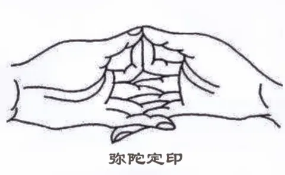
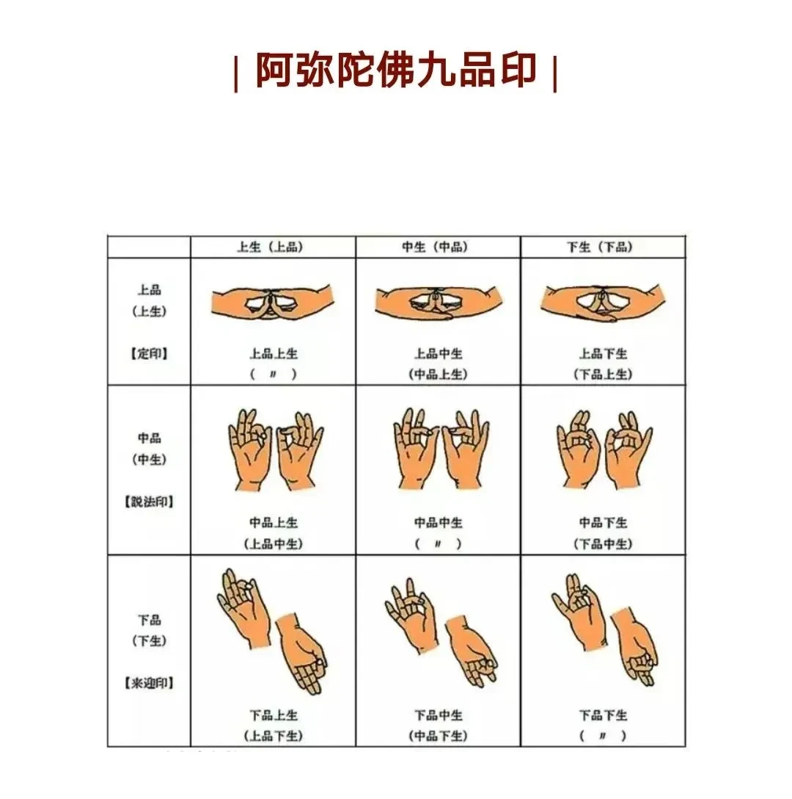
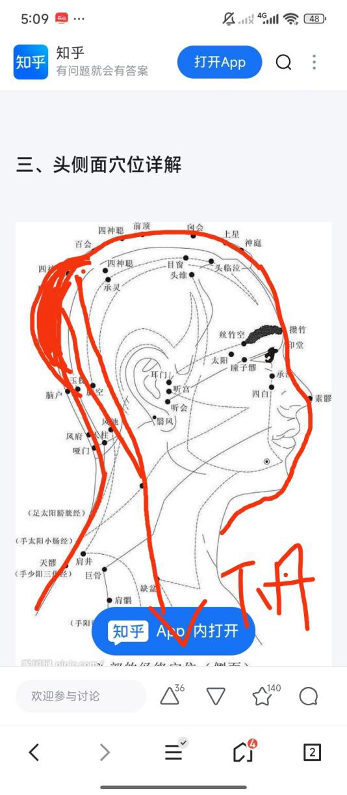
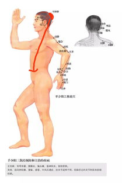
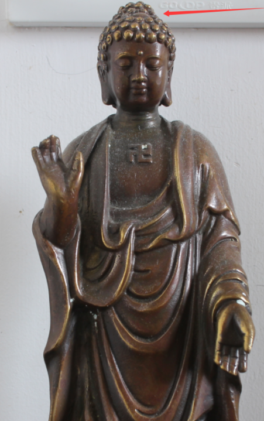
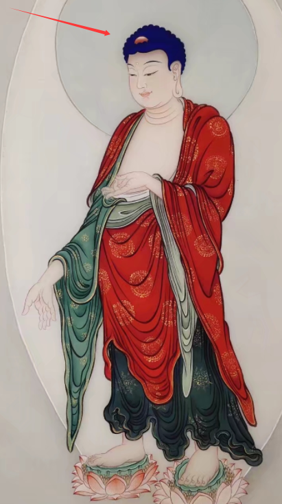
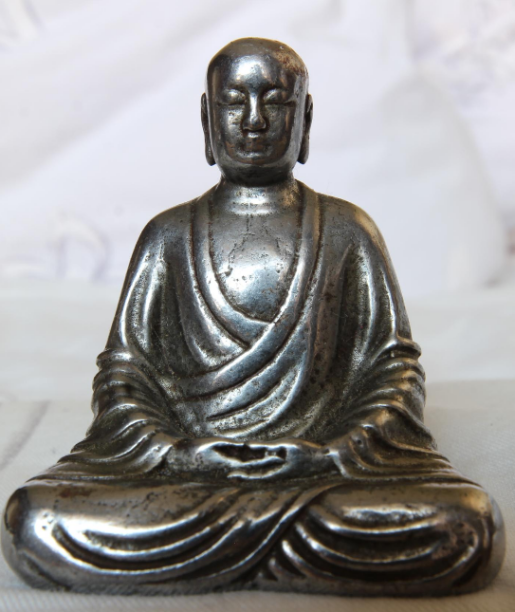
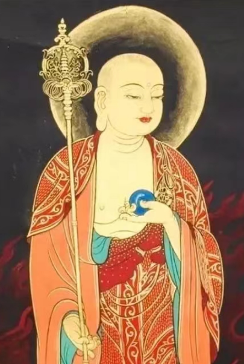
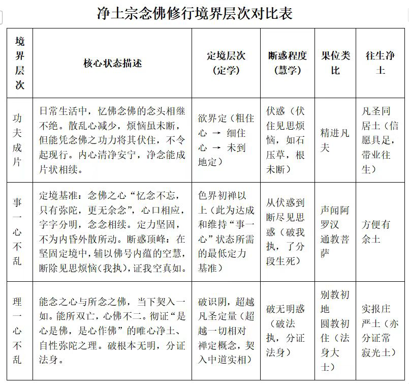
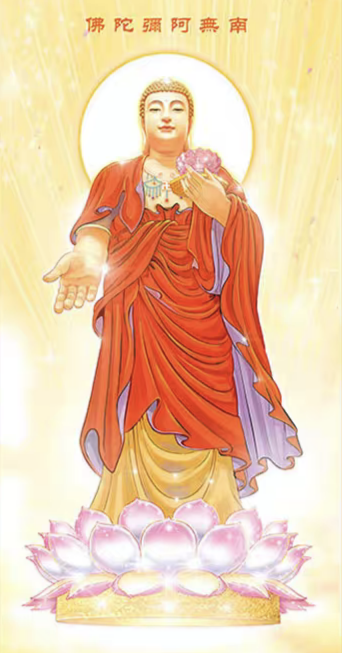

17二〇二五年十一月(468)
2025年11月10日 官網(144)
今天是11月10號，週一，先回答官網的答疑貼吧，官方網站，首先感謝做官方網站的人，我都不知道，還有這樣的能人，群主說群裡有很多人才，各方面人才都有，我只是聽聽而已，從來沒有認真的去想這個事，這個事就交給大家們去辦了。有人做官網，我覺得負責做官網的事情，這位朋友辛苦，辛苦各位，還有感謝大家提供了這樣的道場，你在這裡在網上提供這樣的道場，就相當於過去的釋迦牟尼佛時代，給孤獨長者和祇陀太子提供給孤獨園一樣，是有這麼，我覺得這個性質是一樣的，雖然不是現實的道場，而且我現在不打算做線下的道場。因為在國內，這個是你一旦在國內你要搞這個線下見面的這樣的地方，還有經營的話，就得上這上面得報備，還有申請，得到許可，如果沒有得到許可的話，就很容易招來他們的關注，然後說不定就有什麼事情發生了，所以在國內是不打算做線下的行為，但至少在目前是這樣想的，未來會怎麼樣就不好說，總之給建設官網的朋友，我感謝各位，你的功德很大，我只能這麼說了，總之感謝。然後咱們就開始回答問題，從15樓開始，前面沒有問題。
印龍
1、Tai師好！未斷淫/欲不可入初禪的原因是什麼呢？打坐到四個小時就可自動練精化氣麼？感謝。
Taiguanglin
15樓印龍，這位朋友問，未斷淫慾不可入初禪的原因是什麼？後面以後就回答問題之前，我會把他的問題概括一下，念出來。前面都是直接回答問題，可能有些人就聽沒有不知道問題的情況下，光聽就聽不出什麼來。
所以後面就好好念一遍，不全念就唸問題。未斷淫不可入初禪的原因是什麼？打坐到四個小時就可自動煉精化氣嗎？後面的問題四個小時三個小時多一點就開始能做到煉精化氣了。那麼前面為什麼不能斷淫、不斷淫就不能進入初禪？我們首先得對初禪什麼得有個定義是吧？看網上說初禪什麼喜樂知各種知各種感覺，你靠這個是沒有辦法正確的傳達意思的。
初禪的定義是下三根暫時熄滅，下三根暫時，不是完全熄滅的，下三根是身根觸覺，還有嗅覺還有味覺，這三個叫下三根。在定中，這三根是暫時熄滅的。
出定的時候它這下三根又起來，那麼你想淫慾淫慾屬於哪個？
淫慾的快感來自於哪裡？是不是身根的摩擦，身根，身根的覺受觸覺，生殖器也算身根，身根的摩、生殖器的摩擦給你帶來快感是吧？
那這個感覺是不是屬於身根觸覺，那是不是應該先熄滅它？再往上講，如果你想入二禪，二禪是下三根徹底熄滅，然後上三根暫時熄滅，暫時在定中，定中你至少要做到上三根暫時熄滅的，出定的時候它會起來。那麼用眼根耳根算是上三根的話，至少你得斷一切用眼睛和耳朵來產生的執著。
比如說打遊戲，我喜歡打遊戲，我也玩過打遊戲，打遊戲是不是用眼睛看用耳朵聽還有用手操作，這屬於上三根的內容，內容部分，針對於上三根的內容。眼睛看的畫面，耳朵聽的聲音屬於上三根的內容，如果你想把上三根暫時熄滅，暫時熄滅，這已經是熄滅根器的境界，你至少也得先滅掉上三根所執著的內容是吧？
是不是這個邏輯？你得先斷上三根所執著的內容，你眼睛所執著的那些個畫面你得先斷掉，不喜歡再看什麼東西了，這個時候然後才是第二步才是你讓眼根境界對眼根的執著給滅掉，到了下三根也一樣，淫慾是我們身根觸覺上形成的執著的對象，是不是這個啊？大家好好想一想，是不是？我們性交是怎麼做的，大家都知道的，你知道了你就知道原來淫慾是我們身根觸覺上產生的快感，我要斷身根觸覺，首先就要斷身根觸覺上的執著的對象就是這個快感，先斷了這個，然後才是斷身根觸覺本身。
理論上是這樣的，如果你到個人修行層面上，如果你沒有斷淫的話，它自然會洩的，到了一定時間滿了它就會洩，而且有夢遺的春夢，裡邊那個美好內容的那種夢會出現，然後自己就會洩掉。如果你斷了淫慾，只要滿了它自己會洩，但是沒有這種夢，沒有這種夢，它只是會洩的。
所以你在這個情況下，你要堅持三個小時以上修行的話，每天打坐連續三個小時以上，到四個小時這個時間段的話，它自然而然它就會化掉了，把精液都給轉換成能量吸收過來，然後你就不會洩了。如果你沒有了淫慾，但是隻打坐兩個小時，那滿了還是會洩。
如果你有淫慾的話，打坐四個小時理論上是可行的，但是有淫慾的話就自己做夢就會洩掉，對我們身體的運作模式就是這樣的。所以你得就先斷淫，斷淫之前你得有斷淫的願望，有這個大願，然後再精進修行，每天該磕頭磕頭打坐打坐，做到了自然而然就斷了，
印龍
2、末學現在每座降魔坐都可達到六十分鐘以上（坐禪半年），目前在衝刺九十分鐘，感恩Tai師多年來無私教誨
🙏末學想問，上坐前有無建議的預備動作（如鬆垮），更重要的是下坐時有沒有收功、凝氣、活血的步驟呢？有的話該如何做呢？
Taiguanglin
下一個問題，打坐上坐前有無建議的預備動作，如果你是每次都能坐一個小時甚至更長時間的話，不需要做特別的準備動作之類的，你只要要靜下心來，先身體靜下來靜靜的然後開始坐就可以了。
如果你是純粹的初學，稍微做點放鬆身體的動作這個就可以了，沒有什麼明確的動作要教，大家網上自己可學一下瑜伽動作，覺得哪裡硬哪裡僵直，怎麼放鬆練一下就可以了，沒有特別的內容。還有下一個更重要的下坐時有沒有收功、凝氣、活血的步驟？也一樣。
如果你是修為已經到了一個小時兩個小時，那起來時候只要先靜下來，先等個十分鐘，你看個手機動動頭，但是不要起來，就是先動一下上身，動個十五分鐘十分鐘，然後再起來這樣就可以了。
如果你想學那些個電視裡的那些動作，什麼雙手舉起來再往下壓，壓到丹田，觀想，這樣也可以，在寺院裡都是這麼教的。起來的時候先把注意力放到丹田，等個五分鐘十分鐘，然後就把氣引到丹田裡，然後再起來。教是肯定這麼教的，但是大部分人也不是都按照這個來做的，所以起來之前如果初學的話，先玩個手機，看個什麼視頻，這個都可以，先坐個五分鐘十分鐘，讓身體活動一下，上身活動，然後再起來就可以了，你也可以學他們按照正常教的觀丹田五分鐘十分鐘再起來這樣就行了。
印龍
3、末學發現在打坐時，坐直後吸氣反而胸口感覺吸氣更加困難，不如彎著上半身吸氣舒暢，這是什麼情況呢？如何打通這裡呢？
Tai師吉祥如意
Taiguanglin
下一個問題，打坐時坐直後吸氣，反而胸口感覺更加困難，吸氣更加困難，不如彎著上身吸氣舒暢……，你打坐的時候不要刻意的僵直身體，僵直或者挺直，這都沒，這樣做影響打坐效果。
你讓身體自己去調，你的氣足了，你現在的一個小時氣還處在不那麼足的狀態，氣足了身體就自然會繃直的，氣不足的情況身體會往下塌，如果你硬挺著身體那更累，而且心靜不下來，所以你當下只要雙盤的情況下，你就讓身體自己調整，該身體往前傾也可以前傾，如果你傾的厲害的，那就找個牆往後靠著坐，這樣也行。一開始只要你達到兩個小時的時間往這個方向努力就行了。
至於身體的姿勢，只要腿上保持雙盤，然後腰不要完全太塌，頭也不要完全太低，差不多的程度，呼吸順暢的程度這樣維持著，然後氣足了身體自然會繃起來的，好吧？
明心見性
Tai師父好！
1、若成佛前將所有有緣眾生帶到阿羅漢，成佛後，其中一個有緣的阿羅漢在投胎消業時又墮入輪迴了，對成佛者還有無影響？成佛者需要再次救他嗎？
Taiguanglin
下一個問題，19樓明心見性，問說成佛前將所有有緣眾生帶到阿羅漢，成佛後，其中一個有緣的阿羅漢在投胎消業時又墮落了，對成佛者還有沒有影響？成佛者需要再次救他嗎？不影響這個已經成佛的人。要不要救他？不影響的話，他這個佛不一定要下去救，但是和他有緣的其他菩薩羅漢會救他。
你像佛經裡說的阿難，佛已經成佛了，但是阿難他在佛在世的時候，他還連淫慾都沒有滅。等佛入滅後很長時間，他在迦葉的教法上修行又上了一個境界，但是他不影響佛成佛。
有人就問是不是和我說的有矛盾，我告訴他，佛可以把他帶到其他佛很多的世界裡，你用借其他的佛的加持力把他推到阿羅漢的境界，然後再帶回我們這個世界，這樣也可以，只要讓他成為阿羅漢，然後再回到我們這個世界，成為凡夫，他只要去過了，對這個佛是沒有影響的。
你看佛經裡佛自己也說了，《僧伽吒經》裡，他說遇到燃燈佛之前其他世界裡也遇到了某個佛，這個佛在那個佛那個世界的這個佛是有同名同號的幾個億幾十個億，他每個佛都見了面都進行供養，都是學了法，但是他們沒有給他授阿耨多羅三藐三菩提的記，然後佛又說又到了另一個世界，在那個世界又見了多少億的同名同號的佛，然後他們也沒沒給他授阿耨多羅三藐三菩提的記，然後這樣去了好幾個世界，都見了好幾十個億的佛。
然後，最後燃燈佛之前遇到的一個世界的佛叫迦葉佛，同樣是幾十個億同名同號的迦葉佛，然後才遇到了燃燈佛給他授記。
所以釋迦牟尼佛與他和他有緣的佛應該數量很多很多，所以他能承接大量很強的加持力，然後轉移到迦葉身上，或者他可也可以把他帶到別的地方，給他提供更強的加持力，先把他拉到阿羅漢的境界，然後再回來，該消業怎麼修，該修消業該修行都做。
所以迦葉這個人他就算在我們這個世界裡顯現的不是阿羅漢，對佛還是沒有那麼大的影響，他還可以照樣成佛。同樣的原理，有阿羅漢墮落下來也沒有關係，對佛是沒有影響的。
星座知識是否準確，這樣的知識就算，就看按照統計學來說，它有準確的面，準確的程度，它不能說百分百全部準確，他只能說按根據統計學準確率達到百分之七八十，這樣就可以了，能百分之七八十到甚至有些部分能達到百分之九十，這已經非常準確了。
明心見性
2、星座知識是否準確？因為發現星座相同的人確實存在一定的共性，為何會這樣？是因為他們都出生在同一月份嗎？
Taiguanglin
下一個問題，你問為什麼會這樣？星座算命這些個東西是從上面傳下來的，他在把人投胎到這個世界的時候，會有意識的往這個方向推，也就是說讓一些命運性格相像的人生在同一個時間段，上面就故意這麼安排的。不是因為他們同生在同一個時間段有同樣的這樣性格命運，而是上面故意安排的。
哈哈哈哈火
頂禮師父
師父，想向您確認一下手印的問題，對在網上搜到的信息產生一點疑惑：
阿彌陀佛定印就是上品上生印嗎？
搜到相關結印的手法如下面兩張圖，是這樣結印的嗎？
不過最後感覺還是聽師父結三昧印打坐最方便。


Taiguanglin
下一個問題，24樓，哈哈哈哈火，這位朋友問阿彌陀佛定印就是上品上生印嗎？你就按照佛像的結就可以了，佛像阿彌陀佛，佛像一般結的就是這個印，上品上身印，從外邊看就是像食指和大拇指貼在一起形成一個兩個像圈圈方像方一樣，後面下面其他手指都是交叉的。
你這個話是對的，但我們一般打坐，三昧印就可以了，不需要刻意的做這個，因為這個手勢如果你修行沒到一定境界的話，手勢打坐的時候手勢也會散掉的，所以身體一放鬆，這個是手也不可能一直處在這個狀態，但是三昧印這個手勢他就算放鬆了也能維持，維持，所以還是選擇三昧印是更好的，而且對打坐這些個手勢只要雙手貼到一起，氣的運轉上已經是沒有問題了。
當然如果你還有一種手勢，就是你下品上生印，有些瑜伽什麼練的是這個手勢，兩個手都是放到膝蓋上的，下品上生這個手勢，以前遇到的一些教佛法的人也這麼教，對初學也是有一定幫助的，但是我們還是教三昧印，這個更方便一些，還有對身體的效果更好。
Lycing
頂禮Tai師父，按照師父講的世界劇本:
印度產生佛教，隨後拋出給中國，朝鮮半島作為佛法備份，玄奘等大師為傳譯者
宣化上人在美國，天台宗湛山三老在加拿大，正在建設加拿大五臺山，日本鈴木大拙禪宗早已傳入北美，泰國南傳各禪修中心也都在北美建立禪修中心，藏傳更是早就傳入北美；現在北美頂層中產也都推崇流行禪修（喬布斯等等）
【問題】:所以中國佛教在一百年後消滅後，北美佛教未來會怎樣？是會衰落混亂分裂，還是作為佛法備份地區，佛教繼續在北美生長發展下去，老百姓歲月靜好嗎？
Taiguanglin
下一個問題，25樓Lycing，這位朋友問，中國佛教在一百年後消失後，北美佛教未來怎麼樣？是會衰落、混亂、分裂，還是作為佛法備份地區，佛教繼續在北美生長發展下去，老百姓歲月靜好嗎？
首先我想說的是我們這個設計是到三千年為止，按照我們公元算，公元歷，公元歷這個是到兩千年都已經結束了，後面多加了劇本，都直接先寫了一百五十年，後面的一百五十年後的劇本就不歸我們管了，是這個世界的佛菩薩們管，所以我現在我無法說是對未來的事情就不敢做什麼預言了。
至於從我們設計的邏輯上看，想讓佛法在我們，像這樣殺戮，充滿了殺戮的世界，還有女性都可以出家的這樣的環境裡，想讓佛法繼續維持下去，它必須有政府來保護，有政治權利來保護，但是美國他們政治權利它不保護這個。
我網上看了一下，美國的佛教徒有三百萬，佔總人口的0.9，而且近幾年說是增加了，但是你具體看的話增加的全是亞裔的數量。就是我們這邊東南亞和中國這邊人過去了，他們本來就信佛，然後去了之後就人口上增加，而不是白人的數量，白人原住民信佛的數量大量激增，沒有這種可能性。
而且有殺戮的文明，有殺戮的宗教，允許殺戮的宗教和不允許殺戮的宗教放到一個環境裡公平競爭的話，不允許殺戮的宗教是根本鬥不過他們的。
所以你看韓國就看韓國的現狀，韓國本來是佛教國家，但是基督教過來之後，李承晚他在剛韓國剛建國之後，他就帶基督教過來，還在還建神學院培養牧師什麼的，然後到現在也有六七十年的時間了，應該是七十年了。
從1945年開始算起的話，到現在是整整算是八十年時間，那麼在八十年代下來，韓國是基督教和天主教人口超過了兩千萬，佛教徒只有一千萬，本來是佛教國家，韓國也是佛教國家，朝鮮都是，朝鮮、日本在接觸西方之前都是佛教國家，但是一旦和他們接觸，他們滲透，就相互競爭的話，這樣在公平的環境裡相互競爭的話，根本鬥不過他們。
所以美國這邊也一樣，他們本來就是那樣的環境，所以你覺得他們環境裡佛教會茁壯成長，這是不可能的，所以我們就不指望這個事情了，還是重點還是放在以中國為中心，因為以前也有人說北美的佛教算是正法時代，你要說正法時代，佛經裡的說法是正法時代裡是修行的人多，而且證悟的人也多，佛法的義理核心義理不變，這樣才算正法時代。現在就算北美0.9%的人，他們也算修行人多嗎？多不了，這證悟的人更談不上，所以我是不相信他那邊能有什麼作為，就看後邊的這個世界的佛菩薩負責傳法的菩薩們怎麼設計。
anshuo5445
頂禮Tai師父，弟子有幾個問題:
1、師父說，佈施佛的福德是佛把佈施行為百分百傳遞給有佛的緣眾生，佛有緣眾生的歡喜心再反射回來，那佛的有緣眾生至少是阿羅漢，請問阿羅漢沒有情緒也會起歡喜心嗎
Taiguanglin
下一個問題，第二十九樓，anshuo5445，第一個問題，佈施佛的福德是，佛把佈施行為百分百傳遞給有佛的有緣眾生，佛有緣眾生的歡喜心再反射回來，那佛的有緣眾生至少是阿羅漢，請問阿羅漢沒有情緒也會起歡喜心嗎？這樣問題挺好的，從我說的話中找出矛盾點來反問，這個是辯經的一些技巧。
我也說過了，凡夫是沒有辦法佈施佛的，因為佛不出現在你面前，佛已經沒有，佛已經把和他的有緣眾生全部度了，他就沒有業，他就不會出現在那些眾生一般的眾生面前，但是佛可以以顯化身的方式出現在眾生面前，顯化身，這個化身也可以接受佈施的。
這個時候和他有緣的眾生雖然已經都成為阿羅漢了，但是這些阿羅漢的還有這個佛還有和有緣的菩薩們，他的願還在，這個願也會對人產生影響的。他的大菩提心，希望所有眾生都解脫了，這個願對你身上也會產生影響。
不光，歡喜心只是在凡夫階段的歡喜心，到那裡這個願也算是，但是這個佛一般都只會出現在他所創造的那個世界裡，這個世界已經交給了別人，下一任佛在管，但是他作為古佛也有時候出現，在《地藏經》裡也出現了什麼，還有《法華經》多寶如來，都古佛，但是在這個世界裡他是古佛，他還會出現在這個世界裡後面的眾生身上，但這個時候這個世界是繼承下來的，所以和他有緣的眾生往下是可以傳的，所以對他這功德還是在。
那麼一個古佛，有沒有會出現在其他世界的，完全其他世界的眾生那裡，那就得那個世界裡也有人來傳他的法，古佛的那個世界的法。比如我們現在這個世界和阿彌陀佛的世界是沒有直接因緣的，但是釋迦摩尼佛求世界的過來傳法，然後觀世音菩薩也說了這個世界是有因緣，這樣來觀音菩薩如果以顯化身的方式出現在這個世界的凡夫眾生的面前，然後接受了佈施的話，也會產生相應的功德，從那邊也可以傳遞過來。
所以這個是邏輯上是這個願，佛，你只要是佈施了佛菩薩了，你去信至少證明是你是信佛的，那他們願意讓所有有緣眾生解脫成就，這個大願大菩提心在你身上也會起作用，這就叫加持力，所以對你還是有產生功德的，功德這個效果的，這樣說你能理解嗎？
我不知道你能不能理解。
anshuo5445
2、業是眾生對自己的壞情緒，那邪淫沒有給誰帶來壞情緒為什麼也算惡業
Taiguanglin
下一個問題，業是眾生對自己的壞情緒……，業是眾生對他人的壞情緒，業是互動中產生，互動中產生的，不是自己的，我自己打飛機這叫習氣的展現。
如果打飛機多了身體會受損，習氣重了，我會墮入畜生道，福報耗盡之後習氣也重了，我就會墮入畜生道，雀鴿鴛鴦報，《地藏經》說道，有可能變成猴子，什麼都有可能，但是這個不算業，和別人互動才算業。
邪淫沒有給誰帶來壞情緒，你說的邪淫是啥？你說邪淫就是我們正常認為的邪淫是和其他眾生互動了，而且這個是不受世俗規則保護的，比如你劈腿了，婚前性行為了在以前算，現在是雙方都樂意的話，那就不算了，這也算他們的業，在他們命運中已經寫好了，這也不算。只有是不正當的關係，婚後劈腿或者去花錢買春這個算是邪淫，因為這背後不是真受世人保護的和兩相情兩情相悅的那種關係，對願意對自己的行為負責，對對方負責這種關係，這就是邪淫。
所以邪淫是一定程度上傷害了某人，如果你劈腿，至少你傷害了原配，肯定是有損失，有傷害的，算惡業，如果你花錢買春，人家是人家是被生活所迫，不得已以這個生意謀生，這算對他們來說是事業或者生意。
但是她也知道對她的身體或者整整命運沒有好處，但是被生活所迫來做的，你算是趁人之危，所以也是有影響的，至少這個比強姦要好一點，但是它還是有影響，強姦肯定是邪淫也是有相應的果報。
所以我們首先你得把業，業的邏輯給瞭解清楚，業是和其他眾生互動才算是，眾生對自己的壞情緒，我可能沒有理解對你的話，眾生對自己的，你要說眾生對我的壞情緒是，總之你的行為讓其他眾生產生了壞情緒指向我，那就都算惡業，邪淫肯定是讓一部分眾生產生了壞情緒，所以也算惡業。
anshuo5445
3、請問師父《僧伽吒經》中的:眾生有老作少。如是生滅是什麼意思，還有眾生老者於閻浮提以為非妙。少者雖妙現有生滅，感恩師父開示
Taiguanglin
下一個問題，《僧伽吒經》中的：”眾生有老作少，如是生滅，是什麼意思？還有眾生老者於閻浮提以為非妙，少者雖妙現有生滅。“
你要問這些佛經裡的話，你最好把前後段給貼出來，這樣你隨便拿一句的話就有可能斷章取義，我也可能解釋錯誤，我看了一下這一段，首先講什麼是老眾生，什麼是少眾生，你說的這一段是整句這樣的：“眾生有老作少，如是生滅。善男子，如人沐發著新衣服從舍而出，餘人語言，善沐頭髮著新淨衣。”
就說有人洗了頭髮，然後穿了新衣服從家裡出來，旁邊的人就說你善沐頭髮，你會洗頭髮，而且穿了新衣服，這樣說，下面一段是：“又如有人洗沐頭髮著故洗衣，”旁邊就有人說”善沐頭髮衣服非妙，如是如是.“.....有人洗了頭髮，但穿了舊衣服出去，旁邊就說善沐頭髮衣服非妙，衣服不那麼妙，“如是，如是，藥上”，藥上是藥上菩薩的名字吧，“眾生老者於閻浮提以為非妙，少者雖妙現有生滅”。
他就是個比喻，相當於眾生，老者是前面的，穿了新衣服，洗了頭髮穿了新衣服的，少者應該是洗了頭髮，當然穿著舊衣服，但這個比喻好像很模糊，我們也不知道他到底要說怎麼個說法，但是他後面解釋了，“爾時一切婆羅門諸外道尼乾子白佛言。世尊。何等名老。何者為少。”什麼是老什麼是少？
有人這麼問了，“佛告諸外道。所言老者。數數往來餓鬼畜生地獄之中受苦無厭。”佛說什麼是老者呢？在惡鬼畜生地獄這些三惡道中數數往來，反覆的輪轉，但是受苦無厭，受了苦，但是沒有產生厭離心，無厭這是這個意思，就是老眾生是你在輪迴中承受各種痛苦，但是對這個世界沒有產生厭離心，這種人稱之為老眾生。那麼少眾生是什麼呢？前面下面又說了，“彼人問言。我等諸人是少眾生。”我們是少眾生嗎？這是反問，後面有問號。“世尊，我等是少眾生”，又問了兩次，我們是少眾生嗎？這麼問。
“佛言。如是如是。汝等是少眾生。以不能知自身量故。”佛說對對，你們就是少眾生，是因為你們不知道自身量故，你們沒有自知之明，你們不知道自己是什麼狀態，所以你們是少眾生，是這個意思，然後我們從前面的這個更往前推，前面“佛告一切勇菩提薩埵”，在這裡這一大段我就不全唸了，他說是：“譬如有人，吾我自高，家居貧窮”，有一個窮人有貢高我慢心，他到了王宮直入王宮，然後守門的人就把他抓住了，然後，“王聞有人直入王門”，王聽到有人直接闖王宮，就想到這人是來害我的。
然後王很憤怒，然後叫大臣將這個人打死，並其父母兄弟姐妹，就侏九族，把全家都給弄死了，就是這個意思。這段下面也說的是，這樣貢高我慢的人就像直闖皇宮的這種愚蠢人一樣，他會招來相應的果報，這一段就是這麼個意思。
然後下面又說“一切世人，欺誑自身，作如是言”，有些世間的人自己欺騙自己，“有財施我，我是福田”，自己欺騙自己，我是福田，然後叫別人給自己財佈施等這樣的人，後面又說這樣的人會帶來相應的果報，所以少眾生什麼意思？
從這些文當中推斷少眾生是你有了厭離心，但是以為自己已經了不得了，已經證悟了，就是未證言證、未得非得未得言得”，這樣的人稱之為少眾生，所以這邊講的都是對外道。
“尼犍子諸外道言”，向這些人說，向尼犍子外道這些人說，這些外道人什麼，外道人通常認為是他們也有出離心，認為這個世界是惡的，不好的，想解脫，但是他們修法是錯誤的，而且修法在錯誤道路上走到一定程度之後，有了一定的在外道的修為之後就開始到處傳法，就是產生貢高我慢心覺得自己了不得了，就到處傳法，這樣的人應該是稱之為少眾生，在這裡稱之為少眾生。你這樣看理解的話就大概明白了吧？
那麼總結一下老眾生是從輪迴當中承受各種痛苦，但是沒有產生厭離心的眾生，少眾生產生了厭離心，但是修了外道，然後產生了貢高我慢心，自以為自己了不起，這樣的眾生。你看這後面這個就好理解了吧，“眾生老者。於閻浮提以為非妙。少者雖妙。現有生滅。”老者和，不管是你認為妙還是非妙，最終都是現有生滅的，就是說你一直在輪迴，一直在輪迴，是這個意思。
anshuo5445
4、弟子曾在催眠中體會過只有源源不斷歡喜心的感覺，過了一會就從催眠狀態出來了，看了師父的書有點像四禪，不知道怎麼回事，懇請師父開示
Taiguanglin
弟子常在睡眠中體會過，只有源源不斷的歡喜心的感覺，過了一會就從催眠狀態出來了，看了師父的書有點像四禪，不知道是怎麼回事，催眠是進不了四禪的，你說你有歡喜心嗎？
四禪是沒有情緒的，所以沒有歡喜心，只是相對而言是很平靜，很靜的狀態，催眠是，催眠在某某種意義上說更類似於幫你進入夢境當中，所以催眠裡看到的不一定是真的，不一定是你前世的某些記憶，或者他引導出來的某些畫面，他不一定都是真的。
因為我看韓國一檔節目裡，他們專門做了一個實驗，進去催眠之前把這些志願者們讓他們進入之前先去一個房間休息，這個房間裡壁畫上什麼書籍整體的環境它做成了，韓國有個小說叫《春香傳》，這個是書生和美女的一個愛情故事，這故事就不說了，它佈置成了一個《春香傳》的那種場景一樣，然後壁畫都畫成那樣，然後讓他們在這個裡邊待了一段時間，然後再進行催眠，然後挖他們的前世，結果相當一部分人想說出來前世他們是《春香傳》裡的主角，不管男主還是女主。
所以說你從催眠找出來的前世不一定是你的真實的前世，有可能是你的想象，就是你執著的那些東西，它也可能變成催眠裡出來的那個東西。所以這個催眠不是完全靠譜的，但是至少你能進入催眠他比完全進不了催眠的人是稍微在意識層面上境界是高一點的，因為有些人是進不了的。
因為既要對催眠師有信任，還有你的你的狀態也能快暫時的熄滅文字妄想和對五根的執著，暫時得熄滅住，雖然不是完全滅，也不可能完全滅，你靠催眠是滅不了的，只能暫時在感受上先暫時熄滅，外界的而且是外界的。
你在催眠當中還有五根覺受的。在那個世界裡你看那個催眠的畫面裡有種他也會承受著一些痛苦，他引導著他在催眠裡感受痛苦，然後就想醒來他也醒不出來，他能感受到痛苦，肉身的痛苦的話，那肯定是在那個境界裡還有肉身的覺受的，就是身根觸覺什麼的，眼根的境界都有，只不過暫時熄滅了外的對外的感知，對外的感知，我們肉身產生的對外感知，所以它催眠還是很有侷限性，而且找出來的這個東西也不一定是真的。
Janpenny
Tai師父您好，有關最近修行的事情有幾點請您慈悲開示，為我解惑
1、每天都堅持磕大頭，但膝蓋兩側一盤腿就疼只能左腳放右腳上單盤，右腳沒法盤腿腳踝那裡的筋太疼，這種情況咋處理好，我從之前的雙盤變成單盤變成散盤，上坐腿筋太疼沒有狀態坐不下去
Taiguanglin
下一個問題，第三十二樓Janpenny，問一個是筋疼的問題，打坐筋疼，還有膝蓋兩側疼，還有你說現在練腹式呼吸，在這個階段肯定是疼的，我不知道你現在幾歲，如果是年紀少小的人筋還是能拉開的，年紀大的人筋拉開的時間更長，所以你還是先練練什麼青蛙式蝴蝶式那些瑜伽動作，你在網上搜一下怎麼拉筋，有這個瑜伽動作，你先從這個開始練，不要著急，這個是需要時間的。
筋隨著你的境界高，妄想越少，身體越放鬆，筋也就越容易拉開，但是前期初學尤其年紀大的五十歲以上的人，妄想也多，身體也有很多毛病，這個時候打坐筋僵硬的程度很嚴重，所以很疼，這個沒有辦法，這就靠慢慢來。你說你下面就開始問腹式呼吸了，你先把腹式呼吸練好，然後這個瑜伽動作什麼的平時都練起來，每天上午和晚上都練，慢慢來就可以，還有體能也得練，磕頭也得練。
Janpenny
2、請問練腹式呼吸，只是吸氣讓肚子更鼓起來百分之二十，呼氣更癟一些，呼吸完了突然不撤力可以嗎
Taiguanglin
下一個問題，練腹式呼吸這個已經說過了，吸氣，吸氣的時候肚子鼓起來，稍微多吸入百分之二十程度，不要使勁吸，然後肚子撤力，肚子鼓起來的時候肯定是用力把它往前推的鼓的，然後肚子一撤力，肚子就進去了，然後呼氣，然後等待，靜止，等個幾秒鐘不，需要刻意控制，你身體就會自然會然後有這個節奏。
呼氣之後不是憋氣，呼氣之後這個時候就會出現停頓，停頓一會然後再吸氣，呼氣是撤力，吸氣是用力把肚子鼓起來，然後呼氣是撤力，不是用力把肚子縮進去，不用用力的，你只要撤力就行了。
Janpenny
3、最近在修地藏佔察懺和地藏佔察輪，用佔察輪第三輪的時候相應的時候很少，能請你開示一些嗎，比如如何能與地藏菩薩更相應，在唸地藏菩薩聖號的一千遍的時間裡，偶爾蹦出幾個妄想念頭，算是不清淨心嗎？
Taiguanglin
下一個問題，地藏佔察輪的方法，相應不相應，至少你得念個一年以上的《地藏經》吧，而且就算唸了很多年，也不一定每次都相應，從地藏菩薩的角度來看，現在不用告訴你直接答案，從他的立場看，你不能完全從你的角度看，我出了問題人家不告訴我，他就不相應。
從地藏菩薩的角度看，現在你不必知道這個問題，或者說他覺得現在不告訴你這個答案是最好的，所以有這種求佛菩薩問題的事情，你不要過於執著，不要指望每次都能達到一定的答案，如果答、得不到答案那也是很正常，你也認為你覺得這個得不到答案，現在對你是好處，這樣想就可以了。
從佛菩薩角度來說，他這種看你的整體的業，覺得你當下就應該有這樣的命運，有這樣的煩惱，對你來說好處也是消業什麼的，對你來說好處多他就不會給你答案了。
還有下一個問題，在唸聖號一千遍的時間裡，偶爾蹦出幾個妄想念頭算是不清淨行嗎？都是這麼開始的，不用問什麼清淨不清淨，你自己知道。如果你真能清淨的話，這都不需要念了，本來就清淨，因為有妄想太多，所以才要念，唸經唸咒唸佛都是這麼來的，因為文字妄想太多了，所以肯定是有念頭的，所以不清淨也沒事，不清淨就多多修行堅持修，慢慢修到有清淨的程度。
上官
1、Tai師好，學人經您點撥，已可觀察到情緒是由膻中生起，現在遇到的難點是覺察到了生氣或委屈的情緒，但不知道如何有效地讓膻中的負面情緒散去呢？
Taiguanglin
下一個問題33樓上官，觀察到了情緒起來了，生氣和委屈的情緒，但不知道如何有效的讓膻中的負面情緒散去，最好的方法就是思佛，你生起不好的情緒的求佛菩薩加持心裡這麼想，然後思念阿彌陀佛這樣就可以了。
但是一般一開始是沒有那麼效果快的，這個也是需要長時間修行的，我們的情緒都是累劫以來在輪迴當中，在反覆的輪迴當中慢慢積累下來，習氣很重，不是你想散就能散。
從你意念上先發願，我要把這樣不好的情緒散去，然後向所有我給我讓他們產生不好情緒的這些眾生們懺悔，希望他們也能好好修行把情緒滅掉，或者如果你能發願普度眾生，度他們，願意度所有有緣眾生的話那更好。然後我想把這個不好的情緒都散去，你有這個意願，然後思佛唸佛就可以了，需要長時間修行的，不是一天兩天就能完成它。
上官
2、“無相、無願”的“願”和“發大願度眾生成阿羅漢”的“願”分別是什麼意思呢？一位“無願”的菩薩同時有度眾的“大願”是否矛盾呢？請Tai師開示
Taiguanglin
第二個問題無相無願的願和發大願度眾生成阿羅漢的願，分別是什麼意思？無相無願，空、無相、無願是針對妄想、分別、執著來說的，無願是沒有執著，這個意思。發大願是，這個大願是普度眾生的大願，就是大菩提心，這兩個不是一個概念。無願是針對於執著來說的，就是沒有執著的狀態叫無願，發大願是普度眾生的意思。
上官
3、學人現在坐禪基本可達到七十分鐘左右，想請教如何讓雙膝都能觸地呢？(現在降魔坐時左膝蓋有些翹起，目前是使勁摁著左邊讓其觸地）您有什麼輔助方法或道具推薦麼？感謝。
Taiguanglin
第三個問題，現在坐禪基本可達到七十分鐘，想請教膝蓋怎麼觸地，你就堅持坐就行了，沒有什麼特別的辦法，你也不需要硬硬把它壓下去，你就這麼坐著坐著，每天堅持，然後過個幾年自然就觸地了，你修為夠了，你的腦子裡的妄想少了，身體放鬆程度達到了自然就會放下了。
所以不要執著於這個身體層面上，只要能雙盤上去就可以了。
嗡判du
師父好！
問題1、請問這個世界存在可以做到“全-知”的肉身人嗎？是不需要入-定就可以馬上知道任何問題答案的那種。
Taiguanglin
下一個問題，34樓，嗡判du，世界存在這個世界存在可以做到全知的肉身人嗎？你是說凡夫嗎？你要說菩薩、佛，像釋迦摩尼佛在人間悟道覺悟之後，他也可以做到全知。
至於凡夫你可能終其一生都做不到全知，別說是不入定的狀態的全知，哪怕凡夫是修到入定了也不一定全、不可能全知，你只能知道自己範圍的一點，自己周圍一定範圍內還只有自己有緣眾生，緣分近的，這一世有緣的這些眾生的一些事，不可能做到全知。
如果你的修為達到一定程度的話，哪怕是凡夫在不入定的時候見到一個人，你就會有直覺有產生一些直覺，覺得這個人怎麼樣，或者這個人對你的目的有什麼目的，憑直覺會有一些感覺，但是你談不上這個是全知的。
嗡判du
問題2、師父您說聽經聞法即使當時不理解、記不住，也會存到阿賴耶識裡，將來可以用。請問師父，凡夫得修到什麼程度，才能調用呢？這跟宿命通是一回事嗎？
謝謝師父。
Taiguanglin
下一個問題，聽到的所有的內容都會存到阿賴耶識裡，將來什麼到了該用的時候就會拿出來，請問凡夫修到什麼程度才能調用？這個不用你管，不用你去想，你只要打坐修到一定程度開始有障礙了，覺得這個不知道該怎麼做了，開始迷茫的時候，你曾經如果聽到有關的法的話，你就自然而然就會想起來了。
當時你不知道這個什麼意思，但是修著修著突然腦子裡蹦出來，原來他說的是這個意思，以前他說可能這段時間你都沒從來沒去反覆想過，但是突然間就會生起這樣的想法，以前聽某某人說是這個意思，現在那個時候沒聽明白，但是當下一下子悟了，有這樣的事情。
宿命通是一回事嗎？宿命通不是一回事，所以只要你聽過了，未來會修行的時候，自然而然到了該悟的時候就會悟了，所以你不用太刻意的管，也不用去想這些事，你聽過就可以了。
Samsara
我有個疑問，滅文字妄想，什麼是文字妄想，是所有的念頭都是文字妄想麼，我念一句阿彌陀佛，心念耳聽，這是不是文字妄想啊？我起了一個念頭想起了一個人，這是一個畫面，這個畫面是文字妄想麼？請師父為我解惑，阿彌陀佛
Taiguanglin
下一個問題35樓，Samsara，什麼是文字妄想？這應該是初學，文字妄想在書上也說了，我們中國人在腦子裡想事情就是用漢語想的，韓國人是用韓國語想的，英、美國人是用英語想的，你想事情的時候用什麼樣的語言來想，這個叫文字妄想。用畫面這叫，腦子裡想象出一個畫面來，這是眼識在作用，眼識和文字妄想不是一個事，文字妄想比眼識境界低得多，是下邊的，眼識上邊的，這樣想就可以了。
所以眼識它不能算文字妄想，還有有些人是用耳識在想象一些音樂，比如我們網上也有說法，就是耳朵裡爬進來音樂蟲一樣，你聽某個音樂反覆的聽聽聽聽，到一定程度不聽的時候，耳朵裡也好像在這個旋律一直在播放，這不是文字妄想，這是耳識在作用。
zhoulei880414
師父，看過元吾氏嗎，有沒有驗證到本源？
Taiguanglin
下一個問題，36樓，zhoulei880414，看過元吾氏嗎，有沒有驗證到本源？我沒有看過，我以前也說過，你要問的話，你拿出他的一些言論來，最好是有前後文的，拿出來問我這個是對不對？你是怎麼理解這個可以問，你這麼問問某人怎麼樣悟到什麼境界？
我不知道，我也不想說他們悟到什麼境界，免得說了對他們的那些粉絲們產生不好的影響。因為每個人因緣不同，也都會度一些和他有緣的眾生，我就作為講法的人不適合去抨擊其他人，或者評判其他人，他的境界高與低，這個只會引戰，沒有必要。
慧通
尊敬的Tai師您好！
1、請問什麼時候有供養師父的機會！
Taiguanglin
下一個問題，38樓慧通，請問什麼時候有供養師父的機會？這不是剛剛結束了嗎？你是新人吧，一般可能半年後，三月份，如果是中間沒啥事的話，三月份。
慧通
2、本人今年五十三歲，斷斷續續修行有十多年了，看書比較多，佛教十三經及各種靈性書箱都看過，但在實修上一直沒大的進展，至今不能入定。雙盤只能盤三十分鐘，堅持的話能到五十分鐘，但三十分鐘就腿痛及心裡妄念多有點坐不住。
現在跟一位上師修大圓滿，剛剛開始，只傳了法，所以知道的並不多，就是每天堅持大禮拜和打坐觀想。剛好看您特別推薦磕頭，現在每天磕頭三百個到四百個，開始磕了一個星期，感覺磕頭有效果，感謝師父。
自己在讀書，工作方面學習起來比較快，但在修行方面卻覺得明顯落後，可能妄念太多，心不靜！自己修行不求財不求長壽，只救解脫，求明心見性，理論上知道舉手動足都是佛性的妙用，但證悟不到。請師父開示針對我有什麼修行上的建議，少走彎路，目標是今生至少證到初禪！
Taiguanglin
下一個問題，他只是先說了他的狀態，然後問的是怎麼快速達到初禪少走彎路，是這個意思吧？
現在是打坐能堅持到五十分鐘，三十分鐘就腿疼及心裡妄念多坐不住，然後磕頭三四百個，這樣已經很可以了，五十三歲，怎麼快到初禪，沒有什麼快速的方法，你要初禪至少二十年，可能你在七十歲之前能進入初禪就已經很不錯了，而且你年年紀越大，需要的時間越長，所以不要管什麼，你一定要達到什麼目標，要幾歲的時候達到什麼目標，這個給你反而造成更大的負擔。
所以你只要每天給自己定個打坐的量，磕頭的量，唸經的或者唸咒的量堅持做，每天堅持做就可以了，不要想著一定要入初禪。你要想著這個東西的話，就可能時間反而變得更長，這就變成新的執著了。
初禪是滅盡淫慾的，滅盡淫慾前還得先戒肉，你現在學的是密宗吧，給你教的是大圓滿，那密宗是不戒肉的，你吃著肉是更難。所以先從戒肉開始。如果是你修了十多年已經戒肉了，後邊更好一些方便一些，但是你想在五十歲以後還想在禪定上快速的進步，那你的飲食要特別的控制。
因為我們年輕的時候是因為身體長啊什麼活動量多就吃的多，然後把胃給撐大，但到了年老的時候撐大的胃還是要填滿，但是整體的新陳代謝會放緩，消耗的能量就少，所以年紀大了就更容易長胖，長胖了就得高血壓什麼的各種病。
飯量不減少的情況下，新陳代謝的量減少，那就會變得長胖是吧？這個邏輯很簡單，所以你到年紀大的人要想修行上有所進步的話，飲食要控制得非常好，主食儘量少吃，肉肯定要不吃的，主食儘量少吃，只吃蔬菜水果，還有鹽什麼的刺激性的食物也得少吃。
就從自己的身體上感覺，一般你吃完，如果你是六個小時一吃，比如說早晨六點吃到十二點吃，那麼最好是早晨是不吃或者吃點簡單的水果或蔬菜汁之類的，然後到中午吃一頓，中午這吃一頓，到了晚上六點之前就得開始餓了，你吃的這麼少才行，餓的時候開始該打坐就打坐，如果你想磕頭的話就晚上稍微吃點，然後過一個小時就可以打坐，你要吃一頓正餐還不行，要吃稍微吃點零食，然後就一個小時，感覺肚子脹的感覺消失了就可以打坐去了，或者說磕頭。
我是建議通常如果是你上班的人的話，早晨起來該打坐或者磕頭都放到早上這些重要的功課，因為白天經歷的工作之後，晚上回來就沒有意志力繼續堅持了。如果你是在家待著的，不上班工作的人，磕頭就放到晚上，磕完頭再打坐，然後早晨起來再打坐，然後白天就正常工作或者學習。
慧通
3、您強調要發大菩提心，自己有向善去惡的心，但是說去普渡眾生這樣的心好像發不起來，覺得自己能力不夠，還盼著高人來渡！
Taiguanglin
還有你問發菩提心發不起來，這很正常，能力不夠，就因為能力不夠要發，你發了菩提心，你有大願的話，佛菩薩會幫助你，讓你快速增長能力的，讓你快速達到那個境界的。
如果你沒有這個願的話，怎麼可能會先給你能力呢？你得先有超人的願，你有保護地球的願望，人家就可以給你這個能力，如果你沒有這個願望的話，只給你超人一樣的能力，你是不是到處去破壞是不是？
所以從佛菩薩角度看，你先有願的人，他就會幫你你更快的達到那個境界，如果沒有願的話，他就不會那麼快速的幫你，所以在沒有能力的時候更有必要先發願，你就這麼暢想這總可以吧。
哪一天我成了超級大富翁，我就建個什麼買什麼這種想象總可以吧，大菩提心也一樣，哪一天我解脫了，我就普度眾生和有緣的眾生我都要解脫，就算我沒解脫，我只要修行達到初禪以上，我至少可以教一下我比我境界低的人，這總可以吧，你這樣想，先有願，在後面佛菩薩加持就會來的更快一些。
慧通
4、練呼吸打坐要飯後兩小時進行，我想請問磕頭是飯後多久可以磕頭？頂禮師父！
Taiguanglin
下一個問題，練呼吸打坐要飯後兩小時進行，我想請問磕頭是飯後多久才可以？你是怎麼吃飯？具體都是怎麼吃飯的？我是建議是如果你上班的話，早晨凌晨起來直接磕頭，這個時候就可能肚子沒那麼餓，凌晨起來是應該沒有那麼餓。然後是晚上磕的話，就飯後，晚上不要吃一頓正餐，就是吃點零食這麼少吃一點，然後稍微沒有了感覺就可以磕了。打坐通常是飯後兩個小時都下去了再坐。
子銘
請問師父念楞嚴咒咒心念佛聞到燒焦糊味是什麼原因（我知道不用理會）但是我第一次遇到之前也沒這方面的知識想了解一下
Taiguanglin
下一個問題，39樓，子銘，念楞嚴咒咒心念佛聞到燒焦味是什麼原因，這個可能是你身上有鬼道眾生，鬼道眾生一般不是燒焦味，就是惡臭味。
但是我第一次遇到之前沒這方面知識想了解一下，如果你不念的時候是沒啥味，但是一念了就有這個味的話，有可能你身上有點東西，你多念念，多念念就好了。
這個不是嚇唬人，因為絕大部分人都有冤親債主來討債的事，幾乎所有人都有，只不過當下沒有，未來也會有，有可能過去了，也有可能未來有，如果你修行的話，修行的正法修到點上的話，就會有討債的鬼出來，下邊就會放出來，現在沒有的話未來也會出現，所以這個也算很正常的事。
如果說不是你身上的，可能是你處的空間裡有，你房子裡有鬼，這個不一定是你身上附著的和你有業緣的，但是有些鬼是在這個房子裡一直待著的，是你後來進去了，也有可能這種現象。但是從你的感受上來判斷，你就覺得當下的確有業障，什麼冤親債主附體應該多念念，至於外邊你不用特別的管，他們該跑就會跑的。
楓紅2019
師父，今年已經五十出頭了，現在打坐只能坐一個小時左右，半個小時都在熬疼，還總是腰塌(磕大頭因為到寺院裡做義工也沒時間磕)，思佛也思不起來，唸佛還散亂，最大的優點就是道心不退，現在該怎麼做請師父開示
Taiguanglin
下一個問題，40樓，楓紅2019，你說打坐只能坐一個小時，半個小時後都在熬疼、腰塌，這個都很正常，一開始都是這麼來的。
磕大頭，因為寺院裡做義工也沒時間磕，這個是你的想法，你既然在寺院裡做義工，早晨起來，起早起個十分鐘來在床邊或者床上先磕個幾十個，十個二十個，這都可以，從最少的少量開始一點一點做，你先發願我要未來一定要練好磕大頭，達到什麼程度。
雖然不要設置時間限制，今年一年要達到多少個就別想，但是你要先發願我要做，然後從早晨開始有空的時候就開始做起來。如果你說做義工沒有時間磕，你可能一輩子都沒有時間磕了，人就是這樣，時間就像海綿裡的水一樣，你擠一擠就能擠出來，環境也是。
有人說她一個女孩，她連上班早晨上班擠地鐵上班，然後沒時間磕，她就在公司裡磕，午休午飯，午飯時間吃完飯就去磕，她也管不了什麼飯後多少時間了，也沒地方磕，她就在樓梯底下磕，樓梯間裡磕，有人只要想做的話，你肯定能找個地方找個環境找個時間，這都可以做得到的。
你一直說沒有時間了，沒有環境磕，那可能這一輩子都這樣就過去了，所以你自己想想看，這種問題強迫不來，你只有意識到了覺悟到了自然就會做到。
後面思佛思不起來唸佛散亂這都很正常，初學都這樣的，每天堅持打坐磕頭唸佛這些做的堅持做，一天一個小時兩個小時三個小時增加時間，做了幾年下來你這些問題都解決了，自己都會解決的，所以現在不需要想那麼多。
你現在想讓打坐的時間延長，熬疼的快一點，疼過去的快一點，那就先磕頭，找個時間開始磕頭，早晨起來先早起個幾分鐘開始，我不知道你的義工是幾個人合住的一個房間還是。怎麼個法，完全沒有什麼磕的地方，床上也可以磕的，拿個墊一下，在床邊也可以磕，拿個墊一下就可以磕了。加油，我希望你能在這方面有所進步。
視頻時間太長了，55分鐘了，先回到到40樓，咱再理起另一個視頻音頻。
（音頻55’43開始）師父說：今天是2025年11月10號，週一，繼續回答官網的問題。這邊問題比較多，後面就儘量簡短解說吧，希望大家理解，一下子上百個問題，消耗時間太長了。上一個音頻錄到了40樓，五十五分鐘，咱們繼續看，41樓。牧羊少年：
頂禮Tai師父，我之前放生和念《地藏經》迴向的時候，就是只說一句迴向給冤親債主。後來聽您的答疑音頻，有一次您回答另外一位師兄的時候，您建議他做功德迴向，並且希望他們早日投胎成人，早開佛智慧。聽了這個音頻之後，我後邊迴向的時候也加了這樣一句話。我發現這樣做了之後效果明顯更好了。
這樣做之前，我讀《地藏經》會打哈欠，昏沉，眼睛酸澀，有的時候還會睡著（不是自己想睡，就是控制不住的就睡著了），這樣做了之後沒過多長時間，這些現象就很快減輕，然後都消失了。
我想問的是，這樣做有這麼大的效果的原因是什麼？以及您在答疑中建議這樣做，是因為您知道這樣做有更好的效果，所以才這樣建議的嗎？
Taiguanglin
牧羊少年，這位朋友說，他以前唸經只說迴向給冤親債主，但是沒有明確地說後面的，所以一直都是念經的時候打哈欠，昏沉，眼睛酸澀，有時候會困。後來聽到我回答其他人的問題的時候，說迴向完之後，還要說希望他們，這些冤親債主們早日投胎成人，早開佛智慧這樣的話，然後他就照著做了，然後這個就不好的反應都沒有了，都消失了。
這位朋友問，我想問的是這樣做有這麼大的效果的原因是什麼？以及您在答疑中建議這樣做，是因為您知道這樣做有更好的效果，所以才這樣建議的嗎？
應該是吧。鬼道眾生是他沒有辦法自己修行的，大部分鬼道眾生，需要有人在人間給他，幫他做功德，然後給他做算是指引，這樣他才能去那鬼道的那個學校裡，專門做，教佛法的學校，而且教的是粗淺的。然後是功德夠了，就讓他們去投胎，這樣的初級學校。只有人間有人幫他做功德，然後把他引導，往那個方向引導的時候，才有可能去，自己是沒有這個想法的。
所以你只是給他這個功德，那就好比像給一個肚子餓的人，你給了他錢，他不知道錢怎麼用，他就只是兜裡揣著錢而已。你告訴他這個錢你去哪裡可以找，買東西吃，這樣他才會去做。然後就開始該投胎的去投胎了，這樣對你這裡就開始有好的效果了。
所以一定要，迴向的時候，一定要明確地指向，有一個指向，希望他投胎做人，這是最低級的要求。能早開佛智慧，什麼早成佛道，這個是高級的要求。咱們想解決自己的冤親債主的問題，就先求他們趕緊投胎成人，這樣就可以了。
正常的寺院裡，做法事也好，給人迴向也好，都是這麼教的。你一定要指向他，早開佛智慧，早日投胎，一定要明確的指向才行。
下一個問題，42樓，嗡判du，前面上面剛才那個問，這位問，是我知道這樣的效果嗎？算知道吧。
嗡判du
師父好。
問題1、師父您在講心經的書裡說：“顛倒夢想，也可以叫顛倒妄想。我們凡夫的第一個顛倒妄想，就是認為肉身是真實的自己。事實上，我們所看到一切都是我們的夢境。”
師父，做夢的時候，夢裡的東西都是假的、是顛倒妄想，這個好理解。可是醒來之後，現實裡的桌子、椅子和其他眾生等，不都是“客觀存在”的嗎，怎麼也“都是我們的夢境”呢？請師父開示。
Taiguanglin
這位嗡判du，第一個問題，講經的時候講到顛倒夢想，然後這位知道了在夢裡是顛倒夢想，但是現實裡不是都是客觀存在的嗎？怎麼也都是我們的夢境，現實怎麼是顛倒夢想？他這個理解不了。
那麼你在夢裡，你在做夢的時候，你能知道你在做夢嗎？大概率都是不知道的，夢裡知道自己在做夢，這個也是需要一定的修為的，這叫“清明夢”。有些人天生有這個能力的，但是絕大部分人都沒有這個能力。夢裡你是不知道你在做夢的，夢裡有感覺、什麼想法、有痛苦都有，但是你感覺不到。
那我們現實也是這樣的，看夢裡有山河大地、有別人、有動物，別人和動物攻擊我們的時候，我們還會感到痛苦，肉身也會感到痛。別人和其他動物還有什麼山河大地、宇宙、星空，這些都是夢裡面產生的，是吧？這都是我們的夢境，是我們意識創造出來的幻境，這個能接受，那麼為什麼不能接受我們當下這個世界是幻境的真相。
你可能看上去它是真的，這就好比你在夢裡不知道你是，不知道你在做夢一樣，我們現在絕大部分人也不知道我們在做夢，這個你是意識不到的。
現在佛告訴大家你們都在做夢，我們信佛了，我們接受這樣的觀念。但是很難從意識深處裡，由心的認為這個世界是假的，很難起到，想，很難生起這樣的觀念，這個是很正常，所以我也理解你的想法。
我們，先從邏輯上想通了這個事，夢是假的，夢裡出現的所有東西那都是我意識裡創造出來的，像有天、有地、有天地宇宙，這些這麼大的大環境全是夢裡創造的這種環境，而且我在夢裡也是一個小肉身的，還有其他，其他眾生還會攻擊我。
那麼我們現在所做的，現實，稱之為現實的夢，邏輯上是不是也一樣。只不過這個夢和那個夢，我們自己的夢，差別就在於我們這個夢是所有人，所有有緣眾生，和我們有緣的眾生的共同的夢，所以它不容易醒來。而且就算我醒了，別人不醒，別人也會從他的夢裡的執著把我們拉進這個夢裡，所以我們還得度人。
你在邏輯上想通這個就可以了，不可能一下子聽完之後由心而發的，一下子就悟了。
你看惠能，像那樣的人，他看到《金剛經》一段之後有所悟。一般人你只是邏輯上能想通，那叫理悟。你能理悟，然後堅持修行，等你的修為到一定程度開始打坐了，對這個世界的認知慢慢改變，然後感受也變，逐漸地感覺這個世界的確是假的。
尤其是你能入定的時候，那個入定，定中的狀態反而是真實的，剛入定的還不是。剛入初禪時，大部分裡邊全是幻覺，等你開始三禪、四禪的時候，那個境界裡才是真實的世界，然後這個世界是全是夢境。然後從三禪、四禪到，再到無色界定，再到阿羅漢的時候，你會發現前面又是假的，全是幻境。
所以首先我們從理悟，道理上這麼相信，這樣就可以了。你不需要非要一下子就把它當作真實的那樣，從由心式的認知，這個不需要的，而且一般人也做不到這個。
嗡判du
問題2、偶爾會-夢到自己-在夢裡-做夢，就是睡覺醒來，發現剛剛自己在做夢，但這個“睡覺醒來”還是夢裡的動作。夢就像俄羅斯套娃一樣一層層套起來。請問，師父，四禪的開悟是不是也類似於這樣的最外面一層徹底“醒來”？
謝謝師父。
Taiguanglin
第二個問題，你說夢中夢，這個也很正常，你說四禪的開悟是不是也類似於這樣的最外層的一層徹底醒來？
也可以這麼理解吧。你說的對，夢中夢，這種事我也有過。像精進修行的時候經常做夢，做夢夢見上課，通常都是上學的夢，然後有時夢到自己在做夢，夢裡，我在，夢裡我在上課，然後覺得，我覺知了我在做夢，一般做多了你就知道，這個是，一到學校這個環境裡，場景的話，那肯定是在做夢，然後就想辦法把自己弄醒。
然後醒來之後，我原來是在，趴在課桌上又在睡覺，醒來之後發現還是學校，還是教室，不對呀，然後就又開始弄，把自己，想辦法讓自己弄醒，有過這樣的夢，所以我也知道你這個夢中夢是怎麼回事。
一般你要修到一定程度，別說是初禪，哪怕你能進入欲界定，穩定地進入欲界定的時候，大概率能在夢裡覺知自己在做夢，所以這個還得需要一段修行，時間的修行。至於四禪，禪定不管是四禪，無色界定也好，阿羅漢也好，菩薩也好，你越往上走，越發現下面那個境界全是假的，全是幻境，會有這樣真實的感受。
如果你能在每天，基本四禪的話，別說四禪，就是三禪，每天能八個小時以上處在定中的話，對認知，對這個世界的認知會翻轉過來。那個狀態是真的，那個狀態是你的常態，而我們出定的狀態是進入了夢境一樣，有這樣的翻轉的過程。然後就對這個世界更不執著了，想平時也想一直靜靜地待著，有這樣的想法生起。
所以一般出來傳法，一般情況下，你只要能坐到二禪程度，就該出來傳法，至少維持在那個境界就可以了。因為再往深了你就不願意再出來了，而且對消業也有一定的影響。在那個境界裡都不願意和人接觸，就想靜靜地待著，所以要出來傳法的時候就會，境界又會往下拉一下。然後在大概處在二禪、三禪或這個程度就基本可以適應這個世界。
尤其是如果你一直保持那種想教人，用禪定，用禪定教人的話，最好是二禪，能夜裡八個小時一直打坐，那白天還能正常活動，夜裡打坐，這樣就可以了。但是一般人想做到這個又很難。現在出來傳法的人，很多都是，只是學了理論而已，還沒有到禪定很深的境界就開始出來。四禪更不可能了，大部分人都窮其一生很難達到四禪。一般凡夫是，論時間來看四十年，那還是精進修行的四十年，一般人就時間上都有點不夠。
所以我們先是從理悟，從理悟上知道原來這個是夢境，這樣就可以了。
你說的四禪的開悟是不是得類似於這樣的最外面一層徹底醒來？準確地說徹底消失了，外面一層執著就消失了，這麼想就對了。
覺非
Tai師父好，感恩師父開示。
1、唸佛觀佛的同時，腦子裡也會起妄想，如果注意力過於集中，明顯感覺腦袋血壓升高，過於鬆散又容易昏沉。這個時候提起分別心來觀照這個妄想，從而讓它自然消失，迴歸到觀想的佛像身上，這樣做是對的嗎？有時候觀佛，腦海中的佛像突然變清晰，並且散發七彩琉璃的光。
目前雙盤一個小時，到半個小時昏沉困了，刷十分鐘手機提神，再繼續閉眼坐，大概就是這種情況。
Taiguanglin
下一個問題，43樓，覺非，第一個問題，唸佛觀佛的時候，注意力集中就會感覺到腦袋血壓升高，過於鬆散又容易昏沉，這個時候提起分別心來觀照這個妄想，從而讓它自然消失，迴歸到觀想的佛像身上，這樣做是對嗎？
對呀，對你來說都是對的。但是我是建議思佛，思佛更容易一些。因為思佛是分別心之下的，當下你打坐雙盤一個小時的程度裡，還是能夠思佛就好。而且思佛是去，為了去極樂世界，把思情練好了，以後死的時候更容易去極樂世界。
覺非
2、關於思情，一直在不停地練習覺察情緒的能力。最近發現通過默唸希望阿彌陀佛帶我去極樂世界，可以提起比較強烈的情緒，一直保持這種期盼渴望的情緒，是否就是師父說的參思情。
Taiguanglin
第二個問題，關於思情，一直在不停地練習覺察情緒的能力。最後發現通過默唸希望阿彌陀佛帶我去極樂世界，可以提起比較強烈的情緒，一直保持這種期盼渴望的情緒，是否就是師父說的參思情？
算是吧，但是我們不需要強烈地，就細微地，一直保持著就可以了。一開始是肯定會強烈地，強烈到甚至會激動，然後流淚，什麼都有。等過了一段時間，參著思情，過了一段時間，就慢慢會平復下來。然後抓住著這個細微情緒，平時也能一直抓著，二十四小時不間斷地抓著，這樣就算，基本上算成了。
覺非
最後一個不是問題，我這段時間感受頗深，佛菩薩的加持力太強大了。我在打坐到腿又疼又麻，焦躁情緒也壓不住的時候，在心裡不停地發願，求佛菩薩加持我的修行。一瞬間腿也不疼了，情緒也下去了，渾身清涼舒適，突破了我平時的極限時間。感謝佛菩薩，感謝Tai師您的諄諄教誨。
Taiguanglin
下一個問題，這位朋友說感受到佛菩薩的加持力很大，打坐的時候腿麻、腿痛、情緒焦躁，但是心裡不停地發願，求佛菩薩加持我的修行，一瞬間腿也不疼了，情緒也下去了，渾身清涼舒適，突破了平時的極限時間。
你前面說你雙盤一個小時，我覺得你這樣的感覺，應該多告訴那些個打坐喊苦、喊累的那些人們，一個是堅持，一個是求佛菩薩加持。有，但是加持的前提就是你得有大願，這樣更容易引來佛菩薩加持。我覺得你做得挺好的，加油。
印龍
Tai師吉祥順遂。
末學想請您開示：
1、“覺照”、“觀照”、“止觀”的意思是否用第七識（末那識）觀照前六識/六根的運作和六塵境界？此外，在最終迴歸法身境界前，我們所“覺知”到的“覺”也好、彷彿看到的“性光”也好，是否只是第七識，而非第八識？
Taiguanglin
下一個問題，44樓，印龍，第一個問題，覺照、觀照、止觀的意思是否用七識觀照第六識/六根的運作和六塵境界？
是的，“觀”，應該是“照”，第七識開始稱之為“照”，“觀”是用注意力的時候一般叫“觀”。但是一般沒有實修的人，他是不分這個的，就混著來，所以有些佛經他解釋錯誤，容易解釋錯誤。
“覺”，通常是指向菩薩的境界。菩薩用妄想感知其他眾生之妄想的時候，因為所有意識重疊在一起，所以從，其他眾生的妄想也都是從菩薩的意識裡產生的，感覺上是這樣的，所以這叫“覺”。
此外在最終迴歸法身境界前，我們所覺知到的“覺”也好，彷彿看到的“性光”也好，是否是第七識，而非第八識？
你說法身境界什麼境界？菩薩還是佛？我們在普通情況下，我們大部分凡夫覺知的“覺”就是分別心，你能覺知全身心的所有感受，同時感覺出來，那就是分別心。
用注意力的話，是下邊的，更下一個境界，它只能把一個地方的感覺放大，而削弱其他地方的感覺。但是分別心是可以同時感知到全身的，這個時候就我們所說的覺知。但是這個也是字面意思的覺知，到了菩薩的境界才稱之為真正的“覺”。
彷彿看到的“性光”也好，是否是第七識，而非第八識？對，凡夫階段都是第七識。
印龍
2、關於參疑情的話頭問題，可否參：“如何消自己與妻子、孩子之間的業”這個問題？除了“唸佛是誰”外，您能否幫忙推薦幾個適合當疑情參的話頭呢？
Taiguanglin
下一個問題，第二，參疑情的話頭問題，可否參“如何消自己與妻子、孩子之間的業”這個問題？我覺得這樣複雜的問題還是不要想就好，最簡單是“唸佛是誰”，要麼“我是誰”，這樣也行。還有一個，有什麼高僧大德教的是“出生前的我是誰”，“出生前我在哪裡”，這樣的想法。
疑情的關鍵點是參情緒，升起這個疑問的情緒，而不是疑問的具體內容，你要先分清楚這個問題。你只要抓著這個疑情，疑問的情緒就可以了。
但是你想，真正的疑問的情緒，它是不是得有真正的疑問才能升起，你知道答案的話情緒就升不起，是不是？所以我們要參什麼“唸佛是誰”，什麼“出生之前的我在哪裡”，這樣的，自己明確還不知道問題的答案。如果已經告訴你這個答案是怎麼怎麼樣，就難以升出情緒。
所以我建議更多的還是參思情，這個更容易一些。思情是有目標性的，而疑情是在沒有目標的話，目標的或答案的情況下，尋找這個答案的過程。
所以情緒，說實話參起來，對我們現代這些人來說還有點難。但是也有些人是更適合參疑情的，他只是知道了疑情的原理，情緒的，疑問的這個情緒，他知道這個原理就和，就已經脫離了疑問的具體內容。所以我建議你也是，知道這個邏輯之後，自己看怎麼選的吧。
推薦幾個適合當疑情參的話頭？剛才那幾個都試試看吧。
印龍
3、如何知道一段業已經消了呢？（如跟妻子、孩子之間的業緣）在您看來，一段業已消的標準是什麼呢？
Taiguanglin
如何知道一段業已經消了呢？（如跟妻子、孩子之間的業緣）在您看來，一段業已經消的標準是什麼？
你產生了厭離心了，而且對方也不執著於你，這個時候基本算消了。你討厭人家，想分開，但是人家一直糾纏你，這也不算消。所以就把這個關係處理好，讓他也慢慢放下執著，不能產生對你的更大的恨意，這樣就不對了。大家都緣分到了，有某些事情發生之後，互相之間執著的情緒就會明顯減少，然後可以各自玩各自的了，這樣基本算是業快消的程度。
但是千萬不是，不是往壞的方向，“恨死你了，所以想離開”，不是這個。就慢慢地，他進入到他自己的生活當中，而把你這個人逐漸地遺忘了，你的存在慢慢遺忘了，這樣才算是消。如果是恨，什麼執著就更變深了，這樣都不算。
至少我們從修行人的狀態，我們自己，至少先慢慢放下來，然後就看對方了。對方需要我們做什麼，那肯定是還有執著，那最好還是恆順眾生，這個業還沒完，這個時候。
上官
頂禮、感恩Tai師，於末法時代遇報身菩薩傳法，還能有機會供養、請示，是學人的大福報，慶幸自己有此運氣，也發自肺腑地感恩您的慈憫。
今日學人想請您賜示的是：
1、學人已發菩提心，願自覺覺他，使自己早日迴歸法身地，並使有緣眾生早日解脫，成阿羅漢。學人想知，消業、度人方面是主動度，還是被動等人過來找自己？消業、度人方面有無您推薦的可學習的經典、理論、方法？
Taiguanglin
下一個問題，45樓，上官，第一個問題，想知道消業、度人方面是主動度，還是被動等人過來找自己？這個我都已經說了很多遍了，你先有大菩提心，想願意度人，然後就不要再主動去找事了，就好好修你自己的。等你的修為夠了，自然而然就佛菩薩會找一些人，適合你度的人來過來，向你請教，或者和你來消業。這些，這個時候你要就積極應對，好好教，這樣就可以了。
這個人是佛菩薩安排來的，所以他會主動過來，你不要主動出去找。一般主動出去傳法，沒有得到上邊許可的情況下，主動做都沒有啥好結果。前面也有人，也有朋友說了，他主動向人給我的書，結果人家根本不信，還把我的書燒了，什麼的等等。所以相互之間反而造成惡緣，所以不主動去做這個事。
傳法度人的事就交給佛菩薩，給，讓他們安排人過來，這樣最好。
如果你是講這種，出來講法這個傳法，出來傳法，這個是要得到上邊許可的。他明確地叫你出去，這個時候才出去。所以當下就是好好修自己就夠了。
消業、度人方面有什麼推薦的書、經典、理論？佛都已經告訴你了，佈施、持戒、忍辱這三個。
佈施是廣結善緣，多做好事，結，做功德、福德，這些都可以來緩衝，別，你的惡報的程度。當惡業來臨的時候，你有足夠的善報的話，就可以對沖一下，不能完全抵消，但是讓你有更好的條件去承受惡報。所以佈施，不管是法佈施也好，財佈施也好，無畏施也好，都有能力，在有條件的情況下多做一些。
持戒，就不再造惡業了，所有的惡業都不再造了，你發願以後不再造這樣的惡業了。
然後忍辱，就是當惡業來臨的時候，你忍著，不要再進行報復。你這個報復了，那這後面還有新的因果。所以你只要做到這三點就可以了。
在凡夫階段，你就是忍，實在忍不了就可以逃，也無所謂了，我們也不能讓人一直抓著你使勁欺負。所以如果不是那樣環境的話，能跑就跑。只不過至少我們在意識層面上，心裡要知道，這個東西是可能我上輩子造了什麼業，所以現在人來報復我了，有這樣的正確認知就行。
上官
2、唐朝的玄奘法師（大勢至菩薩扮演）為什麼對《瑜伽師地論》和彌勒菩薩的論著（唯識法門）非常看重呢？為何大勢至菩薩在那一世誓願往生兜率內院而非彌陀淨土呢？
Taiguanglin
第二個問題，唐朝的玄奘法師為什麼對《瑜伽師地論》和彌勒菩薩的論著非常著重呢？這都是計劃好的事。
為何大勢至菩薩在那一世誓願往生兜率內院而非彌勒淨土，彌陀淨土呢？這個也是計劃好的事。他就是這麼對外顯現，讓後面的人知道彌勒菩薩的法門和他的世界，就是強調這個法門而已。他自己是極樂世界的，所以他就沒有必要再往這個方向去宣傳了。
這個是，當時唐朝是已經有善導大師，善導他是開始傳淨土宗了，開始出現了。所以在他這裡還是以著重，還是以理論建設為主。他的任務還是理論建設，《瑜伽師地論》，唯識，法相唯識學什麼，這個都是，他先把這個理論給建起來。雖然這個理論太難了，一般人很難理解，所以後世都不怎麼傳播得那麼廣，但是這個理論還是得有，所以他的任務是這個。
所以一切的表象，菩薩出來傳法一切表現出來的，那都是計劃好的事，和他真實的境界，還是什麼他的真實的歸屬世界，這不相關的。
上官
3、學人正在實踐參思情法門，想請教：成功掌握“參思情”法門的表現是什麼呢？如何確認自己已經成功提起了一縷思情、學會了參思情的法門了呢？
Taiguanglin
下一個問題，學生正在實踐參思情法門，請教：成功掌握參思情法門表現是什麼？這個也說了很多遍了，就是你能二十四小時不間斷地抓著細微的思情。情緒一直在那裡，一直抓著細細的思情，這就可以了，但是這個要修行很多年才能達到的。
如何確認自己已經成功提起了一縷思情？你自己都不能確定，那肯定是沒有提起。
學會了參思情的法門了呢？你自己都沒法確定，那肯定不是。
你自己有沒有想，想一個人，或者想阿彌陀佛也好，想情人也好，你談過戀愛就知道這種感覺，心裡老是裝著一個人的那種感覺。而且談戀愛的時候感，情緒很重，可能是你睜眼、閉眼腦子裡全是他。不光是已經情緒上，而是腦子裡都在想象和他的音容笑貌，這些都在想象當中，這也是思情更發展出來的結果。
所以你知道這樣的邏輯，然後就心裡細細地抓著這個情緒，細微的時候，腦子裡就沒有那麼多複雜的想象了，只是這胸口有那麼一絲絲的想法，這就對了。這個需要長時間的練習，所以現在不著急。
暮鼓H晨鐘
頂禮Tai師父！想請教一下什麼是佛學意義上的智慧。
我理解，智慧不是智商（或者聰明），不是生活經驗；如果有特異功能，那只能叫神通不是智慧；如果說是對宇宙的實證，那也只是知見或者體會。
如果說智慧是自性本自具足的，那麼會是什麼呢？所以也想進一步請教什麼才是定慧雙修呢？感恩師父！
Taiguanglin
下一個問題，46樓，暮鼓H晨鐘。想請教一下什麼是佛學意義上的智慧？我理解智慧不是智商，不是生活經驗，如果有特異功能，那只能叫神通，不是智慧。如果說是對宇宙的實證，那也只是知見或者體會。如果說智慧是自性本自具足的，那麼會是什麼呢？所以也想進一步請教什麼才是定慧雙修？
凡夫的階段，你只要相信因果，就算有智慧。不相信因果的人是愚痴的，凡夫的階段就這麼看的。
然後，後面才是，所謂的智慧就是你的執著越少，修為越高，然後對這個世界的真相瞭解得越多，那就，你就越有智慧。所以智慧不是從外面獲得，都是你把前面的執著給去掉了，多餘的執著滅掉了，你就顯現出來就是所謂的智慧。
你就知道了，很多事情你都不用思索，不用思索，靠思索那就不是智慧了。一看就知道，所以自己就可以控制自己。而且智慧越高，你的執著越少，那就可以控制自己，有些事該幹，有些事不該幹，你是知道的，這就是智慧。
這個沒有你想象的那麼複雜，一說智慧以為是某種東西一樣。以往的人們都認為是從外邊學來的那是智慧，那是人生經驗而已，它不是智慧。
我們說的智慧是你把執著放下之後，有了更高的維度的眼光，從天上看地一樣，從地上看那就是地上就這麼樣。如果從螞蟻的視角看，可能前面就是二維世界，在螞蟻的眼睛裡。如果你是天上鳥，往下看是什麼，什麼樣的情景？再往上從宇宙的尺度看，整個小小的星球們又是什麼樣的境界？所以就是你把執著放的越多，滅的越多，後面展現出來視野更廣闊，這就是智慧。
如果說智慧是自性本自具足的，那麼會是什麼呢？
就知道一切，佛就是知道一切而已。他有大菩提心，這叫全善，他希望所有眾生都能解脫，這個大願一直在那裡，所以這叫全善。然後他知道所有一切眾生的妄想，因為大家都重疊在一起，他沒有，自己沒有妄想的時候，就可以知道所有眾生的妄想。他一旦起了妄想的話，就會被自己的妄想給障礙住，知道的程度就會降低，我們就可以說智慧減少了。
所以覺的智慧就是圓滿的智慧，就沒有妄想狀態。所以說智慧是本自具足的，自性本來就有的，你起了妄想之後智慧就減少了。
所以也想進一步請教什麼才是定慧雙修？這些所謂的，就是怎麼說，純書面的理論沒必要探究，你只要好好打坐、磕頭、唸佛，這就算是定慧雙修了。有些人是只看書不打坐，那就不修定了。我們還有一種說法是福慧雙修，有些人是只做功德、福報，但是不修行，那就修福不修慧。定慧雙修，所謂的定慧雙修就是你把定修好了，那慧就自然而然出現了，沒有那麼複雜的。
了了歸一
頂禮Tai師父！
2017.8.3日有幸遇到Tai法，並認真照師父的方法修行。用一年時間磕大頭13+萬個，讀完300+遍《地藏經》，同時練習盤腿。
2018.11.8有幸參加了成都般若寺的“十日內觀禪”，但在參禪第四天就出現了狀況。可能是不小心打開了額前的松果體（最近再次聽到師父的終極佛法，才明白了某些情況），17年剛開始學習Tai法時，也讀了師父的《坐禪1》這本書，但當時就照師父的方法去修行，結果對禪坐後出現的狀況不甚瞭解，當突然之間因為禪坐打開了那扇未知的門，我就進入了一個混亂的認知空間了……，找不到能給我答案的人，而自己也找不到答案。
昏昏然到2019.11.11這天被家人送進了精神病院。（一直吃精分的藥，直到二個月前我自己私下停止。）以前只是熱衷於實修，對佛理一點不通，24年有幸聽到體佛法師講經，才明白了“法”，“心”這個概念。
頂禮Tai師父，十月國慶回老家，收拾屋子，又看到師父十年前的法寶《坐禪問答錄》，激起了我想再次拜讀師父《坐禪》這本書的想法。當時卻找不到了上冊《坐禪》。
很感謝佛菩薩的指引，我找到以前同修，能再次接觸到Tai法，並有幸再次遇到師父的《終極佛法》。頂禮，感恩！！
師父，我這幾年雖然沒有打坐，磕頭了（家人怕我再出狀況），但我一路過來，都有持咒，唸經，聽體佛法師講的經典。最近天天聽Tai師父的音頻，細讀師父的法寶。自己對佛法理論有了一個完整框架的認知。又激起了我再次進入精進修行的行業。回家，回極樂世界是我後半生的終極目標。
再次頂禮恩師，請師父告之我如今該如何正確禪修？（文字妄想我不多了，平時生活中能用分別心觀妄念，也讀楞嚴咒快一年了，前幾天睡夢中心口疼，念阿彌陀佛沒止疼，念楞嚴咒止疼了…）
願師父法體安康，長久住世！頂禮！！
Taiguanglin
下一個問題，47樓，了了歸一，從17年看了書，唸經，然後磕頭，18年參加成都般若寺的十日內觀禪，然後有了境界，有了境界之後，自己無法解決，然後進入混亂的認知空間。然後昏昏然到2019年，還被家人送進精神病院。
這個就有點過分了，這個是，也有我的責任吧。我想那個時候寫的書，已經是儘可能地把定中的各種出現的幻境都給你講出，講清楚了。但是聽你這麼一說，我還覺得有一點沒有點到，就是初學修行，一定要把修行和生活區別開來，初學是這樣的。
你不要把修行裡看到的境界拿到現實裡跟任何人說，或者把它當真的，你只要看到了，那你就當個電影一樣看過就算了，裡邊任何境界你看過就算，你也不要執著，有些境界，好的境界就會產生執著，你想老想進入那樣的狀態，想看到那些個畫面，這個也是錯的。
你看過就算，然後生活你要正常照做，正常的普通人一樣。哪怕你腦子裡已經對你的認知產生了變化，你覺得你是再來人，有這樣的想法，或者你上輩子可能神仙，做了什麼事，可能是皇帝什麼，有了這樣的想法，你也別把它帶到現實裡來，這是修行人很容易犯的錯誤。
下面要，後面要講《楞嚴經》，《楞嚴經》裡有五十陰魔，也有幾個魔都是，什麼悲魔入體，然後看到人就說“我和你前世什麼什麼關係，你是我前世的什麼人”，說這樣的話。這個都是從《楞嚴經》的角度來，這都是魔，魔的一種表現方式，心魔的外現，也有可能是外魔入體，都是這樣的。
所以你不要把修行裡的東西帶到現實裡來，至少在現實你要演一個普通人，哪怕你心裡已經有了很多不一樣的想法，對你自己的認知也變了，什麼對世界的看法也變了，不要表現出來。你就裝一個普通人，先練好演技，演技很重要的，你在這個社會要生存就得先練好演技，你跟別人見面你明明感覺得他很醜，你也可以很自然地說出“你很漂亮”這樣的話，是不是，成年人都有這樣的本事。
如果你把這個混談了，混在一起，把修行裡的都帶到現實裡來，那周圍人看你就是精神病，你修錯了，你修成什麼入魔了，什麼的，所以就把你送進精神病院了。這就是，現實裡經常會碰到這些人的。
到高階修行，到後邊的開始，修行和生活就逐漸融合，融匯到一起，現實裡念念不忘地修行，但是你不表現出來。
我心裡一直參思情，我也不表現出來。我不跟人說我天天念，思念阿彌陀佛，我連親戚朋友我都扔了，我就思念阿彌陀佛，我不說這樣的話。別人也不知道我是誰，我幹嘛，我只是一個普通人而已。我只是心中修行不放下，四念處修行也好，念思情也好，不放下，這就是生活和修行合到一起了。但是我不表現出來，不讓外邊人看到，看出我有什麼太大變化。這個，這個才是正常的修行人的態度。
你這樣表現出來，就很容易被人當作精神病來抓出去。你腦子裡有妄想也好，分別心也好，什麼幻覺也好，這都很正常。甚至有些人打坐到一定程度，睜著眼睛看到一些外邊奇怪的景象，你本來普通人看不到的東西他也能看見，然後他就大驚小怪地，然後跟人說，你一說就有問題了，你不說就最好。
你看到了你假裝不看見，這個可以吧？看到了，看到鬼你也假裝不看，沒看見，這完全可以，反正它也不可能傷害到你。而且你假裝沒看見，對它們也是好的。一旦，它們一旦知道你能看見的話，說不定對你有所求，希望你能幫它什麼事，什麼的，是吧？
有些地方去了，在那裡一些個修行的道場，那裡就有很多這些神神叨叨的人，他說一會看到這個，一會看到那個，互相之間聊，好像能看到什麼就很了不得一樣。真正能看的人說都不說，因為這個和他們，和我們這個人間的業已經很麻煩了，還要和，招惹那些其他維度的眾生幹嘛，又結那些個緣幹嘛，是吧。
所以首先要演好戲，演好當下的普通人，這是最重要的。
然後在24年聽到體佛法師講經。他講的挺好的，他作為凡夫講，凡夫，凡夫階段的講法的人，有這個大願，他自，我也看了，他自己說怎麼因緣什麼，自己發願得癌症，怎麼治好的，這些個我也看了。他有這個大願我也挺讚歎，一個普通人，有這樣的大願出來講法，就很不錯了。我也看有人攻擊他，之前，出家前怎麼怎麼樣這些說法，這些都沒有必要看，只要看他的義理對不對，就可以了。
那麼我看到他的義理當中，以前講過一點，他說“自性是意識，不是意識”這樣的說法。這個是，從分別心的角度來講，為了讓你破意識相和非意識相，你這麼說可以理解，但是看他前後文的講法內容，他好像說的是他認為的真相。
那我們講法，對普通人來講，我們都是用“我見”來認知世界的，我認為什麼，我認為佛法對的，所以我才，我才會修。如果我認為這都，這個佛法是佛法，也不是佛法，是對的，也不是不對，也不是對的，這樣想的話可能不認真去修了。所以對外傳法，對普通人講法那一定要明，有一個明確的答案。
所以說，我們就講自性就是意識。那麼講他，要講它是意識，首先得明確地告訴你意識的定義是什麼，我說意識的定義就是它能自己生起妄想，無緣無故地生起第一個妄想，這叫意識。它不能生起第一個妄想，第一個妄想是靠別人刺激出來的，比如像人工智能一樣，和機器人一樣，是別人輸入的內容，輸入的代碼它才能生起後邊的妄想，那就不是意識了。
所以意識的定義就是第一個，能生起，自願生起妄想，無緣無故自己生起妄想。然後意識有記憶功能，還有，還可以有願，這些是意識的妙用吧，有了這樣的才叫意識。
還有後面，我也不是，他的視頻我不是所有都看了，偶爾會看一些。剛好又看到了一個是，他說所有眾生共用一個自性，他這麼說。當然作為凡夫來說，他能有這樣的思考，因為佛經裡沒有對自性和眾生這個關係明確地給你展開來講，他有這個思考，就已經不錯了。
但是現實裡是，我們每一個眾生都有一個自性，是所有的自性存在的方式重疊在一起，是這樣的。如果你認為這個世界只有一個自性的話，等於是說這個世界只有一個人，那我們所有這些人都是他一個人創造出來的妄想，他想滅就可以滅掉，但是他滅不掉，是不是？他這樣的話，業什麼的都解釋不了。
但是作為一個凡夫修行者，有這樣的思考已經很不錯了。不過這屬於第一義諦的內容，他沒有悟到那個境界，也沒有遇到什麼真正的菩薩羅漢傳法，他可能就靠自己的邏輯想來想去，可能就這麼想出來。一個自性，所有的妄想都是這一個自性產生的，我們所有眾生都是一個自性產生，這樣的話就邏輯上說，根本說不通，或者說眾生共有一個自性，共用一個自性，那也說不通。
總之，最核心的內容，凡夫修行者是很難講出來的。但是他講其他的經，很不錯的，對當下的很多人都很受用的，所以我覺得他講的都挺好。至少我除了這兩點之外，我沒看出其他的什麼特別大的破綻。
所以看看其他人的講經我也是建議的，你首先有了大框架之後再看其他人的講經，你就能知道有些地方是過度解讀了，或者講錯了，你都能看得出來。但是這不能說他是，說他是什麼邪師，這個就過了。人家是真誠地正在傳法，只不過他悟的境界還沒到那裡。你也不能說他是因為錯了一點，就說他，全盤否定他的講法，這也是錯誤的。所以你多看一些別人的講經也挺不錯的。
後面你又看了我的書，然後第二本書也看了，然後現在是，你想問的是怎麼修行，如何正確禪修？
把打坐、磕頭、唸佛這個都給做了，然後有大願，把這四項做好了。然後打坐的時候你看到什麼，進入什麼樣的境界，你只是體驗一下而已，不要對它產生進一步的想法，不要執著，也不要把它拿到現實裡說。哪怕你在定中看到你是菩薩轉世，一旦你拿出來說那你肯定不是，那肯定是假的。所以你真的覺得自己很了不得，那更不要拿出來說。
然後靜靜地修行，靜靜地靜下心來好好修行。等因緣到了，你有這大菩提心的話，會，佛菩薩讓你來教的時候，這個時候會引一些個人過來，讓你教的時候你再教，就可以了。
現在只需要，只需要持戒，首先是持戒，這個很重要的。你看你前面講的這些個，那地方，你還從來沒提過一次你說持戒呢。不持戒的情況下更容易出現各種幻境，所以先是從戒肉開始。
還有，就是得有普度眾生的大願，有大願才能引佛菩薩的加持力，和他們的保護。沒有大願的話，可能保護的就算有，它力度少，可能吧。所以你也很容易進入這種境界之後無法，無法自己控制。還有就是戒律。還有對人生的正確的態度，不要把裡邊的，幻境裡的看到的東西帶出來，你就在那裡，看了就忘了就最好。我以為你還是聽，有點，我自己都有點好像做錯了什麼事情一樣。
明心見性
師父，請問各淨土的傳法團隊之間是否會定期開會，溝通彼此的傳法計劃，方便協同合作？另外，各傳法團隊的共同目標是否都是儘量快點將所有眾生帶到阿羅漢，這樣大家都不用再受輪迴之苦，且也能讓出更多佛，增加各世界的加持力，再且，基本都是阿羅漢的的話，投胎消業也能順利些，是嗎？
Taiguanglin
下一個問題，48樓，明心見性，請問各淨土的傳法團隊之間是否會定期開會，溝通彼此的傳法計劃，方便協同合作？開會說不上，因為菩薩以上的意識都是重疊在一起的，佛菩薩意識都重疊在一起的，所以所有的經驗可以共享。所以都不需要開會，也不需要溝通，可以直接把別人的記憶拿過來看看。
所有團隊傳法的目的都是為了讓所有人都成佛，像《法華經》裡說了，最終的目的就是唯有一乘，就是讓大家都成佛。
然後所有人都是阿羅漢的話，投胎消業也能順利些嗎？都是阿羅漢的情況下，也可以下去演，把這個業給消了。互相說好，然後下去演一下，就可以消掉。
Lsj
師父好。
有一天我突然明白一個道理。比如:我身上有很多傷口（各種痛苦），去醫院或者藥店買了創口貼，貼在傷口上（學佛，按這一套標準去做），傷口止血化膿，我認為好了，但是只要一動，傷口還是很痛。（外求），創口貼已經貼上了，也看不到傷口了，為什麼還很痛，我苦苦追尋，直到那一天才恍然大悟。雖然還是很痛很痛，但是我毫不猶豫的把所有創口貼撕掉，原來傷口的癒合最後還是要靠自身（內求）。創口貼只是指月之手，度人之舟。
我開始接納自己，不管歡喜的還是痛苦的。念頭來了只是看著它，不再有評判定義，也不再拿戒律來定義它，這個不對，應該怎麼樣等等。做事也慢了，對外面的人事物也不再執著，就是不會因為他們沒按照我說的，或者我心裡定義的那樣而痛苦。看任何人事物都是美好的，度眾生就跟我吃飯睡覺呼吸一樣，本來就是我要做的事，我跟他們是一體的，同體的，我不再執著這個事了。佛菩薩就在我身邊，就在我心裡，我想去極樂世界就能去，想去哪裡就去哪裡，不再執著一定要去極樂世界了。
戒行、善行、修行還是在做，不再為修行而修行，也不在有啥期待，無為而無不為的感覺。每個念頭都是“小我”，都有一個對立面，像套娃一樣一層一層的。等等，感覺自己每天都有新的認知，有另一個我或者說是第三者視角在觀察自己。人生，學佛是那麼簡單而自然，道就在生活中，然而這種簡單而自然反而讓我迷茫，不知所措？
想問下師父，我現在這個狀態對不對，感覺變化太快了，有沒有修偏。狀態還不是很穩定，在工作生活中還時不時會回到原來的樣子，但是我能覺知到。接下去我應該怎麼修？
Taiguanglin
49樓，Lsj，這位朋友講了一大段，他對佛法的認知發生了變化，或者說對這個世界的認知發生變化的事，我在這裡就不念了。
我覺得這個都是對的，你認為這樣是，你這麼認為這個世界，它邏輯上是對的。因為我們一旦認為這個是夢境，那就不會再執著於這個夢境了，是吧。你在做夢的時候一旦驚醒過來，原來我在做夢，那你就算還身處在夢境當中，你的想法就是想從這個夢裡解脫出來，趕緊醒過來。
當然也有一些人是想開始控制夢了，想在夢裡飛來飛去，想感受一些那些在人間裡，現實裡做不到的那些事情，這又是另一種執著，這就是魔王的想法嘛。魔王他也是知道，魔王波旬也知道這個世界是夢，他也知道有佛法。但是他想在這個世界裡玩得更爽一些，他喜歡這裡邊的玩法，所以他就繼續留在這個世界，還妨礙別人出去和離開。
那你在，如果你在夢境裡，開始對這個夢境裡產生執著，試圖控制夢境，這就是另一種執著。但是大部分人是，應該是想著怎麼解脫，怎麼從夢裡醒過來。
所以當你認為這個世界本身是假的，有這樣的認知之後，開始有這樣的，有你說的這些觀念，對這個世界慢慢地失去興致了，可以這麼說，對這個世界開始失去了更多的興趣。但是你又說這個有點迷茫，讓你迷茫不知所措，那你是因為還沒有明確的大願嘛。
你所做的一切努力最後要達到什麼目的，去極樂世界這個目的讓你感覺好像唾手可得了，所以不再執著了。那麼再高一些的目標，首先你個人的修行，然後達到某個境界，然後度多少人，有這樣的想法。還有對周邊的人，先從你周邊的人開始，慢慢地影響，而不是主動去傳法，這個不建議。慢慢地影響，用你的正確的思維和正確的行為、言行來影響他們，慢慢地把他們引向佛法來，這樣就對了。
沒有什麼不知所措這樣說法的，目標明確的話就往那個方向走，就可以了。你說迷茫或者不知所措，那肯定是你的目標不明確。
你說這個狀態對不對？感覺變化太快了，有沒有修偏？沒有，很正常。
狀態還不是很穩定，在工作生活中還時不時會回到原來的樣子，但是我能覺知到，接下來我應該怎麼修？繼續修就可以了，你說，你修的對，沒什麼問題，就是你這個大願還不夠堅定，所以會有一些迷茫。
無為心內起悲心
Tai師父好！弟子最近深受淫慾困擾，感覺淫慾的情緒翻湧上來特別強烈，發作的時候幾乎快要喪失理智，目前又是單身狀態，想請教師父，弟子該如何應對。
最近在生活中也特別迷茫，十分想求佛菩薩的指點與幫助，有什麼辦法能和他們溝通嗎？
Taiguanglin
下一個問題，50樓，無為心內起悲心，弟子最近深受淫慾困擾，感覺淫慾的情緒翻湧上來特別強烈，發作的時候幾乎快要喪失理智，目前又是單身狀態，想請教師父，弟子該如何應對？最近在生活中也特別迷茫，十分想求佛菩薩的指點與幫助，有什麼辦法能和他們溝通嗎？
淫慾熾盛很正常，修到一定程度，淫慾就會翻出來，然後會有一、兩個星期很痛苦的時間段，只有你對，你有正確的認知就行。然後，我是不反對打飛機的人，這個已經說了很多遍了。不管男女，如果你實在忍不住了，自己處理一下，這個沒有問題，這個很正常。
這個世界幾乎百分之八、九十的人都有這個經驗的。這個，只是，大家在外邊看，大家都是穿得人模狗樣的，像個紳士一樣，但實際上夜裡他們乾的什麼事，大家都知道的，正常人都這麼過生活。所以不要對這個事有太大的什麼心理負擔，你該怎麼發洩就發洩，但是不要找人，不找人，找了人那就是又結了新緣了，所以你自己理解吧。
還有，最近生活中特別迷茫，你就是生活不順，想賺錢賺不到錢，是這個意思嗎？或者說有什麼其他困擾，想求姻緣什麼的。
十分想求佛菩薩指點與幫助。這個也說了很多遍了，想求佛菩薩指點的話，先有大願，然後你求的那個事，或者說你想知道原，只是單純地想知道原因，為什麼我會這樣，這個好一點。如果你想讓你發生什麼改變，就是說有些願望的話，這個你得先有福報，足夠的福報，然後向佛菩薩兌換。
但是也不可能百分之百都讓你滿願的，這得看你的修為，和你的願，佛菩薩會推理麼，你滿足了願望，你的願望之後你會變成什麼樣子，他會先推演一下。所以一般情況下，會讓你修行方面更加精進的，這種願望是佛菩薩願意為你實現的，然後你就心裡想就可以了。
先做好功德，有大願，有功德，然後心裡想，向佛菩薩說話，他們是知道的。如果他們不幫你，那你也別心灰，這個是可能從他們視角來看，你當下的這個狀態不適合讓你得到這樣的願望。
修行都有這樣、那樣的障礙，所以你不要把這種障礙當作什麼邁不去的坎，幾乎所有人都有，都有過這樣的經歷的。所以什麼淫慾也好，生活中也迷茫，或者什麼生活困苦也好，都是很正常的事情。你只要走在聖賢的修行路上，佛菩薩至少不會讓你餓死什麼的，出現一些很大的意外讓你徹底夭折，這個是不太可能的。
所以既來之則安之，任何痛苦你都，任何境遇，不好的境遇，你都當作是對你來說好的磨礪，或者什麼消業，這麼想就可以嘛。
隨遇而安
Tai師父，您好，我有一男娃，還想再要一個孩子，但一直自懷不上，所以，去做了人工受孕。
幾次試管受孕，都能著床成功，但沒過幾天，就自然流掉了。目前，還剩最後一對胚胎冷凍著。
現在年齡也大了，而且已經開始修行，我想問下，我是把最後的兩個胚胎移植到體內，還是一直放在醫院裡？如果胚胎一直放醫院裡，對我、對胚胎是不是都不太好？應該怎麼辦呢？求Tai師父指點，阿彌陀佛。
Taiguanglin
下一個問題，第51樓，隨遇而安，這位說她有一個男娃，但是又想要孩子，但是年紀大了，所以做試管受孕，但是都失敗了，最後還剩一對胚胎冷凍著。這位問的是年齡也大了，開始修行了，把這兩個胚胎怎麼辦，是繼續移植還是放醫院裡？
這個是你個人的決定，這種事情別人怎麼能幫你做決定呢。一個真正修行人要對自己負責，對自己，學會自己做決策，自己承受後果，你不要什麼事都往別人身上推。這種事我讓你做了，然後沒結果，你又說我做的，我說的對了或錯了；或者，然後我不讓你做，你過了幾年又開始後悔，當初應該不聽我的，做的什麼，是不是。
所以這種事情應該由你自己來決定，你要不要孩子，這是你個人的事情。
當然，如果你想找個什麼算命先生給你看看，你到底有幾個孩子這樣的問題，你可以找當地的算命先生看看，這都是給你的心裡釋懷的過程。讓你自己做決策之前，你可以去找一些信息過來，讓你輔助你做決策，但是最終還得由你自己來做，是不是。
所以我在這個問題上我就不做任何建議了。如果你命裡有兩個孩子，我說一句話“你別生”，然後這個孩子就找不到投胎的媽了，是不是我的罪過。如果你到這裡就應該結束了，但是我說讓你做，結果就白白花錢又受罪了，這是不是我的過錯。所以這些問題就自己來決定就好。
對胚胎是不是都不太好，一直放在醫院裡？這個沒什麼，在他沒有這個，這個東西他在你肚子裡受孕，然後成長，開始成長的時候，他有可能就會意識過來。這意識進來的時候也不是，有些是很早就來，有些比較晚地進來。所以在沒有意識的時候，這個東西是，算是只是物體而已，它沒有生命，所以對你和它都沒有什麼好不好的說法。
至於能放多長時間，這個就應該去醫院裡諮詢。
應該怎麼辦？你自己決定，這種事，關係到別人生死的事，尤其是生孩子這種事情，還是自己來決定最好。
Cindy
感恩Tai師傳法，夜晚特別恐懼樓上鄰居的聲音，他們不睡覺，會忍不住去聽，這種如何是好？
Taiguanglin
下一個問題，52樓，Cindy，夜晚特別恐懼樓上鄰居的聲音，他們不睡覺，會忍不住去聽，這種如何是好？你可以放個音樂，放個唸佛的大悲咒什麼的，用這個聲音蓋過樓上的聲音，然後你就專注地跟著做你的事，或者說心思亂的話就跟著唱大悲咒，這樣就可以了。
破我執
Tai師父，您好。
我小時候經常生病，青黴素打得比較多。導致我臀部打針部位的肌肉緊縮，走路有些外八字。
所以，小時候就做了雙側臀肌攣縮鬆懈手術(將臀部發白的纖維化的肌肉用電刀鬆懈開)，手術完後，走路就正常了。
但可能是手術做的不夠徹底，左腿仍然無法翹起二郎腿，其左腿拉筋或是單盤很痛，進展緩慢。相比右腿拉筋差很多。
想問下，我這種情況，是不是無論後面怎麼練習，雙盤都不可能練成了？或者修行進度很慢很慢該怎麼辦？
是否需要再做一次臀肌攣縮鬆懈手術？醫生一般說，只要不影響正常生活，可以不做。
Taiguanglin
下一個問題，53樓，破我執，這位說，破我執這位朋友說小時候打了很多針，然後肌肉出了問題，然後後面是做了手術，但是沒有徹底好，那打坐的時候還是有點疼，這個怎麼辦？是這個意思。我這種情況，是不是無論後面怎麼練習雙盤都不可能練成？或者修行進度很慢很慢，該怎麼辦？
堅持修行就可以了。前面有人說了，他求佛菩薩加持，發願求佛菩薩加持，然後身體就很快就得到了好的反應。這種你認為無法靠努力來改變的這些病痛，什麼身體上的傷殘，你就求佛菩薩加持，這樣就可以了。大部分都是能得到回應的，只要你的功德夠，還有有大願，肯定能得到回應的。
當然我是不建議凡事都求佛菩薩的，儘量靠自己努力。不過你這個是的確已經動過手術了，那從你的心理層面上感覺都已經沒有辦法自愈的程度，那就求佛菩薩加持就可以了。前提是還是先做功德，多放生什麼的。
還有，我是不建議你再去做手術的。每次開刀，想癒合這個時間很長，而且損耗氣力。哪怕不是開膛破肚的手術，只是腿什麼、胳膊這些肌肉手術，都是會有影響的。
不過身體本身就，也有恢復的能力，一般的連骨頭受傷都可以用打坐來恢復過來，更別說什麼肌肉、筋，這些打坐恢復得更快。所以你只要堅持就行，正常地打坐、磕頭、唸佛，然後發願，戒行、善行、修行都做到了，肯定會有結果的。
阿洋
師父你好，我四十三歲女，我的問題是腹脹、肚脹，有時候是右上腹部，有時候是肚子脹。做大禮拜就向外吐氣，不做就感覺脹脹的，扎扎拉拉的。這個腹脹我特別恐懼，怕得了肝癌，肝硬化。做了B超，肝膽沒問題，我就是想會不會肝硬化早期，B超查不出來啊。也怕是胃癌，不敢去做胃鏡，還怕是墮胎的孩子來報復了。總之，感覺活不了了。
我和先生關係不和，他是金性，我是木性，覺得他克我。幾年前就得了抑鬱症，做了幾年大禮拜做過來的，現在又嚴重了。和先生想離婚，但是離婚了帶兩孩子，又養不活孩子，又放不下孩子給他，只能湊合過。我該怎麼辦，我還有救嗎？師父，頂禮。
Taiguanglin
下一個問題，54樓，阿洋，54樓，阿洋說四十三歲女，好像和我同歲，問題是肚脹，腹脹、肚脹，有時候右上腹部，有時候肚子脹，做大禮拜向外吐氣，不做就感覺脹脹的。自己怕是什麼肝硬化，什麼病，肝癌，所以去查，但是沒有結果，沒事，B超查不出來。也怕是胃癌，不敢去做胃鏡，還怕是墮胎的孩子來報復。
如果你怕是胃癌的話，怎麼就不去做胃鏡？既然墮胎了，那應該按照墮胎孩子處理的方法去做，去寺院裡立個牌位，做功德迴向，然後每天念《地藏經》迴向。
總之感覺活不了了。我看你是無所事事，才胡，才會胡思亂想。
關係不和，我是金性，他是木性，覺得他克我，幾年前就得了抑鬱症。我看你的身體的狀況都是因為你得了抑鬱症，抑鬱症就是你對丈夫不滿，對現實不滿，我是這麼看的。
有病的話先去醫院查，查不出來的話那就是心理毛病。心理有問題也會展現出來，在身體上展現出來。像你這種肚子脹，也是，我以前也看過，寺院裡就有個小和尚，他老說肚子脹、肚子脹，我看他就是貢高我慢心太強烈了。貢高我慢就膨脹，身體也就跟著膨脹了。
所以說抑鬱症，這些個心理的毛病，有些是過於自卑，或者有些是過於思念，思念已經去世的人什麼，這都會在身體上產生反應的。所以我勸你還是把大部分精力好好放在修行上，雖然有兩個孩子他就得養，那肯定是很多精力要分到他們孩子身上，這是沒必要，無法逃避的，無法逃避的，必須要做的，但是你把剩餘的時間和精力放到好好修行上。
你不要去琢磨很多複雜的事情，你當下該什麼，做什麼就做什麼。然後你一旦生起任何想法，你就唸佛吧，任何想法你就唸佛，不要去想任何東西。你當下該做什麼，當下是該做飯給他們吃，那你就做飯吃。你不要想著“他們天天不聽你話，老公也不待見你，什麼他克你”，這種想法越多，讓你身體越不適。
你老公打你嗎？沒有吧，有沒有？打你的話就報警。沒打你、沒罵你，那有啥好說“克不克”的問題。
我從你的這種狀態來看，你丈夫也應該很痛苦，因為他在外邊工作回來之後，沒有人讓他開心。在外邊那麼累，回來之後家裡老婆還是抑鬱症，還老覺得丈夫對自己不好，他能好得了嗎？我覺得你丈夫也很痛苦吧，應該是吧。
所以先從自己來改變起來，接受當下，接受所有的一切。你就認為你現在承受的一切都是你所造作的結果，而且你把它正面地理解來，不要把它當作負面的，而是正面的來。承受這個果報是為了後面要好好修行，然後更進一層，更上一層樓，不要把它當作痛苦來接受，一切的發生都是有利你的。
你有丈夫、有孩子，這很多人都是沒有的麼，你總比別人強，你看我啥都沒有。不是因為啥都沒有，就很輕鬆，啥都沒有也有沒有的不好處。你有的話，那至少你在這個業方面，比某些人還是好一點吧，現在離婚率那麼高。
你想和離婚，但是又怕養不活孩子，那就不要想這個事，你既然想好了，想，知道了離婚又養不好孩子，那怎麼辦，那就不離唄。那就不離的情況下，那就和丈夫好好相處，每天給他點好臉色，好好說話。
就怕一些人他就是在家裡一直散發這種負面情緒，就挑別人毛病，這樣對男人來說這是很累的。男人一般心思很單純，不像你這麼胡思亂想。男人就忙著工作，回來就想躺著好好睡覺，但是旁邊人就不給他好臉色，還一直挑毛病，不停地嘮叨，他就很煩。所以你還是先從自己的毛病開始改。
還有，就是凡事都不要往那種不好的東西去聯想，什麼胃疼、肚子疼，那就馬上想是“我胃癌”，這個是不是有點過了，這樣的話就都沒法活了。你就胃疼就當可能吃壞肚子了，過一會就好了，這麼想就可以了。
那墮胎孩子這是客觀事實，你就先把這個墮胎孩子的處理方法，按照這個來做，然後平時多唸佛，平時多唸佛，時刻多唸佛。你一旦升起不好的情緒或不好的想法之後，你就趕緊唸佛，不要去過度地延展開來想，這樣就好了。
生活人人都不易的，沒有什麼生活那麼很舒坦的人。這個世界沒有幾個人是生活很舒坦，哪怕修到四禪又怎麼樣，我還得是，我也得是來消業呀。
我在這裡講，我在這裡錄音，我媽還在那邊哼唧哼唧呢，她說她又哪裡疼，哪裡，這裡疼。她的毛病就是喜歡吃藥，她就吃藥吃多了，然後就開始破壞免疫功能，然後就渾身就，開始就，就風溼的症狀，骨頭都鼓起來什麼的，手關節鼓起來。我叫她不要吃藥，她就喜歡吃藥，你說怎麼辦？如果我把她這藥全給扔了，她就跟你大哭大鬧的。
人人都有煩惱的，你不要以為修的好了就沒有煩惱，咱們都是在這樣消業的過程當中慢慢度人，就往解脫的方向走。所以當下都是這樣痛苦的，不要想那麼太複雜的問題，當下你需要做什麼就做什麼，不要去想。人就好在有智慧，但是不好的時候，他就是因為有腦袋，想法太多，所以他就造成這麼大的痛苦。
所以我建議你就唸佛吧，拼命唸佛，一有問題你就唸佛，然後求佛菩薩，求佛菩薩，一切求佛菩薩安排，這麼想就可以了。
還有離婚這個事，只要你老公不打你、不罵你、不讓你走，你就賴著不走。你自己都說了你養不活孩子，那你離婚幹嘛，是不是？
你都已經四十三歲了，說句難聽的，你現在想出去再找一份好工作，能養活兩個孩子的工作，你覺得你自己有可能嗎？你有這個技能，或者什麼手藝，或者智慧，什麼，你條件符合嗎？光是你這個抑鬱症，一般公司都不敢要的。你在外面表現出來的就沒有辦法和人正常相處，抑鬱症嚴重的話。公司又不是什麼照顧人的福利機構，怎麼可能要呢。
所以好好修自己，要把所有周圍能用的資源都用起來，讓自己好好修行，這樣最好。孩子也是你的修行的助緣，丈夫也是你的修行的助緣，你不要老想著解脫這個，擺脫這個。說不定你跳出這個坑，後面就有更大的坑。所以當下好好修就可以了，好好唸佛，拼命唸佛，這就可以了。
珞珈寶寶
師父，好想問下：犯了邪淫的罪業，變得倒黴，運氣不好，各方面不順，是不是原本的福報被消耗掉了，要怎麼樣才能重新彌補回來呢？狂念《地藏經》和放生，還有在家孝順父母，可以彌補被消耗的福報和罪業嗎？還能回到以前的福報嗎？或者比以前更好要怎麼做呢？
Taiguanglin
下一個問題，犯了邪淫的罪業，變得，這位是55樓，珞珈寶寶，犯了邪淫，然後變得倒黴，運氣不好，各方面不順，是不是原本的福報被消耗掉了？
邪淫的確會消減福報，我不知道你說這個邪淫是什麼邪淫，是和其他人結緣了，還是自己，自己打飛機，打飛機都不算邪淫。但是這個量太多了，就身體受損，這是肯定的。如果是你是和其他人有了這個業，而且是你主動去招惹人的，這個是的確犯了罪，犯了罪業吧。那應該是做功德，懺悔，然後又靠修行來慢慢彌補。這個不可能彌補得那麼快，但是呢，它還是能彌補得過來的。
首先是堅持修行，打坐、磕頭、唸佛，把這個先做了，堅持修行。然後平時也不要太胡思亂想，然後唸經迴向給你的冤親債主，還有放生這些，還有孝順父母都是可以，可以做的。孝順父母是必須要做的，你不做這個，福報就更消減。
能回到以前的福報嗎？我不知道你以前有多大的福報，你自認為以前福報很大嗎？說實話，這個世界大部分人都是福薄命苦的，大部分人都是不那麼福報大到可以財務自由，沒有多少人這樣的福報的，周圍也有很多小人。沒有，很少有人是福報大又，善緣又多，周圍人全是捧著他的、順著他的，沒有這樣的。大部分人都有這樣，這樣、那樣的小人也好，不好的事也好，身體也不好，所以才要修行的嘛。堅持修行就可以了。
還有，關鍵是有懺悔之心，你覺得你做錯了，那就得先有懺悔之心，以後不再犯了。然後發願度有，和你有緣的所有眾生，包括你的邪淫對象，你都發願度他們，這樣不好的影響會慢慢減少的。
今天是2025年11月10號，這是官網答疑的第三個音頻，上面第二個回答到55樓，現在是56樓。
天上的雲在飄
師父好，幫好友問，脾胃痊癒後隔一段時間總會莫名復發，吃西藥中藥現在也沒多大效果，嘗試貼膏藥理療，暫時還沒有效果。每次復發都會失眠，睡著了也是多夢，易驚醒。身體很差，走會路就氣喘吁吁的，告訴他讓其練習腹式呼吸，說練習腹式呼吸五分鐘後耳部會堵堵的、悶悶的，不知道什麼原因。請師父指點，應該怎麼辦？
Taiguanglin
56樓，天上的雲在飄，這位朋友問，是替朋友問的，脾胃痊癒後每隔一段時會復發，吃中藥西藥都沒啥效果，貼膏藥理療也沒啥效果，還會復發時間會失眠，身體變差，走路氣喘吁吁等。這位朋友叫他練腹式呼吸，說練習腹式呼吸後，五分鐘後耳部會堵堵的、悶悶的。
現在不是練腹式呼吸的問題，他應該是，他是吃肉的人吧，他是信佛的嗎？一般吃肉的人，我不說吃肉的人都脾胃不好，但是反過來說不吃肉的人很少有脾胃不好的人。不吃肉的話，大概率這個脾胃消化功能都會好一些，因為肉這個東西對身體還是影響很大的，不說什麼因果的問題，就是肉的毒素肯定是從脾胃開始先接觸的，所以對腸胃還是有很大的負擔的。
所以你叫他先戒肉開始吧，然後戒完肉之後排毒，一個是磕頭，一個是喝西芹汁這些方法。一般人你教他，他也做不來，所以你也不用為這種朋友的事，不信佛的人的事過於上心，如果他願意跟你學那就好，你叫他這麼做他也不做的話那就算了。
練習腹式呼吸後耳朵會堵堵的。這個可能是他會憋氣吧，憋氣的話這會有這種感覺。不要憋氣，就是吸進去之後，肚子鼓起來吸氣，然後用力的，這個時候是用力鼓起來，然後一撤力，然後呼氣，然後你暫停一會兒，不要鼓著肚子憋氣，鼓著肚子憋氣的話，有可能會耳朵這邊有體內的壓力增強，然後他就會有堵堵的、這種悶悶的感覺，這個關鍵還是從戒肉開始。
大海
Tai師父你好，想問四天王天，每個管轄的鬼眾不同，四大天王分別守護東、南、西、北四個方向，他們各自率領著不同的鬼眾，如東方持國天王率領幹閱婆和富單那，南方增長天王率領鳩盤茶和薛荔多等。這些鬼眾在四大天王的統領下，負責巡察世間國土，賞善罰惡，維護人間的秩序和安寧。
問題1、就是這些鬼也有辦好事兒的嗎？就是鬼能弘揚佛法。
Taiguanglin
下一個問題，57樓，大海，57樓大海問鬼有鬼道眾生，鬼也有辦好事的嗎？就是鬼能弘揚佛法嗎？是這個問題。
鬼最多是護法吧，就是保護這些個修行人，然後去打那些個來搗亂的這些小鬼，它只能這個程度了，它談不上弘揚佛法，但是它如果護法的話那也算是吧。
大海
問題2、鳩盤茶不是鬼壓床的鬼嗎？它們怎麼辦好事兒。去壓惡人的床？
Taiguanglin
鬼壓床這種事，它們不幹這種事的。
《地藏經》裡也說了鬼道眾生的這些個鬼王們都是多惡少善，本來就算有願，它也是表現的某一些惡的形象。所以我們一般情況下是不叫人去求鬼道眾生的，不管是死人也好，不管是護法神也好，明明天上也有護法神，幹嘛要去求鬼道眾生的護法呢。
大海
問題3、四大天王怎麼收服的鬼眾，是武力震壓嗎？就像那些腳踩小鬼的塑像。還是以德服鬼。鬼聽話嗎？。
Taiguanglin
四大天王怎麼收服的鬼眾？是武力鎮壓嗎？
他們都不在一個維度，所以他想讓那些鬼道眾生去辦什麼事，只是一個念頭而已，都不需要鎮壓，因為他們不在一個維度的情況下，下邊的鬼是對他沒有辦法產生任何影響，都不需要武力鎮壓。
以德服鬼什麼鬼聽話嗎這些，那肯定聽話，以德服鬼這就是想多了。
大海
問題4、鬼能不能潛入某個指定人的夢，然後暗示對方。
Taiguanglin
鬼能不能潛入某個指定人的夢？
可以的，鬼也有鬼通，鬼的神通，也可以入夢的。
易小川
Tai師父你好，關於參疑情、思情，有點心得不知道對不對，請你驗正下。
參話頭與觀呼吸，除了用功的根不同，方法原理上是一樣，觀呼吸是用數數的細念來吊著注意力在呼吸上不分散到其他地方，而參話頭就是用“覺照者誰”這個細念來吊著讓疑情不散一直提著。
這是我的一點心得，不知道對不對，還有參思情，是不是也是這個方法原理？
Taiguanglin
下一個問題，58樓易小川，關於參情疑、思情有點心得，不知道對不對？
他說這位說，參話頭與觀呼吸，除了用功的根不同，方法原理上是一樣，觀呼吸是用數數細念來吊著注意力在呼吸上不分散到其他地方，而參話頭就是用“覺照者誰”這個信念來吊著讓疑情不散，一直提著，這是我的一點心得，不知道對不對？還有參思情是不是也是這個方法？
你說觀呼吸是用數數的細念來吊著注意力。就是你觀察呼吸，呼吸這個地方，從鼻子到氣管這些個地方，把注意力放到這裡觀察這叫觀呼吸，但是這個不能長時間修，你時間長了，一旦形成習慣之後，平時也開始那麼注意力就自然而然放到那裡，然後這個地方都會收縮的，所以這個已經說了很多遍了，不能長時間的修。
那麼參話頭、參思情這都是情緒上用功，不是說只像觀一樣把注意力放到哪裡，而是情緒，注意力是不要了，這個時候注意力乾脆就不要了，就是感覺到你的情緒，這個不是用注意力觀察，用從分別心來感知，你這個情緒一直在這裡他就可以了。
如果你說這個“覺照者誰”這個信念來吊著讓疑情不散，這個好像不是我們所說的參話頭和參思情。這個情緒你得先觀察到這個情緒，情緒在胸口升起，然後你思念一個人或者什麼阿彌陀佛也好，他思念的情緒升起，但是腦子裡可不能動妄想去想象某些場景或者想象佛的形象，這樣就變成觀了。
只要情緒一直在就行，這個也是已經說了很多遍了，思情、疑情都是這個原理的，只要抓住這個情緒就行。
用分別心來觀察，如果你一定要說觀察的話，用分別心來觀察，如果用注意力，把注意力放到膻中這個地方的話，它反而又會形成，這裡就會變得緊張起來，使胸口變得悶，所以這也不對的。
牧羊少年
頂禮Tai師父，我家附近有幾家鄰居，他們都是那種說話聲音大然後經常在門口吵鬧的那種人，因為房子都是挨著的，所以我坐在家裡就能聽到他們吵鬧的聲音。對於他們裡面的大部分人我聽到他們的吵鬧的聲音只是覺得吵鬧，沒有什麼特別大的負面情緒。
但是其中有一個人，我聽到他吵鬧的聲音就會從心裡不由自主的升起煩躁煩悶抓狂的那種感覺。在體會到這樣的感覺之後我一直在思考這件事情，後來我想到了這可能是我跟他前世有惡緣。當我想明白了這件事情之後再聽到他吵鬧的聲音的時候，我就沒有了之前那種不由自主的煩躁煩悶的感覺了。
Taiguanglin
下一個問題，59樓，牧羊少年，這位朋友說他鄰居有人大吵大鬧，一開始聽見聲音很煩躁，後來把這事想通了，然後就不煩躁了。
還有第二個是，思考一些事情的時候，被人打斷的話也可以也會很難受，但是也想明白了，然後就不難受了，為什麼會這樣？
這就是你把外在的原因放下了，你認為這些個事情都是從外部造成的，這個時候你就會產生應激的反應，就會這個不好的情緒升起。但是你現在想明白了，這個都是你的原因，是不是啊。
你說第一個問題，外面和他吵，這個聲音吵的很熱鬧的這個人，和你可能前世有不好的因緣，這是你從內觀向內觀從內部找到原因，你放下了釋懷了。
牧羊少年
第二件事情，就是我之前做事情的時候如果說在這個事情上做的正起勁或者說思路正是大開的時候，我非常不喜歡被人打斷。如果說一旦被打斷，我就會產生生氣還有我也沒辦法用語言準確表達出來的那種難受的感覺。我也是對這件事情進行了長時間的思考，後來明白了，這是一種執著。同樣的，當我想明白了這件事情之後，再發生這樣的事情的時候我不能說一下子完全就沒有那種負面的情緒了，但是這種情緒少了很多很多。
我想請問Tai師父的是，我也沒有對這兩個事情進行專門的或者說什麼針對性的修行，只是去思考他是什麼情況。但是我對他們有了認識和理解之後怎麼一下子就有如此大的好的轉變呢？
Taiguanglin
下一個問題也是一樣，別人打斷你的思考的時候，你突然也明白這就是你的執著，你想專注於當下的執著，別人打斷你你不能接受，這個問題是從外邊來，但是你把它這個原因從內心裡把它找到，從你自己身上找到了原因，這樣就可以釋懷了，一切都是我的問題，我自己把我改變的話就可以了。
我周圍以前也有這種人，就是話非常的多，話非常的多，讓你沒有辦法靜下心來做什麼，而且人家身份還比我高一點，所以他說什麼我還得應和著，我不能假裝完全不聽的，我不，有時候就真的專注於我的事情，我聽不見他說什麼，然後他就開始生氣。面對這種人你又不能甩開，只能忍著了，然後就慢慢想通了，這可能是我上輩子影響他，我也是這樣騷擾他，不讓他好好做事，所以他現在這輩子來經常打擾我，這樣想就可以了嘛。
然後談不上恨，也不是，談不上也討厭，就順其自然，然後到有時候該說的話還得說，然後這個事就很容易就過去了，至少我內心不再那麼煎熬了。有些時候你，有些時候你正忙著做一些事情，正很專注的做一些事情，或者說你在修行的時候，他這個人就跑過來一直說，然後你不搭理他，他就開始找茬。
這種人每個人怎麼說呢，活在這個世上多多少少會有很多這種障礙，這很正常，所以你只要把它從自己身上找到原因把它化解了，想把它理解了或者說釋懷了，這些問題大概率就都能放下，不是徹底解決了它，而是你內心把你執著給放下了，這樣就可以了。
下面這位回答的點評的，下邊給你回答的這個人也說的挺好的，看看吧。
覺非
請問Tai師父，給別人看八字算命會不會承受不屬於自己的果報，如果是帶著希望對方越來越好的發心，並且會在開導對方的時候摻入一些佛法基礎理論，這樣行嗎？
之前遇到過這麼一個事，提醒了對方要注意某方面的危險，結果當天晚上做夢有人惡狠狠的讓我不要多管閒事，我想也許他命裡的坎兒是他這位冤親債主故意提前設計好的，我介入進去提醒了對方，是不是對我有不好的影響啊
Taiguanglin
下一個問題，60樓，覺非，你說，這位問的是算命的事。
給別人看八字算命會不會承受不屬於自己的果報？你都給人看了，那就已經變成你的果報了。
如果是帶著希望對方越來越好的發心，並且會在開導對方時候摻入一些佛法基礎理論，這樣行嗎？
行是行，肯定是你把人家往好的方向引導，這是好的，這是正確的，但是你只是光給人算命這個事兒，對方願意花錢，那你倆之間算是已經形成交易了，他還好一些。如果你免費看，反而會對你有更不好的影響，其次就是你不能影響別人的因果。
人家你看，你說的，你下面說的，你提醒了他會某方面的危險，然後他的冤親債主來警告你了。這就說明他得到了這個信息之後，就開始已經提防這個事了。所以他該承受的果報他可能會稍微躲避或者做一些防範的話，他承受的果報會減少一些。然後冤親債主開始生氣了，所以你不能說你要躲避什麼什麼，這個你得。
就很多人算命，他就喜歡說這個，你未來可能有災，然後我給你化解或者說怎麼躲這個，這個就是給自己找事，你就說有這個事，你未來可能有這個災難是你躲不掉的，這樣說就是另一回事了，你坦然接受，你勸他坦然接受，這可能是你上輩子造的果報，所以這輩子有這樣的果、惡果，所以你坦然接受，然後後邊應該怎麼怎麼樣。或者說多做功德迴向給他，提前做功德迴向給他，這樣往這個方向引導，而不是讓他躲避危險。你明白這個意思嗎？
你不要叫人躲避危險，而是讓他接受，然後用正確的方式去化解，然後還要給他一些希望，就是這個災過了之後會有一些好事，往這個方向引導。
因為我也學過算命，我也知道這裡邊是怎麼個話術，有些話你不能明著說的，得讓他自己悟。很多人算命他想的很負面，它也有好處，有些人他來求法，當下就遇到一些現實的問題，或者馬上要做抉擇，你不能完全靠佛法的理論讓他馬上釋懷，當然所有理論只有一個空就可以解釋，但是人他接受不了，所以會有學算命也是，我也不反對。
雖然佛是反對算命的，因為佛菩薩的視角來看的話，你這個東西給你算的不好呢，他就開始把這個事情放在心上，甚至想躲避什麼，會影響他的因果。你告訴他這個事好呢，未來會是有這個好事，他就等著期盼著，盼著這個事情趕緊發生，往這個方向刻意的努力，這些都會影響他的命，所以佛菩薩是反對給人算命的，所以真正修行人不給人算命，所以我在這裡給人講法期間，我是不給任何人算命的。
所以，但是我身邊也有會算命的先生，人家很厲害的先生，他也是學佛，他也知道這裡邊的一些門道，所以第一個是什麼，行業規矩收費必須收，然後不給人算什麼出生前的八字，就是叫他怎麼某年某月某日幾點去做剖腹產這些個他不教他不做，然後也不給人化災，這些規則他都是很遵守的。
但是從他的整體命運上看，做，學這個算命給人算命這個事，感覺好像富不了，就能吃上飯吧，就只能這個程度吧，很少有人說靠算命能賺大錢，這個沒聽說過。如果他真的能靠算命能賺大錢的話，他自己先賺自己的，不用算命靠別的就去應該賺錢了，而不是靠算命來賺這個小錢了是吧？
所以你把算命當做這個興趣愛好來研究研究這個可以，給人算的話，你最好還是守這個行業規則，不要叫人躲避。
admin
頂禮Tai師父，我在修佛以前遇到過精怪鬼怪被上身附體過，事後處理之後很久沒有發生什麼，近期念《地藏經》被冤親債主附體，溝通下來對方說偶爾會過來聽我念經催我念經，然後也如師父所說，唸經打妄想他們看不到，要慢慢念少打妄想，或者背下來他們才看得到很喜歡。
但是附體這個情況我感覺好像對對方和對我的身體本身都不好，並且路過的鬼也說能夠附體我，感覺我是不是應該加強陽氣之類的，怕自己有什麼七竅開的情況所以遇到這樣的狀況，請問該如何處理呢？（目前遇到的唸完經溝通完念念咒能送走，就是一直後背發涼）
Taiguanglin
下一個問題，第61樓，admin這位朋友說，修佛以前遇到過精怪鬼怪，鬼上身附體過，然後處理後沒很久沒有發生什麼，近期念《地藏經》被冤親債主附體，溝通下來對方說偶爾會過來聽我念經，催我念經，然後也如師父所說唸經打妄想他們看不到，要慢慢念少打妄想或者背下來，他們才看得到，很歡喜很喜歡。
但是附體這個情況，我感覺好像對對方和對我的身體本身都不好，並且路過的鬼也說能夠附體我，感覺我是不是應該加強陽氣之類的，怕自己有什麼七竅開的情況，所以遇到這樣的狀況，請問該如何處理呢？
這個附體，一個是冤親債主，他是和你有業緣的，這個是沒法，短時間內改變不了的，你只能消業，然後承受完果報了，這個才能送走。
還有一種，就是那種在外邊遊蕩的鬼，很容易附到一些人身上，那什麼人容易附呢，我們通常說是陽氣弱，所以女性，尤其是女性身體不好的女性在月經期間這種更差勁的時候，身體更差勁的時候，有時候會看到一些景象，看到鬼什麼的，然後會附體，也有這種情況。但是從歸根結底來看說，最底層的邏輯來看，就是你和它有相近的地方，它會吸附你身上，就是物以類聚，人以群分這個道理。
那麼人和鬼怎樣才能把這個距離拉開？一個是不要吃肉，你要吃肉的話本身就是傷害眾生的習氣。鬼也有很強的恨意，也容易傷害眾生，所以這樣相近的話就容易附體。還有你的情緒上要更多的是慈悲心，人心量寬大，有更大的慈悲心這樣，從它的視角看，你這個人是發光的、能量強的，但是如果你是負面情緒多的人，陰鬱的、怨恨的心這樣的多的，還有不滿的心，還有對自卑的心等等這些負面情緒多的人，就鬼的視角看，它和你更相近，所以更容易附體。
鬼本身就是好殺好鬥，還有殺生的習氣他們也有，然後就是怨恨，對這個世界的人或者什麼事它還有放不下的執著，怨恨心很強。
所以如果你想徹底的解決這個問題，正常修行之外，正常修行之外還得多修煉這個怎麼說呢，慈悲心嘛，你多放生多放生，然後不要再吃肉。你的慈悲心夠大了，在它們眼裡，你就不是個隨便能附體的狀態了。
無境
頂禮Tai師弘法利生！
1-1、末學聽過一個說法：躺著讀經、唸咒可能會導致死後投生為蛇等動物，邏輯是這樣的行為對經、咒不恭敬，佛菩薩雖然不會生氣，但護法們可能會不高興，於是就有可能會懲罰那些有能力坐著恭敬讀誦但卻選擇了不夠恭敬姿態讀誦的人。您怎麼看這個說法呢？臥姿誦經、唸咒真的會導致這樣的恐怖果報麼？
1-2、末學床頭一直放著您的書，在床上的時候也會想時不時地拿起來讀，這樣是否算不恭敬呢？可以麼？
Taiguanglin
那下一個問題，62樓，無境，末學聽說過一個說法，躺著唸經唸咒，會投胎成蛇等動物。
這個我是不這麼看的，投胎成動物它是有前世因果的，還有這世的習氣的，和唸經唸咒沒啥關係，但凡你能正常唸經唸咒，你是個信佛的人，正常唸經唸咒它就不會有影響了。我以前也是，一直唸咒的時候躺著也念了，念著念著睡著了再起來再躺著念，然後再坐起來唸，反正怎麼念都可以，這個沒有那種說法的，對於普通人來說這樣。
如果你是個出家人，你要做給別人看的時候，這是要講究威儀的，別人看的時候你就得有這個規則，按照規則來做，做法事什麼的，別人，所以在別人面前你該裝的時候還得裝，這個是一個問題。
所以自己在家裡，你對，你但凡一個信佛的人，你說他是個對佛菩薩不恭敬，這個符合邏輯嗎？他都信佛了，如果是不信佛的人，他也更不可能躺著唸經唸咒是不是。
所以這有些問，有些說法是有一點那種嚇唬人的，嚇唬人的那種誇張的說法，不用太信，不用太在意。
末學床頭一直放著我的書，然後在床上的時候會想時不時拿起來讀，這樣算不算不恭敬？
沒事，這都無所謂，你在廁所裡一邊拉屎一邊唸經唸咒都可以，菩薩不管這個，佛菩薩不管這個，再一個護法神也不管這個。如果你是不信佛的人，存心的做這個事情的話，從護法神的視角看有必要會懲罰一下。但是一個真正學佛修行的人，他念念不忘修行，上廁所的時候不停的唸佛，這都很正常。
所以只有那些個出家人要做給別人看的時候，像印光法師，他說他上廁所都是要脫掉外衣的，脫掉袈裟，然後廁所裡還專門穿，在上廁所的時候穿的衣服，他這是做給別人看的。他心裡沒有什麼分別心，人家是大菩薩，怎麼可能還分別這個呢，但是他這樣做就是告訴大家我們要，大家或者告訴其他人，這樣應該有對佛法有恭敬心，就虔誠的心，這是專門做給別人看的，這個是另說的。
無境
2、 Tai師，《華嚴經》言：“一切眾生皆具如來智慧德相”，是一切眾生皆有自性，自性恆常的意思嗎？其中的“眾生”包含微生物（細菌等）和無情眾生（植物、石頭）麼？感恩開示
Taiguanglin
下一個問題，《華嚴經》言：“一切眾生皆具如來智慧德相”，是一切眾生皆有自性，還有自性恆常的意思嗎？是的。
其中的眾生包含微生物、石頭，無情眾生就不是植物、石頭了，無情，這個植物石頭不算眾生，它就是器物，器世界的器。
微生物細菌也算這個器世界的，它們都是這個世界的，像石頭、木頭、傢俱、電腦、手機這些東西都是沒有生命的，就是純粹的是我們眾生的業緣所展現出來的外部的環境而已。它本身是沒有意識，所以都不能算是眾生。
其中這些也包括嗎？都不算，這些是不算的，有人還說那我們每天吃飯什麼，喝水會殺很多微生物，那算不算天天造很大量惡業？那不是。細菌和外邊這個陽光什麼大地都是一個系統的，只是世界運轉的時候有必要的那種客觀環境，都是我們的業力展現出來，和我們的業和習氣當中展現出來的外境而已，這不是其他眾生的意識，所以吃細菌殺細菌不犯造業。
還有吃飯吃食物這些個植物，我們吃的大部分植物都是農場裡培植出來，這個吃了，它們都沒有生命，所以不算造業，你要是說這些都有、這都算眾生，那就問題就大了去了，那沒有辦法不造業了。
無境
3、Tai師，請問六道中除了人道外還有哪道的眾生可以通過發大願及唸佛、觀佛、思佛的禪定法門修到阿羅漢呢？不能修的原因是什麼呢？感恩
Taiguanglin
下一個問題，請問六道中除了人道外，還有哪道的眾生可以通過發大願及唸佛、觀佛、思佛的禪定法門修到阿羅漢呢？不能修的原因是什麼？
這個在第二本書裡說了，只有人道才最適合修行，天道也可以修行，但是天道的眾生過得很舒服，所以很少發願認真修行的。那鬼道下邊更難修行，阿修羅是可以修，但是他們那個世界充滿殺戮，想做福報，做功德、福報，他們沒有這個環境，所以通常就找個人間的人附體，然後幫人算命做點功德，用這種方式來做的。所以最適合修行的還是人間。
上官
Tai師好，感謝您還願意在此傳道解惑
1、請問在您眼中“因果”和“業報”的區別是什麼呢？
Taiguanglin
下一個問題，63樓，上官，請問在您眼中的因果和業報的區別是什麼？
我看了你問的這三個問題，都是應該是不修行的人。不修行的人就喜歡這個字面意思研究，這種理論研究的人提的問題。因果和業報的區別是什麼？你摳這種字眼兒有必要嗎？如果你一定要解說，業是和其他眾生互動的之後才產生的叫業，所以你在和其他眾生的互動過程中，讓別的眾生產生了什麼情緒，好的情緒也好，壞的情緒也好，反過來就在我身上產生果報的時候叫業報。
因果呢，因果包括業，同時也包括自己的行為，我自己打自己一巴掌，打是業，不對，打是因，然後我疼是果是吧？
在我自己一個人身上，和其他眾生不互動的情況下也有因果，但是業是純粹的指向與其他眾生互動的過程中產生的叫業報，業。所以因果就是我多次講自慰不算，打飛機不算邪淫，但是打飛機是一種習氣，他做多了照樣傷害身體，這是打飛機多是因，最後傷身體是果，這個也是可以這麼說的，但這個不算和其他眾生犯的邪淫，所以就它沒有相應的業報，只能算是因果當中，就是消耗福報、身體損耗這個問題。
上官
2、十二因緣法的各法之間是否沒有必然的因果性，而只是相關性呢？意思是只要修行者發現了某個法（妄想）的空性，就可不被其干擾而歸於空性呢？
Taiguanglin
第二個問題，十二因緣法的各法之間是否有沒有必然的因果性，而只是相關性？
我不知道你認為的因果性和相關性是什麼區別。十二因緣法是佛說後面的這個導致了下面的這個，無明緣行，因為有了無明，然後有了行，然後無明緣行、行緣識，然後這個行又導致了識，這麼往下層層傳遞的，但是這不是從佛的視角看，它不是必然性，而我們的視角看它是必然性的。
這什麼意思呢？從我們現在已經是有最後的生老病死、憂悲苦惱都有的狀態下看的話，是我們生老病死、憂悲苦惱是前面的有導致的，是吧，所以再這樣往前捯的話是一直捯到無明上去。但是從佛的視角看的話，無明不一定導致行，你只有無明而已，你只有妄想而已，但是不會立刻必然會導致這個行，這個分別心，要不然這個世界就不應該有菩薩，是吧。
菩薩只有妄想，但是他沒有分別心。他如果有妄想，他必然導致分別心，那不能，在他那裡是不成立的，所以從阿羅漢的狀態裡說他有分別心，那肯定是他前面有了妄想才有了分別心，但是從菩薩狀態來說他有妄想，但是不一定必然導致分別心。
所以我們已經有了妄想分別執著，全部都在，已經成為了輪迴的凡夫的狀態下，佛說的這個是層層一點一點傳遞過來，最後導致了這樣的結果，這個是成立的。
所以我們要修的是把最後的開始一個一個往上修，是這個邏輯。我說的我不知道你理解不理解。
然後呢，意思是只要修行者發現了某個法的空性，就可不被其干擾而歸於空性呢？
理論上是這樣的，你知道一切妄想分別執著都是本來是不存在的，它是空，那你可以成佛，理論上是可以的，但是呢還有業，業是你在別的其他眾生身上留下的痕跡，這也得消掉，當他們產生了執著，他會影響到你，所以你也得消掉，所以還得度人。
上官
3、請問Tai師，“壇城”的意義是什麼？為何有這麼多幾何圖形呢？是跟定中的境界有關麼？觀想壇城有益嗎？有益的話如何觀想呢？
Taiguanglin
壇城的意思是什麼？為何有那麼多幾何圖形？這麼多幾何圖形，是跟定中的境界有關嗎？觀想壇城有益嗎？有益的話如何觀想？
這個你去問密宗的師父吧，因為我不是專業的密宗的，雖然我知道大概他們的邏輯，但是我對一個，作為一個外人說他們的法門如何如何，這個有點不太適合。壇城是密宗他們修的，壇城這個意思就是為了修行而建立的一個壇。
我們說戒壇，就是受戒的時候專門建一個戒壇，在上面修行，以前是四十九天甚至三百天，最長也有三百天，甚至好幾年的，在那裡在師父帶領下一直修到你的修為能達到守戒的程度，最早是這樣的事情，但是後來時間逐漸減少，現在一般受戒的活動，受戒的儀式也就三天左右，但是還會組織一個，營造一個環境出來說是戒壇。
他們也是有這樣的修法的，修法，為了專門修某種法而組建、建造這樣相應的一個修行的一個地方，這就他們叫壇城。
至於修這個怎麼修、怎麼觀想，這個你問他們，我是不建議。我都教的是最簡單的觀想阿彌陀佛的法，為什麼還要去管那些個呢，有必要嗎？想這些沒有意識的東西本身就是已經落入下道了，這個世界唯有意識沒有物，壇城那也是建造出來的物嘛。所以我們就專注的思念阿彌陀佛，這是最簡單的方法了。
等你修為到了某個境界，你再往下看，所有的法門它都有它的原理，你也一目瞭然都知道。所以現在不瞭解的話，你就專注的修當下你能修的最方便的法門就可以了。
小鈴子
頂禮Tai師，我在打坐過程中打嗝比較嚴重，之前脾胃不好打嗝，後面停了一陣子。但是近來又開始了，身體近來動的幅度比較大，骨骼還卡卡會響，像是骨骼在調整，大多情況下，每次一動就伴隨打嗝，似乎是筋骨調整後擠出來的氣，因為這樣注意力就被身體的各種反應帶跑。請問師這個是不是正常情況呢?是否有對冶的辦法？感恩師父
Taiguanglin
下一個問題，64樓，小鈴子，打坐的時候會打嗝，然後身體的骨骼會作響，每次一動就伴隨打嗝，是不是筋骨骨骼調整？
你就堅持打坐就行了，正常的磕頭打坐唸佛，堅持個半年一年，然後身體都調過來了，它就自己就消失了，你不用想什麼對治的方法，你胡亂想對治的方法本身也是妄想，比如說我身體不好，他本來就裡邊有病，他會自己康復的，但是我硬給他吃藥，硬要吃藥，這個藥我還得化解，因為藥對我來說也是外來的物體，所以我身體還會排斥這個藥，是不是？
所以一般情況大部分疾病只要不是外傷的，大部分疾病都是靠自身的免疫力恢復，而外界的藥物都是應該是幫助免疫力去對抗這些病毒的，但是有些藥物是帶有化學性質的，它會刺激到身體，所以對，如果不是你的症狀很嚴重，必須要拿這些化學藥品來壓制的程度才吃藥，要不然就大部分情況下就不吃藥是最好的。你把身體調好，把不好的習氣都消滅掉，不該吃的不要吃，身體調到那種正常的，正常作息當中去，然後意識也不要想不好的事情，把你的情緒控制好，身體自然而然就會開始恢復的。
你打坐也是這個過程，所以不要想著怎麼對治這個問題，你就正常的雙盤打坐就這麼堅持，然後求佛菩薩加持，然後觀想阿彌陀佛是最好的方法，然後該磕頭的時候磕頭，然後不該吃的就不要吃，這樣慢慢都會調過來的。
EMWF
Tai師您好我感覺禪定有點像大腦功能不斷關閉的過程如果是這樣最後找回來的記憶有沒有可能是類似瀕死體驗那種而非真實的記憶？
Taiguanglin
下一個問題，65樓，EMWF，我感覺禪定有點像大腦功能不斷關閉的過程，如果是這樣，最後找回來的記憶有沒有可能是類似瀕死體驗那種而非真實的記憶？
瀕死體驗怎麼是不真實的記憶呢？他是不是在死亡的那一刻會走馬燈一樣把這輩子經歷的全部想一遍、看一遍，一般都是這麼說的，沒說這是假象。這就是你大腦自己過一遍這一生所有的經歷，醫學上是有些人解釋是因為人要死了，所以想這一生當中所有經歷當中找出什麼對應的方法，也有這樣的說法。
而且人死後只要意識一脫離身體，馬上就知道自己什麼原因和周圍人的因果，短暫的他都能知道的。
禪定不是大腦不斷關閉功能的過程，而是對身體的執著放下的過程。不關肉身，肉身只是它給我們製造感覺，所以我們調好身體，讓它不再給身體，給這個意識製造感覺，然後就可以擺脫身體的束縛、控制，解脫出來。到二禪，修到二禪基本入定的時候就可以擺脫肉身的控制，三禪就能基本徹底擺脫了。
在這樣的狀態裡，你找回的記憶如果大概率都是應該是真實的記憶，但是它還不是完全。在凡夫階段你修的再高的定，你所找回的記憶都不是完整的記憶，這個在第一本書裡也講過了，你修到哪個境界你能找回的記憶是從那個境界掉下來的過程，在下所有修回去的過程這段記憶，在更之上的記憶還你找不到，就算修到阿羅漢，也只能看前後五百世。所以記憶這個東西你要完全找回來，就得修到菩薩。
智本123
Tai師父吉祥，弟子向您叩首頂禮！願您法體安康，長久住世！
Taiguanglin
還有下一個問題，66樓，智本123，這位不是問問題，謝謝您的祝福。
易小川
頂禮Tai師，最近對於法門有一點想法，不知道對不對。
打坐其實也是在修覺而不動。觀呼的覺與參疑情的覺都是覺，為何參疑情更高級？
因為當覺的深度增加時，觀呼吸的覺，成了觀不到呼吸的覺，這樣覺就不夠專注，就不能再上一層。而參疑情是能讓人在更深層的覺時，也能專注。
所以本質都是在那個覺，方法上的不同只是讓人在更深層的覺上能更加容易不動。所以修行無論是打坐還是日常都是在修覺而不動。
那麼重點在只覺而不動，法門的選擇就可以根據自己當下的情況去決定。
不知道我這樣理解對不對？
Taiguanglin
67樓，易小川，打坐其實是在修覺而不動，這樣說法是對的，但是你說觀和疑情，他、覺，觀呼吸和參疑情這個時候的覺，它是不一樣的。
觀呼吸是在用注意力，這也是執著，就是執著部分。而參疑情的時候的這個呢，參疑情、思情的時候呢，注意力屬於情緒下邊的東西，所以這個時候應該注意力應該放下了。這個時候還往下覺，這個是用分別心來“照”，應該用“照”字，用分別心來感知所有一切感覺，身體的一切感覺，包括情緒，但是如果你能進入三禪深定的話，你能只有情緒而沒有六根的境界，所以肉身的感覺都沒有了。
所以再往上，我們從分別心來往下看都叫照，觀是我們有注意力的狀態下，拿注意力觀察某個地方，或者把注意力放到某個地方，這叫觀，觀呼吸是用這個的，修行的邏輯就是用上邊那個觀下邊那個，也可以叫覺照，就是用分別心來觀察前面所有的執著，然後再用菩薩的妄想來觀察下邊所有分別心，這樣層層往上走的。如果從這個邏輯上說的話，你說的是對的。
嗡判du
師父好！
問題1、俗話說：救人一命，勝造七級浮屠。可如果我救了一個想跳河輕生的人，結果他因為沒死成，此後不僅不念我的好，還一直埋怨我、記恨我，對我一直有不好的情緒。請問我救人這個事所得的福德（應該跟功德沒關係吧）是正的，還是負的？法界負責記錄的，會怎麼寫這個事呢。
Taiguanglin
下一個問題，68樓，嗡判du，第一個問題，說如果我去救了一個輕生的人，然後這個人因為沒有死成，開始埋怨我記恨我，對我一直有不好的情緒，請問我救人這個事所得的福德是正的還是負的？法界部負責記錄的會怎麼寫這個事？
應該是正的。救人一命勝造七級浮屠這個說法是對的。但是這個人當下他沒有把這個問題想清楚，他還是不那麼珍惜他的生命，當下他會恨你，但是他同樣未來會有相應的果報，在他那裡會有果報，可能很長時間不能、無法投胎成人，有這樣的果報，或者說未來可能他遇到困難的時候不會有人再救他怎麼等等這類果報，這是他的。對於你，你是以善心救人的，你就應該有相應的善報，所以不能以這個來算的。
我還在剛剛在電視上就看過一些個，那是韓國的一個鬼片，專門也不能算是鬼片，就是鬼故事的綜藝類節目，基本講的都是真事，應該是真事，他就講一個段，就是日本富士山下有一片叫死亡之林，他們叫TuKai(青木原森林），有這樣一片森林，全是自殺的人跑去在那自殺的，所以有人就委託一些專門探險的，專門探險這個地方，去尋找一些失蹤的人。
然後這個人就進去，這個故事裡這個人主人公，他說是他是真人真事，他進去找了一個屍體，然後對他進行祈禱，然後那個祈禱肯定是正向的祈禱，希望他下一世趕緊去投胎，是這個方面正向的祈禱，但是這個鬼就不領情，然後開始折騰他，然後最後他一直跟到他家裡還折騰他，實在沒辦法，然後他是找人看了之後再去回到那個地方，向鬼的屍體又做了一番懺悔，我錯了我不該來打擾你，這樣之後才算這個事了結了。
那你說他也好心去尋找這個死人的屍體，還給那些個家屬，然後又做這樣的正向的祈禱，他是錯的嗎？那也不算錯，但是鬼就不認這個情，不領這個情，就折騰他。
那這樣的果報，這個鬼這邊是也應該有，他既然不那麼珍惜生命，他也願意就處在那樣的狀態裡，那就繼續待在那裡就可以了，而且越來越差。作為這個人他還是好心去做的，未來還是相應的有好報的，我是這麼看的。
嗡判du
問題2、為什麼我們這邊沒有出現一位類似於釋迦牟尼佛、耶穌、穆罕默德這樣教主式的人物呢？道家有老子、儒家有孔子，雖然佛教有達摩和六祖，但給人的感覺好像也只是佛教其中一個宗派即禪宗的代表人物。這個設計是什麼考慮呢？
謝謝師父。
Taiguanglin
下一個問題，為什麼我們這邊沒有出現一位類似於釋迦牟尼、耶穌、穆罕默德這樣教主式的人物呢？道家有老子，儒家有孔子，雖然佛教有達摩和六祖，但給人的感覺好像也只是佛教其中一個宗派和禪宗的代表人物。
中國是不走宗教化的，中國從三千年開始就設計時候就已經開始轉向人治文明，人治文明就是政治高於宗教，所以不能再給你弄一個宗教的聖人出來。
老子和孔子也不是宗教的，他們說他們創建的思想學派的那哲學體系，雖然名字叫儒教什麼，道教，但他的思想是對社會和宇宙的探索。
孔子主要是社會的探索，老子是有關宇宙的探索，從宇宙開始再延伸出來再探索這個人應該怎麼活什麼，這個國家應該怎麼治理啊，有這樣的問題，但是他的起發點是更高的，從宇宙開始探索。而孔子是單純的探索我們人類這個文明，一個國家怎麼治理這個問題，所以他們的這個都是哲學體系，而不是宗教。
宗教是更偏向於理想的，也就是死後的世界，更深層次的宇宙的運轉的規則，然後從這個上面開始往下延伸出來，就是一直到人生觀，這個在第二本書裡說了。那麼我們這個國家就是純粹的人治文明，不搞政教合一，也不搞宗教國家，政教合一是政治和宗教在一起的，也是還有一種國家是純粹的宗教化的國家，他連政治都是要服務於宗教，有這樣的國家，我們這個是不走這樣的路子的，因為只有人治文明下更適合傳播佛法。
我也說了為什麼純粹的佛教化國家，它反而不一定能傳播好佛法，這個也說了，第二本書裡理由都跟你說了，所以在我們這裡就不再設計出什麼宗教佛教的聖人出來，像釋迦牟尼這樣的人就沒有必要出現。所以這個禪宗也是傳到六祖後就沒有再往下傳衣缽，有了衣缽那就相當於佛教界的最高領袖了，按照那個時候的說法，所以都不再傳衣缽。就是純粹的走去中心化的路子，好讓宗教好好管理佛教，讓它健康的往下傳下去，而不是圍著一個人來轉，這樣對整體的佛教還是不太好的。
智本123
感謝師父法佈施，書籍和音頻值得反覆觀看，受益匪淺，阿彌陀佛
Taiguanglin
下一個問題，69樓，這位也沒有問。
。。
請問師父，假如我抱著自殺的態度去救人，那我算自殺還是別的？因為我不想活很久了，沒有信佛，我早就自殺了。
比如說我看到有人掉河裡了，沒人能救，我明明不會游泳，我覺得機會來了，我終於解脫了，我義無反顧的下去游泳，我大概率救不了這個人，那麼我死了。算不算自殺？如果我把他救上來了，我死了算不算自殺？會不會像您說的那樣一直重複自殺的痛苦？
還有一個問題。我特別容易看到社會的陰暗面，總是能看到，所有人的苦。之前我不知道該怎麼辦，信佛了之後。我有了大菩提心，想渡人。然而現實生活中，我僅僅是上班，就已經上的想自殺了。我覺得只為了掙一口飯吃，從早到晚所有的時間都貢獻給工作了，工資又低，實在沒意思，為何幾十年如一日過這樣的日子？生活中一有點不如意，就特別想離開這個世界。我的心理承受能力有點弱。看到這裡您可能認為我有抑鬱症，其實我不為錢發愁的時候，根本就不抑鬱，我一旦上班的時候，我就這樣了，天天哭，天天想死。我不上班了也不行，因為我已經接近身無分文了。我認為這是窮病。不是抑鬱症。
像我這種人，雖然有菩提心，但是能力太弱，心裡也太弱，上個班我就這樣了，別說是渡人了。我這種人在佛教中怎麼看待呢？我這種人有大菩提心有什麼用？
Taiguanglin
下一個問題，70樓，兩個句號。這位兩個句號的朋友問，第一個問題是我想自殺，但是在救人的時候自殺，借救人的機會自殺算不算自殺？那肯定算了，救人是為了讓他活自己也活，而不是把人救出來，然後自己死，如果是環境已經到了這個程度，只能活一個人，那我把我自己生的機會放棄了，然後救人，那算是烈士，算是英雄人物，但是你是就是奔著自殺去的，那就不是這種狀態、情況，那就是自殺嘛，你輕賤自己的生命，那以後很長時間你都無法投胎，你都想學佛都困難了，所以還是活著，堅強的活著最好。
你看你下邊說你有很多這樣的問題，工作很難，但是，錢也太少，人又窮，然後上班又很痛苦，你說這一堆這個事兒，我猜你可能是某一世當過奴隸主吧，壓榨了很多人，就是讓他們不但工作，但是也沒有什麼報酬給他，讓他們一直處在相當痛苦的狀態，而且也不得解脫。像你這種狀態，佛也給瞭解決方法，就出家嘛，出家就可以了，最後的方法就是出家。
在佛的弟子當中有很多人是低種姓的，有些人就是最下邊的給人服務的，在那個年代在印度的那個年代，下邊人都不是人，四個種姓當中，第四個或者都還有第五個種姓叫達利特，他是不能見光的人，不能被看見的人，是這樣的人。
第四個種姓是比普通民眾還要差的，普通人還能正常從事普通的工作，但是最下等人是只能從事最陰暗的工作，一般人看不見的工作，還有一輩子都沒有出頭之日的這樣的人。
但是佛在佛那裡一旦出家，國王見了他都得行對出家人的禮，一旦出家他就身份就高人一等了，在那個年代。
這也是當時的佛要彰顯眾生平等的一種方式，所以如果你覺得實在是沒什麼那啥了，你可以嘗試，可以求佛菩薩給你一個出家的機會，然後好好修行，看看因緣成熟的時候能不能出家。還有你當下所處的這樣的環境也都是你的果報，你肯定是讓別人也處在過這樣的狀態裡，像你老闆折騰你一樣，周圍人欺壓你一樣，你也是給別人造成同樣大的痛苦，所以有這樣的果報。這個用死亡是沒有辦法逃避的，你這輩子沒受完後，下邊後面還有。
所以一個是放下，放下，徹底把這個事情從自己身上找原因，不要對外找原因，你承受承認這就是你曾經做過的惡事惡業招來的果報，然後先懺悔，然後發願，發願度有和你所有有緣的眾生，尤其是那些對你不好的那些眾生，你也要發願要度，還有在反向的去給別人相應的好的那種情緒的事，你要多做，就是佈施什麼都該做的都做了。
命運不是那麼快就改變的，至少有個三五年的時間，這只能這樣努力了，死亡不是解決問題的最好方法，你死了也解決不了，你死亡後可能你死了，當時你就可以說不定就後悔，因為後面的事情痛苦的事就更多了，比當下還要多，比活著的時候還要多。
這裡下邊還有一個人說欠了一堆債，現在或者今後想幫、想度人，感覺自己都養不活，就算修到初禪也要個十來年，我感覺可能活不了，活不到這麼久了。活不到這麼久也得活著呀，你只要想當下的事就可以了，今天我努力修行了，今天努力上班了，在上班的空餘時間我也念佛了，這就進步了，這就算消了一點業了，進步了。
你不要想太複雜的問題，人很多煩惱就是想了太多未來的事情，然後甚至是和自己不相干的事情，所以活在當下，該做什麼你就認真做什麼，一有空就好好修行。
欠了債，人家催債，你就該搪塞就搪塞，該躲就躲，然後兜裡有錢稍微拿出一點佈施，這樣慢慢來，這個世界上沒有那麼難的事情。還有就是懺悔和發願，然後求佛菩薩加持，最終能一下子能給你解決問題的，還是佛菩薩的幫助，說不定他也願意出手的話，你就很多問題就一下解決了，前提還是你得活著。
但凡這個放棄生活，放棄願意，想放棄活著的人，一般在佛菩薩那裡是不值得幫助的人。
妄想無生
頂禮Tai師父，請問一下，凡夫的劇本基本都是編好的。但人生中都會有隨機事件，會不會出現這麼一種情況，一個隨機事件導致個人的命運發生重大改變。舉個冒犯的例子，像《坐禪2》裡阿難那個故事那樣，一個隨機事件不光導致個人命運還導致整個傳統活動帶來變化。再比如說前段時間沸沸揚揚的方丈的事件，是不是也可以看成個人的隨機事件造成個人及社會重大影響。
目前，我個人的情況是，師父的坐禪系列三本書都已經看完，也發了大願，每天也在讀《地藏經》迴向、磕頭、打坐、放生，聽師父講經音頻。因為前段時間經濟環境不好，自己瞎折騰，現在基本沒什麼收入，又欠了不少債。如果是命運刷本編好的，我也坦然接受，每天戒行，善行，修行做著。就怕是自己偶然行為照成的，雖然也在讀經迴向，放生積福。就怕福報積的速度來不及，就算佛菩薩想幫忙改劇本也沒有足夠的功德來兌換，而自己生活，身體健康各方面越來越差，那在家人眼裡看來，好像學佛之後整個人越來越差了，本來他們就不信佛，從而讓他們更加不信甚至謗佛了，那我就罪上加罪了。請師父解答一二
Taiguanglin
下一個問題，妄想無生，71樓，問隨機事件會不會導致個人命運發生重大改變？
如果你說重大改變，那肯定是往壞的方向改變，那叫，因為一個人大部分情況下，他隨機事件乾的都是壞事，好事也有，但是相對少。比如說有個故事裡說，一個書生他去參加科舉的時候，路上看到一個，過一個河，看到一群螞蟻結成一個球，螞蟻球在水上漂，他就拿個木棍把螞蟻球給搬到河邊裡來，讓這些螞蟻活了下來，然後就去參加趕考了，最後考中了。
後來看到一個，見到一個算命的，說你的命裡本來是沒有這個高考的科舉考上的命運，但是因為你在路上做了一個大好事，所以就有了這個變化，業報發生了變化，也有這樣的故事。
所以，但是大部分情況下隨機事件都不是什麼好事。那麼你說這個阿難的事也好，阿難的事這個也算是他的小小的隨機事件，但是他所處的位置非常重要，他會導致了很強大的連鎖反應。我們這些普通人所處的位置不重要，本來就不重要，我們就是個NPC嘛，你出去亂砍人一頓，一頓砍死幾十個人，幾百個人，你能做得到嗎？
那你是隨機的殺了很多人，對他們的人生命運，你只是終結了他們的命運，對他們來說是的確遇到了隨機事件，然後命運改變了。但是你這個行為也改變不了整個國家的大命運，是有人類文明的大命運，所以對個人來說，還是現在對普通人來說，你的位置在低下的時候，你的隨機事件也形不成那麼大的影響力。
至於少林寺的事兒他不能算隨機事件，人家已經是有前面的很長時間的積累了，這就不能算了。隨機事件是突然間即興而起的那種行為會造成很大的傷害的。
還有你說你目前的狀況不太好，因為不太好，所以更應該堅持修行啊，你什麼都不做照樣不好，你好歹修行了還是有改變的可能性。
我覺得你目前能接觸佛法，好好修行，這本身就是你的這樣的處境，痛苦的處境，好讓你產生了這樣的心念，如果你是過得很好的，反而不一定有想學佛的想法。
對於周圍人怎麼看，這個現在你不用管，你當下就先管好自己，又欠了不少債，又沒有什麼收入，在前面那個問題上也回答了，實在這個世界實在沒法待了，你沒法待了，那可以想著求佛菩薩一個出家的機會，這也是可以的。
但是我覺得你還沒到這個程度，每天堅持該做的就做了，不要想太複雜的問題。債主上門你能應付就應付，有一種做法就是躺平，變成老賴又怎麼樣，老賴照樣活的好，大不了去蹲監獄，這也算是你的果報，你造了，你肯定做了該蹲監獄的業那就去蹲嘛，這也沒啥大不了的，只要不死，這該修行的還得繼續修行。
很多人把自己的痛苦經常和拿別人去跟比，跟別人比，和我以前的發小，人家混的很好，我現在混的很差，你這麼想的話，你只能這痛苦就越來越多。所以你就當活在當下，每天堅持該做的就做了，功課不落下，然後和周圍人好好相處，不理解也沒關係，你也不用強迫他們，不理解。
還有一個就是發願的問題，佈施的問題。這些都做了，發願是發願度所有和你有緣的眾生，尤其是當你感受到貧窮給你帶來很大痛苦的時候，你就發願未來我發財了，該怎麼佈施，百分之比，直接明確的說我要佈施百分之五十，這麼想好，然後希望和我有緣的所有眾生都不受這樣貧窮的痛苦，你有這樣的心念，以這樣的心念來驅動生活，這樣佛菩薩更容易幫助你。
功德這個事情，你在困苦的時候只有一個，手裡只有一個饅頭，不吃這個就可能要餓肚子的時候，你願意分一半出來給別人，這就功德比富人一手甩出幾百萬來還要大，有時候，這是你的心念問題。
所以有些時候你正面的想的話，當下所處的環境可能是對你來說最好的狀態，不是功德造不過來，而是你心態不好的狀態下只是那麼想而已，所以你目前所做功德應該比富人做功德更大，但凡只要你的心態對了，戒行善行修行加上大願都有的話，不出一兩年還是會有明顯改善的，所以堅持下去就行了。
這個世界人生短短幾十年，每個人都經歷一些痛苦都很正常，有人，以前也見過一個人，他被騙了債都蹲監獄了，然後又發跡了，又攢了幾千萬，也有這樣的人，倒沒什麼。一時的成敗不是最終的結局，人還有未來還很長，不要想著這個不好的事情，你要想當下我能夠好好修行，有這樣的身體，至少你不是殘疾人吧，有這樣的身體能夠修行，還有口飯吃，欠了債了居然還有親人，這都挺好嘛，你要往好的方向去想，一切都是美好的，這一切都是為了成就你，你這麼想就可以嘛。
妄想無生
頂禮Tai師父，有一次我去當地一個寺院，是正規的，規模也很大的古剎，名字就不說了。裡面的經書流通處有偽經一欄，其中有寫《佛說長壽滅罪護諸童子陀羅尼經》是偽經，前幾天剛好看到群裡有師兄在讀這本經，我想問一下，這部經是不是偽經。謝謝
Taiguanglin
下一個問題，還是這位，問《佛說長壽滅罪護諸童子陀羅尼經》是不是偽經？
你認為是偽經，那就不用看嘛，你都上面你這樣的狀態，你還管一部經是不是偽經幹什麼？那你找個你認為的真經來讀，你管這個是不是偽經幹什麼？這本經裡也沒有講什麼太大的義理，它講的因果都是很正常的。
《六祖壇經》算不算經，那不是佛講的。他們這些小乘人或者是一些人，他們分辨佛經的唯一標準就是有沒有佛親說，只要佛不是親口說，那都算偽經，他們是這麼說的。我是根據義理來判斷的，《六祖壇經》裡惠能講的義理都對，照樣讀了也有感應，從那裡你也可以學到很多東西。
所以《護諸童子陀羅尼經》裡這裡沒有什麼很深的義理，他都是勸善的，叫你做功德的，所以他是偽也好，不是佛親口說的無所謂，如果但凡你有這樣的顧慮的話，你不用念這個就可以了。
Suiji
師父，四禪八定和初果二果，三果四果阿羅漢的關係？是不是修完四禪八定以後才能夠證小乘初果，然後再依次證到四果羅漢？
Taiguanglin
下一個問題，四禪八定和初果二果，73樓，Suiji。
四果阿羅漢這個關係，四果我以前說過，四果是無色界定的上面三個加上阿羅漢這樣四個，《金剛經》裡有什麼須陀含、阿那含、斯陀含，然後阿羅漢是吧，你就按照無色界定後面三個和阿羅漢這個來對應就可以了。
修行肯定是一層一層往上走的，不可能一下跳過去，尤其是凡夫狀態沒有辦法跳過去，所以還得一層一層走。
了了歸一
頂禮恩師！
師父，最近幾天聽您的答疑音頻，您給同修們說的情況，我以前有很深的體會。我十日內觀禪後，身體感受很多，膻中放光（象一白熾燈般亮），小腹部透明放光…，還有那種置身宇宙能量風暴過後，就剩一個意識（我），然後感知道遠處黑紅的光……。（因為再次接觸到恩師的終極佛法，如獲至寶。白天有時間看書。空閒打坐，或聽著師父的答疑音頻入睡。總能接收到如涓涓細流般的能量流（不知道我表述的對不對？）這個流動的能量裡能讓我清楚的意識到過去事（用來剖析自己），現在待辦事（告訴自己怎麼做）。
師父，我現在意識清楚，也能正常的工作生活。以往那種幻覺，幻影，幻視也沒有了。現在每天早上堅持誦《楞嚴咒》三遍，然後晚上，凌晨都會有大概1.5小時盤腿（單盤多，偶爾雙盤）聽師父的答疑音頻。生活中偶爾也會情緒爆發（或笑或哭），當時我能看到自己在發情緒，為何而發。情緒過後又能馬上歸於平靜。
讀了師父的《終極佛法》，對照情緒的發展過程：疑情.思情→不安→焦躁→歡喜心（幸福感）→擔憂…
我很長一段時間處在歡喜心這個階段了。偶爾出現焦燥和不安，但都能即使感知。後面那些重度苦情，心裡已經很少感知道了。明白了“應無所住而生其心”的道理。
師父，這就是目前我的一個狀況。接下來，我該如何實修，感恩師父諄諄教導！頂禮恩師！願師父六時吉祥，法體安康，長久住世！！
Taiguanglin
下一個問題，74樓，了了歸一，你說的都看了，你問是目前應該怎麼修行？
就是練雙盤，把雙盤的時間逐漸拉長，然後磕頭最好還是練著，磕頭打坐唸佛這個做了就可以了，有大願。
這個實話我已經反覆的說了，就時間，把打坐的時間慢慢拉長，最終的修行目標是成佛，那修行方法是打坐，其他都是助緣，然後把打坐的時間慢慢拉長，直到四個小時、八個小時，這輩子能達到哪個程度就做到哪個程度，然後有條件的話多做功德，這樣就可以了。
Ming
Tai師父好，本人男生，今年三十三了，身體特別胖，一百九十多斤，現在都是散盤，單盤都盤不了，因為個子不高腿短，又胖，筋骨也不柔軟。目前上班中，且在職上學，平時也就下班時間有空。我們這邊好像也沒放生的環境，我目前就是在網上做些公益（花錢），不知道這種怎麼辦。
另外我看您說每天都要讀《地藏經》，以及大悲咒四十九遍，這兩項加起來可能兩個多小時了，還有磕大頭。我也是跟您的課程剛開始不到半個月，目前我每天也就是上班的路上練呼吸，下班的路上唸佛，然後下班之後磕大頭五十四個，念大悲咒可能也就十多遍，早上散盤半個小時。不知道您有好的建議沒？
另外我看您推薦雙盤，而且您個人的經歷好像也是念大悲咒三年，然後才開始準備盤，後面又磕大頭三年，中間也可能念《地藏經》，也就是六年才開始坐禪。像我這種，一開始是否可以就同時開始，包括散盤，不知道對後續有沒有影響？還是像您一樣，等過一兩年再開始呢？
Taiguanglin
下一個問題，75樓，Ming，Ming你說的我也都看了，就是怎麼修的問題。初學，雙盤為目標，雙盤不行就單盤，單盤不行就先把重點放在磕頭上，磕頭和練呼吸上，什麼時候能做到了，然後就往那個方向努力就可以了，你先雙盤試試，不行的話就單盤，大方向是雙盤。不是給你規定前面要幾年要幹嘛幹嘛，我唯一規定的就是至少要一年念《地藏經》，這個是消業，大部分人都得做，絕大部分人都得做。
後邊開始你的文字妄想少的話你可以少唸咒，妄想多的話就可以多念，然後平時一有空就唸著，唸佛也好，唸咒也好。然後雙盤就得專門找出時間來，磕頭和雙盤，雙盤專門找出時間來做，以雙盤為目標，身體跟得上就直接雙盤，不行的話就身體太僵硬了，什麼像你這樣一百多斤的胖子，男生一百多斤，我不知道你身高多少，如果一米七的人大概在一百二十五斤左右，這樣是比較合理的體重，一百二十斤到一百二十五斤，最多不要超過一百三十斤，那你是一百九十斤，你是一米八還是兩米？
就算是一米八也應該在一百五十斤以下，那你就先把重點放在減肥上，減肥，多磕頭，然後不該吃的不要吃，先控制嘴，先戒肉，先控制嘴，然後晚上少吃，然後磕頭，先減肥下來，然後有空，打坐就早晨來做，還有磕頭也是，你能在早晨做就早晨做。
通常早晨還是有意志力還強的時候嘛，晚上你上完班回來，晚上就想躺著睡著了，所以儘量把功課放到早晨。
有一位臺灣師兄，他在這裡群裡的名字叫先拜眾生再拜佛，就是我說的偈語裡取了一段，人家早晨三點起來，磕頭兩個小時，先打坐兩個小時，再磕頭八百個，然後上班，反正就是三點鐘就開始做這個事。你有什麼理由不努力，是不是？
人家可能年紀也挺大的，可能我猜可能是五十歲，也有可能四十多歲、五十歲，人家也上班，正在這麼精進的做，而且他還幫我出書的事，一直幫著，在臺灣出書的事，都是他張羅的，有人精進，他就是這麼精進，可以減少睡覺的時間。
我對於前面這些這位因為欠債的困苦的這位妄想無生這樣的朋友也想說，你要想精進，有的是機會，有的是時間，只要你身體健康，什麼事都可以做，欠了債又怎麼樣？
債主又不可能半夜三點就叫醒你讓你還債吧，你三點鐘起來打坐、磕頭、唸佛，該做什麼就做！大不了少睡覺，大不了少睡覺，也是有什麼大不了，已經差到這個程度了，還能怎麼樣了，是不是？
所以你先把重點，Ming這位同學，先把重點放在減肥上，如果你連肥都減不下去，更別說普度眾生了，那也更別，連度自己都困難，連自己的肥都度不了，還度什麼人，是不是？
所以先從減肥開始。我以前很胖的，我以前我自己胖的時候又胖到打呼嚕都可以吵醒自己，因為人胖就會打呼嚕嗎，現在瘦下來就不打呼嚕了。所以先，修行就是先克服自己的這種種種的習氣，從這裡開始，好好努力就行，不需要你等什麼一年，一兩年怎麼怎麼樣，你就先從減肥開始吧，從磕頭減肥開始，然後有空再打坐嘛。
二無我
頂禮Tai師父，想請問一下，修行要發大菩提心，這樣才能往生西方極樂世界，我看有些農村的老阿姨們，唸經啥的挺積極，但應該沒發什麼菩提心之類，這樣是不是大概率還是去不了極樂世界？還有有些老阿姨們，經也在唸，但不是素食，沒戒肉，那這樣肯定是去不了，是不是這樣，請師父解答一下
Taiguanglin
下一個問題，76樓，二無我，去極樂世界，你只要去的願望，最初步的條件就算滿足了，然後比這個更高的是出離心，更高級的大菩提心，當然有大菩提心是成功率更高，但是邏輯上講你只要有往生的願望就好，這個是可以的。
但是你吃肉是大概率去不了的，除非你有巨大的福報撐著，但是一般吃肉的人也沒有那麼大福報。所以只要沒戒肉的話，我們就基本看他是去不了的，我是這麼看的。
戒肉還，戒肉都難嗎？應該不難，你只要有發願以後不再吃了，佛菩薩都會幫助你不吃，哪怕你沒有大菩提心照樣也會幫助你。因為殺生吃肉就是傷害其他眾生，種很大的惡業的，所以佛菩薩也希望你不造惡業，所以和這個大菩提心都沒有關係，只要願意戒肉、發願戒肉的話，還會加持你的。
至於這些個老年人們，就看他們造化，一般吃肉，就我認為肯定大概率去不了。
二無我
頂禮Tai師父！從一個修行的凡夫角度看，是不是和別的眾生結緣少點，互動少點為好，實在避不掉就結善緣。所以，下面幾個做法可以麼：
1、平時儘量少出門也少去人多的地方。如果要去，自己低頭趕路，少和人打照面。
2、快遞，外賣來了讓放門口，自己拿。
3、集會，坐地鐵啥的去人多的地方戴個口罩來避免和太多的人見面。
Taiguanglin
下一個問題，二無我，你說這個少結緣是對，理論上是這樣的，所以菩薩羅漢們更是少結緣，儘量躲著，能不結緣就不結，因為菩薩羅漢的時候就已經要度的人基本已經有個定數了，你沒必要再結新緣來增加這個數，但是對於凡夫的狀態下已經造了很多的惡業，所以需要善業來對沖的情況下去造善業，所以就廣結善緣嘛，要求廣結善緣。
但是如果你談，你不覺得這個可能造成善緣的話，儘量避免也是好事。就如你說的，平時儘量少出門，人多的地方就不去了，或者低頭走路，少和人打照面，不和人互動，不和陌生人隨便互動。還有快遞、外賣來了，讓他放門口自己拿等等，集會，坐地鐵啥的，去人多地方戴個口罩啥的，我覺得這樣可以，儘量不和人結沒必要的緣。如果一定要結的話就儘量結善緣，這樣是對的。
二無我
頂禮Tai師父，我想問一個打坐的問題。我蓮花坐打坐一段時間後，發現之前右側屁股底下那個軟骨地方不像以前那麼痠疼了，反而是左側膝蓋窩（類似咯吱窩的那個地方）和膝蓋內側痠疼了，但是這種酸是盤上去那下就有，中間感覺不大，到後期就越發痠疼。是不是屁股底下修復的差不多了，換到膝蓋窩那裡修復？
Taiguanglin
下一個，二無我，78樓，打坐只要不是骨頭疼，是裡邊的筋疼，你說的膝蓋窩也是裡邊的筋或者疊的地方，皮肉是這些個地方，這個疼沒什麼，過了一段時間都會好的，堅持打坐就可以了。你說的對，就是一個地方一個地方修復嘛。
覺123
請問Tai師父：
1、有一個商業平臺可以免費入入駐農產品，我想推薦老家一些特色產品入駐，這樣能夠幫助他們多一個銷售渠道，如果產生的效益我也可以從平臺得到一點點好處，沒有效益大家也幾乎沒什麼損失，本來是個好事，可是我跟老家同學說的時候忽然意識到他們推薦的產品也有可能是動物類製品，這樣哪怕我並不知道他們推薦的是什麼，如果成了我是不是也要承擔相應業報？
我想做這件事，但也不希望他們推薦動物類產品，是不是我事先聲明只接受非動物製品就可以，但後續他們跟平臺直接接觸後又推薦別的動物製品怎麼辦呢，該如何處理比較好？
Taiguanglin
下一個問題，79樓，覺123，覺123這位朋友說，他想幫這些老家的人推薦一個平臺，就是賣農產品的平臺，但是他又怕這些老鄉們賣動物類製品，所以他有點擔憂。
還有這位也是從這裡推薦這裡能得到一些利潤的，所以更是，如果你拿錢的話更有因果。所以我建議你還是不賺這個有點危險的錢，不摻和這種事，推薦別人賣什麼貨，尤其是和動物類產品有關的就不推薦，以前我也說過你介紹別人去飯店吃肉，對你來說也有果報的，你自己不吃，介紹別人去飯店吃肉也是有果報的。
你現在介紹別人去哪裡賣動物類產品，然後他賺了錢也好，那邊消費的人也好，平臺也好，你也好，都有相應的果報，所以不做最好。咱們就找一個正當的或者好一點的，和動物不相關的這些職業或者項目來做，這樣最好，但是如果你非得要做，你就跟他直說，你就跟他直說，你就希望他對方不要推薦動物類產品，但是如果推薦了這個事是你自己去做決定的，和你沒有關係，你只是希望他好，希望他能賺到錢，這個事還至於利潤你就不要了，這樣把自己至少抽身出來，這樣就可以了。
覺123
2、滅淫慾不洩漏開始時是總是想往外發洩，但時間久了之後發現是內收的，好像是要從外部吸收精氣或者能量似的，跟以前不禁慾或者禁慾初期是相反的。是不是這樣？
Taiguanglin
下一個問題，滅淫慾不洩漏開始時總是想往外發洩，但時間久了之後發現是內收的，好像是要從外部吸收精氣或者能量似的，跟以前不禁慾或者禁慾初期是相反的，是不是這樣？
是的，你修到一定程度之後就往下面開始產生吸，往裡吸的能量，吸的力量，所以以前講怎麼雙修怎麼，那些就不提了，就是鎖精的方法，一般男性鎖精的方法就是往裡吸，往裡吸入，他就不會漏了，而且有也都可以從外部吸進來。
妄淨還源
頂禮Tai師父，師父您好！我剛開始觀呼吸的時候，關元穴的附近之間有很強的吸力，這是什麼情況呢，不知道這樣對不對！
謝謝師父！！
Taiguanglin
下一個問題，80樓，妄淨還源，我剛開始觀呼吸的時候，關元穴的附近有很強的吸力，這是什麼情況，不知道這樣對不對？
一開始都有這種感覺，你放到哪裡，哪裡就產生那種注意力集中，然後產生吸引力的感覺。所以如果你覺得觀呼吸有點問題，不舒服的話，參思情、參疑情往這個方向努力吧，這是最好的方法。
觀呼吸是前期的，最早期的，前期修行，初學，對初學了，而且不能修太長時間，一旦形成了習慣的話，對後面修行有很大的影響。前面也講過了，有人已經習慣性的觀呼吸，然後平時也會，靜下來了，自然而然就把注意力放到呼吸道上，然後這裡開始收緊，然後開始上火，所以就不太好，你最好自己悠著點。
這裡就回答到81了，又是一個小時了，再下一個音頻繼續錄啊。
這裡就回答到80頁，80頁又是一個小時了，在下一個音頻繼續錄，今天是2025年11月10號繼續回到官網的問題，這已經是第四個視頻了，音頻，從81樓開始
妄想無生
2025-11-7 11:42
請問師父，假如我抱著自殺的態度去救人，那我算自殺還是別的？因為我不想活很久了，沒有信佛，我早就自殺了...
我也是，欠了一堆債，現在或者今後想幫想度人，感覺自己都養不活了。就算修到初禪也要個要十來年，我感覺可能活不到這麼久了
776542392
頂禮Tai師父！我有個朋友五十三歲左右，前幾年得了乳腺癌，經過治療後現在狀況比較穩定，但手術時切掉了右側腋窩淋巴，醫生說右胳膊原來能通過淋巴代謝的產物沒有辦法排出去，致使右胳膊越來越粗很難受，請問師父如果她發願修行，通過打坐能否逐步排除右胳膊的毒素？
對她這種狀況的人來說，應該如何修行比較合適？她骨頭比較脆，不能磕大頭，有次練習了八段錦一個拉伸動作都讓她肋骨斷了幾根。
Taiguanglin
83樓，776542392，這位朋友說他有個朋友五十三歲左右，乳腺癌治療之後比較穩定，但是手術是切掉了右側腋窩淋巴，然後淋巴代謝物不能排出去，導致右胳膊越來越粗。
在這種症狀我現實裡沒看過，但是電視上倒是看過，淋巴切除之後胳膊腿都變得越來越粗。如果她發願修行，通過打坐能否逐步排出右胳膊的毒素？理論上都一切都可行，就看她願力啊功德啊什麼修行的精進程度，能不能達到佛菩薩的能幫她的程度，因為一般醫生已經說你治不好的，這種病只能靠佛菩薩加持。
還有理論上自己也可以恢復，但是切除的掉的要徹底恢復，就可能要時間長。還是多做功德求佛菩薩，如果你自己什麼都做不了，磕大頭都不行，什麼也不行，那只能多做功德了。
但是我覺得，磕大頭不行，也可以磕小頭，一般正常的小頭去寺院裡給跪在墊子上給佛磕頭那種的，每天磕個幾十個幾百個這麼磕也行。
然後打坐是必須的，單盤也行，從一開始從單盤開始每天坐著，然後每天念大悲咒，先從大悲咒開始念起，還有《地藏經》也可以念，最好是如果初學的話最好念一年《地藏經》，然後做功德迴向。
這種事這事情都是慢性病，不要指望一下子能快速的好，可能這一輩子都在治病的過程當中。
無境
1、Tai師，弟子不知道是否已掌握了參思情法門，打坐時腦子中還是會有文字妄想，於是就採用默唸往生咒的辦法來幫助自己入靜，想問若參思情掌握後能否消除頭腦中的妄念？請問平常日常及打坐時心中常念往生咒（拔一切業障根本得生淨土陀羅尼）可以嗎？您怎麼看？感恩
Taiguanglin
下一個問題85樓無境，第一個問題參思情的法門，想問若參思情的掌、參思情掌握後能否消除頭腦中的妄念？你能一直參的思情的話，基本上前面的關都過了，所以文字妄想是肯定能過得了的，現在妄想多，你念咒很正常，現在不著急，你說戒肉才兩年，也算初學吧，才兩年而已，慢慢修就可以了，這個不著急慢慢來。
無境
2、請問Tai師，弟子在夜間點後淫慾種子經常翻騰，甚至有時會忍不住會想看一些不雅的視頻作品，請問有什麼有效辦法能夠讓自己看破並在淫慾境界現前時保持定力呢？
Taiguanglin
第二個問題，晚上淫慾發作的時候怎麼辦？我都前面反覆說過，自慰不算邪淫，你該發洩就發洩，實在忍不了就該做做什麼，然後你想硬忍，那可以抄經，可以聽放大悲咒跟著一起念，跟著一起唱，這樣就可以了，實在忍不了就算了，都有這麼一個過程。
所以戒肉過至少五到十年，戒淫十年，戒肉到五到七年，戒淫十年，這麼長的時間段，大部分人都是這麼經歷的。如果你是本來就根器很好，可能這戒的時間快而已，但是它還得有經歷的過程，所以不要著急。
無境
3、Tai師，弟子已戒肉兩年多，在夢境中即便在出極端災害（大洪水），我也會堅持絕不吃眾生肉。但下意識地覺得如果出現極端情況（如災害、受困等），雖不可吃肉，但可以吃蛋奶製品（如麵包）及五辛。不過我平常是不吃蛋奶、五辛的，請問您怎麼看呢？
Taiguanglin
下一個問題，戒肉兩年，然後對這個蛋奶製品五辛你說是放不下，這個也是你的修為高了自然而然就放下了，只要你知道這些東西吃了不好，這就夠了。
蓮花盛開
請問助念團臨終時幫奶奶助念能往生極樂世界嗎？
還能再做些什麼提高往生概率？
奶奶目前情況如下:
今年百歲了，她也信佛，之前能自理的時候，也常去廟裡捐功德錢，家裡每天供養觀音菩薩，每天唸佛，但是沒有戒肉，應該沒有大菩提心，現在在護理院躺床上不能自理有兩三年了，時常不認識人。
今年我學佛後，聯繫了一個助念團，助念團的師兄很好，特意先來看望了奶奶，給了奶奶一個唸佛機，一直開著，讓奶奶一起默唸阿彌陀佛，然後每天看阿彌陀佛畫像。
Taiguanglin
下一個問題，87樓蓮花盛開，問的是奶奶往生的問題，今年百歲，但是沒有完全戒肉，她現在躺在床上她還在吃肉嗎？她不可能吧。就看她有沒有戒肉的願，如果已經長時間不管什麼原因，雖然沒有發願戒肉，但是長時間沒吃肉的人，你就給她做好足夠的功德，然後一心讓她求往生還是有概率的，所以你現在多做功德給迴向給他她，然後你自己也是平時多念阿彌陀佛，這個還是有幫助的，有概率，不能說完全不可能。
蓮花盛開
我公公自從打了第三針新冠疫苗後，身體一直不好，先是輕度糖尿病，然後頭暈，心慌，走不動路，去醫院查了一整套，都沒事，但是他老說自己一些不吉利的話，負能量很多，以前不是這樣的人。而且常做噩夢，有幾次他半夜裡睡覺時候很驚恐的大叫，整個人精神狀態一直不好。
婆婆年輕時候打過一胎，婆婆和公公的膝蓋都一直不好，水腫，骨刺……請問會不會是冤親債主的關係？公公他不信佛，我能幫他做些什麼嗎？感謝Tai師父
Taiguanglin
下一個問題還是蓮花盛開，公公打了新冠疫苗之後，身體不太好，現在也是不太有或者睡夢當中有噩夢，精神狀態也不好。還有婆婆年輕時打過一胎，他們婆婆公公身體膝蓋都不好，水腫骨刺，請問會不會是冤親債主的關係？先不管什麼冤親債主，你先戒肉，一般身體的慢性疾病，你只要戒肉的話，半年到一年之間它都會慢慢好轉，這種水腫之類的。骨刺已經大到一定程度的話，它就得做手術，除非他自己能打坐什麼磕頭，有這方面努力，不然就沒有辦法了。
但是你作為晚輩，對兒媳婦有這份孝心就不錯了，你多做功德迴向給他們也只能這樣了。當然你願意有空帶著他們一起念看念《地藏經》，他們願意跟你一起念，那最好，他們不願意加入的話那就沒有辦法，你還是管好自己，自己得好好修行就可以了。你有這份孝心已經很了不得了，多做功德迴向給他們就可以了。
206826114
師父好!
看了《坐禪2》有些疑問:
1、佛經裡有說，成佛了應該不退轉了。為何又會因為妄想墮落？如果佛會墮落，那是否成佛也只是另外一個大輪迴？是否有不墮落的方法，讓佛永駐涅槃？
Taiguanglin
下一個問題，89樓206826114，佛經裡說了成佛了應該不退轉了，為何又因又會因為妄想墮落，如果佛會墮落，那是否成佛也只是另外一個大輪迴？這個問題我已經回答過很多遍了，這個應該是新人吧。
最初第一次墮落是妄想生起無法自覺，無法自覺自己不知道，所以會墮落，然後再修行回去的話就會留下記憶，然後就知道生、妄想生起的就馬上能覺知到，所以就不會墮落，但是他妄想生起和滅，他是可以自由的自主的。
你想以古佛都可以現身化身給人指點，他一旦化身顯出化身肯定是動了妄想，但是他也不會墮落，人家是古佛已經成佛很久了，但是也可以出現，所以佛的狀態已經修行回去的佛，他是自由可以使用妄想的，可以起妄想，也可以用化身幫助人，但是他不會墮落，因為他已經有了記憶了，知道這個妄想多了，肯定會有不好的事發生，所以不會墮落。
206826114
2、另外，經常讀到《普門品》，或者聽到特定佛樂中的阿彌陀佛或者觀音菩薩名號時，常會流淚，然後讀到師父的：
先拜眾生再拜佛
無量眾生無量佛
眾生拜我如真佛
我度眾生共成佛
有點崩潰大哭，不知道之前是不是有很大的遺憾還是觸動，請師父解答疑惑。
Taiguanglin
下一個問題看到佛像聽到佛樂，看到佛經之後感動地流淚，這個都是書上說了，這是前世你在佛法上已經種了很多善因，或者修行過，有供養佛菩薩過，所以就像看到久違的親人有這種熟悉的感覺，所以有感動，這個是很多人都有這樣的感應的，不是什麼大事，堅持好好修行就可以了。
x12343186
1、23年初旬走入修行路，打坐兩年多了，早期在別的地方學過通小周天課，為打通小周天，零零碎碎的站過樁，艾炙也輔佐過，應該是有打通表皮的任督二脈（氣足時簡單的意念帶動，氣在任督二脈這表皮的線路里能輕鬆繞圈轉動，按他們的話來講叫氣血周天），由於以前學的是道家的方法，總讓人去採外面的氣也包括去場域好的地方採能量等。
後面修了一年左右，也不知道是去了什麼不好的地方，還是八字給出去算命什麼的，還是冤親債主什麼的，去年年底中下旬突然整夜睡不好，後得遇高人才發現丹田被人放小鬼，當時也幫把丹田的小鬼抓走了，說我們學練的那功法都是邪功，會招來不好的東西，不能練，但現在被邪叮上了，後期也只能靠自己修，自身強大才能抵禦後面在來小鬼。
之後中途休息了一段時間停止了打坐，那段時間也突然改變了想法，心裡想渡眾生及想快點成就，覺得臨終前念阿彌陀佛能往生極樂淨土成就會快點（在加上喜歡觀音菩薩家裡也供奉了很多年），應該比道家好修些，能後今年年初就遇到Tai老師，之後就開始經常看您的書，念《地藏經》、大悲咒、佛號，並參與周邊定期不定期放生，助印經，在廟裡供牌，讓冤親債主可聽法等一些善事，並懺悔，修心、戒律，磕頭等也在慢慢的修行改進中（目前不吃肉也已經一年多了）。
前期我也像您提問過，您說遇上邪師是業，冤親債主是業，那這種被放小鬼叮上來偷能量是隨機性還是業呢，現在覺得每天都在被攻擊著，在家會好很多，在上班時不好，特別是下午三、四點後，有時念誦大悲咒很有用，十幾遍或幾十遍立即有效果，有時不是很理想（得靠靜下心感覺周身的金光在身體運行，到是很快能清洗掉不舒服的感覺），有時被攻擊的太難受，自己在夢裡念大悲咒並求觀音菩薩幫助好幾次，在夢裡菩薩以各種形態出現過，有時在夢裡求完後，天上出現彩虹，有時是其他人類或本體形象，能後醒來的確好了幾天）。
以上情況不管是被放的還是冤親等是否本該就是命裡帶的業，是寫在劇本裡，得去承受著被攻擊的痛苦，才能來去消這個業呢？
Taiguanglin
下一個問題91樓，x12343186，這又寫了長篇大論，第一個問題你說修外道功法，然後好像什麼被人放小鬼放到丹田裡也後來被抓走了，你把他抓走，但是後面經常被小鬼攻擊，是這個意思吧？
他們是來偷你精氣的，你是這麼認為嗎？所以說這個修行不是向外求，你看你前面說了你自己到處去採氣，這不是貪求嗎？佛菩薩佛法是教的是讓你放下這種貪慾，你在氣方面貪求，最後就引來相應的這種貪求氣的鬼來附身，這不是很合理的嗎？
所以你先把這個事放下，把這種貪求的些想法放下，修行是把身體徹底放下，而不是讓你在身體上多做用功，然後身體變得有多強壯，你只要堅持打坐這個狀態，保持雙盤的狀態，身體自然會變好，然後這不再給你創造製造感覺的時候，身體不再給你製造障礙的時候，你就修意識層面上的修行可以更上一層樓，是這個邏輯，並不是讓你從外邊取什麼氣。
所以你先把這個想法放下之後，然後發願度那些個和你有緣的眾生，包括那些來經常攻擊你的小鬼，然後最好是你呢就，這樣施食吧，施食，我是反對在家人給鬼施食的，但是你可以在網上找施食的咒，然後放到門口，最好是放到門口，不要放到家裡，每天早上放到門口讓它們吃完走，然後你還有施食的咒，還有送的做普供養真言，也還有施食的咒，還有最後是送走的咒。
咒語都備全了，早晨一般是凌晨，凌晨五點之前，吃的生米就可以，生米放到門外，然後讓它們吃完就走。然後把這個咒都給念全了，然後平時念大悲咒。還有每天堅持，大悲咒要平時也得念著，還有你自己也得放下向外貪求什麼氣什麼能量這種想法。
你修行為是為了度自己，然後度眾生，可不是從別的眾生那裡貪求什麼東西，也包括那些什麼外部的能量場這些個都不去想這個了好不好？
尤其是對那些小鬼，你不要對它們產生惡意，惡意反而招個更容易把它們招過來，以慈悲心對待它們，它們來求你就給它們佈施，這個時候以這種心態來對待那些還有佈施佛法嗎？你念咒也是佈施佛法，所以唸咒不要想著我念咒就把它們能趕跑，而是我把唸咒的功德迴向給它們，這樣想才是正確的想、觀念。
x12343186
2、最近在子時打坐，守著下丹田，可以不停的聽到腦袋裡、身體裡面有咕嚕咕嚕、咯吱咯吱的響聲，入靜後氣更盛，前幾天更是突然玉枕穴-百匯穴這一段的穴位（感覺是穴位及周圍一大圈面積）有一氣體開始從穴位頭部裡面中間直接下來通到喉嚨在到中丹、下丹田，在從下丹田往後至在身體內部轉一圈又回到玉枕穴-百匯穴，而且感覺形成了一個大通道。
由於看過Tai老師說過，通任督二脈應該是從雙腎到會陰從後尾部繞上一圈回到下丹才是對的，也可能是我以前通的表皮小周天的路徑吧，那這種在身體裡面轉圈的情況，加上從百匯玉枕那來的氣不會是因為開了竅穴，從外採來的氣吧（因為大部分還是左右兩邊換著單盤，沒有形成八字內循環，但單盤我還是感覺盤的比較緊，由於雙盤太痛入靜有點難）。
我這情況是會不會是開了竅穴，招修羅及不好的東西來吧，因為被攻擊就是頭頂百匯-玉枕這一段最疼，有時濁氣就一下從頭頂直接進入已通的通道-下丹田，整個是空著下來，很大通道，而且現在感覺整個腦袋裡及上半身內也會不停在咕嚕咕嚕的通，感覺要通的差不多了，跟身體裡面空了個大洞了似的（感知周圍的不好的，濁氣什麼一來很快就堵在我已通的通道，但身體裡面也會自動工作運行排掉，如果一直被攻擊，身體裡面也會一直工作），這兩天手臂內外也開始感覺有幾條大片線路在流通。
平時有時打坐也有氣在任督二脈外圈轉動，也偶尓有過氣從頭頂下到下丹田時，那瞬間，口中會有湧出一些津液，但這種情況不是每次打坐都有，偶爾有。還有時中午或晚上睡著時，身體裡面氣在任督二脈及左右整個身體裡，它自己會去在到處轉圈圈，也不知道是什麼情況，因為有曾被放小鬼的經歷，怕現在是開了竅穴，很容易進不好的。
補充一下，還有種情況，有時會有發現氣還是光什麼的（唸完經迴向更多），會從周圍頭頂上下來，或身邊圍繞。
跪請Tai老師開示，我當下的修行情況是正常的，還是真的是業障大阻礙多呢，應該怎麼往下修才對，感恩，頂禮。


Taiguanglin
你第二個問題你說了很多，打坐的時候感覺有股氣從頭頂下來，這個旋、旋轉是從腰部開始升起，但是你可能前面已經修到了，所以從頭頂開始上來，關鍵是你說的是有股邪氣從外部進來，你就按照天台宗的觀法來修，就觀想周圍佈滿了佛的光芒，乳白色的光芒，隨著你的呼吸，從你的鼻子裡進來，並不是頭頂進來，從你的鼻子裡你吸氣的吸進來，呼氣的時候它把它會流到你的丹田，而且注意力要放到丹田，有這樣的觀想。
這樣然後竅穴都有封鎖，你自己想象，想象你這個是從內部形成的循環之外，其實從鼻子裡進來的，這是白色的光芒進來，而不是從頭頂什麼地方進來，其他地方都是封閉的，你這麼想把自己想成一個瓶子，但是只有鼻子這裡有個孔，這樣想就對了。
有些人他的確會亂修，亂修之後就某些地方就打開了，因為打開是因為你把注意力放到外邊，這樣的話就很容易打開，一開始亂修的去外道什麼法門的時候，你想從外部吸收什麼能量的話，那是不是注意力也得在外邊遊蕩，找什麼東西，你看到外邊能量什麼哪裡強強弱，這些個都是外在的，你把注意力放到外邊去觀察這些，自然而然就有可能會打通某些竅穴。
所以修行都是向內觀，向內觀，我們聽耳根修耳根圓通法門也是注意力放到腦袋中間的位置，兩個耳朵中間的位置，並不是完全把注意力放到外邊，聽外邊的聲音不是這麼修的，不知道你能不能理解，你就按照我說的先修著。
還有平時的唸咒要堅持，大悲咒要平時一直念著。
微塵眾
頂禮Tai師父!
1、我看您以及很多高僧大德開示，人的一生全部都是定好的劇本。那一個人此生決定成就，證悟這件事，也是冥冥之中註定的嗎？
Taiguanglin
92樓微塵眾，我看您及很多高僧大德開示人的一生全部都是定好的劇本，那一個人此生決定成就證悟這件事，也是冥冥之中註定的嗎？，大的劇本是給你寫好了，你這輩子帶出來的業有多少這個都已經寫好了，要消掉所有的業需要多長時間，這個也是有定數的，但是也可以用功德來對沖，然後修為可以往上提一提，比原來的命運裡的要可以提高一些，但是不可能提很多，它都有一個上限的。
微塵眾
2、但是我又看到很多的人的說法說，行善積德，發大願可以改命。那命運是真的因為學佛行善，修正自己的心念而改了呢，還是說這種“改命”的錯覺也是劇本的一部分呢？
Taiguanglin
下一個問題，很多人說法行善積德，發大願可以改命，的確是，修行的境界提高是有一定限度的，但是命運上的改變不好說，你的功德足夠大的話，而且你的願望你所求的願望所發的願是對你個人的修行和對周圍人都有幫助的，佛菩薩說不定會滿足你的願望。
這樣的話也有可能貧窮的人也可以富，雖然不一定能成為什麼世界首富，那大概率不可能的，但是過個中上等、中上層的財富程度還是可以的。
這個劇本雖然給你寫了大框架，但不是死的，如果是死的話，這個世界就沒有能解脫的人了，只能大家都在這個列裡輪迴，都已經寫好的劇本，沒有任何隨機性的話，那就沒有辦法解脫了，因為學佛信佛先發生念頭的改變，這個也是隨機性的，一個境界很低的人也可以突然開始要學佛，境界很高的人也未必能發生那種想法，
地獄眾生也有可能突然間開悟了，要想修行了，要想解脫了，有這樣的想法生起的可能性，所以信佛這一點發生轉變的這一點本身就是隨機性的。
但當然這作為一個已經修行的人，上輩子已經有很多修行的人，他大概的這輩子又開始修行，這是他命運劇本裡可以寫進去的，但是一個完全不信佛的人，他要不要修，要不要信，這個是對他來說是一種隨機性的。
微塵眾
3、師父，做大禮拜的時候感覺身體能一直做下去都不累，很輕鬆。但是心裡會覺得很無聊，會想早點結束想偷懶。心理障礙嚴重，我該怎麼辦？!
感恩Tai師父回答
Taiguanglin
下一個問題，做大禮拜的時候感覺很輕鬆，但是心裡覺得很無聊，會想早點結束，想偷懶，心理障礙嚴重，我該怎麼辦？堅持就行了，還能怎麼辦？堅持，每天你定好時間定好量，堅持做完就可以。
大家都這樣，一開始都是勉強做到，我也不是愛運動的人，我自己也不是愛運動的人，小時候很胖，所有體育都是有些大部分都不及格，但是開始修行之後覺得對我有必要，然後就堅持堅持，一開始都是既拖延做的時候又開始胡思亂想，這都正常。
然後做到一定程度就開始習以為常，就到了時間點，你不做的話有點不爽，連續三天不磕頭的話就渾身開始有點沉，有一種沉的感覺，所以會堅持做，這個都是需要有一個過程的，所以不用著急。
隱形的翅膀
頂禮Tai師父！
有一位粉絲五十一歲，帕金森六年，自己平時念佛，這兩天開始念《地藏經》了。我的家人今年不到五十歲，也是手抖腳抖，懷疑帕金森，但他不怎麼信佛，就他愛人還信一點，偶爾去放生，抄抄經文。想幫一下他們。
Tai師這個帕金森是什麼原因導致的？
您能給個好的方法嗎？
Taiguanglin
下一個問題，93樓,隱形的翅膀，帕金森是什麼原因導致的？殺生！一般這種身體肢體不能隨意運動，不能自主運動的，都是和殺生相關的，還有糖尿病，這些是吃肉相關的，所以可能他上輩子這輩子殺生吃肉太多了，也到了受報的時候，尤其是五十歲到五十五歲這個時間點是在寫命運的時候，很多時候會留個釦子，就是後面的命運五十五歲後面的命運給你寫了，但是這個是可以有一定的改變的可能性的，靠前面的這五十年，尤其是你二三十歲開始到五十年、五十年這一時間段，如果是你精進修行多做了好事的話，後面晚年的命運就可以給你改過來，反過來說你這一段時間人在精力最旺盛，在社會上活動最活躍的時候，你做了很多壞事的話，後面五十歲後的福報就有可能減少，就會開始老年病，各種病變得更嚴重。
所以我們還是年輕人，還是然後平時你就算不修行，也儘量不要造惡業，然後多廣行善，這樣是有必要的。
Ming
Tai師父好，我還有個問題，就是打坐唸經咒的時候，可能太熟練了，以及心在發散，有時候不知道已經快念結束了。是不是應該口而心意合一，心口默唸，耳心意專一聽唸經咒？還是那種似有似無？
Taiguanglin
下一個問題，94樓Ming，我還有個問題就是打坐唸經咒的時候可能太熟練了，以及心在發散，有時候不知道已經快念結束了，是不是應該口而念，心念合一，心口默唸而心意專一念，那還是那種似有似無……，你念著念著然後飄了，或者說意識不在那裡了。
如果是念的煩了，應該是開始改唸佛號了，經咒是長的，它本身也是文字妄想，然後你念著念著心靜下來之後就開始慢慢忘記了你自己在唸經唸咒，那說明你已經過了這一關了，至少在文字妄想上已經減少到和經咒比更短的時候了，所以改唸更短的佛號就可以了。
崔曉寧
師父好，弟子今年剛剛接觸佛法，每日按照師父教的方法磕頭，練呼吸，唸經，打坐中，目前可以雙盤四十分鐘。有個問題想請教師父，去年我父親生病時我給父母家裡請了地藏王菩薩，我跟地藏王菩薩非常有緣。但是母親說老家都供觀世音菩薩，地藏王菩薩管地獄，有人去世時才念《地藏經》。請問師父，我是不是應該遵從母親的想法讓她供觀世音菩薩？觀世音菩薩和地藏王菩薩可以同時供嗎？另外老家的地藏王菩薩如果母親不供了我可以供在辦公室裡嗎？（自己家裡已經有一尊了）
Taiguanglin
下一個問題，95樓，崔曉寧，能不能同時供地藏王菩薩和觀世音菩薩這個問題？可以的。
還有另外老家的地藏王菩薩，如果母親不供了，我可以供在辦公室裡嗎？也可以。但是看你的辦公室同事，如果你的辦公室裡多人一起辦公的話，還得問問同事的意見，如果是你一個人的辦公室，至少你還得問問領導，我看他有沒有那種完全反對的意思，因為這個不是你一個人家，就算你個人的辦公室，如果領導看著很不爽，說不定給你帶來其他的不必要的麻煩，所以你自己還是好好想想。
Li123456
師父好，我有個親戚夫婦是90後的，他們始終懷不上孩子，做試管也留不住，請問我該怎麼幫他們，告訴他們吃素放生唸經可行嗎？他們也不太信這些
Taiguanglin
96樓Li123456，我有個親戚夫婦是90後的，他們始終懷不上孩子，你想幫他們告訴他們吃素放生唸經可行嗎？可行。
但是這種事你還是少幫忙，你可以點一下，你就隨便說一句，你就說有你認識某個人本來懷不上孩子的，但是自從信佛求做吃素放生唸經，還有求像送子觀音求了之後真得到了孩子了，你們也是死馬當作活馬醫也可以試試，這樣說他們接受就好，不接受就拉倒，不要再提。
我覺得我認為從我的角度看，你這個人就管的有點太廣了，太寬了。親戚夫婦和你關係很近嗎？不是那麼近的話，你就隨便提一提就可以了，其他就不要過度的干預別人的事情。
Urbanize
頂禮師父，請問自己沒有那種特別精進的那種勁頭和毅力，做其他事情也是這種風格，別人都說我這種屬於躺平型的，不主動不積極，可是自己心裡是想的，尤其是想去極樂世界，快速進入消業度人的環節，不想再這樣無序輪迴造惡業了
Taiguanglin
下一個問題，97樓Urbanize，這位沒有問任何問題，只是說自己比較懶，沒有勁頭，沒有毅力，應該怎麼辦？每天你自己給你自己定個任務，一天要念多少遍經或者多少遍那個咒，念念某一部經，至少保持一天兩個小時修行時間，兩個小時就夠了，打坐一個小時，磕頭一個小時這樣也行，唸經一個小時磕、打坐一個小時也行，差不多以打坐為主，打坐不行的時候就唸點別的，這樣給自己安排兩個小時修行做了就可以了，不要不追求什麼，馬上有什麼好的境界，這樣反而會造成更大的煩惱。
彩虹糖
師父安康，頂禮師父！
自從看了師父的書，開始有規律地每天打坐磕頭唸佛和不時放生做功德，已有兩月，從一開始只能磕頭三十個特別累，到現在可以一次磕頭一百六十個，雙盤也有了很明顯的進步，從一開始只能半小時很疼，到現在可以比較輕鬆坐到一個小時，尤其最近一週不知怎麼的，突然就進步了，坐中好像手臂手肘手掌融化了，軟綿綿，腿部還是有感覺，微熱的體感。
但是有個問題有點困擾我，坐中總是不自覺地頭就往左邊倒，有時是往前倒，整個過程我很清楚，但是在那種境界中，我一旦強行把頭擺正，就“出來了”，又要重新開始進入，有時候或許太累了我就完全不管，結果到後來我感覺我的頭已經完全耷拉下去了，但奇怪的是，當我在境界中時，腿部痛感是不怎麼明顯的，一旦“出來了”，又不能很快再進去，中間這個時間就會面臨腿痛加劇。
另外一個情況是，我最近結禪定印，總覺得呼吸堵了，如果大拇指掐食指放於雙腿兩側，呼吸似乎順暢了。還有一個，每次到最後坐不下去，大多是呼吸不暢導致的“出來”，進而感受到腿疼，就好像呼吸堵了，呼吸又彷彿連著心，似乎又是心堵了，請教師父該怎麼改善這種狀態。
Taiguanglin
下一個問題98了，彩虹糖，你說的問題都看了，身體怎麼樣，打坐的時候有一些狀態不是很好，我覺得你這個腹式呼吸和磕頭還沒練好，身體還沒有氣充滿，這樣的話身體會耷拉，這個很正常，你就不要刻意的追求，你就每天把磕頭的量稍微多加一些，一天一點一點增加，至少再怎麼說也是兩圈，108×2是兩圈，216個，兩圈是三十分鐘以上，這樣的話能出一身汗，你160個可能你都不怎麼出汗就結束了，至少也得出一身汗，排個毒，最好是三圈或者四圈能達到一個小時，磕頭時間達到一個小時。
我不知道你是多大年紀的，磕頭夠了，然後呼吸也練好了，身體氣自然充滿之後，身體的傾斜頭耷拉，這些問題自然都會好，然後呼吸也會順暢，你腦袋耷拉的話呼吸肯定不會順暢，這和你的手印不、沒啥關係。腦袋耷拉的時候，你胳膊往放到旁邊的話，可能稍微撐起身體一點，所以更舒服一點，但是按理說應該是放在中間的三昧印的，禪定印。你先把磕頭和腹式呼吸練好吧？
彩虹糖
另外想請教師父，閉關有什麼需要注意的事項和規矩，為什麼一般要有護關人，關於閉關地點，師父建議是去寺廟還是在家裡，閉關時間一般多長
Taiguanglin
下一個問題，你目前不適合閉關，你把磕頭和呼吸沒有練好的時候，太長時間打坐反而會生病，會出現很多不好的狀態，身體會拖垮的。你先把磕頭和呼吸練好，然後再慢慢練，我是不建議一般人去閉關，一口氣猛修一天，硬坐著七八個小時，這個不適合所有人，你得身體你有跟得上才行，還有飲食也得跟上，全體都發生變化，這個需要循序漸進，慢慢來才好。
閉關不是初學馬上就可以閉關的，你坐進去出來之後有可能腦子有點不太好，變得腦子都不太好，一般人看上就是修傻了。
yuanjue777
外婆年級大了，有點糊塗了，我給她念念《地藏經》管用嗎
Taiguanglin
那下一個問題，99樓，yuanjue777，外婆年紀大了有點糊塗了，我給她念念《地藏經》管用嗎？
這個不好說，但是至少給她能增長功，增加功德，功德福德迴向給她還是有好處的，
能不能把糊塗的病給治好，這個就不好說了，看每個人的業還有她自己的心願。我們看一般一個人腦袋糊塗的話，基本上在修行算是已經很難了，他自己得有修行的意願的時候才好用。自己腦袋都糊塗了，本來就不想修，又拒絕，或者已經心思昏昧，按照佛經裡說的心思昏昧了已經，然後這輩子可能這修行已經沒有什麼緣分了，但是你可以做功德迴向給他。
yuanjue777
還有我現在剛開始練盤腿（之前大半年都是散盤）。我發現練練盤腿之後觀丹田比較有感覺，不然基本感受不到什麼。我現在重點是應該放在盤腿上嗎？要是觀丹田沒啥感覺，參思情或者觀耳根可以嗎？謝謝Tai師
Taiguanglin
還有第二個問題，你盤腿的問題，還有我是建議還是雙盤，然後。
最初開始先試著參思情，參不了那就可以觀丹田，觀耳根就算了，你就得先從觀思情開始不行，你就觀佛或者觀丹田，如果觀佛是在腦袋上用功，所以說如果用勁過猛的話就會腦袋充血血壓上升，所以觀佛需要非常輕微的想象一個輪廓就行。
所以我一般建議是先從觀丹田開始，參思情不行你就觀丹田，觀個幾個月，然後基本上身體開始適應打坐的這種狀態，而且觀丹田你也覺得氣運轉的比較順暢了就可以開始參思情了。
上官
頂禮大悲Tai師
1、請問在您眼中“因果”和“業報”的區別是什麼呢？另外“真如”是“本無”的意思嗎？
2、請問十二因緣法的各法之間是否沒有必然的因果性，而只是相關性呢？也就是說一旦修行者發現了十二因緣中某一段法（妄想）的中道義（非有非無，無本體，只是影像），是否可以不被十二因緣法束縛，身在其中心已離呢？但弟子這樣的想法算不算撥無因果了呢？請您開示!
3、請問Tai師，“壇城”的真實意義是什麼？為何有這麼多幾何圖形呢？是跟定中的境界有關麼？觀想壇城有益嗎？有益的話如何觀想呢？
Taiguanglin
下一個問題100樓上官，這個問題好像上面回答過了，還是同一個人，咱們就接著看下一個問題，
夢見
老師你好，有耳鳴耳背怎麼辦？通過打坐可以改善嗎？我和人面對面交流很困難，怎麼辦。
Taiguanglin
101樓夢見，有耳鳴耳背怎麼辦？通過打坐可以改善嗎？或者面對面交流很困難怎麼辦？耳聾耳背應該是腎臟腎虛的問題，你靠打坐可以增強增加氣血的活性，然後腎氣也會增加，腎氣也會增強，然後慢慢都會好的。
我小時候也有過，也有耳鳴，中學開始我中學的時候得過腎結石，我小時候經常吃肉，吃肉吃雞蛋多了，醫生說我吃肉吃雞蛋太多了，又不愛運動，然後腎結石。中學生一個得腎結石，這個是在他們看來還是很稀罕的事情。
後來遇到一個老中醫把喝中藥給治好了，那個時候還沒有什麼激光碎石那種技術，要麼就開刀，還好，幸虧遇到了有人也算是佛菩薩加持，那個時候還不知道佛法，就把用藥物給排出去了，後面長時間一直都有耳鳴，我在我這裡耳鳴是常態，那個時候是，一直到修行到一定境界的時候，我都不知道什麼時候消失了，它就消失了。
一般有時候早晨會耳鳴的“嗶”的聲音很大，早晨的時候起來的時候，但是慢慢修行都會好了，就是你的氣足了自然會好的。
面對面交流很困難怎麼辦？那就不交流，你是一定要交流的工作嗎？交流很困難就不交流，如果一定要交流的話，你就靜聽，靜靜的聽人家說什麼，然後你回應幾句，回應幾句，多做一些肯定的回覆，這樣就可以了。
Winnie
師父好，願師父身體安康。請師父給予我建議：
修行狀態：每日基本磕大頭三百左右，早起打坐兩小時（自六月底開始堅持兩小時，中間腿拿下來幾次到二一分鐘）
兩天或者三天讀完一本《地藏經》
每週末基本會放生
來月經就不打坐磕頭
早中餐正常吃（九月減少米飯麵食，以土豆紅薯板栗南瓜代替主食）晚餐不吃，吃點水果蔬菜，偶爾零食。
煩惱:輔導孩子作業會有時候生煩惱發火。
本來打坐還想更進一步，打坐加時間。
問題:自九月整理完畢一批舊衣服賣掉後左右開始打噴嚏，流鼻涕，然後鼻子堵塞一邊，時而通時而不通。繼續早起打坐剛開始沒當回事，打坐三十分鐘後會通，排一些清鼻涕好了。不能著涼，一著涼又開始打噴嚏流鼻涕又來一遍。結果後面又出現掉頭髮多，手腳涼有點怕冷，感覺氣血不足。情緒不佳，月經週期好不容易修的延長一兩天又縮短了。
到十月中旬還是很容易就打噴嚏，打坐要一個小時鼻子才徹底通，下坐後好一些。但是一到辦公室坐著就還是容易打噴嚏流鼻涕。這個時候我開始找原因，到底哪裡出問題了。對照《坐禪1》我測試了呼吸下一分鐘十七到十八次左右，心率一分鐘六十次。所以我減少打坐了，每天只打坐一個小時，抓緊練習呼吸，晚飯偶爾也吃一點。
中間看了中醫，醫生說我心肺慢，脾胃弱運化不行所以氣血不足，婦科炎症等，開了調理的藥物。
請問師父我這個是腹式呼吸沒練好導致的嗎？還是業障？我該如何做？
Taiguanglin
你說打坐後流鼻涕打噴嚏，這個是正常現象，它都會排毒，有排毒的過程，每個人都不一樣，這是肺裡本來就已經堆積了很多灰塵什麼，它得靠這種排出來，而且哪怕你的修為到了三四禪，你出去外面活動一陣子，回來還會流鼻涕，它就會自己把它排出去，所以修行到一定程度上反而流鼻涕是很普遍的現象，除非你不怎麼出門，你在家待著都沒事，家裡也是盡要通風好，不要那麼多灰塵，一般灰塵多了它自己會排出去，這是修行越好的人，他身體的自淨功能就越來越強，所以排的會更快一些。
初學他也都有這個過程修復的過程，所以他肯定會流鼻涕什麼打噴嚏，各種不同的形式都會有，所以不要太在意，不和你打坐時間兩個小時還談不上有什麼必要聯繫，必然的聯繫，所以正常打坐就可以了，然後腹式呼吸要練好，得先練。
還有中醫說的心肺慢脾胃弱，很多女性，大部分七八成的女性，你看中醫的話，他都會說你這裡弱哪裡虛，這很正常，就看你平時怎麼調節，該磕頭還得磕頭，還有飲食要控制好，不該吃的不要吃，然後就覺得餓了你就吃以蔬菜水果為主，然後你說土豆、紅薯、板栗、南瓜這些也可以吃。
還有我減少飲食，這個是身體要跟上才行，你不要突然間減少太多，它也有個次第的，慢慢減少。
其他的沒啥問題，我覺得這一個是練腹式呼吸，還有磕頭可以多加一點慢慢加一點，不知道你現在多少歲數了，一天磕個六七百個，六百個還是可以的吧，因為你心肺功能弱的時候就靠磕頭來強化，磕頭好像心肺功能強了，然後脾胃這個是靠打坐，靠打坐降魔坐，脾胃也會慢慢好的，婦科病就不用管它自己都會好。
我認為不是什麼業障問題，就是人的身體就這麼個結構，它都有修復的過程。
道心
頂禮Tai師父！我每天都會聽您的音頻學習，有時困了就會邊聽邊睡並做夢，有兩次夢我覺得挺奇特的，一次是夢裡有位修為較高的長者給我發微信語音，語音是梵語咒子；第二次是前幾天，耳朵聽著您的音頻就進入了夢境，夢裡看到您獨自盤坐在很高的樓層之上，說的話與耳朵聽到的完全一樣，然後您說不久後就不再講課了。
我聽到這句後就在夢裡哭的不能自已特別傷心，心裡想您要是不講課以後我可咋辦呀還有誰能指導我的修行呀！醒來依然覺得很傷感，內心還是強烈希望您能一直講下去，有您在就覺得有強大的後盾。真是無比感恩師父您無私地傳法！再次頂禮！
Taiguanglin
下一個問題，103樓道心，這位朋友沒有問問題，他說夢見，聽我的音頻一邊睡覺，結果夢見我在坐在很高的樓層上講法，跟他講，然後說我不久後不再講課了……，我目前還是講繼續講，我沒有什麼當下沒有什麼其他的那種計劃，繼續講課，該講的講，答疑，你看我現在我現在答疑一百多了第四個音頻了，連續三個光是錄的時間就三個半小時，中間想的時間加上多可能五六個小時，繼續講嘛。
現在專注的一個是答疑，一個是寫書，一個是講經這些個都會一起推進的，未來短、一兩年之內好像應該沒啥太大的變化，如果有的話上面會通知，目前是沒有的。感覺現在傳播的事兒，大家在群主的帶領下做的挺好的，越來越多的新人進來看到肯定是讓我繼續講的意思，所以你不用擔心了，至少短期內是不會有什麼變動的。
zhengcheng123
請問師父早年因為誦經用力過猛，導致注意力習慣性往頭上跑出現頭痛頭脹，現在只要一誦經持咒注意力自然就是在頭部氣血就往頭上跑，這個很影響我的誦經持咒時間不能過多。而且一打坐注意力就在頭部發緊放鬆不下來，請問師父有什麼好的辦法解決，這個真的很困擾我。呼吸我是在練了好幾年腹壓我是不高的。磕頭每天也在磕。
Taiguanglin
下一個問題，104樓，zhengcheng123，注意力在頭上怎麼辦？觀丹田，先觀丹田，你就從現在開始練習觀丹田或者參思情是最好的，參思情最好，但是你已經把注意力練到是不是注意力會跑到頭上，就先把它練到下邊來觀丹田，先慢慢練，平時就一想起來就觀丹田，不管打坐不打坐，平時想起來就觀丹田，心裡默唸佛這樣就可以了。
所以說某些事情都不能過多，你只要義理通透的情況下，前面的那些修行法門都是過度用的，所以不能把它練成什麼習慣，一旦變成習慣後面想改就很難。
所以一開始先把義理學好，然後就以參思情疑情為主，這個不行然後再觀，然後再念佛，這個不行再念佛，這樣順序來要求自己，不要一下子逮到一個法門，覺得適合自己要就開始拼命練。現在你就最好是觀丹田，先觀著觀幾個月，然後感覺習慣性的把注意力從頭上引到下邊來，這樣就好一點了。
天生無才
Tai師父吉祥！請Tai師父慈悲開示：
一、關於開悟的重要性：
1.開悟不一定在打坐時吧？
2.開悟和禪定的關係？
3.開悟時身、心特徵，檢驗標準？
4.開悟證入的果位？
Taiguanglin
下一個問題，105樓天生無才，你關於開悟的問題，開悟不一定在打坐是吧？開悟和禪定的關係，你去看第一本書和第二本書都有答案的，開悟時身心特徵檢驗標準也有答案的，第一本書都講了，開、四禪的人身體會有什麼變化，都說了，開悟證悟的果位，我說的開悟是四禪。
天生無才
二、關於大、小乘問題：
大、小乘發心不同，修法沒有大、小乘之分，師父說，阿羅漢再修九段羅漢禪滅九種分別心就能成初地菩薩，就是說成菩薩要先成阿羅漢，我的問題是大乘要先經過小乘嗎？大、小乘果位是怎樣的關係？
Taiguanglin
下一個問題關於大小乘問題，大小乘的區別，我記得也在第一本書裡說過了。這個發心的問題，還有對心的結構的認識，小乘不一樣小乘一開始都是認為心在身體內的，所以在這方面一旦用錯了功法的話，可能會長時間無法進步。大乘是發大菩提心，小乘是只度自己，所以你想著只度自己連阿羅漢都成不了。
你問大乘要先經過小乘嗎？你說的是修行的法門嗎？不需要，大乘是直接以大菩提心修行的人也有。
大小乘果位是怎麼樣的關係？果位上都是通的，通的，但是小乘它要那靠那種發心靠那種修法，按照他們的說法修到阿羅漢就到頂了，而且他們只認為這個世界只有一個釋迦摩尼佛，大乘是所有眾生都是佛，還有發大菩提心之後可以成為菩薩，這個看書，你先把兩本書都看完，對佛法產生有一個大框架的話，這些問題你都自己能理解了。
天生無才
三、關於發菩提心問題：
凡夫的菩提心帶有妄想、分別、執著，如何發起真正的菩提心？有標準嗎？
感恩Tai師父！
Taiguanglin
關於發菩提心的問題，凡夫的菩提心帶有妄想分別執著，如何發起真正的菩提心？至少四禪以上，再發起的菩提心算是真的，到了菩薩那裡發的菩提心那是更真的。
TaiZhuYue
師父，有人說我瘋了，你怎麼看？
Taiguanglin
下一個問題106 ，有人說我瘋了，你怎麼看？這個人叫TaiZhuYue，ZhuYue你有沒有瘋這個問題你看你怎麼表現，你心裡怎麼想，別人不知道，你表現出來了，表現成為瘋子的狀態，那就是瘋子，你是正常人，你也可以演成瘋子，那你是真瘋子，腦子裡真的妄想很多幻覺很多，但是你也可以演成普通人，那外邊人都覺得你是普通人，所以看你怎麼表現了。
一個有智慧的人，他都懂得演戲，成年人都懂得演戲，這個世界所有人，幾乎在外面活動的人都是在演戲當中，至少八九成都是在演戲的。你如果連戲都演不好，你別說是佛法了，人生都沒活好，所以我勸你你還是先做一個普通人，不要把你腦子裡的那些想法講出來。
我不認為你的想法錯的，我也不說那是對的，有可能錯有可能對，但是我希望那些個想法都是對你是成為助力，讓你成為在修行上更加精進的助力，而不是你把它表現出來，讓引得別人對你產生各種稀奇古怪的想法，否定開始否定你，這樣就是你自己的問題，不是別人的問題。
你看我現在也是在演，我在家裡就是演個普通的人，我周圍人都不知道我是誰，我也不說，說那幹嘛。以前我和我表妹聊的時候，她是功高我慢心很強的人，我跟她說我是神仙下凡，她就一個勁的要證明我不是神仙，我就逗她玩。
所以周圍人你和你這個關係很好，對你比較瞭解，這樣的人在他們面前你偶爾說一下，他們也不當真，因為對在他們的認知裡，你這個百分百的人是至少九十分是他們瞭解的是正常的，你偶爾說一下不正常的話他們也不在意。
但是你在網上你說這樣的話，大家就關注你這幾句話來判斷你，你平時是長什麼樣，做什麼事幹什麼的，你的言行什麼樣都不知道，這樣的情況下你說一句話就可以把你整個人都給代表掉了，感覺你就是平時就是這樣瘋瘋癲癲的人。所以不要講出來，尤其是網上或者對陌生人，或者說和你關係比較遠的人，在公司那些同事談不上關係近吧，你不要講這些好不好？
所以說你要做瘋子，那你就表現成一個瘋子，你要想做正常人，你就表現成為正常人。如果你能理解我的話，能照著做，該改的就改，那你還是個正常人，你要改變不了，你就一定要表現成一個瘋子，你可能大概率真是瘋子。前面也有人說了，在醫院裡吃過藥，什麼精分的藥也有人吃，這說明你修壞了，有可能真的會變成瘋子，至少在外邊人覺得你是瘋子，然後把你關到精神病院去。
所以做先學會做一個普通人，不管你腦子裡想什麼，都先學會做一個普通人，演成一個普通人和周圍人好好相處。瘋子和普通人的重要區別就是你能不能和人正常協作，周圍的人正常交流正常協作，讓他們以為你是普通人，這樣就是你是正常人了，不管你腦子裡想什麼，你哪怕去了精神病院，醫生也不知道你腦子裡在想什麼，只能夠根據你的表現來看，你可能腦子裡有很多妄想，還有什麼幻覺幻聽都有，他們是按照外相來開始判斷的，並不是完全知道，所以你只要表現出來你是個正常人，那你就是個正常人。
Ming
另外還有一個問題，我看別人說的進入禪入定，和開啟觀之間存在一些不一樣。比如進入定，怎麼才能升起觀，而不是死定，如果剛開始就升起觀，是不是又進不去入定的狀態了？
Taiguanglin
下一個問題107樓Ming，另外還有一個問題，我想我看別人說的進入禪入定、進入禪入定和開啟觀之間存在一些不一樣，比如進禪入定怎麼才能升起觀，而不是死定，如果剛開始就升起觀，是不是又進不了入定的狀態？觀著就能入定，觀著就能入定，如果你不觀的話，可能是無記空，腦子放空的狀態進入的話，那就是無記空。這個是這樣的狀態是沒有辦法再進步的，所以一定要有個覺識覺知，覺知你腦子裡知道你在做什麼，你要感知到身體的所有身體的感覺，外部的感覺也得有，這些同時都要覺知才行。
劉佳
Tai師父，你好
我身上有狐仙干擾，他通過邪法灌入我體內，導致我體內發出各種聲音，他的邪法在我身上會洩露各種信息，還用我在持國歸來師父那裡請的珠子專門帶在我的身上透露一些別人的信息和一些其他信息，我的信息也有，這個珠子能讓我流淚，這種情況我是多念徑就可以了吧？和大悲咒吧？還需要其他的方法嗎？
昨天這個狐仙自己用邪法打卦，把自己和別人都影響了，記憶力一些，都影響了，還要過來殺我，每次過來殺我都殺不動，還說什麼要花錢雇人來殺我，都是他的負能量過來讓我知道他要殺我，他剛剛那會已經聯繫好殺我的那個人打電話說是要過來殺我，說什麼敲我家的門當著我媽，我哥，我老公的面來殺我，我很確定這個事情是事實，這種情況我不用管他把？
他還說想讓我欠下很多錢，讓我還，這個問題我不用管他把？還是我需要做什麼方法去解決？還是不管他？
Taiguanglin
下一個問題，108樓，劉佳，我身上有狐仙干擾，這位朋友說劉佳這位朋友還有狐仙干擾，念大悲咒行不行？可以，還有是不是你有沒有持戒，至少不吃肉，這一點很重要。
但凡外邪的干擾，只要你不吃肉的話，它就沒有抓力。一個慈悲的人至少是慈悲的人，對其他眾生帶以慈悲心用慈悲心看待的人，這些個邪祟它們都是惡念，惡念，用惡念來抓人的話，抓不住你沒有惡念的人，所以你先把持戒好，然後念大悲咒可以，如果你覺得它干擾大，你也可以每天念四十九遍在你面前放四個杯子，念四十九遍，做成大悲水，然後放房間的四個角落，這樣也行。
至於要雇人來殺你，你說它來給你打電話是吧？把電話錄下來，然後報警，有人要殺你就報警，好不好？
還有我說實話有點不是很相信你說狐仙這種干擾的法，狐仙可能是它想上你身做點做個什麼算命什麼那種事來賺點功德，它可以讓你生病，但是還不至於以這種形式來折騰人，甚至還找別人來要殺你，它怎麼殺，然後它怎麼支付報酬，它得讓他賺錢，殺一個人它得多少錢是不是？它怎麼支付費用，它連一個上身的人都沒有，還得到處找人，它怎麼支付費用來殺人，所以我覺得可能是你心裡有些太過於緊張了。
它還說讓想讓你欠下很多錢讓你還，怎麼個欠法？不用管，你就正常的唸經，然後唸咒，然後有功德迴向給它，你發願要度它，你以慈悲心來對待它就可以了，發願願意度它，然後求佛菩薩加持。
一般這種正常修行的人，正常以大菩提心修行的人外邪是無法入侵的，哪怕是它是和你有業緣的，也有在佛菩薩的保護下，它的傷害也是很有限的。
116544163
1、佛法信為基，設計中為何不讓眾生假死經歷一下中陰身，認識一部分世界真相，至少滅除段滅輪。
Taiguanglin
下一個問題110樓，116544163，第一個問題，佛法信為基，設計中為何不讓眾生假使經歷一下中陰身，認識一部分世界真相，至少滅除斷滅論？有一種外道修行，它就是故意變成中陰身，然後不被鬼差抓住以求永生，但是他也消不了業，也不能再往上走，所以正好你能想到的什麼傳法方面的想法幾乎是百分之百已經都在別的佛菩薩世界裡都已經用過了，現在這個傳法的方式是在經歷了無數的失敗的版本之後，能想出來最好的方法。
中陰身這種方法也是，很極少一部分人從這種狀態裡能得到正面的信息，有可能很多人就更執著於這種狀態了，他們認為對現實反而失去了興趣，然後開始追求中陰身，是不是有這種可能性？
116544163
2、阿賴耶識清空即為佛，這麼理解對嗎？
Taiguanglin
下一個問題，阿賴耶識清空即為佛這麼理解對嗎？
也可以這麼說，阿賴耶識是不生不滅的，但是裡面的妄想你把它全部滅掉，那就是佛了。
116544163
3、記得師父講過現在的一天相當於原來的十六小時，老師所講禪定境界和呼吸的時間是用的現在變快的時間嗎？
Taiguanglin
時間是師父講過，現在的一天相當於原來的十六小時，老師所講禪定境界和呼吸的時間是用現在變快的時間嗎？就按照現在時間來算。
116544163
4、我試了練呼吸的各種方式，感覺斜靠在沙發上，腰底下放個墊子，好像腹部最放鬆，吸氣鼓起來的幅度最大，這樣練可以嗎？
Taiguanglin
我試著練呼吸各種方式……，練呼吸最好是站著練是最好的。
你是斜靠在沙發上腰底下放個墊子，你覺得這樣坐著舒服也可以，但是最好是站著練，只要不是躺著練還行，因為躺著練是也、可能是容易睡著什麼的。
還有身體放鬆的狀態，躺著看似很好，但是注意力上會渙散，我們還得提起注意力去練、練肚子。
116544163
5、身體裡的各種菌群，如幫助消化的益生菌等等，算是有情眾生嗎？有時候感覺到他們幫助了自己，應該唸佛號迴向表示感恩嗎？
Taiguanglin
最後一個問題，身體裡的各種菌群，我也說了細菌它沒有意識，所以不算眾生，有意識才算眾生，沒有意識不算。
如果你覺得有時候感覺到它們幫助了自己，應該唸佛後迴向表示感恩，這個你隨意。也有一種心理療法，就是感恩自己身體的所有器官，然後身體就會慢慢變好，也有這樣的心理療法。
小魚魚
頂禮Tai師父，請問長智齒是業力嗎，修行人如果長了智齒需要去拔嗎？
Taiguanglin
第一百一十一樓，小魚魚，請問長智齒是業力嗎？修行人如果長了智齒需要去拔嗎？這個問題很奇怪。大部分人不都是長智齒的嘛，當然我也聽說有些人不長，還有些人是斜著長，我就是智齒斜著長，去醫院問的話，他們說有要拔，但是我懶得拔，我也不想拔，因為它也不疼，沒事，就那麼放著。
它只要不影響正常的生活，它就繼續放著，你沒事不要亂動身體。
明心見性
師父好，
1、請問若別人對我有傷害，但我原諒他不追究不報復，那他後續還會承受惡果嗎？我作為苦主都沒追究的話，後續他應該也沒有對應的討報人給他實施對應的傷害不是嗎？
Taiguanglin
下一個問題，112樓明心見性，請問若別人對我有傷害，但我原諒他不追究不報復，他後續還會承擔惡果嗎？至少在你這個事情上算是結束了，你是學佛了之後放棄，或者說用其他一些社會上的學說，儒家也好什麼那種說法，然後覺得應該放下比較好，
這樣的話對他來說果報是暫時放下，但是不一定是。但是如果是以學佛的方式可能是可以永久性的，因為學佛背後是要度人的，所以你發願要度他的時候，對他產生了好的情緒，也算是以德報怨了，後面他這個果報就可以消失了。
但是從編劇菩薩的那裡來看，他這個業還是可以記錄下來，之後也可以用到的，但是你不報復至少你個人意願的話，編劇部在那裡會考慮你不把它寫進去，但是這個素材已經算是留下來了。
後續他應該也沒有對應的報討報人給他實施對應的傷害不是嗎？一般做壞事的人如果你原諒他，但是他不改的話還會有其他方式，其他眾生向他繼續討報的，甚至還有什麼天地災殺報，《地藏經》裡不說了，天地災殺報，前後父母惡毒者天地災殺報是這麼說的吧，有些果報它不是全部由受報人來報復的，就是受害的人報復的。
明心見性
2、請問人王職業的菩薩若遇到問題想學習或請教，他是意念發出，全法界其他人王職業的菩薩都會接收到並允許讀取自己的經驗嗎？那地藏菩薩作為資深的人王職業的菩薩，是否很多菩薩會向他請教？
Taiguanglin
下一個問題，請問人王職業的菩薩所遇到問題想學習或請教，他是意念發出全法界其他人王職業的菩薩都會接受到，並允許讀取自己的經驗嗎？
理論上我們都是先向自己的老師求教的，人王職業的菩薩，還得看你這個是法身境界還是報身下來做事，如果是法身境界的話，你可以讀取所有的別人的記憶，從中學習，然後具體的某個案例怎麼做，這個是會找自己的師父來問。
理論上你覺得的確可以，所有全、法界的所有人王職業的菩薩在那裡可以套取讀取他們的記憶中的經驗是可以的，但是能不能真正實施還得看個人的經驗。
地藏菩薩作為資深的人王職業的菩薩，是否很多菩薩向他請教，是啊，你也可以向他求教。
果慧
頂禮Tai師父
執念的源頭是什麼？例如情執，我執是什麼原因產生的。
為什麼會愛一個人？是貪嗎？還是佔有慾引起的，還是七情六慾？還是執念引起的？
感恩。
Taiguanglin
下一個問題，116樓果慧，執念的源頭是什麼？例如情執我執是什麼原因產生的？為什麼會愛一個人？是貪嗎？還是佔有慾引起的，還是七情六慾，還是執念引起的？
在第一本書裡好像講過了淫慾是怎麼產生的，愛情就是從你的孤獨感開始，感覺自己孤獨了，想找個人找個人陪你玩，從這個情緒開始生起，然後發展到最後變成淫慾，所以這本身都是執著，都是給你帶來痛苦的。
我執，是先有我相，然後產生執著，最初的執著是我見，然後就開始逐漸的增多，就變成見取執這個執著，這個也都說過了，就我們所說的我執就是很固執，一個人很非常堅持自己的想法，這叫我執。在我們這個語境裡是這樣的，在佛法的語境裡是，你只要有我相，他有了我見那就算有我執，所以所有的凡夫都是在有我執的狀態下修行，所以也談不上誰高誰低。
還有發展到愛情之後，它自然而然會形成佔有慾，這個都是有發展的過程，在書上都說了，佔有慾引起的，然後佔有慾得不到滿足的就開始有傷害的念頭，就開始產生殺戮。
七情六慾，這個七情六慾，這是我們民間的說法，就是六種慾望，七種情緒，這個都是屬於執著，還執念引起的，你這麼認為就對的，肯定是執念的，執著，都是執著，想貪求的。
道心
請問師父，我目前還不能雙盤，每天會單盤一會兒，但單盤時間長的話就會膝蓋邊內側發疼，而且發現左腿膝蓋內側比右腿的要腫一點了，這是不是姿勢不對啊？可我目前只能這樣盤了（四十四歲，較胖）……需要暫停幾天嗎？還是等呼吸練好體重減輕後再練盤腿？謝謝師父！
Taiguanglin
下一個問題，117樓道心，單盤，關於單盤就沒有什麼特別要求，你只要舒服怎麼舒服就怎麼坐，如果這樣坐著不舒服，那就換個腿再坐一會兒。
最好你還是先從減肥開始，然後打坐磕頭，先減肥，然後把練習腹式呼吸，把這個練好了再往雙盤上努力。單盤修的再久，它也沒有辦法全部打通全身經脈，所以單盤只能算是過度的，在前期你怎麼練都可以。
一個小時以內，哪怕他是錯誤的姿勢錯誤的，在平時的生活當中他受產生的不好的影響都會慢慢就都會消掉。如果兩個小時以上長時間坐的錯誤的姿勢的話，他可能會恢復不過來，但是一個小時以內對初學來說沒啥大問題，你就疼的話你換個腿坐就行。
如善
頂禮師父！
上次聽師父講過，身體先通氣脈，再進行疏通。我想把我通任督二脈的經歷和大家分享一下，並有疑問請師父答疑：
（堅持閉眼打坐，關注修行法門，雙盤九十分鐘左右開始啟動）
現在仔細回憶一下我督脈感覺有五層，
1.第一次明顯腰背上發熱後，就像火燒燎原一般轟過去整個背面。
2.第二次岩漿火柱衝上脊柱，到後脖子，頸脖子僵硬化，脊柱開始拉直定住不能動。（因為抗不過腳脖子疼，所以疏通到這位置）
3.後面開始看手機熬時長熬腿疼，坐穩一百二十分鐘後，嘗試閉眼一百分鐘左右，丹田開始發熱，會陰疼一會兒，氣走倆腎，脊柱倆側經絡開始緩緩發熱，緩緩上升通上肩頸（這裡花了最久的時間，因為耗體力，在我適應了腳脖子疼後，上了一百二十分鐘四十坐左右），至後腦勺至頭頂下來人中，過了幾天，任脈後面才有聯通感，頸椎病好了，胸口舒暢感來了。（這裡我問了師父，建議我不該吃的別吃了，還得少吃東西，少吃油膩，要繼續把身體坐空，我現在只是身體通暢感越來越明顯，還沒坐空身體）
4.上個月，可以閉眼坐三小時了（但不能一動不動，腳脖子還有點疼，有個下盤自動抖動的毛病還沒解決），脊柱上的骨節疏通了，原來脊柱上老有骨刺感，和肌肉或者筋膜黏連一樣不舒服（坐中才會出現，平時生活中背上很舒服），到閉眼三小時七座後，才感覺脊柱很舒服了，脊柱沒有明顯的骨刺感了，通暢感來了。
5.就是從最近開始，骨頭裡面從尾閭到倆琵琶骨連接中間點，總感覺有一絲絲是氣往上蜿蜒曲折上升，背心癢癢的，骨頭裡面還是不通暢感。
請問師父，
1、脊柱要疏通幾層啊？通到什麼時候啊才能空掉啊？
Taiguanglin
下一個問題，你說的很詳細了，如善這位朋友120樓，如善這位朋友問關於打坐的問題。脊柱要疏通幾層，要通到什麼時候才能空掉？
我是有兩次通的感覺就可以了，第一次欲界定的時候通，第二次是初禪的時候通，然後身體的感覺就會慢慢消失。你身體沒有空掉，感覺還在的，說明你還沒有進入初禪，身體通也沒有完全的百分之百的通，感覺都會消失才算真的全通了。
這個就不要著急，你就慢慢練就可以了，你也不要追求還要通幾層這種問題，我告訴你就開始想這個問題，然後往這個方向努力，這就變成新的執著了，所以有些問題你不用知道，你就正常的打坐，堅持打坐就行。
一百二十分鐘你就往三個小時四個小時往這個時間加著加著就慢慢就都會好的。
如善
2、我脊柱以前有點側彎，打過腰麻，現在磕了倆年頭了，是讓身體抖動的原因嗎？我已經抖了兩年半了，髖這片發熱，尾閭發熱就會抖，丹田發熱也抖。（上傳不了自動抖動視頻）
Taiguanglin
還有抖動這個問題，這個也很正常，抖也是一種把裡邊不好的把排出去的不好的那些什麼氣什麼的，排出去的過程，它都有這樣的過程，所以不用在意，你就該抖就抖，已經身體就一旦進入這個軌道修復的軌道，好的軌道它就會自己也會慢慢往那個方向走，哪怕你不打坐的時候也會有一種氣感，所以不用太在意抖不抖的問題。
如善
3、為什麼我睡不了很久的覺，五個小時後就會全身的大骨關節脹疼，再久一點就連腳指頭，手指頭也脹疼。
（待續）
Taiguanglin
下一個問題為什麼我睡不了很久的覺，五個小時後就會全身大關大骨關節痛，脹痛。
人一旦靠打坐進入入定的狀態的時候，你的身體是雙盤，這個姿勢下是最舒服的狀態。然後你再躺著，這個躺著的姿勢就不是最舒服的狀態，所以睡到四、五個小時，然後開始成渾身痠痛，後背痛，哪怕睡的是很軟的床也會痛。
因為這個躺著的姿勢對你來說已經不是最舒服的狀態了，疼和不疼它是相對而說的，相比而說的，就像普通人對於普通人他吃肉喝酒，他的身體很沉重很痛，但是我們這些修行人如果突然換他的身體過來的話，我可能會疼得要死，但是他已經習慣於在那種狀態，所以他一直忍受著那種痛，他也不是、不知覺，這是相對而言相比較來說的。
那麼打坐雙盤已經身體能空掉的狀態的時候，你的身體這個時候很舒服，但是一躺下的話這個感覺就來得很猛烈，就感覺很痛，明白這個意思吧？所以我也是一般睡覺也是三、四個小時之後就起來，該走的該打坐，晚上就這麼長時間就差不多了，再躺著就後背疼了，這自己都會起來。
冷咖啡
唸的觀音菩薩，有穩定的大菩提心，有漸進穩定的平等普化心，不太穩定的同體大悲心。堅持放生。
十月做了個夢感覺是菩薩在給我指點，Tai師幫忙看一下：
夢裡接到Tai師的電話(來電理由忘了好像是讓我改什麼東西,這不重要)
我先說了我要乾的事兒，
夢裡Tai師回覆：你忍著就完了(第一句,記得最清晰的一句，聲音和現實裡Tai師的音頻聲音差不多)
又說了一堆，我記不清了，但大概意思是：
你有好設備、好的工具嗎？(第二句,語氣較為嚴厲)
後面還發了點消息：
大概是對我練功的建議，不強求不追求(當時沒意識到做夢就沒仔細看醒了就後悔沒認真看……)
有點疑惑
第一句)好像是對我當下狀況的解答。
我二十多歲的學生，要念書，還要做實驗，一堆b事想想就頭疼。菩薩告訴我要忍著？
第二句)聽那意思好像是不建議我的想法。
我想做的：用我的知識做一些小產品什麼的，然後賣錢。就靠這些為生不想走其他路。
這個產品的設計，計算或加工等等這些步驟就需要強大的硬件設備跟著……
事兒都是一點點來的，我還沒開始做，就一棒子打死了？……
道理是這樣的，但轉念一想，大菩薩不建議乾的還真得考慮考慮，有沒有可能是他在意識中推演到了不好的結果然後不建議我做？
但結合Tai師以前的回答，
菩薩現在傳達的意思或建議也是根據我當下綜合狀態來的，如果有個初禪實力還可以申請改劇本做我想做的。所以事在人為，當務之急是具備禪定實力。
夢裡忘問了其他路線，考公，當兵……該走哪條路？感覺夢還是有點不放心萬一是假的呢？還是想進入禪定問問。但入定是真難啊。我原來就想著自己的小生意做大了有流量了就為Tai師的法引流。現在看來痴人說夢罷了。。
Tai師對上述情況有何建議？
Taiguanglin
下一個問題，123樓冷咖啡，這位說了一些夢裡的境界，這種夢裡的信息也可能是菩薩給的信息，這位是這麼想的，我的建議是不強求不追求，你就維持現狀，不要什麼突然間想做什麼就馬上動。
建議我一再建議大家要被動的生活，要被動生活，周圍的環境逼著你去做什麼事情時候你就做，你不要自己貿然想到了什麼就馬上去做，大概率都是坑，所以我建議還是忍著就行，有什麼想法你先放下，先修行這段時間。
感覺你現在還是處在幾條路當中，不知道要選什麼的狀態，考公當兵該走哪條路，不知道，那就好好修行，好好修行就可以了。我建議還是如果考公和當兵中要選的話，那就考公，但是這個也是，只是在不強求不追求的狀態下看這個事情的發展，然後慢慢做決定，不要再講。
fun09
Tai師父好，請問師父，是不是只有我們個人解脫了，才能幫助別人解脫出來？目前就專注修自己嗎？
Taiguanglin
下一個問題，124樓我fun09，請問師父是不是只有我們個人解脫了，才能幫助別人解脫出來，目前就專注修自己嗎？是的，你有大菩提心專注於修自己，有大菩提心的前提下專注修自己，你的修為夠了，佛菩薩自然會引一些適合你教的人來，這個時候你再慢慢好好教就可以了，不要貿然的和試圖去教別人和度人，這個是大概率都沒什麼好結果的。
Nobady
頂禮師父。問題有點多，有點雜，就當我是一隻好奇的貓吧。感恩師父
2、月亮是一個自然天體嗎？月亮是什麼時候來到地球附近的？月亮上有外星人居住嗎？他們目的是監視人類？
3、南瞻部洲上目前有哪幾種外星人和我們共存？他們分別以怎麼樣的形態存在著？他們的目的是什麼？
5、龍宮在哪？以怎麼樣的形態存在？龍族皈依後是否還有個別的毒龍惡龍存在？
6、《山海經》裡的內容都是真實的嗎？作者是誰？
7、埃及那三個金字塔是誰造的？作用是什麼？獅身人面相耳朵後面的入口通往哪裡？
8、平民老百姓大概還需要多久才能脫離西方資本的掌控？那幾個控制全球人類經濟的大家族最後的命運走向是怎麼樣的？
9、西方概念裡的魔鬼撒旦邪教等組織跟魔王波旬是否存在著直接或者間接的關係？
10、目前國外形式比較混亂有可能會引發三戰嗎？三戰開始的具體年份是什麼時候？
11、3l atlas是外星人的宇宙飛船嗎？來太陽系的目的是什麼？
12、2020年的新冠病毒到底是天災還是人禍？具體形成原因是什麼？
14、穿越時空這種技術是否真實存在？熵減有可能嗎？時間可以倒流？
15、那些連接上了阿卡西記錄的人都是天選之人還是意外巧合？趕上官方系統出現bug了嗎？
16、中國的經濟還會復甦嗎？大概是什麼時候？現在國內破產負債的人太多了能上吊的都上吊了能跑出去的都跑出去了什麼時候國人能看到希望
17、目前南瞻部洲上有哪些東西是神治時代時遺留下來的？哪些已經被發現並公開哪些沒被發現或沒公開？賢者之石約櫃？
18、梵蒂岡的那個地下圖書館裡到底有哪些見不得人的東西？他們不對大眾開放？
19、1917年花地瑪事件中的第三個預言是什麼？
22、佛經中的光音天從現在科學的角度來看是哪個地方？名字是？當年光音天人為什麼會來到南瞻部洲？當時吃的地肥又是什麼東西？現在還存在嗎？從現在的角度出發是否可以把其他天道的人理解為比我們維度更高的外星人？可以舉幾個例子嗎比如說仙女星座的人其實就等同於哪一層天的天人呢？
Taiguanglin
下一個問題125樓， Nobody這位也是長篇大論的，我建議想長篇大論的朋友儘量簡短介紹，還有一次提問題不要提太多，三四兩三個就可以了，咱們第二天再提，或者說下個月再提，有些問題你不提，慢慢過兩段時間自己就想明白了，你一下提這麼多，這是二十四個問題嗎？
慢慢看吧，你問的很多問題都是什麼神秘學，什麼都市傳說這類的，這些我就不回答了，你自己去瞎琢磨去吧，我就不管了。
Nobady
1、我們腳下的南瞻部洲到底是一個球體還是一個平面？為什麼有相當一部分人認為是一個平面？其中包括一些退役飛行員
Taiguanglin
至於地球是不是地球肯定是圓的，南瞻部洲是不是圓的？它是大圓球中的四分之一，你自己想象。
Nobady
4、釋迦摩尼從出生到成年身高分別是多少？他是巨人嗎？或者當時那個年代就是有一支巨人族存在？
Taiguanglin
然後回答第四個問題，釋迦牟尼佛從出生到成年身高分別是多少？出生的時候肯定是小孩子，他不可能一出生那麼大，成年之後身高超過一米八，在那個年代一米八以上的身高是已經很大了。
Nobady
13、往生後蓮花苞開放之前的那段時間人們是以一種怎麼樣的狀態存在著？可以行住坐臥？
Taiguanglin
然後第十三個問題，往生後蓮花苞開放之前的那段時間，人們是以這一種怎麼樣的狀態存在著？可以行住坐臥嗎？不能。類似於那種半睡半醒的狀態，他出來之前還是處在那種半睡半醒的狀態。
Taiguanglin
第二十個問題有針對失眠的良方嗎？我睡不著就唸大悲咒了，然後就念著念著就睡著了。
Nobady
21、人證悟後會得到一些世間法的技能嗎？比如突然可以給人看病了，會開汽車飛機了，全世界的語言聽說讀寫都沒問題了，釋迦摩尼悟道後講法是用巴利語嗎？當時來聽他講法的人來自世界各地？那從各個地區來的人是都懂巴利語還是說世尊用神通同時給各個地區人同時講他們當地的語言？
Taiguanglin
下一個問題，21個問題，人證悟後會得到一些世間法的技能嗎？理論上是可行的，就看你怎麼求這個功能了，求這個技能。
會看病，這個是你看那些某位女士，她說她在定中有醫生教她怎麼看病，開飛機開汽車倒沒聽說過，但是這種技能沒必要，我們修行是為了普度眾生度人為目的，所以將學的技能都是相對針對人做的，玩物的玩死物的這種技能，說實話我是不屑於去研究這些東西的。
真正修行人都是以人為本，把知識傳播於人或度人，不玩這個死物，這沒意思，浪費時間。全世界的語言聽說讀寫都沒問題了？理論上是可行的，就看你要不要這個能力了。
釋迦牟尼悟道後講法是用巴利語嗎？是的。梵語這個是婆羅門教的，他們認為的高端人士們用的語言，一般老百姓那裡用的是叫巴利語，所以釋迦牟尼講法是用巴利語的。
當時聽、來聽他講法的人來自世界各地，在他認為的北印度附近的一些小國可能都來了，是從各個地區來的人都是懂都懂巴利語，還是說是世尊用神通同時給各個地區的人同時講他們當地語言，一般情況下就用巴利語來講，但是後面也可以進入定中，帶著大家一起進入定中在定裡講法，這個是不需要語言的。
Nobady
23、現在有很多地方有那種“上班和尚”搞寺廟經濟宗教經濟這種以和尚為職業的人有功德嗎？有惡業嗎？最後果報是怎麼樣的？
Taiguanglin
23個問題，現在有很多地方有那種上班和尚，搞寺廟經濟，宗教經濟，這種以和尚為職業的人有功德嗎？有惡業嗎？最後果報是怎麼樣？在《地藏經》裡說了，＂若有眾生偽作沙門心非沙門，破用常住欺誑白衣，違背戒律種種造惡，如是等輩當墮無間地獄，千萬億劫求出無期＂，就是說你心裡不是出家的人，就是不是存心求法的人，就為了賺錢幹這個事是會下地獄的。
如果你是個存心出家的人，但是寺廟經營它的確需要錢，所以一邊傳法一些一邊做一些這個事經濟活動，類似於賣個什麼東西，或者說，一些個能賺錢的一些營生，佛也給你，佛也給你留下了一些可以賺錢的賺錢的方法，就是比如說給死人唸經，這個是可以賺收錢的，還有做法事什麼的，這些是可以正常收費的。
用這種以出家人的心態來做這些個事，服務眾生的心態度眾生的心態來做這些事又是另一回事，如果純粹的就是為了賺錢，但是心裡根本就不信佛法或者說信，但是不想做這個事的情況下，只是圖錢來的，那就可能下地獄。
還有，我想說咱們還是重點是以佛法為主，不講那些稀奇古怪的什麼都市傳說，什麼鬼怪類的，神秘學什麼，還有一些敏感的內容。
Nobady
24、據說現在還有一些滿清時期韃子後代盤踞在海內外各地形成一股勢力正在從生活的各個方面準備瓦解我們是真的嗎？為什麼到現在清朝編年史還是沒有寫出來？
Taiguanglin
你第二十四個問題是顯然是敏感問題，這種問題就不提了，哪怕論壇、官網是我們自己的，它也照樣也在那些個帽子們的監督當中，所以儘量不搞這些個稀奇古怪的話，別給自己引火上身。
18703675681
師父，我最近修行很懈怠，只有做飯走路時想起來了會默唸佛號或持咒，晚上睡著聽您講法，不是不去做功課，是實在沒時間做，生活孩子一大堆事，我內心把這些事當成了消業，索性安心消業，再累再難內心清楚是咋回事，能安心接受一切不如意，想著功課做不成就不做吧，先把業消消，盡所能的去修福修善。
我把自己當成了極樂世界的一份子，始終認為菩薩在保佑我，等消完一段業了肯定有時間修行的，今世一定能往生，我目前這種心態，這種做法對不對，晚上會熬夜帶孩子，真硬著頭皮早起來打坐，休息不好，白天會一天沒精神，我也在極力的調整，就是調整不好，總是這事那事的耽誤著，不能修行，內心著急的不行，但也認識到急不來，是自己福報不足，只有順其自然。
Taiguanglin
下一個問題126樓，18703675681，好吧，你順其自然，你現在這個心態是對的，我也說過了，在你消業和修心行相互衝突的時候，時間也實在擠不出來了，影響你正常生活了，就先消業吧，專注於消業，平時多唸佛，有空就唸佛，心裡默唸佛這就可以了。
波羅蜜波羅蜜
問題1、頂禮師父！我是今年三月份開始學佛，那時候去寺院找師父教打坐，每次一坐下來就有個畫面就是我在一艘船上，飄在水面上上前方邊緣就是瀑布，虛空前方有一尊大金佛，那時候問師父師父說是可能是前世經常修的畫面，那時候我可以明顯的觀佛，還經常不自主的觀想我在空中順時針繞佛，又飛回原來的船上。
然後五月份第一次打了個禪七，那時候也可以完全正常的觀佛，觀這個畫面我就基本安住幾乎很少妄想。禪七結束回去開始唸誦懺悔之類的比較精進的修行（就是從早到晚只聞思懺悔一直盤著腿坐，這期間有了出離心，除了學佛啥也不想幹了），突然反正就是觀佛（就是前面描述的這個畫面）的時候，畫面側方總有一把刀想去劃佛，要麼佛像前出現可怕的魔鬼樣子，我就不敢觀了，怕是意業。我不知道這是什麼原因呢？
然後我就在佛前懺悔是不是過去世不信佛的時候的殺業等等。有時候還好，走路想佛想那尊佛都正常，可是一打坐觀想那個畫面還是會出現要麼刀要麼腳踹過去要麼魔鬼的樣子，我就沒辦法再繼續用那個畫面讓我安住了，打坐我就只能觀想佛光，沒辦法想一個具體的佛像的樣子，這是為什麼呢？
為什麼我走路唸佛持咒觀想佛菩薩都可以，一打坐就會沒辦法觀想佛像了呢？這到底是什麼業障還是佛菩薩希望我不要去執著一個相呢還是什麼干擾？還是說我形成了一種恐懼心裡，一觀想就害怕這些出現反而更容易出現，如果是這樣我該咋辦呢？
因為師父說思情的話，我現在還沒辦法完全不思維一個佛像去思念，唸佛的話，妄想比觀想之前很習慣觀想的畫面要多。不知道該克服妄想繼續唸佛號還是怎麼能重新回到依靠觀想佛像讓我幾乎不會起妄想呢？感恩師父！
Taiguanglin
下一個問題127樓波羅蜜波羅蜜，這回說觀佛，然後開始出現不好的畫面，這就是讓你該放下的時候放下，就是破相的過程。
觀佛之上就是思佛，你一邊思佛一邊觀，專注在思佛上，然後該觀起來你就放著不管，然後你繼續專注于思佛上，重點放到思佛上，然後觀自己起來了，畫面起來你不要管，不要想進一步的問題，什麼恐懼，什麼好看不好看，可怕的東西出現了，你不要進一步的去想，你哪怕出現了不要管，你就把重點放到思佛上，這樣就可以了。
思佛不是讓你一下子思佛就不要起任何妄念，不要起任何觀想的畫面，不是這樣來的，一開始正常人做不到這個程度，所以你是一邊思一邊觀的，一開始都是這樣一邊思一邊觀一邊想思念阿彌陀佛，也同時想象著阿彌陀佛形象或者一個輪廓。
慢慢的慢慢輪廓就會消散，然後就會專注到思佛上，
波羅蜜波羅蜜
問題2、頂禮師父！請問師父為什麼私下雙盤熬腿可以熬兩小時，不艱難雙盤打坐一小時，到了禪堂這個雙盤時間就會縮短變成半小時四十分鐘之類的呢？我問道場的師父他說師父有些也是自己打坐倆小時進了禪堂就變成一小時是為啥呢？
可是感覺進禪堂好像有加持，妄想少很多。我就是非常好奇這個問題，為什麼雙盤時間還會變短呢？修行通經脈的話以自己在床上雙盤的時間為準還是以在禪堂雙盤的時間為準呢？感恩師父！
Taiguanglin
在家打坐的時候時間更長，但是到去道場的話時間更短，因為在那個地方是有加持力的，反而會激起你的業障出來，讓身體裡不好的東西都給散發出來，這樣打坐的時間更短。
所以你在道場裡能堅持那麼長時間的話，對你的修行境界幫助更好，所以我建議你還是，就是說道場都有護法神加持，所以它對人的修為境界是有幫助的，所以更容易起這種時間會縮短，看上去更快的就把你的障礙給引出來，是這樣的，所以你有條件的話去道場修行更好。
到這裡算是錄完了一共是127樓，今天這足足錄了光是錄音就是四個小時，都感覺嗓子都要冒煙了，加上中間思考的時間都快六個小時了。義工朋友們也辛苦一下，好了，這個就錄到這裡。
2025年11月10日 微信公眾號(42)
今天是2025年11月10號，回答微信公眾號的問題。
亻田
10:38:28
師父吉祥
當開始察覺身體，感到肌肉緊繃的時候，主動放鬆它們會有短暫的張開感，但隨後，沒一會就像拳頭自己又握上了。放鬆總是比緊繃難，它們一有空就緊繃起來。除非主動調節，這該怎麼辦呢，原因是什麼呢？
Taiguanglin
這個是第一個叫，單人旁田，問的是身體緊繃的問題，肌肉緊繃怎麼辦？你有妄想的話身體就會繃起來，妄想，文字妄想、注意力，有這兩個就會繃起來，情緒它不至於影響到身體的層面上，所以只要專注於參思情的時候，它就身體基本上化開了，緊張的都會化開。所以你就是專注於修行，你好好修行，把你的文字妄想、注意力都放下的時候，基本上身體就會全部，身體層面上的緊張感都會消失的。
這個只能慢慢修行來看，你不可能是馬上能一下子做到了，你越是想把它放鬆，這又變成新的執著，也是妄想，也會讓身體緊繃的。
素山Celine
10:42:42
頂禮師父
明心見性後還要如何修、行？此時出現了於僻靜處的靜修機會，約三個月，靜修期間有什麼注意事項嗎？望師父慈悲咐囑。
Taiguanglin
下一個問題，素山Celine，明心見性後還有如何修行？此時出現了僻靜處的靜修機會為三個月，靜修期間有什麼注意事項嗎？你先把第一本書和第二本書都看一看，就知道該怎麼修了，發大願，戒行、善行、修行，這個都做到了就可以了，修行方面唸佛、打坐、磕頭這些基本都做了就可以了。
進修機會，有因緣去就去修，沒什麼大不了的，主要是戒律，一個人正常情況下該吃什麼都吃，然後突然去進修，你身體還沒有跟上，可能沒啥效果，反而給你造成更大的煩惱，平時就已經是持戒精嚴的人，不吃肉的，主要是不吃肉，對普通人來說就是不吃肉，還有就是主食也吃得少的人進入那樣的話狀態的話可能會進步快一些。
細嗅薔薇
10:49:04
頂禮Tai師四時吉祥！請教Tai師念頭和文字妄想是不是一回事？我有時候覺得腦子裡有畫面，有時陷進去很久，有時能提起心照到，有時候不能察覺。但是有時候提起心的時候，感覺我在想問題，闢如一些佛法義理或闢喻，沒有畫面只有文字，那我處在什麼狀態？怎麼才是正確的？Tai師慈悲開示
Taiguanglin
下一個問題，細嗅薔薇，念頭和文字妄想是不是一回事？對普通人來說文字妄想最多，然後是畫面、音樂，這時候腦子裡會出現這些個是針對於六根的，畫面是針對眼根的，是眼識在作用。音樂,腦子裡會有那種音樂旋律在動，那是你的耳識在作用。都是妄想，都該放下了，你就專注的一開始有文字妄想多的時候專注唸咒就行了。
這處在什麼狀態？就是凡夫的狀態，你就專注於唸咒，一開始先念個一年《地藏經》，然後同時有空就唸大悲咒，這樣就可以了。
Elaine
10:55:05
師父好，替別人問：在地獄折磨罪人的執法人員，會不會有業力和果報？
Taiguanglin
下一個問題，Elaine，替別人問，在地獄折磨罪人的執法人員會不會有業力和果報？沒有。
人家是有功德的，人家執法人員他幹那份活他就有這個怎麼收入，這個收入是按照福德來算，準確的說是按照福德來算。有些職位它是一種懲罰性質的，他幹這個像底層的公務員他算是一種懲罰性質，在人間沒有好好做，然後下去就是幹那個活。
偶爾說說昔日
11:31:25
買了兩個版本的《地藏經》，個別注音和個別經文有微小區別，有影響嗎
Taiguanglin
下一個問題，偶爾說說昔日，買了兩個版本的《地藏經》，個別注音和個別經文有微小區別，有影響嗎？沒有影響。你隨便選一個念就可以了。
淡薄
13:17:45
師父好，
1、為什麼有的人生孩子不痛的，而有的人生孩子像受極刑一般的疼痛，這裡邊是業力所致嗎？
Taiguanglin
下一個問題，淡薄，為什麼有的人生孩子不痛的，而有的人生孩子像受極刑一般的痛苦，這裡邊是業力所致嗎？應該算是吧，這個孩子是來報恩的，可能就生起來好，而且甚至佛經裡說就是來報恩的孩子，他就還沒長全就出來，腦因為長全了腦袋大了，他就出來的時候父母很痛苦，母親很痛苦，所以就腦袋都還沒長全，他就出來，也有這樣的說法的。
淡薄
13:17:45
2、還有如果打無痛主動避開這次痛苦，是不是在逃避業力以後機緣和合這種身體上的痛苦還會再次承受？
Taiguanglin
下一個問題，如果打無痛，主動避開這種痛苦，是不是在逃避業力以及機緣和合這種身體上的痛苦還會再次承受？這個就不好說了，因為你用別的方式已經承受了這個代價，有可能是，哪怕是花錢也是另一種代價，所以不好說你這個痛躲開了，就肯定是怎麼用別的方式來承受，用痛苦來承受。有時候對孩子可能不太好，所以你自己這個事自己來決定，而且在這種專業知識領域的知識還是我不那麼豐富，因為我不是這婦產科醫生。
劉瑞巖
13:33:41
敢問Tai師兄，那道家那一套與佛家也是一個團隊嘛，是佛的劇本安排還是與佛同級別的傳法團隊
Taiguanglin
下一個問題劉瑞巖，那道家那一套與佛家也是一個團隊嗎？道家的設計也是在大設計當中的，他不是傳法團隊的人。是佛的劇本安排還是與佛同級別的傳法團隊？根本不是。
人家教的根本不是解脫的法，人家教的是永生的法，而且是在輪迴內的，他不是和傳法團隊一個級別的，人家就是專教永生的，但是這樣的教法也應該存在。
Q
13:55:26
想問一下師父，我只要一忍著，我心臟都難受，心悸胸悶，渾身發抖，頭暈充血。如果發火的話，也會有這些症狀，但沒有這麼嚴重。
自從修行以來，我基本沒忍過，剛才忍了個插隊，給我憋出內傷了。心臟不舒服，我之前就去檢查過心臟，各種檢查都做了，心臟沒有任何問題，就連甲亢功能都做了檢查沒有問題。最終醫生得出的結論是，你這是情緒引起的。
我能不能暫時不忍了？修行多年之後我會不會就突然可以忍辱了？二如果非要忍的話，師父，您知道我這個心臟問題是怎麼回事嗎？有沒有辦法改變？不要一生氣就身體不舒服？
Taiguanglin
下一個問題，Q，這位問的是忍的問題，忍的話反而心臟不舒服，是這個意思吧？你不忍的話就在造業，怎麼辦？遇到這種事情你能躲就躲，能逃，逃離現場就最好。你一直把自己和人相對來認知，我們菩薩都是把眾生當作當做我意識裡的幻境，我這麼看。或者說我要度的對象，雖然是有分別心，在凡夫狀態是有分別心的，但是我對所有眾生和我有緣的眾生帶有一份責任心來看待，我都要度他們，所以他們的一切不足的地方都和我有關係，也有一份我的責任。
這麼想的話就責任歸我，我就不會為他們的不好的行為，甚至是攻擊我的行為產生那麼大的不好的情緒，這個得從你的觀念上發生改變，你一直是，普通人都是用我和自己的世界對立的觀點來看待世界，所以別人傷害我就開始生氣。你就想著我左手傷害右手，我就不生氣了，這麼想就可以了，就看你這個怎麼心態放平的問題。
總之一切行為後果你自己承擔，你不忍之後你進行報復怎麼反擊，然後你自己承擔後果，這沒什麼。修行到一定程度了，你自己說不定會釋然了，就放懷了。
但是你至少在義理上你要明白這個，這個世界是有因果的。還有你的心態本身有問題，這樣算，就連插隊這個事都給你憋出內傷來了，這有點過分了。
或者說，有一種心態就是把可能發生的不好的事情你全給想一遍，然後心裡想一下能接受不，你至少說服自己接受，然後去做一些事情，你去排隊你去想象，先想象有人會插隊，你就心裡接受他，你可能想象他可能是有他的急事，你就接受完了再去做，也有這種是心理建設的方法。
Q
13:56:45
師父，上次回答您說東西積累的太多，在另一個世界也會消耗能量，還有您之前說的法界，其實我還是有點理解不了。除了六道輪迴和極樂世界，這個法界到底應該怎麼理解呢？還有您說的另一個世界消耗能量，我們當前在人道，不就是在人道這個世界嗎？為什麼會有兩個世界？
Taiguanglin
這麼說吧，第二個問題，上次回答您說東西積累的太多，在另一個世界也會消耗能量，之前說的法界其實我還是有點不瞭解。
我的意思從另一個角度另一個世界的更高的維度看的話，你積累東西太多，這個是也可以分解成妄想，東西都是妄想合成的，它也是妄想。
而且從我們角度來說，它是一種福報的兌現。我擁有這麼多的物品，這麼多的空間，這麼大的空間和這麼多的各種電器，這些物品，它都是我的福報的兌現，可以這麼理解吧？那麼從另一個角度看的話，它都是妄想合和而成的，它都在消耗你的福報，所以是消耗能量，也可以看出這麼說的能量，就是消耗福報。
對你的精神狀態，從你的精神態，如果你的福報足夠大，你可以承受這麼多，那可以。但是如果是你的福報不那麼大的情況下，你把它都轉換成這種東西啊，房子啊，這種東西放在你那裡，那可能從你的別的地方會減少能量，比如你的精神狀態、健康程度。你擁有太多你無法承受的東西的話，你可能身體就會出問題，或者精神狀態不太好，然後開始睡眠是增多，然後容易生病等等，所以這也是一種能量，可以這麼解釋吧，能理解吧？
除了六道輪迴和極樂世界，這個法界應該怎麼理解？每一個是法界就是怎麼說，每一個世界都可以稱之為法界。
華藏世界，佛說的所有世界統稱稱之為華藏世界，也可以這麼說，一個世界都是一個意識創造出來的，每一個佛世界都是一個意識，一個佛的意識創造出來的，所以所有自性重疊在一起的情況下，所有世界本身也是重疊的，只不過因為不同的業緣會進入別不同的世界去。所以極樂世界和娑婆世界在本質上它是重疊在一起的，只不過我們個人的業、習氣讓我們聚在這個世界裡，無法隨意進入到別人的世界，所以只要稍微改變一下頻率就可以進入。
還有您說的另一個世界消耗能量，這個前面回答了。
當前在人道，不就在人道這個世界嗎？我說的是更高維度的往下看是這樣的。
王浩驊
14:53:51
頂禮Tai師父！
1、打坐的時候堅持不住了可不可以看看講經視頻轉移一下注意力。
Taiguanglin
下一個問題王浩驊，馬字旁華怎麼讀，是王浩驊嗎？第一個問題，打坐的時候堅持不住了，可不可以馬看看講經視頻轉移一下注意力？可以的。我也提倡這麼做，你坐不住的話，你就上半身幹點別的事，看點視頻什麼，只要腿一直盤著就可以了。
王浩驊
14:53:51
2、如果要達到初禪是否這兩三個小時內雙盤不睜眼看時間才算成功呢？感恩
Taiguanglin
第二個問題，如果要達到初禪，是否還要兩三個小時內雙盤不睜眼看時間才算成功。初禪是四個小時，而且進入禪定境界了，所以兩三個小時還不夠。
遠望
15:08:29
感恩師父，我每天會背大悲咒，屬於不定狀態的背，有時走路背，有時坐車時背，我發現我腦子裡不思考其他想法時，也不用刻意去想大悲咒的詞句就能自動背誦，但是一旦有其他想法，或者被人打個話茬，我就無法繼續背誦下去，我想問您，這種不用思考就能背誦的狀態是相對無念的狀態嗎，是從本有的空性中流露的咒語嗎，是不是這樣更能感應咒語背後的菩薩力量。
Taiguanglin
下一個問題，遠望，你問唸咒不用思考就能背誦的狀態是相對無念的狀態嗎？如果你能一直處在唸咒的狀態，打坐的時候還是不打坐的都可以處在狀態那種狀態就很專注的狀態，在佛法裡就稱之為三昧。持咒三昧也有一種，唸佛也是三昧，唸佛三昧，唸咒也是三昧，你只要專注到一定程度，一直維持那個狀態就叫三昧。
是從本有的空性中流露的咒語嗎？這個你隨意。但是咒語本身就是文字妄想，所以念著念最後變成了一坨，不是一個一個文字，而是一坨你心裡想著大悲咒這樣，大概是這個狀態，你心裡想著大悲咒，而不是一個字一個字念出來。
是不是這樣更能感應咒語背後的菩薩力量，你要想感應菩薩力量，你最好是直接思念菩薩，那就更快了。
清
16:24:23
師父好
一覺醒來突然耳鳴，去好幾家大醫院檢查哪裡都沒有問題、住院、吃藥均不見好轉，後換中醫吃中藥調理也不見好轉。因耳鳴、耳悶、耳堵嚴重，也開始失眠，偶爾睡著也多夢、易醒，還容易受驚，一點小動靜就被嚇一跳，膽量變小，偶爾會打哆嗦、打冷顫。已經嚴重影響日常生活。現在有做腹式呼吸、磕頭、打坐。
腹式呼吸練習幾分鐘後，耳悶耳堵會加重，就沒敢在練習了。請問師父，像這種情況下，還能繼續練習嗎？
之前每天磕大頭三百個，耳鳴後體質下降，磕二十個頭就不行了，現在每天堅持磕十到二十個。這種情況下，還能繼續磕頭嗎？
實在是不知道怎麼辦了，求助一下師父，要怎麼做？
Taiguanglin
下一個問題，清，突然開始耳鳴，然後醫院查不出來，然後嚴重影響修行怎麼辦？我看是冤親債主來了，你就先向他懺悔吧，你就當做有人捂住了你的耳朵，你就這麼看就可以了。有冤親債主就纏上了，你就這麼想，然後好好懺悔，做功德迴向給他，然後唸經，念《地藏經》迴向給他，希望他早日解脫去往生善道，然後懺悔你一切的過錯，願意度他，這樣想就可以了。
合平
16:29:48
請問師父：有位叫董子竹的先生，他提出一個觀點“聞成就”，就是說當有人告訴你一句南無阿彌陀佛的時候，你聞到就肯定成佛，想不成都不行，只是時間早晚的問題。對此您是怎麼看的？
Taiguanglin
下一個問題，合平，有位叫董子竹的先生，他提出一個觀點“聞成就”，就是說當有人告訴你一句阿彌陀佛的時候，你聞到就肯定成佛，想不成都不行，只是早晚的問題。對此您是怎麼看的？
我覺得不對，因為你想不成佛你就可以繼續不當佛，你願意當凡夫你就繼續當著。佛也不能控制你的意念，這是你的自由。你繼續願意當佛、當凡夫你就可以繼續當著，只有當你覺得凡夫不想當了，一定要成佛，這個時候才開始往佛的方向走。你自己願意留在這個世界，那是個人你的自由，別人管不了的。
雲
17:32:58
師父好
以前每天只是晚上熬腿七十五分鐘，最近兩週開始早晨下午分別多盤四十五分鐘，然後晚上的七十五分鐘就盤不住了，特別痛。
請問我該如何安排我的時間？減少白天的以保證晚上的七十五分鐘還是怎麼樣？感謝
Taiguanglin
下一個問題，雲，你說本來是晚上熬腿七十五分鐘，但是後來早晨和上午多盤四十五分鐘，晚上七十五分鐘是盤不住了，特別疼該怎麼辦？我建議你多盤，早晨、中午都繼續盤，晚上也是儘量努力，因為疼痛也是通的過程，這個身體氣在通的過程。所以總的來說你該痛多久，這個是有個總量，你都得承受，所以不要怕疼，疼多了自然就通了。
所以不是追求這個時間上一坐的時間有多長，而是你在這個境界裡是迅速的通氣，把這個氣給打通了，所以該疼就疼，忍受過去了那就通了，所以多打坐就好了。
聞與所聞盡
17:48:10
請問Tai師父，我睡覺一直有問題，躺很久睡不著，而且只要躺下閉眼氣就往眉心跑，而且易守其他地方氣也會忘頭上眉心跑，雙盤打坐守丹田的時候也是，自己在網上查了一下是陰虛火旺，陽氣浮，這種情況應該怎麼辦呢。而且我本來就瘦，脾胃也不好，現在只要吃米飯就腹脹難受，吃素之後更瘦了，而且長期上熱下寒，這段時間也在堅持修行讀地藏經，現在脾胃虛想吃點中藥也補不進去，感覺有點進入死局了，請師父開示指點現在應該怎麼破局。
Taiguanglin
下一個問題，聞與所聞盡，你說這些個問題，氣往眉心跑，還有陰虛火旺，陽氣火，我覺得是我看是你呼吸不好，呼吸沒練好，腹式呼吸。你就把注意力放到丹田，然後練腹式呼吸，白天練，早晨起來練，晚上也練，練著練著你的呼吸好了，整個身體的能量就開始足了。
吃的倒沒什麼。吃素很正常，脾胃虛想吃點中藥也補不進去，正常的食補就可以了，不用著急找中藥，我不知道你多少歲，年輕人就不需要靠藥物。先把呼吸練好，然後再磕頭，然後磕著磕著體力體能消耗了，就想多吃點，這個時候就多吃點，沒什麼，主要先第一步是練好腹式呼吸，還有磕頭。
上官子航
13:29:40
Tai師，您曾經有無很生氣過呢？（尤其是對家人），法理上我明白不應該生氣，知道這是我的執著心、我見作祟，我也不想對家人報復，但當家人因為無理原因對我斥責、挖苦時心裡就會很堵，很憤怒，肺裡也會疼，請問如何有效地對治嗔怒呢？尤其是家人這邊
我在外面幾乎不會輕易動怒，主要是認為凡事都有選擇，不執著於某人某事即可，但在家裡發現沒辦法輕易離開，我現在很厭離，想離開又害怕傷害到他們，於是大家一起擔因果，沒必要。不知道該怎麼辦？
Taiguanglin
下一個問題，上官子航，你對家人怎麼，您曾經有無很生氣過呢？生氣啊，有時候也生氣。以前也對一些親戚什麼的生氣，但是很快就放下，我就試著從他們的角度去理解他們。所以你現在這個問題怎麼說，你的家人們如果對你斥責挖苦的時候，你就明確的跟他說你不愛聽這些話，咱們就不聊這個了。
然後再告訴他，你再繼續說的話，我會離開這裡。不是離家出走，就是說是離開這個場所，我出門去我出門玩去，你就告訴他，然後你也希望你也理解我的這種行為，不要再往下繼續追著來第二回合。
然後先有了這樣的先把話說清楚了，然後以後他再來，你就隨便甩一句，你就出門就可以了，讓他們再自己該怎麼樣就怎麼樣吧，至少不是離家出走，等過一段時間再回家，該幹嘛幹嘛。但是回家之後不要提這個事，你就假裝什麼事都沒有發生過一樣，然後繼續做你的事。然後他再提的話，你再說你要出門去了，你出去玩去，或者說你有自己的房間話，關上門把門鎖上，然後聽著耳機把耳朵堵上就可以了，儘量避免和他們繼續在這個問題上反覆的磨搓，這樣就沒意思了。
張漢唐
07:59:44
傳統佛教說人這一生是由前世的業力決定的（在不修行加以改變的情況下），請問這與您說的由一位“菩薩”或一個“小組”來編寫各人的命運，兩者是否矛盾？
Taiguanglin
下一個問題，張漢唐，張漢唐這位說，傳統佛教說人這一生是由前世的業力決定的，在不修行加以改變的情況下，請問這與您說的由一位菩薩或一個小組來編寫，個人的命運，兩者是否矛盾？不矛盾。
第二本書你好好看一下，好好看一下。業力，前世的業是提供素材，但是業很多，它素材很龐大，一生的命運就這麼短，所以這位編劇菩薩負責從你的提供的這麼多的業的素材當中，抓取幾個出來給你寫成這一生的命運。
你有沒有好好想過，我做了這個業做了那個業，那果報為什麼是這個先來或者那個先來？
或者為什麼它倆不同時來，或者為什麼它後面就不來，推到未來再來？總得有個選擇性，這個就是有人給你編好的命運。你這一段時間你跟只能跟這個人消這個業，那個業就放到後面去了。有這個編劇的可能性，他就是有人故意編的，如果沒人編寫命運的，整個人的命運都是混沌態的，就完全是混亂的，那人整個在推廣的文明的話，這個文明都沒有辦法正常推下去。
因為每個人的業都很混亂的情況下，你怎麼能讓這一撥人住在一個地方能維持和平，是不是？它都這經過一番編排之後就可以在文明層面上有些地區打仗，有些地區保持和平，他能做出來。
逆風飛翔
18:13:32
請問，如果得了癌症不打算治了，有沒有什麼辦法可以快速往生極樂世界
Taiguanglin
下一個問題，逆風飛翔，問如果得了癌症不打算治了，有沒有什麼辦法可以快速往生極樂世界？
《阿彌陀經》裡說了連續七天一心專注的唸佛，你想真的往生的話，連續七天一天只吃一頓稀粥，然後拼命念拼命念，嘴上念著念著，然後觀佛，然後思佛，你就一心專注的就這麼做，不要管癌症疼不疼的問題，你就連續七天專注的唸佛、思佛、觀佛，努力看看。
RR
18:59:55
師父吉祥，請師父能發再開示下什麼是佛？看書裡說第八識無妄想時就是佛，這是叫佛的法身嗎？是一種能量嗎？說佛正遍知什麼都知道，為什麼這種無妄想的第八識可以有種種不可思議能力呢？感恩師父開示
Taiguanglin
下一個問題，RR，這位問什麼是佛？
看書裡說第八識無妄想時就是佛，這是叫佛的法身嗎？也可以這麼說。是一種能量嗎？不是。到佛的境界裡不講能量，就什麼都沒有，意識裡什麼都沒有的狀態，它怎麼可能算能量，說佛正遍知什麼都知道，對。因為所有的自性重疊在一起，你只要自己的意識裡沒有妄想，自己沒有妄想的話，就可以完全的讀別人的妄想，完全的感知到，所以叫正遍知。
為什麼這種妄想的第八識可以有種種不可思議的能力，它本來就是這樣，談不上種種不可思議的能力，第一個是它能起妄想，第二個它知道所有其他眾生的妄想，這是自性的能力，它也可以有記憶，可以有願，這些就是自性的妙用，我們都是這麼說的。它本來就這樣，你不要問為什麼這樣，再問就沒有什麼可回可往前推的地方了。
這個世界本來就有自性，你問我自性怎麼來的，自性從哪來的？為什麼會有自性？這樣的問題誰能回答的了，是不是？所以說這叫初始設定，本來就這樣，世界最初本來就是這樣的，所以自性本來就存在的時候，它就有這樣的妙用，它可以起妄想，有記憶，可以有願，在自性全部重疊在一起的情況下，可以自由地讀取其他眾生的妄想。
繼續回答問題，前面這個是，這個二十分鐘，前面是群主給的問題。
我看這些個公眾號的問題，它有一些是不重複的，群主可能是忽略了一些問題，咱們看公眾號的問題。我就已經回答過的問題我就不回答了，回答這些個沒有回答的問題。
劉瑞巖
敢問Tai師兄，那道家那一套與佛家也是一個團隊嘛，是佛的劇本安排還是與佛同級別的傳法團隊
Taiguanglin
劉瑞巖，這位問道家和佛家這個問題，回答了。
YUKI
請問師父，
1、如何做身心脫落？
身心脫落是說以一個旁觀者一個觀察者的視角觀察跟體會現世身體的所感所覺嗎？感恩師父解惑。
Taiguanglin
第二個問題，YUKI，如何做身心脫落？凡夫的階段所說的身是六根和合體，是不是？所以說修到三禪的話你身算脫落了，心在凡夫的階段是你的情緒。情緒叫情，有情眾生的情，所以你把情緒滅了到四禪的話就算身心都脫落了，就是凡夫階段這麼說的。
到阿羅漢你也可以說是身心都脫了，因為阿羅漢的境界裡往下看有執著，那也是可以稱之為身心的。到菩薩的境界裡，再往下看有分別心也可以稱之為有身心的，所以不同的境界都可以說是身心脫落，咱們從凡夫的境界看，明確的說身心脫落是到四禪。
你說身心脫落是說以一個旁觀者一個觀察者的視角，觀察跟體會現世身體的所感所覺嗎？
不能說是旁觀者，是就是自己。我感覺到我的身體就沒有了，是這樣。但是如果你從第三者視角看的話，就是有一個更高的更高境界的更深層次的意識，再往下看，感覺外界的意識，有外界意識六識執著形成的肉身是可以脫落的。
咱們就不掰扯這些個文字了，這本身都是自己的，妄想分別執著都是自己的，我用分別心來觀察的時候，就能感觀察到我有一個自己能觀察的意識和外面正在打妄想的意識，這個時候是有兩者的，在自己意識裡就能感知到我有自己一個妄想在打妄想，同時我能感知到這個還有這個意識，我們要的就是先把外面打妄想的意識給滅掉。
千里雪
想問師父，我在唸佛號的時候，一刻意的集中精力到佛號上，就有種缺氧，頭疼的感覺，應該如何緩解？
Taiguanglin
下一個問題，這位問我在唸佛號的時候一刻意的集中精力到佛號上就有種缺氧，頭痛的感覺，應該如何緩解？那就不要一刻意的集中精力到佛號上，你可以思佛觀佛，最好是思佛，思念佛，用情緒思念佛，這樣的話就不用注意力了，不用注意力自然就不會就有缺氧的感覺了。
覺聞
頂禮師父，怎麼解釋曼德拉效應，是集體意識被篡改了嗎？
Taiguanglin
還有再往下看到這裡，覺聞，中間的都是回答過的，覺聞，怎麼解釋曼德拉效應，是集體意識被篡改了嗎？理論上可以篡改集體意識。對凡夫來說是可以被篡改的。我們的意識，記憶本身並不是真實的記憶有時候。又摻雜了很多自己的妄念，甚至別人給你強行加入一些或者刪去，更準確的覆蓋掉，基於真實的記憶不可能完全消失，它會存到阿賴耶識，但是在凡夫階段可以覆蓋掉，讓你想不起來，這是可以做得到的。
所以你說曼德拉效應是怎麼講的？你自己想吧。這有些問題是按理按道家的說法是涉及到天機的問題，儘量就和修行無關的問題就簡單瞭解一下就算了。
琋
師父，我想請問，如果我有一隻狗狗，我的狗狗已經去投胎了，我還唸經唸佛迴向給我的狗狗，她能收到功德嗎？如果能收到，是不是把功德轉給狗狗的下輩子所投胎的那位。多謝師父！
Taiguanglin
下一個問題，琋，我想問，如果我有一隻狗狗，我的狗狗已經去投胎了，我還唸經給它，唸經唸佛迴向給它，它能收到功德嗎？是的，它能收到的，不管它去哪裡，它都可以收得到。
如果能收到是不是把功德轉給狗狗的下輩子所投胎的那位，就是啊。主體是那個意識，狗狗只是審結的這一世的報身，所以下輩子它去哪裡還是帶著功德，你給它它還是會帶著，有可能狗有可能是貓，有可能是人，無所謂了，這就看它的業了。
可可
師父好，每天一坐雙盤兩小時兩年左右，有慢性前列腺炎，不boqi時gui頭也比較大縮不回去，葫蘆狀，像是裡面血管堵塞，平時也涼，打坐到什麼程度或其他什麼方法可以緩解症狀？
Taiguanglin
下一個，可可，有慢性前列腺炎，你只要打坐能達到三個小時，雙盤三個小時以上的時候，這種病基本上自己都會好的，所以加油。磕頭打坐唸佛全部來。
Dlfu
1、師父，唸完《地藏經》迴向給冤親債主，是要先回向給一切眾生，然後再回向冤親債主，還是直接先回向給冤親債主？
Taiguanglin
下一個問題， Dlfu，唸完《地藏經》怎麼迴向這個問題？
我說了你有冤親債主，當下有冤親債主，你自己覺得有冤親債主，你先回向給他，冤親債主都解決完了，你再回向給法界眾生。
Dlfu
2、八字裡面帶的今生一些命理，通過修行和放生就慢慢可以改變嗎？
Taiguanglin
下一個問題，八字裡面帶的今生一些命理，通過修行和放生就慢慢可以改變嗎？是的，一些大災可以化化小，不能完全化無但是可以化小，小災可能也是化的更小一些。好事也可以增加，好事好的程度可以增加，都可以改變的。
Dlfu
3、感覺自己天生喜靜不喜動，磕大頭總沒去好好磕，是不是還是得磕頭，打坐入靜才可以更好？
Taiguanglin
感覺自己天生喜靜而不喜動，磕大頭總沒沒去好好磕，是不是還得去還得磕大頭？磕大頭是為了這個好好打坐而服務的。如果你的身體已經很好了，可以打坐的時候長時間進入狀態，入靜的狀態，至少入靜，兩個小時三個小時這樣入靜。
那麼磕大頭可以少一些，但是我還是建議會磕，因為每隔兩三天至少兩天磕一次頭排排汗，這對身體有好處的，除非你平時根本不吃那些不好的東西，油炸什麼的，不吃肉，不吃油鹽多的東西也不吃主食，等儘量你做到了幾乎不吃什麼毒素的，帶有毒素的東西的話，你少磕點可以，但是一般我們正常飲食都會多多少少帶有一些個養生方面可以稱之為有毒素的東西，所以靠打坐把這些不好的都給排出去，所以還是有必要，打坐還是有必要的。
楊東
成住壞空後，眾生去了哪裡？壞的過程中，無地獄，人間，欲界天，眾生去了哪裡？
（樓下回復：
玖肆XIAOXI ：“此界壞時，寄生他界。他界次壞，轉寄他方。他方壞時，輾轉相寄。此界成後，還復而來。無間罪報，其事如是。”《地藏菩薩本願經》）
Taiguanglin
下一個問題，楊東,下面已經給你回答了，下面這位玖肆XIAOXI的朋友已經回答了，壞的時候去別的世界。
普照
頂禮Tai師父，請問每天不間斷念誦往生咒，唸誦三十萬遍往生咒，能保證順利往生西方極樂世界嗎？是不是還要結合戒行善行修行？往生西方極樂世界的層次有哪些因素決定？
Taiguanglin
下一個問題普照，這位問請問每天不間斷念誦往生咒，唸誦三十萬遍往生咒能保證順利往生極樂世界嗎？是不是還要結合戒行善行修行？往生西方極樂世界層次由哪些因素決定？一個是你的願，還有你的修為，不是你念多少遍問題，唸咒是為了滅文字妄想，在修行方面就是念滅文字妄想，還有就是鏈接它背後的咒語背後的佛菩薩。
你既然念往生咒就是想往生吧？但是你得先滿足往生條件，修為你得，修為不到的話至少福報也得到。修為方面咱們至少也得戒肉，肉也得戒，沒有戒肉的話那邊就有點難度了，因為那邊是沒有吃肉殺生吃肉的這種事情的，你有這個習氣的話就很難去，所以最差最差勁的人什麼都不做，除了唸佛求往生之外就多做功德。
沃林
殺人者必須被殺，或對方原諒，才能消業。在世間已判死刑。來世還要被對方殺才能消業是嗎？
Taiguanglin
下一個問題，沃林，殺人之後這輩子被判了死刑被殺了，然後下輩子是不是還得被對方殺一次？這個算是這個算是一種業的怎麼說翻轉過來也是一樣的，別人殺了你，他也得照樣在這輩子承受果報之外再去承受另一個果報，就是你殺他的果報和法律上的制裁，同樣是一樣的。你在這裡有了這樣的果報，那下一次他來殺你的時候，他也會像你一樣，你殺完，然後就在那法律的受完果報，下一次又會輪到你該你殺的時候了。
但是我們一般來說你在人間已經受了報了，受到法律的懲罰了，那麼在地獄裡，地獄或者鬼道裡會承受的報會少一些。如果是你在這邊帶來福報巨大，你做壞事都能躲過法律的制裁的話，他後面到下邊世界照樣受過更長的報，所以受報的量是不變的。
恆河沙丫
頂禮Tai師父。
問題一、一年前，突然有一天，吃肉就噁心，聞到肉味想吐，開始吃素，瘦了十五斤，現在一天正常吃兩頓。米，面，饅頭主食正常吃。現在有時感覺氣短，偶爾會空咳，這是否與吃素有關？該怎麼改進？
Taiguanglin
下一個問題，恆河沙丫，這位問不吃肉了，但是米麵饅頭主食正常吃，現在有時感覺氣短，偶爾會空咳。
飲食方面，如果你已經長時間的不吃肉，也該到了戒主食的時候，逐漸減少，不要求一下子不吃，多吃蔬菜水果，然後少吃米麵等主食，但是該正常磕頭還得磕頭。你少吃主食不影響你磕頭，一般一天保持個三百個左右，一個小時左右還是可以的。
咳嗽一般是肺裡支氣管不好，或者肺裡堆著一些不好的東西，你把它咳出來再磕頭的話更快一些。
恆河沙丫
問題二、近半年修行上的功課減少，原因之一是想要工作減輕愛人的壓力，可是做什麼都不順，做不好，以前我也是個不錯的職業經理人，還自己幹過。現在不想與太多人打交道，不想講太多話，做著做著就會想著這些工作都是浪費時間，不如讀幾遍經……打坐。自己做事也是越做越沒有信心，好像我與社會脫節了。現在處於矛盾的狀態，我是繼續工作，還是專心修行呢？我自己也搞不清楚是我的命運劇本就是下半生修行，還是我自己心理恐懼？
Taiguanglin
下一個問題，就是想賺錢，但又想修行很矛盾。當消業和修行衝突的時候，我說了就先選擇消業，如果你現在賺這個錢很有必要，那就去賺。這個時候你就是這麼想，你不要具體想著做某件事，而是向佛菩薩求你要財求財你要財，這麼想，然後平時多做佈施功德，由佛菩薩安排來給你找個適合你的工作，這個不一定是你想做的工作。
只要你如果是隻向佛菩薩求，你想做什麼工作，這樣的佛菩薩可操作的空間就明顯變小了。
所以你只要一心的求財就可以，就讓你好好修行到那個程度的財，然後就由佛菩薩來安排，這樣就行了。不要想著具體做什麼，你現在想一想具體做什麼，反而變得迷茫。
恆河沙丫
問題三、降魔坐一小時左右，後腰開始酸，晃動就會好點，越坐越酸，是什麼原因呢？蓮花坐右腿一直翹著，壓下去馬上翹起來，這又是什麼原因？該怎麼改進呢？
Taiguanglin
下一個問題，打坐腰痠就是氣不足，氣不足，就是你整體的心態，心態和身體整體的狀態都還沒有達到長時間打坐的境界，所以會有這樣的狀態，沒有關係就堅持坐就行了。
堅持打坐，你可以一直坐到酸到一定程度它就開始不酸了，然後會有一種清涼的感覺突然升起。
英雄
頂禮Tai師！我一直有一些靜脈曲張，平時上班坐得比較多，之前有幾年時間沒有打坐了，現在想把身體練好一些，就開始恢復打坐，訓練時單盤和雙盤交替進行，這一兩週單盤進行的時間比較長，一次坐一個多小時，休息個半小時會再次坐，結果右腿的靜脈曲張好像是加重了，血管有些向外鼓出來，毛細血管有些發黑。我做的其他的運動就是磕頭，目前是隔幾天做一次，一次磕頭六十個，這段時間很少磕頭。請問目前這樣靜脈曲張有加重的話是否要把打坐先暫停，先練別的，還是可以繼續練打坐？
Taiguanglin
下一個問題，英雄，你應該是先把磕頭和呼吸練好，這位說的是靜脈曲張的問題。靜脈曲張一個是你的呼吸不好，所以腹部太縮了，下邊血液循環不好，還有一個是你的血液夠濃稠，所以濃稠的問題就是需要磕頭來把它毒素給排出去，還有就不要吃肉這些油膩的東西，還有平時還得做一些其他的正常運動，但是先把腹式呼吸練好，然後正常磕頭，這兩個先來。
然後打坐先放一段時間，你這樣已經腿已經病變的情況下你硬坐，血液循環更不好，然後就會出現問題了。所以先把磕頭腹式呼吸練好。
梵摩尼
頂禮師父居士犯了菩薩戒可以補救嗎？重新再受菩薩戒可以嗎？
Taiguanglin
下一個問題，梵摩尼，居士犯了菩薩戒可以補救嗎？重新再做菩薩戒可以嗎？可以的。
Taiguanglin
下一個問題，月清，什麼叫一門深入？就是選一個法門專注的修。但是在這我都已經說了，每一個法門在不同的境界裡適合的，觀這種法門，你不能長時間的修，該放的就得放下。所以我建議還是修思情或者疑情。
安碩
頂禮Tai師父，請問四聖佛中在外面創造一個世界的丁佛，他沒有跌落，未來還會跌落嗎，他是怎麼在記憶中沒有丙佛的情況下和丙佛產生互動的，如果可以這樣那是不是自性跌落之前是不是都能和佛產生互動或者結為搭檔
Taiguanglin
下一個問題，四聖佛的故事中，我可沒說丁佛一直沒有下去，他創造一個世界，丁佛進去把人給帶出來了，然後是兩個人輪替著，丁佛也下去，丙佛又控制世界，丙佛又控制世界，這樣輪替著來。他不是一直維持著他這個佛的狀態，讓一直又丙回來下去，這樣不行的，這必須得輪替著交換著來。
所以他哪怕是自己主動下去的，也會在下邊世界裡會產生記憶，有了記憶他就知道就不應該再墮落了。
他是怎麼在記憶中沒有丙佛的情況下和丙佛產生互動的？他先生起願望，想和誰結為搭檔的願望，你只要生起願望，這個願望本身也可以成為一個妄想來生起的，有願不是妄想，但是生起妄想的以願驅動來生起一個妄想，以度人為大方向而生起一個妄想，你只要生起妄想就其他佛就能感知到了，然後就有人願意和你聯手了。
如果可以這樣，那是不是自行跌落之前是不是都能和佛產生互動或者結為搭檔？理論上是可行的，但是最初產生妄想的時候是他沒有願——度人的願，也無法自覺，所以會一直往下墮落。別人佛要是其他佛要度人，丙佛丁佛他都是想度人的願已經產生了，所以妄想生起的妄想也是為度人為目的的，所以他們之間是相互之間可以結為搭檔，有過互動的。
幻下柴庵
師父慈悲不知該不該問。忍不住還是問了。淨土宗祖師從初祖慧遠，到善導。乃至永明延壽。再有藕益。到近代印光等大師。依師教都應該是教職人員系列。他們各自的任務又是什麼？為啥所修所說側重如此不同呢？師父的淨土禪是不是也是時代的呼喚？感恩❤
Taiguanglin
下一個問題，幻下柴庵，淨土宗的祖師們，他每個時代他都有傳法的方便法，那個時代的人執著於什麼，他就講相反的東西，也可以說是適合他們那個時代眾生的那種，所以每個時代講的內容側重點不一樣，但是大方向是一樣，只是側重點不一樣。
各自的任務又是什麼？任務就是度人，把法門給傳承下去。
是不是淨土禪也是時代的呼喚？也算是吧，目前咱們就適合修這個，那就修這個吧。
為啥所修所說側重如此不同？你到那個時代和那個時代人溝通你就知道，但是我們沒有穿越的能力。每個時代都有不一樣的，人們的大的認知上有這樣的差別。
為什麼西方就傳那些基督教那些個宗教一神教，因為他們只能承受接受那個程度的理論，如果連一神教都不傳，可能就連個文明都形成不了。
張漢唐
07:59:44
傳統佛教說人這一生是由前世的業力決定的（在不修行加以改變的情況下），請問這與您說的由一位“菩薩”或一個“小組”來編寫各人的命運，兩者是否矛盾？
Taiguanglin
下一個問題，張漢唐，回答過了，下邊也有人回答了。
今天就回答到這裡，今天網站的問題官網的問題太多了，一百多個回答到現在比較很累了，這算是回答問題當中今天算是已經突破極限了。還有我看公眾號裡，這裡《楞伽經》是1~29期，還有《六祖壇經》是1~12期，《楞伽經》是我已經講完了，一共是42期，我記得是。希望把這個補全。還有這個不夠的最後都補全。還有《四十二章經》是14期，對。好了，今天就講到這裡。辛苦各位了，今天講的太多，可能處理的義工朋友們也會辛苦一些，感謝大家無私的奉獻，好了，謝謝。
2025年11月11日 官網(48)
今天是2025年11月11號，週二，今天是什麼？雙11吧，想買東西便宜的什麼節日，不知道大家都在網上買不買便宜貨了。咱們先來回答問題，昨天回答到127樓，那麼從128樓開始回答。
多傑扎西2007
頂禮師父。在四禪九天中，陽神會收縮，向外發射的光芒可以照亮整個虛空。此時地球上也會出現被照亮的狀態嗎？會影響到地球白天黑夜的區分嗎？
Taiguanglin
128樓多傑扎西2007，四禪九天中陽神會收縮向外發射的光芒，可以照亮整個虛空，此時地球上也會出現被照亮的狀態嗎？
不是一個維度，都說了每一層下來光子的大小會逐漸變大，所以我們那個四禪天的光子，我們是看不見的，所以也談不上照不亮照亮的，但是從他那裡往下看是能看得見的，我們是看不見，因為我們只能看到我們這個世界的光子。
會影響地球的白天黑夜的區分嗎？不會。
而且天界的眾生基本不管這個世界的，大概率是，大部分時間都不管。因為他們有他們的生活，他們懶得管這個世界的，就像你沒心思去管你周圍身邊的，就手機後，你手機裡可能天天摸肯定有很多細菌，你有心思管這個手機裡是細菌的生活嗎？你肯定不管，就像這樣他在他們的視角看我們這個世界，眾生相當於細菌一樣的狀態，所以根本不管了。
上官
1、Tai師，在您看來，細菌、病毒等微生物是鬼道眾生麼？他們是有情眾生麼？比如如果細菌是鬼道眾生，有人無法輕易戒肉跟他們腸道中的菌群是否有一點關係呢？
Taiguanglin
下一個問題，129樓上官，這位還在問細菌是不是鬼道眾生，這樣的問題。已經多次說了，細菌是世界的器，屬於器世界，它是沒有生命的，不能說沒有生命，但是它們是沒有意識的，沒有意識，沒有意識的東西，你就不能按照我們有業的關係來算。
你說如果細菌是鬼道眾生，有人無法輕易戒肉，都已經說了它不是眾生就沒有這樣的問題了。
戒肉這個問題就是你愛吃而已，就是你愛吃，和細菌沒啥關係。
上官
2、Tai師，當感受到胸口升起委屈、憤怒的情緒時，如何有效地滅掉它呢？
Taiguanglin
下一個問題，當感受到胸口升起委屈憤怒的情緒時，如何有效地滅掉它？
你先觀察它，你不要進再進一步思索憤怒的原因什麼，我應該怎麼發洩這樣的問題，先不想。先他，觀察它，試著觀察它的時候，你調用的是第七識分別心，然後觀察它，然後你感覺到影響到你的，一般觀察能觀察的話，它就可以至少能降服一半。
你還想把它進一步的去消滅的話，第一個是你趕緊離開那個地方，還有遠離讓你起情緒的那個人或者場所那個事情，這是第一步，如果做不到的話，心裡默唸佛也行。
這個事情，起情緒這個事情不是什麼一天兩天就能馬上滅的。你想前面的吃肉也得戒個五到七年，淫慾也得戒個十年，那情緒是相當於三禪的境界，你要把它給徹底滅掉，少說也得十二三、二三十年吧。從最初開始修行開始，而且情緒和有些業還相關聯的，平時你覺得沒有情緒，但是業發生的時候業來的時候就會起情緒，所以不能說完全容易的滅掉。
但是你先觀察它，然後是就能躲就躲，躲不了就多唸佛，或者念個咒，或者把注意力放到別的地方，比如說是思佛觀佛等等。
上官
3、Tai師，給去世的親人在寺廟中、家中點香對他們有什麼益處呢？感謝
Taiguanglin
下一個問題，給去世的親人在寺廟中、家中點香對他們有什麼益處嗎？你最好還是不要在家裡點，你就在寺院裡辦，或者說你給去世的親人，家人已經把他安葬了嘛，那就去清明中秋重陽這些天你去墳地裡，陵園裡做，別在家裡給去世的親人點香什麼，別說是能召他們過來，反而有可能召喚別的不好的東西過來。
印龍
Tai師父，末學昨晚發現，當心中幾乎無牽掛的時候全身會特別放鬆（同時精神是清醒的），在這種放鬆的狀態下可明顯感覺到：在呼氣後、吸氣前的停頓（息）中，全身微微酥麻、很舒服，身體觸感越發淡去
請問這是缺氧帶來的快感？還是？
另外，您曾說，定境是從呼吸中的間隔裡進入的，末學想問，進入定境可以人為地主動引導嗎？比如人為拉長呼吸間的間隔？比如讓吸氣、呼氣都變細、變長？
簡言之：在呼吸間隔中具體是如何進入定態的呢？感謝
Taiguanglin
下一個問題，130樓印龍，你說呼吸的間隔當中，呼氣之後會有停頓，在這段時間裡會有很舒服的感覺，你問這是缺氧帶來快感嗎？不是。
你正常人不會隨、輕易的缺氧，你除非自己控制不呼吸。
正常情況下我們是順著順應身體的自己呼吸，不是我們故意拉長或者停止或者憋氣，而是正常的呼氣吸氣停頓，呼氣吸氣停，不是吸氣呼氣停頓這樣，呼氣之後停一會兒，這個不是故意的，而是身體本來就這樣，它正常的運作就是這樣的，中間有段停頓時間，而這是修為越高，停頓時間會變得越來越長，還有吸氣和呼氣也變得越來越細微。
你問定境是從間隔裡進入的，有沒有什麼辦法主動進入定境，可以人為的主動引導？
咱們入定本身就是一開始是好像感覺是被動的，好像差不多了，就自己進去了，感覺是被動的，不是自己主觀的，但是你多次進出進出練習之後慢慢就掌握到技巧了。
怎麼讓自己進入定境？就是你的妄想怎麼讓它在那個階段裡熄滅，下三根的境界如何，下三根的狀態能不能熄滅，暫時熄伏，暫時熄伏，它有這個技巧，反覆的練的時候就可以你就掌握了，這個沒法用語言去告訴你。
然後你去看第二本書裡，《坐禪》第二本書裡有關於初禪的那一篇文章，你去看看，那裡寫的比較，狀態什麼感受都寫了。你問在呼吸間隔中具體是如何進入定態的？就是那本書，那本書好好看看。
二無我
頂禮Tai師父，最近重讀了師父講的《楞伽經》，把師父講的無相，人無我，執著等這些個名詞理了理，師父幫我看看說的對不對。
1、心，意，意識中的意識就是執著，凡夫破了執著，也就是做到了“無願”，就到了阿羅漢境地。
2、心、意、意識中的意就是分別，羅漢滅了分別，也就是做到了“無相”，做到了"人無我，"進入到菩提境地。
3、心就是妄想，菩薩滅盡妄想，也就是“空”，或者叫大空，就到了佛的境界。只不過初地到大概七地，菩薩妄想比較多，這時自共相不成立，完整的應該叫“人無我，法有我”。八地之後，隨著妄想減少，自共相成立，完整的應該叫"人無我，法無我"。但不管“人無我，法有我”、還是“人無我，法無我”，都是指菩薩境界，前提都已是人無我了，沒有分別心了，所以當簡略的說“法有我”時，是指初地到七地菩薩；說“法無我”時，指八地及以上菩薩。
不過我還有個問題想請教一下：這本經以及《華嚴經》還是別的經上有說過，遠離能所或能所俱滅，是指：從凡夫開始修，一點一點的消除能所，直到八地菩薩，自共相成立，能所俱滅圓滿；還是從人無我或無我相(初地菩薩)開始顯現，直到妄想滅乾淨，到佛的境地，能所俱滅圓滿。
好像有種說法：學佛就是先破我執，後破法執。末學對這種說法是這麼理解的，請太師父看看對不對。
1、如果把法看成妄想、分別、執著的統稱，那顯然就是不對的，學佛就是一個滅妄想分別執著的過程，也就是破法執的過程，只不過是凡夫滅執著修成阿羅漢，阿羅漢滅分別心修成菩薩，這兩個階段合起來可以說是破我執，後面就是菩薩滅妄想修成佛。
2、如果把這裡的“法”看成修行的方法；這似乎是對的，從凡夫修到初地菩薩，菩薩沒有分別心，沒有人相，我相，可以看成破我執。菩薩再往上修，初地到至少五地，菩薩妄想還比較多，這就有個矛盾點，如果不對某個妄想去觀察就不如道怎麼滅，去觀察就會產生分別，往下墮落，所以這個時候要求佛開示，在滅自己妄想、度人、提供加持力選一個，而不要去執著某個修行方法，到最後連修行這個“幻”也要遠離（《圓覺經》講的以幻除幻）——從這個角度看這個五地菩薩到最後成佛可叫破法執。
不知道這樣理解對不對？另，到了八地自共相成立後，八地菩薩是否還要求佛開示，三個方法中選一個，還是自己可以選了？麻煩師父解答一下
Taiguanglin
131樓二無我，這位朋友真是個算是個學霸一樣的人，認真學習，把《楞伽經》的那種基本重點都給算是整理出來了，挺不錯的。
那麼你說你問的是能所的問題，能所這個是分別心上講的，分別心上哪怕是《華嚴經》，它也是先講像前面阿羅漢的境界。能所是分別心，能是我，所是非我，就是能是觀察的主體我，所是觀察的對象非我，就是這樣主客這樣分的。
就是我相人相，另一種說法就是我相人相。所以能所俱滅了，他就是到了菩薩境界，還不能成為完全成為佛，所以能所俱滅了就是菩薩，還不是完全的佛，但是它書上是對不同的境界它會以後面的高層次對前面的人來說，它感覺像是圓滿的，它就那麼說而已。
所以《華嚴經》到後期還是講的那個菩薩的華藏世界那個境界，它也是講到的。但前面就講這些，能所俱滅就是阿羅漢到菩薩的境界。
還有下邊你說學佛就是先破我執後破法執這種說法，就是通俗的講是對凡夫來講的，我執就是我的各種執著，先破的是我先，我目前有的各種執著，包括淫慾、文字妄想這些個用六根的執著，先破這些個執著，然後你在修行過程中認為佛法是對的，然後開始會產生對佛法的執著。
有些人你看有些人就生活當中，你就知道他是個很佛的人，按照我們的說法就是很佛的人，他說的話什麼行為對別人要求都是按照佛法的要求來，動不動就指責人，說不如法，你這個破戒等你著相等等這種。他就是陷入到他的法執當中，他用佛法的標準，佛給的戒律什麼這個行為模式來評判其他人。也用佛，佛給的給你建立的那些知見來評判別人的知見，這叫法執，這叫法執，這就凡夫階段裡的就是法執。在這裡我們所說的學佛就是先破我執，然後破法執。還沒有深入到什麼八地菩薩，初地菩薩境界的說法。
一般我們這裡凡夫階段裡，根本涉及不到那裡，現實裡你跟人談，你跟任何人你隨便找個人，你認為佛法很高深的，你問你問問他自相共相是什麼？他能回答給你嗎？你看網上所有的書，所有的能講佛法的，《楞伽經》講的最好的，你找個隨便找個人，全別說過去了，現在的找個能找出來一個自相共相怎麼樣？八地以上菩薩怎麼樣？八地以下什麼菩薩怎麼樣？給你講透的有沒有？所以這些個內容，這些個我執法執你不要再往最深層次菩薩那裡套，你就按照普普通人這邊來看就可以了。
普通人，我們凡夫階段你就說先破我執，把我個人的這種以前有的各種執著放下，然後我就會慢慢執著於佛法，然後用佛法來評判各種事情，這個執著也得放下，逐漸進入到不再執著，不再任何執著的時候，所以真正修為高的人，他和普通人是沒啥兩樣的，看不出來的。
人家說話也是普通的，他不是一張嘴就是佛經，但是有些人他就不一樣，他就很陷入到這個狀態裡。所以我們修行就是這樣，把心情回，把心回到了平靜的狀態裡，平和的狀態裡，而不是讓你從這個執著跳到另一個執著，然後用另一個執著又去攻擊其他人，這樣就不對的，然後我只能說到這裡了。
二無我
頂拜Tai師父！我想問兩個業報的問題。
1、有次聽師父解答時說：下面來討債也是有人管的，上來討債也是一批批放上來，一下子都上來上面的人肯定受不了。我想：下面上來討債，投胎做人再長大，再當面去討肯定來不及了。那是怎麼個方式？是讓上面的人生病，投資失敗，丟東西等等這些違願方式（也就是不直接接觸，類似"隔空操作"）出現？還是別的？而且如果下面的張三來討也肯定不能通過上面的李四做為中間人。如果是這樣，有時候人莫名的感到不順，運氣變差是不是可以看做下面的人來討債了？
2、看書裡說人一生要還或能還的債大體基本是確定的，然後沒記錯的話，書中又有寫要修到初禪，基本身體的報要受完甚至是提前受。那是不是就是說一個人一旦認真修行了，他的業報會比不修行時來的頻繁（因為越靠近初禪要比不修行狀態下的自己消大量的業），也來的多(因為要提前受報)，也就是說會一有段時間，感覺自己越修好像越不順？為什麼會這麼問呢，主要是末學有段時間自己感覺戒行善行修行還可以，讀《地藏經》，放生，打坐磕頭，發度人的願都有在做，期間也沒和別人結惡緣，就是感覺一下子違願來了，運氣特別差，壓的有點喘不過氣來，所以請師父開示
Taiguanglin
下一個問題，二無我，第一個問題你說受報的問題，我說是下邊會有規律的放債主來討債，我這個指的是鬼道眾生的債主，並不是說人指人間的債主。人間的債主是他們正常投胎，他們的命運和你的命運都已經編排好了，在某個時間段你倆見面，然後該消的業就消，然後他跟你的業結束了，他還得繼續去繼續走他的命運劇本，和你就算是了的一段業就該忙他的去了，這是人。
但是地府裡放出來的這個是鬼道眾生的業主，債主。他們來就是一波一波的過來，要麼讓你破財，要麼讓我們生病，就各種不順，然後精神狀態也不好，有怪、有債主來的時候。然後你有修行做功德，還有受報，最終極的方法還是受報。
但是你前面有修行，還有功德足夠的話，受報的程度會明顯減少，強度會弱，不會那麼痛苦，就能過了這關，然後過了就可以有那麼一段時間，你還可以精進的修行，然後再下一批債主又會上來，所以一個人修行就這樣的。
就修行一段，像境界有所提高，然後就開始有債主上來討債，你可能有一段時間過得很不順，有可能生病，破財什麼都有，然後就過了這一段，成功化解了，該受的都承受完了，那就又有一段比較清心，清靜的時間段可以修行，然後過又可以修行，提高一個境界，然後下一波債主又會上來，所以一輩子基本上都是在消債的過程中的。
這樣第二個問題也算回答了。
二無我
頂拜Tai師父，想問幾個西方極樂世界的問題，請師父麻煩解答一下：
1、西方極樂世界比我們娑婆世界大很大對吧？所以裡面還有很多個小世界。
Taiguanglin
下一個問題，133樓二無我，你問極樂世界的問題，基本都是你的想象而已，極樂世界有娑婆世界大嗎？大不大？這個沒法說，因為這個世界邊界在哪裡？
這個是由你凡夫來決定的，在佛的境界裡沒有邊界，佛的境界裡所有佛創造的世界都是重疊在一起的，它談不上有邊界的大小。但是凡夫這裡或者阿羅漢他有空間區別的時候，空間分別的時候它就有邊界，所以就佛的境界上看不講什麼大不大的度問題。
二無我
2、從不同世界過去的色身肯定會有所不同，不都是像我們娑婆世界去過“人”這麼個身體。所以對不同世界過來的，在修為到一定之前應該是不能互相見面吧，否則會被彼此驚嚇到。還是說，就像“花開見佛悟無生”說的那樣，修為沒到前，都在蓮花花朵裡待著出不來？
Taiguanglin
還有，所有世界其他世界人一旦是去了極樂世界，生出來的相貌都是極樂世界的相貌，不是按照原來那個世界的來分的，所以下邊所有的問題就沒有什麼。都是你假設出來的問題，所以沒有什麼回答的必要。
二無我
3、由上面兩個問題引出的，像《淨土三經》中描寫的黃金鋪地，七寶池，八功德水，蓮花化生等，是僅僅對我們娑婆世界的人來說的（這些個個人愚見別的世界不一定有，所以如果別的世界沒有這樣的環境，貿然出現的話那個世界往生去的眾生會不適應吧），還是別的世界往生的人也是這樣的環境？再者像黃金鋪地這樣的環境是三輩九品的人都能見到還是上品的人才能見到？還有就是如果在極樂世界見到阿彌陀佛，應該是阿彌陀佛的化身吧，法身是無形的，見不到的，對吧？
Taiguanglin
最後一個，在極樂世界見到阿彌陀佛是化身是法身是無形的見不到對吧？
現在的阿彌陀佛住世，住世的時候是用的是報身的。最後一世，報身的最後一世，然後這個報身結束了，就把這個佛的位置往下傳，不是這個報不對，這個報身的維持的時間非常長，有不知道有沒有佛經裡說他活多長時間，這個我沒記住，釋迦牟尼佛不就活了八十幾年，但是阿彌陀佛是在那個世界裡可以活很長時間，有些佛是什麼壽命幾十劫幾百劫，佛經裡也說的這樣的。報身就看能活多長時間，而化身是可以隨意變化的。
當下的應該算是報身。但是在不同的世界看到的報身，樣子都不一樣，或者說那個時候應該算是個現身，因為但報身他也不可能同時在很多地方亂現，報身只能是一個，但是化身可以分出很多，如果他的境界很高的話，也可以在帶有報身的狀態下也可以分出化身來，但是一般菩薩是帶著報身沒有辦法做到這個的。
因為在佛的境界裡，等覺菩薩的境界裡，他的報身已經是怎麼樣？已經接近於快消滅的狀態了，所以他可以分出一點妄想去創造化身給別人看，也就是神通的一種把。在佛經裡也看，佛也可以在隔著和自己很遠的地方現出一個化身，讓人看到，也有這樣的神通的。不光是佛還有阿羅漢或者佛的弟子當中也有這樣神通的人。
如善
1、我打坐調整坐姿會花很久時間，後來，我在倆腳交疊處墊一墊毛巾，屁股坐一點墊子，身體就會更快進入狀態，氣機生發快，請問這樣墊毛巾是什麼原理啊？我的髖開得還平了，倆大腿放鬆後可以穩穩坐墊子上了，就是髖老滑動一樣，一會兒推前，一會兒後移。
Taiguanglin
134樓如善，這位問屁股坐墊子，兩腿交疊處放個毛巾，這樣會更快進入狀態，毛巾什麼原理？
什麼原理你覺得舒服就可以了，還要問什麼原理，因為我也是這麼做的，我這邊夏天熱的時候就是穿著褲衩打坐，那就拿個墊子疊、夾在兩腿中間，因為皮膚和皮膚直接粘在一起還會出汗，然後就不舒服了，或者是對皮膚不太好，皮膚也是需要呼吸的，要隔著有點東西它能透氣才好，如果皮膚硬著抵著貼到一起長時間的話，它沒法透氣。
如善
2、我84年的，女性，打坐剛滿三年一個月，可以雙盤閉眼三小時，丹田發熱出現時間越來多了，但身體會抖，不定住身體，氣會散一部分，還可以煉精化氣嗎？月經可以發生轉化嗎？
Taiguanglin
還有下個問題，84年女生，女性然後打坐三個小時會發熱，丹田發熱會抖動，然後會分散一部分氣，這樣還可以煉精化氣嗎？可以的。你最好還是往四個小時努力，三個小時開始身體會通氣，第二次變化開始來，但是再往上加一點，四個小時基本上穩定了，然後就可以進入初禪的，至少身體層面上你達到初禪的要求，然後你要把月經給斷掉，也是在基本上三個小時到四個小時這個時間段裡會達到的。
如善
3、我後面睜眼打坐的話，可以再坐下去，閉眼三小時後再半睜半閉眼，坐下去，能不能達到煉精化氣？能不能深層次疏通骨頭裡面的問題？
Taiguanglin
然後你說，能不能深層次的疏通骨頭裡面的問題，四個小時能坐出來的話，肯定能，肯定能疏通的，骨頭也可以改變的。
一般三個小時，最早是骨頭修復是一個半小時到兩個小時之間也會有一次修復，然後到四個小時，三個小時到四個小時階段是第二次修復，然後就徹底的健康，身體達到徹底健康狀態，然後就會逐漸消失肉身的感覺，肉身的存在的感覺會慢慢消失，結果初禪就是會妄想，忘記這個身體的存在的狀態的。你繼續努力吧。已經能坐三個小時就已經很不錯了。
李四挑燈
從小到大，我的很多掛礙煩惱情緒的升起都跟爸媽還有我哥有關。我哥對父母沒啥掛念的，我哥曾經跟我說，對我和爸媽沒啥感情，就是覺得是相互幫助的關係，對父母不愛不恨。但是父母對我哥有執著呀。他們希望我哥像別人一樣讓他們樂享天倫，可是我哥對這些不在乎不上心，屬於一人吃飽全家不餓，最大的煩惱就是爸媽天天催著他結婚，希望他像別人一樣買車買房老婆孩子熱炕頭。
總結起來，我爸媽對我哥有執著，他們對我哥很不滿，他們時常攻擊責難我哥，我一邊可憐天下父母心，一邊覺得父母太執著太痛苦，一邊覺得我哥缺乏責任心，沒扮演好兄長兒子的角色，不懂安撫父母，我也對我哥有不好的情緒，時常左右腦互搏。
問題：這些能勾起我情緒習氣的人物關係，我在這個家庭扮演的角色，這算是我要受的一個長期的業報吧？家人之間，這種業緣關係怎麼算消業？假若我哥要是這輩子不結婚，父母對他強烈的不滿和執著，這是變成惡緣嘛，增加不了的業嘛？還是說爸媽這輩子就該承受孩子不結婚不親善他們的果報。我該怎麼做呢，是精進修行，求菩薩點撥，加持一下，讓事情的態勢變好一點嘛？
Taiguanglin
135樓李四挑燈，這位說，他有個哥哥，但是哥哥對父母不那麼上心，父母對這位哥哥是很是執著，希望他買房、買車、結婚、娶老婆、生孩子等等，要求很多，但是這位哥哥對父母是不那麼上心，也不關心，也不按父、哥哥父母說的做，所以現在反而這位弟弟他開始煩惱了，他覺得哥哥沒有責任心，沒有扮演好兄長兒子的角色，不懂安撫父母，然後，他自己左右互搏。
這個是怎麼說呢。有點管得太多了，你自己管好自己就行了，還要管哥哥的事，哥哥不孝，那不是給了你盡孝的機會了嗎？那你做他的事就可以了。
問題：這些能勾起我情緒習氣的人物關係，我在家庭扮演的角色，這算是我要受的一個長期的業報嗎？算是吧，你認為業報那就是業報。
家人之間這種業緣關係怎麼算消業？這輩子過去了就可以了。而且業消了的話，你會突然有一種釋懷的感覺，那種執著啊，那種情緒都一下子就淡了不少，而且這個是肯定有某種事件契機的，發生了某件事情之後一下就放下了。
假如我哥要是這輩子不結婚，父母對他強烈的不滿和指責，這是變成惡緣嗎？單方面的想讓別人怎麼樣，但是別人不那麼做，這個算是惡緣，但是還不能變成那種相互報相互報應的、相互報復的那種程度，因為咱們也不能一下子一直要求別人怎麼做，和你無緣的情況下，如果前世沒有緣分的情況下，你要求別人怎麼做，人家不做那很正常，那只是你自己的要求多而已，要求多了，你只能是自己痛苦，人家沒有欠你什麼的時候說，那就不會有產生業了。
就像我們對佛菩薩，我們也希望佛菩薩駐世啊是不是，有這樣的念頭，這是我們單方面的希求而已。
但是我們這樣求，然後甚至對佛菩薩的不駐世而感到憤怒，什麼有這樣的情緒對佛菩薩是沒有影響的，這個是單方面我們的要求而已，它不是和他有了前世的業緣必須這樣的，但是對你在你問的這個是一家人，哥哥和父母之間，他倆之間有這樣的關係，是不是業？那肯定上輩子就有過這樣的吧。
可能上輩子也是你哥哥，你哥哥可能當父母，而他們當孩子，這個時候可能做孩子的就沒有怎麼那麼上心，但是你哥哥做父母的時候對他們還是很關心，有可能這樣的前世因。
你說還是說爸媽這輩子就該承受孩子不結婚不親善他們的果報？這也算果報嗎？大部分人不都是正常這樣的嗎？
孩子所謂的父母對孩子的愛向來都是從上往下的，很少有孩子對父母的愛有大到那個程度的，你有這份孝心你是了不起的人，你是孝子，但是絕大部分人都不這樣，父母。而且我也覺得孩子過於在意父母的對自己的期望或者感受，他對自、個人發展是有礙的，有些父母他就是執著，你不能從父母的角度一直限制孩子，或者說要求孩子怎麼做，所以一般孩子有出息的都是不聽父母話的。
太聽父母話的，太照顧父母的感受的話，你可能自己都會自己處在內耗當中，或者可能在社會上也很難有所成就。所以做父母的我們還是在反而，反過來通常是教育做父母的這樣對孩子要放下。他長大了就該有自己的命運，他有自己的路要走。他對你盡孝你開心就好，但是如果孩子不那麼對你上心，你也不要過於要求，可能這就是這輩子該有的果報。所以錢不要都全給孩子，自己留著，自己就留著養老，養老錢一定要自己留著。
我都是這麼教老年人的，尤其是那些老年人拿孩子的事來問我的時候，先教他們先放下對孩子的執著，至於你呢，你就好好修行。這種事你不摻和倒好，你一旦摻和你要求你哥哥怎麼怎麼樣，他也討厭你。所以他不上心，對父母不上心不孝，那你替他做，而且這也不能說是替他做，你也是兒子，你也應該去盡孝，你做你該做的份，但是不要在你哥哥面前又顯就又顯擺出來，是你不做了，我做了，這樣顯擺不是，也是不好的。
我空法空空亦空
請問Tai師
1、何為身心脫落，如何做到身心脫落？身心脫落是定中的感受嗎？
Taiguanglin
下一個問題，137樓我空法空空亦空，第一個問題何謂身心脫落？如何做到身心脫落，身心脫落是定中的感受嗎？
你看第一本書，把第一本書裡初禪、二禪、三禪、四禪都寫了，在凡夫的階段你能修到四禪算是身心脫落了。三禪的話身脫落了，四禪的話就把這個情緒也滅掉了，那算是心脫落了，在凡夫階段這麼看就可以了。
身心脫落是定中的感受嗎？算是定中的，但是現實裡出定的時候，你也會覺得身體很輕，意識很清明，和以前不一樣了，狀態。
我空法空空亦空
2、已經在吃素，如果不得已要吃肉的時候是否有什麼短小的咒語可以做下現場超度的？
Taiguanglin
第二個問題已經在吃素，如果不得已要吃肉的時候，是否有什麼短小的咒語可以做，像現場超度的？這密宗有一個度肉咒，你網上可以搜一下密宗的有個咒，度肉咒，我記得是這麼唸的，嗡嘎貝拉嘎木梭哈，是不是這樣我不知道，我已經長時間沒念了忘了。你網上搜一下。
我空法空空亦空
3、肉類吃了對入定有蠻大影響的深有體會，吃五辛是否也對入定有影響？感恩Tai師
Taiguanglin
第三個問題，肉類吃了對入定有蠻大影響的，深有體會，吃五辛是否也對入定有影響？對凡夫來說是有的，因為你五辛會招來那些餓鬼道的眾生，所以你在對凡夫修行階段入定的時候，會容易看到一些不好的恐怖的景象，所以還是不吃為妙。
對已經解脫過的人就沒什麼太大障礙了，因為他吃五辛不造成業，這個不算業，吃肉算是業，只要不造成業的話，對再來人來說，在搭檔的保護下，那些個東西根本靠近不了。所以這也是再來、再來人的一個優勢。
少少空
請教師父：1號銅像是網購的，賣家說是地藏菩薩像，我一直當做地藏菩薩供養了一年，後來發現不對，我覺得，地藏菩薩是光頭形象，阿彌陀佛頭上是肉髻、而且在肉髻中有個大包（如圖箭頭所指），所以，我認為1號和2號像是阿彌陀佛像、3號和4號是地藏菩薩像，請師父指正？



http://47.94.224.229/forum.php?mod=attachment&aid=MzN8YmY1OWE3YTl8MTc2Mjg2OTc2MHwzMTZ8://34.pnghttp://47.94.224.229/forum.php?mod=attachment&aid=MzV8ZjViZmQzOTl8MTc2Mjg2OTc2MHwzMTZ8://36.png

Taiguanglin
下一個問題138樓少少空，你判斷這個佛像是什麼像？我還真不好說，我不是專業鑑定師，所以就請這些個網友們，這些有緣眾生們，這些這裡的朋友們大家都鑑定一下，看看這個是什麼佛像。因為我也去過很多寺廟，你讓我在不看下邊名牌的情況下，認每個都認出什麼菩薩什麼佛，基本一半以上都是錯的，瞎蒙唄，有時候。因為我不關心，我不是很關心這些內容，這些東西。佛像什麼我不是很關心。
看第四個肯定是地藏菩薩形象，第一個是應該是阿彌陀佛形象，然後中間兩個你說啥就是啥，像第三個銅像，這你說，他是羅漢什麼的什麼都可以，好像也也不像個地藏菩薩身那種，而是更像個現實裡的一個和尚像。
波羅蜜波羅蜜
頂禮師父！這幾天就想受菩薩戒，但是看大安法師說菩薩戒不能養狗，我之前買了一隻寵物狗給我媽媽在養的，我大部分時間住在寺院，但我回家的待一個月的話我媽媽會叫我去遛狗，在家估計我也會抱他摸他這樣會犯戒嗎？另外說修行人的身體最好不要別人碰，那我摸他的後果嚴重嗎？平時在寺院幹活有的居士會碰到我的手這樣短暫的碰一下也會被影響嗎？感恩師父！
Taiguanglin
下一個問題139樓，波羅蜜波羅蜜，你說的這些個問題都是很細節的問題，一個真正修行人根本不關心這些，心不放在這裡。你在意這些，那就反倒變成執著了，你說菩薩戒不養狗，那寺院裡還有貓狗到處跑，那和那算和尚養的嗎？
它們自己跑來了，和尚就給它飯吃，那算養嗎？有時候會逗它們玩，也有可能碰它，也可能擼狗擼貓。你管這個，一旦你把它當做這種細節，每一條都拿來自己要求的話就是法執了，前面講的法執。你光是不斷要求自己，還對別人指手畫腳，那就是過分的行為了。
所以這些個事情你乾脆不管就好，你覺得那個狗和你親近，那就養唄。已經都買了，那就養著吧。你現在把它拋棄了，那就業就更大了。
還有，修行人身體原則上是我們是不和人接觸的，但是你不能因為人家碰你這樣的，像觸電一樣跳起來罵人家，這個也是不對的吧，是吧？這生活在現實裡，你怎麼可能不碰人家？我照顧我媽我也碰到她，我還給我媽洗澡呢，能不碰嗎？你拿這個說，這個就有點過於、過於那種迂腐的那種，像迂腐有點迂腐，那就是很執著於這些細節的問題，就沒有辦法正常生活，你要這樣想的話，你都沒有辦法正常生活。
波波妞
師父，您好，很幸運能在有生之年遇見您！接觸Tai法已有兩年多的時間了，我嚴格按照師父講的去做，精進修行，持戒佈施放生，善行，吃素，大拜，念《地藏經》，努力練功開胯，我從小就有關節炎，現在只能單盤，爭取早日上雙盤。此生唯有二願，一是堅決去往極樂世界再來普度眾生，所有的一切都願捨棄，二是願讀大學的兒子學業精進，順遂，以後有份穩定的工作，身體康健。
有兩個問題要請教：
1、這兩年多來我是每天念三部《地藏經》，到目前共唸了兩千多部了，這個功德我是全部迴向給兒子的，另外我放生布施也是寫兒子的名字的，請問師父我是直接把功德迴向給兒子還是迴向給法界眾生，再向佛菩薩求兒子的學業和以後的工作的事。
Taiguanglin
140樓波波妞，這位認真的按照我說的在做，然後就問有關兒子的問題，就是自己唸經做功德，然後要回向給兒子還是迴向給法界眾生？
我想說的是，你現在前面都做得很好，現在該放下就是對你兒子的執著。你不要執著於兒子，對於他有他自己的命運，你已經把他養大了，都送他上大學了，你再交幫他交幾年的大學學費，這你對他的任務已經結束了。至於他未來怎麼過，那是他的命運。你對他有美好的期盼可以，但是我從你的字裡行間裡看到，這就是一種執著。等你死的時候你想往生的時候又開始放不下你兒子，那可能你往生不了了。
有很多父母變成鬼的重要、還有一個重要原因就是對子女放不下，然後就變成鬼，然後變成鬼了，就一直指著念著念著孩子們。所以你現在該做的就是心裡放下孩子，放下孩子，你都要既然要普度眾生了，你還老盯著一個孩子幹嘛？他的業緣你已經算是完成任務了，那就可以了。
功德迴向是，你那麼在意孩子的話，你就回向給孩子，你想好好修行，希望功德變得更大，那就回向給法界眾生。這個隨意，至於求兒子的什麼學業工作這些個問題，這些就不用你管了，他有學業的命還是工作順利的命什麼，這都是他的事。
有些人沒有學業照樣能賺錢，有些人不賺錢照樣過得幸福，我很長一段時間我一半分文不賺，我就在家裡待著，我也覺得很幸福，就算我就啃老啃老到前年的。名正言順的待在家啃老，有啥大不了的。
波波妞
2、現在我是繼續念《地藏經》嗎，還是要其他經一起念。
Taiguanglin
現在我是繼續念《地藏經》嗎？還是要其他念經一起念？你就好好打坐，剩下的時間多打坐，多打坐，別老是想著你兒子怎麼樣，這個問題。
最好是你要度他，也得是你先去了那個世界，你先成為阿羅漢了，你度他的概率就越來越高，你現在當下這麼抓著你自己都有可能去不了。
天生無才
頂禮Tai師父！請Tai師父慈悲開示：
1、修行中會遇到很多師父，如何看待不同的師父？如何遇到一個終生可依指的師父？
Taiguanglin
下一個問題，141樓天生無才，第一個問題修行中會遇到很多師父，如何看待不同的師父？如何遇到一個終生可依止的師父？如何看待不同的師父？平等看待啊，恭敬，恭敬所有的師父，你成了大學生出來或者研究生博士了，然後你又看不上小學老師了，瞧不起他了，這樣行嗎？
人家在那個階段裡把你引上了，送把你送進了中學了，然後有中學老師就教你，然後就高中老師教你，他們都是你的老師，你要恭敬對待所有老師，所有師父都是如此的。
我自己也有個，拜的師父就有兩個。中國師父，一個韓國師父，中國師父論修為更比韓國師父要高。
韓國師父但是社會上混活動的能力就比中國師父要高，人家管好幾個福利院，慈善機構，他就做社會事的，算是修行專注的修行時間只有十幾年，但出來之後就一直做這些事。但是他有很強的為人民服務的心態，為眾生服務的心態，比中國師父這個心更強烈。
中國師父是不是雖然管著一個寺院，但是中國的環境挺好的，佛教環境挺好，所以他不需要特別努力，也能讓信眾過來。反正他就坐在家裡也能也有不斷的有些信眾過來，但是韓國那邊因為和基督教競爭很激烈，所以不停的在外邊跑，他有一種帶著使命感，韓國師父是不是很努力了？
所以我特尊重兩個人，都尊重，兩邊都尊重。各自修行方面，他們也都教了我不少，所以都尊重。還有和尚的師父，他有拜的師，拜的時候是這叫恩師的像父親一樣的關係，還有這個父親，這個師父覺得你現在適合去學什麼，就會給你介紹別的師父。這個是像我們小學老師中學老師這樣的關係，父母和小學老師他不一樣吧，還有這樣的師父。
所以我跟著一位比丘尼師父學了敲木魚唸佛，還有一位師父他是算，他是算命的，算八字很厲害的，我還跟他學算學過算命的。還有一個大學教授，人家是教《阿含經》的中論，這個說是在韓國是頂級的教授這方面，所以我也跟他學過《阿含經》什麼中論，這些都是我的師父，我都恭敬的對待，都尊重他們。
這裡有什麼看待不同的師父，如何看待。你有這個想法本身就是有問題，師父就是師父，有啥有啥好看待的，就是恭敬，平等對待，乃至所有眾生都是如此，你也可以把所有眾生都當做你的師父來看。
如何遇到一個終生可依止的師父，你就不要想這個問題了，每個階段都有每個階段的師父。你當下在這裡學我的法，過不，說不定二十年後又可以遇到個比我更全的人，是不是，也有這個可能。就算這輩子沒遇到，那也可能下輩子又可以遇到，所以別說什麼終身可依止的師父，當抓住當下的因緣好好修行，到某個階段，你的適合你的師父也會出現。
也有像以前那個叫什麼來著？茜茜一樣的人，十年前的法她能接受，十年後的她接受不了，她就原地踏步，在那個階段一直踏步，所以她又否，來否定我的，又開始攻擊我，也有這樣的人。所以你要想終身依止的話，那就有一種強求的那種慾望。你就是當下某這個階段裡，你適合跟什麼師父學，能知、遇到什麼樣的師父這樣就好了。
還有《圓覺經》好好看一下，《圓覺經》裡說了，自己學，先可以自己修行，去學習佛經，然後要一心求善知識，這個善知識有可能是活著的師父，也有可能是某部佛經，都有可能。
有佛菩薩來給你引導，讓你遇到你適合學的師父或者某部經論什麼的，你到時候你跟著學，學的境界又提高了一個階段，可能這個師父就不能再教了，你再去下找下一個師父也可以。但是前面師父的，師父教你達到的境界，你不可能否定吧，你不可能吃了十個饅頭飽，就把第十個饅頭是好的饅頭，前面九個都給否定掉，這是又蠢又壞的人。所以所有的師父都是你的、在路上把你引向解脫的、好的正面的師父你這樣想就可以了。
不要想著還有不要想著終身依止這樣的想法，當下你就跟著那位能教你的師父學，學到哪裡算哪裡。
天生無才
2、怎樣才能獲得佛菩薩的加持？如何知道是哪位佛菩薩的加持？
感恩Tai師父！
Taiguanglin
下一個問題，怎麼才能獲得佛菩薩的加持？這已經反覆的說了很多次了，大願，修行、戒行、善行這些做到了就可以了。
如何知道是哪位佛菩薩加持，你修誰的法門，就是誰在加持，你這麼想就可以了，也可以說所有的佛菩薩都加持你。你用著這個心態來分，區分佛菩薩的時候就已經落在分別當中，只會讓自己產生更多的煩惱。你就想所有的佛菩薩都是一夥的，他們對凡夫來說都是同樣的目標，都希望所有凡夫解脫，都是一個陣營的。
。。
感謝師父，我是上次說覺得上班就為了一口飯，人生很苦想自殺的人。出離心是很強烈，可是我感覺自己有點脆弱。我早就發大菩提心了，可是現實是，我是這麼脆弱的人，很明顯度自己都困難，雖然想度人，但是一想到還要再投胎成人就很痛苦。我發大菩提心有什麼用呢？看到別人痛苦只會跟著哭而已。我應該怎麼成長呢？怎麼讓自己變堅強，變堅定，不怕困難？請師父幫幫我吧。
Taiguanglin
下一個問題132樓兩個句號，142樓這位問：我很脆弱，然後我應該怎麼成長，怎麼變堅強，變堅定，不怕困難。
我不知道你脆弱的定義是怎麼來的，是你的身體脆弱還是心理脆弱，心理脆弱什麼意思？就是算容易變卦，本來想這想著做什麼事，然後稍微受點影響，但你就變卦了，就不去做了，是這個意思嗎？還是別人說什麼你就順著馬上開始起情緒這種。一切的問題都是你的胡思亂想造成的煩惱，你就專注於當下好好修行就行。但是每天給你定個功課量，然後堅持這個就可以，你不要想那麼複雜的問題。
還有自卑，這是最壞的情緒，認為自己不行，自己很脆弱，這都是屬於自卑，自卑是最不好的，人要具有自信，相信自己可以，相信自己可以成佛，這是大乘教，大乘理論裡很重要的一點，所有人本來都是佛，所以你可以成佛，這個路可能很漫長，但是終究會到達目的地的，只要你有大菩提心，堅持修行就可以到達。
所以你就想每天你都在努力了，每天都在修行，不要想著未來你怎麼樣，或者當下我很脆弱，而是你想比你昨天怎麼樣，哪怕你昨天今天我多唸了幾遍經，本來什麼都不看，可以天天玩的，但是我又拿出一兩個小時來修行了，那不就是已經進步了嗎？
所以這個進步也是漫長的過程，不可能一下變好，但是先把你的信心培養起來，認為自己可以，實在不行就佛菩薩，求佛菩薩加持就行了。
因為往往信心是來自於就兩方面，一種是自己的某某項能力或者自己的付出的代價和努力，這也是一種信心的來源，還有一種是外在的幫助，也可以讓你成很有信心。
求佛菩薩加持也能讓你產生很大的信心，你覺得自己實在不行，那就求佛菩薩加持。菩薩加持來了，你也有產生很大的信心。我現在的講法也是啊，就既有講法的我在承受佛菩薩的加持，所有跟著我學的人也受佛菩薩加持。
大家從我這裡學，不管是佛菩薩把他們引導過來也好，把大家有緣的眾生引導過來以後，在修行過程給他們提供加持力，讓他們修為有所進步，這些反饋都讓我有產生信心。
大家也是從我這裡又學到了信心，所以咱們都是互相成就的過程，所以說就不要想怎麼自己不行，這樣的問題。這是多餘的想法你只要反覆的做、做、做、做，反覆的做就肯定行。沒有人說你這個目標一定要在什麼時候完成，到幾歲的時候你一定要達到什麼境界，就沒有這樣的目標的，你只要反覆的做，直到成功為止，這就可以了吧。最可悲的就是停下來不做，認為自己不行，然後不做了。那就肯定不行，你不做啥都不能成不了，你起碼做了，未來什麼時候說不定成吧。下輩子也好再下輩子也好，這輩子不行那就下輩子。只要反覆的做，然後發願我下輩子繼續修行，然後繼續修，這樣就可以了。
Yue
師父好[合十][合十][合十]
請問作為修行人面臨對我而言很重要的研究生考試時。除了持咒唸經和放生還能做些什麼？有什麼需要特別注意的事項？
Taiguanglin
一百四十三樓，Yue，請問作為修行人，面對我而言很重要的研究生考試時，除了持咒唸經和放生還能做些什麼？有什麼需要特別注意的事項？
無非就是兩種心態，我無所謂，我能考上就考上，考不上就拉倒，我接受所有的命運，然後該做的繼續做，持戒唸經放生這些個都做，然後成了就成了，不成就拉倒，要麼再接著再來，要麼就該找工作就找工作，接受一切命運的安排，這是一種心態。
還有一種，這個是我必須要拿下，那麼不惜一切代價，我要砸所有的資源來做，那你在修行方面也是。你還可以發願，我如果考上了，你要多做什麼樣的好事，尤其是有關佛法的事，然後多做功德，然後求佛菩薩加持，你願意拿所有的功德，包括未來成就之後，這個事情完成之後，你又成功考上之後，你未來還要做什麼樣什麼樣的功德。
這一切都要回向給未來這些要考試的人或者有眾、和你有緣的眾生吧，這樣，總之把未來的你要做的這個事情也先承諾下來，得了這個願之後，後面你要怎麼，這叫還願，怎麼還願這些給承諾下來，這樣的概率就更好更高一些。
但是我是建議第一種心態，就接受命運的安排就行。因為你這個一定要考上研究生，這個也是一種執著。
從菩薩寫命運的角度來看，說不定已經都給你寫好了，你能成就成，不成就寫，也有可能不成的結果。所以你這樣強迫自己的話反而很痛苦。
大願行者
師父好！自從2022年年底新冠放開後，我在一、兩個月之內暴瘦了十幾斤，新冠後，整個人的體力精力免疫力下降很多，整個人都瘦得脫了相，估計是新冠後遺症吧，我才三十八歲，去醫院體檢啥的都正常。
現在想先按照師父的修行方法，慢慢把身體修得健康一些！也發了大願，不管怎樣，修行和大願初心始終不變。
目前雖然每日營生艱辛，無法靜下心來好好打坐磕大頭修行！可能這就是業吧！
希望能得蒙佛菩薩加持，慢慢地能多一些時間用來修行！
感恩師父！感恩佛菩薩！
Taiguanglin
下一個問題，144樓大願行行者，這位沒有提問，但是這位說每日營生艱辛，就辛苦吧，賺錢辛苦吧，賺錢辛苦求財的話多佈施吧，這是最簡單的方法。但是這個反饋來的不會那麼快，有可能三五年，有可能一兩年，有可能你當下要處的困境也是你命運裡寫好的安排，那樣的話可能就時間還是會長一些。但是不求馬上，有機會的話多做功德。
嗡判du
師父好！
問題1、有位坪陽再生人回憶自己有一世投胎為牛，後被賣掉的場景，說：“那天你們把我賣了，要被牽去殺了賣肉。我的靈魂留下沒走，他們牽走的只是牛的身體。”請問師父，他說的這個“靈魂”指的是什麼啊？算是“中陰身”“元神”“陰神”的一種嗎？牛不修行的話靈魂能自由脫離肉體繼續存在嗎？
Taiguanglin
下一個問題，145樓嗡判du，第一個問題說坪陽再生人他回憶說有一世投胎為牛，在賣掉的時候居然靈魂沒有跟著走，他們牽走的只是牛的身體，就會問他說的靈魂指的是什麼？算是中陰身、元神還是陽神？就是中陰身吧。
牛不修行的話，靈魂能自由脫離肉體繼續存在嗎？靈魂本來就可以脫離肉體繼續存在，肉身死了靈魂就走了。
也有的故事，也有的說是說被宰了之後，它還得一直待在肉的旁邊，直到肉全部被賣完，要不然離開不了。
那麼它又剛好相反，牛剛被牽走，它靈魂就留下來。我覺得這是一種它的執念的留下。就是有一種修行，修行方法就是出陰神的方法，他可以做只用專注到一定程度，注意力專注到一定程度，用靠注意力把自己的意識牽出去，這叫出陰神。但是因為集中注意力一直在用注意力，注意力是消耗能量的，所以對人來說是消耗極大能量。
所以我以前也說過，第一本書的時候就說過不要出陰神，出陰神是玩不長時間的，而且消耗能量很大，很可能你打坐培養起來的那點氣血，氣都這樣子給消耗掉了。它也有可能這種狀態吧，就是它的意識一直對注意力對執著，執著於主人吧，然後就身體被牽走了，但是意識卻留下，我是這麼理解的。
還有一種情況是，投胎之前他是知道的，有些人他是既有福報又有畜生道的果報，福報和果報都在的時候，他自願選擇先去受惡報，畜生道的惡報。他自願有選選擇下去的話，他在做畜生的階段，他的意識有時候是暫時的，短暫的醒來，也有可能在死之前也會醒來，平時的時候也有可能會短暫的醒來，也有這樣的話、事例。
所以在這個時候有可能這個人他本來就是既有福報，但是又有做牛的惡報，那麼他就有可能是自己選擇先去消惡業，所以他意識層面上還是有這種清醒的時候，尤其是死之前。
嗡判du
問題2、《幽冥問答錄》裡有個流傳很廣的事例，說是有個鬼作惡多端，地府判官想給他判刑的時候，他就背《金剛經》，陪審人員說“此鬼頂上佛光已現，審之則有褻瀆，不如停審。”後來想的辦法是，判他一投人胎就是死胎，這樣短時間內多死幾次，就背不出來了，再治罪，而不能直接判罪，因為“蓋彼造業有造業之果報，誦經亦有誦經之功德，二者皆不可沒”。請問師父，如果這個事例屬實的話，地獄罪報、刑具等不都是“感召”來的嗎，怎麼還有一套機構去主動執行呢？地獄是感召而來的話，地府也是嗎？
謝謝師父。
Taiguanglin
下一個問題，《幽冥問答錄》，我記得我以前也說過了，有鬼，要審判的時候，我沒說是鬼，就是一個壞人，下邊死到了下邊，要到了下邊應該是變成鬼了，有一個狀態，然後審判的時候他會念經，然後唸的話這位判官就沒法審判了，這個閻王爺，然後就讓他去多投胎幾次死幾次，然後就可以受判了。
所以這個業，惡業和唸經的功德它同時都存在，你是這個意思吧？那麼這位問請問師父如果這個事例屬實的話，地獄罪報刑具等不都是感召而來的嗎？怎麼還有一套機構去主動執行？地獄是感召而來的話，地府也是嗎？我在第二本書裡說了，這個世界一直都有人管理，佛是最高管理者，然後他層層的往下派人，如果弟子足夠多的話，每一層都可以由他弟子來當，但是弟子不夠多的時候，就可以讓有福報的人先管著，所以地府這裡的人是不那麼多的，所以地府也有人管，這個世界本來就是有人管的，感召歸感召，管還是管。你要說單純的感召就可以決定一切的話，命運就不應該這樣。
我想我想求財我知道因果，所以我現在馬上出去佈施幾萬塊錢，然後我想求個不說十倍百倍，我就求個兩三倍，這樣也可以吧。我可以感召嗎？我可以這樣馬上感召嗎？我先種個因，馬上感召這個果可以嗎？你想想看這個是不是這樣就亂套了。所以說有編劇菩薩在管這個命運劇本。
不是你想感召就可以馬上感召，這個果是可以產生的，果是有。有因就有果，但是這個時間你給安排好了，這個環境也給你安排好了，慢慢來，不能讓你一下想怎樣就怎樣，要不然這個世界全給亂套了。
地獄也是有人管理的，你是受什麼果報就給你安排好，到那個時間點去那個地方，受報多長時間，然後再出來，接著再去別的地方受報多長時間，都是感召來，但是有人給你安排這個順序。
tt2381972
頂禮師父，第一個問題，我降魔坐已經到兩個小時了，某天發現打坐時手消失了，但是接下來以為下半身可以消失的時候發現自己的呼吸很粗，怎麼也進入不了狀態，才深切意識到平時呼吸沒有練習好。
Taiguanglin
Tt2381972，148樓，第一個問題，第一個也不算問題，就是你的狀態而已，那就繼續打坐，繼續堅持打坐，把時間慢慢拉長，自然而然就好了。
呼吸沒練好，覺得沒練好再練好，一般兩個小時，你能打坐兩個小時的話，呼吸應該已經腹式呼吸算是已經過了，只不過你的打坐時間身體的健康程度還沒達到進入更深的狀態的那種條件，所以你繼續打坐就行，然後該磕頭繼續磕頭。
tt2381972
第二個問題，我內心很想孝順父母，但是奈何半年前和他們因為吃飯的事吵翻了，我媽也讓我以後不要再回去了，其實我也不想回，我什麼話也不想說，不想反駁，也不想和他們交流。害怕再度激怒他們，接下來我也不知如何是好，因為我這種不孝的行為，自己自卑地認為西方極樂世界可能不會收我這種不孝子了。
Taiguanglin
第二個問題，和父母的關係，你覺得和父母和鬧掰了怎麼辦？你向他們道歉啊，你發個短信可以不？你打電話你說話很尷尬，就發個短信總可以吧，不行寫個，手寫個一封信好好道歉，把你的想法說出來，希望他們原諒，一般父母不會跟你計較很長。你再不濟你再貼點紅包就完了。要不說簡單的話就一句話，對不起，我以後不再那樣了，然後給發個紅包，每天發重複重複，哪一天人家就放下了，人家就不再跟你計較了。
一般父向父母道歉什麼的這很簡單的，因為父母不在意那些，也不會真正的恨自己的孩子。
Ming
謝謝Tai師父的回答，我知道自己該怎麼做了，不過我還有個疑惑，我看您的答疑，根據不同的人不同情況給出一些解答，按照您說的參疑情/思情可以直到四禪。我這邊有些不確定，比如您之前有說過打通經脈之後，參疑情/思情。我可不可以最開始就直接參疑情/思情，如果妄想大就唸阿彌陀佛，再回到參？或者前面最好念阿彌陀佛滅文字妄想，等到進入欲界定之後再過渡到參思情？
Taiguanglin
149樓，Ming，法門參思情參疑情的問題，我是建議大家參思情的，這個是最簡單的，當然有些人是適合參疑情，他就更容易進入狀態，那就參疑情。
反正兩個都試試，覺得哪個自己，讓自己更容易進入狀態，你就選哪個。參思情，參疑情不行那你就觀佛，參思情不行你就觀佛，觀佛不行你就唸佛，就這三個慢慢來，隨便選一個，一開始就選一個最好最高端的，然後看看能不能進入狀態，不行就算了。
什麼叫進入狀態，你只是暫時的參不起來，這還可以，但是有想參，但是很多妄想讓你根本就靜不下心來，你就應該是往下走的。有些時候可以像發矇一樣的狀態，一時平靜了，平靜了，但是參著參著又忘了，這樣的話你可以繼續，一想起來，你就再提起來繼續參。如果不是那種程度的話，你就選擇觀，然後觀不行那就再念。
這樣的答這樣的問題我已經回答了很多遍了，
偶米大h
頂禮師父：
本來我有一輛開了九年的車，無質量問題，但最近想換電車的念頭與日俱增。想換電車並不是圖省錢，而是想試試一種新的科技生活方式.
我知道這就是一種內心的貪慾，而學佛就是為了滅除自己的各種貪慾等執著，所以我一邊想換車，一邊用理性剋制自己的念頭。
請問師父我這種情況如何是好？
Taiguanglin
下一個問題150樓，偶米大h，這位說他有一輛開了九年的車，現在想換電車，但是知道想換的念頭就是貪慾，所以一直壓著，所以我一邊想換車，一邊用理性剋制自己的念頭，請問師父我這種情況如何是好？
你就換唄，這麼簡單的事你還有好問，你換完了你就心裡就放下了，你就可以繼續好好修行了，你就是一直糾纏在這個問題，一直糾結著這個幹嘛。我都說了我就回家之後有段時間我經常打遊戲，因為我在山上的時候沒打，很多遊戲想打，但是沒打完就上山了，所以就放不下。回來之後有空了，那就我把以前沒打完的全給打通關了，然後就釋然就放下了。
有些業就是這樣的，你你一直抓著不放你還不如痛痛快快去做，而且換車你只要家裡有這個條件，你有這個錢，換完你就舒暢了，你就可以好好修行了，而且可能你換完之後感受一下就覺得也就這樣吧，車也就這樣，但也就那樣吧，就像我打完遊戲就這打遊戲也就這樣。所以有這樣的問題你就自己去做就可以，而且就買車又不是什麼造惡業，無所謂了，你花錢就買完，自己隨便開，痛痛快快的開，開完就爽了，爽完就可以放下了，就好好修行。
靖。。。
師父好有兩個問題請問師父
1、目前這個地球上除了極樂世界的再來人還有修為超過八地菩薩往上的人嗎
Taiguanglin
下一個問題，151樓，靖。。。，目前這個地球上除了極樂世界的再來人，還有修為超過八地菩薩往上的人嗎？應該有吧，有。這個世界的菩薩算不算啊，他們不是極樂世界的人，但也有。
靖。。。
2、未來一百年內會出現比肩佛教和基督教的新宗教嗎
Taiguanglin
第二個問題，未來一百年內會出現比肩佛教和基督教的新宗教嗎？我覺得不會。宗教這個東西要想要建設起來，它是需要很漫長的沉澱的。然後建設之後，還得對這個世界有一定的正面的效果，完全沒有正面效應，它也存續不下去。既有正面效應，但是又有它的獨到的之處，獨到之處，就是它有一些特色它才能存留下來。
但是現在重新想建立一個又有沉澱又有特色，又對社會有益這種各種條件符合的東西，它是有點很麻煩，就時間的沉澱這個，就光很難做到。
你看很多邪教短暫的出現就消失，短暫出現就會消失，因為它沒有沉澱的過程，就不斷的修改教義，讓它們就適應社會的過程，它根本就留存不下來。
牧羊少年
頂禮Tai師父，我把您從24年以來的答疑音頻和一部分講經的音頻都聽了一遍，我發現您在這次講法初期的時候聲音聽起來硬，然後後來的聲音聽起來很柔很軟。並且在聽您的音頻的時候我感覺到很放鬆，很寧靜，而在聽一開始的那些音頻則沒有這樣的感覺。
我的問題是：
1、有這樣的前後變化，除了您自己之前在音頻裡面說過的一開始很久沒說話然後說話舌頭打結，講法之後說話多了之後熟練了這一點之外，跟心態有沒有關係呢？
Taiguanglin
下一個問題152，牧羊少年，152樓，這位說我的聲音有變化，一開始講法的時候，24年剛開始講法的時候，初期的聲音聽起來硬，然後後來聲音聽起來很柔很軟，聽我的音頻可以讓他感到放鬆寧靜。謝謝，有效果就好，你說你問有這樣的前後變化，除了我說舌頭打結等前期說話不那麼利索的問題之後之外，還有沒有其他原因，是這個問題吧？
心態問題，心態有沒有變化？肯定有變化，最初是，最初是有一個心態是我想趕緊講完，有第二輪，第二次講法我有講我打算講的內容，有這樣的內容我有腦子裡有大綱，我想把它講完，所以講完之後我有點想趕緊撤的意思，所以就有點著急。
還有前期有一些不太讓人開心的事情，有人背刺我，群裡的老人是知道的，有那麼兩個人背刺我，弄得有點讓我產生了厭離的心態，所以想趕緊結束的有那樣的想法。後面就這個事也過了，然後該講的都講完了，然後開始進入平緩的階段，然後就心態就放下了，那就堅持做嘛。
腦子裡放空，腦子放空就最主要的問題是腦子放空就行，你只要放空了，你就，像昨天我一連錄了五小時，光是音頻就五個小時，那中間思考的時間都加起來的，少說有八個小時。從凌晨開始錄兩個小時，上午就錄，下午又錄，晚上再錄這樣放休息一段時間再錄這樣，但是我就沒有那麼煩躁，什麼不耐煩這些沒有，因為腦子放空，我就做我該做的事情而已，沒什麼大不了的。我也不要求達到什麼效果，只要我把這些問題答完就完了，這樣想就可以了。
牧羊少年
2、我的這樣的感受是個例還是眾例？這算是一種加持力嗎（不管是您的加持力還是佛菩薩的加持力）
Taiguanglin
還有下一個問題，我的這樣的感受是個例外還是眾例，這應該算加持力嗎？應該算加持力吧。因為像你，你這樣說話說的人有不少。
牧羊少年
3、最近一段時間把您講的《楞伽經》聽了一遍，收穫挺多的，非常感謝您的講法，這確實如同您所說的一樣，在外邊是聽不到這些內容的。雖然您說您講法是做上邊安排的任務，但是還是非常感謝您！也感謝引導我發現您的講法的佛菩薩！
Taiguanglin
還有最近一段時間聽《楞伽經》下邊是感謝的話，我也謝謝你，有人聽了那才算是我沒白講，我講完沒人聽，那沒啥意義。當然就算沒有凡夫，這個世界的普通人來聽，也有其他世界的其他維度的眾生來聽，這也算可以。
覺123
恭請Tai師父：
1、唸佛誦經持咒聲音都是從膻中穴發出或升起嗎？
Taiguanglin
下一個問題，153樓，覺123，覺123問第一個問題，唸佛誦經持咒聲音都是從膻中穴發出或升起的嗎？
一般唱歌也好，唸佛也好都是從丹田開始升起的，把氣引上來，把氣引上來衝，所以一般聲音洪亮的人都是肚子比較大，鼓起來的，不能說他肥，但是他的肌肉，下邊丹田的肌肉他鼓起來的。
覺123
2、默唸誦經，聽自己心念，但心念“聲音”小，不像開口唸聲音可以大而清楚，而是僅心中聽清楚字音而已，有沒有問題？
Taiguanglin
下一個問題默唸誦經，我勸你還是默唸誦經。聽自己心念，但心念聲音小，不像開口唸聲音大，可以大而清楚，而是僅心中聽清楚字音而已，有沒有問題？沒有問題，一般我建議還是嘴動，但是聲帶不動，這樣念就可以了。
覺123
3、您曾提到過淨空法師，我修行後這幾年中曾兩次夢見他，第一次夢見我跟幾位僧人在澡堂洗澡，他領我到一旁為我淋水洗澡；第二次夢見他帶助理為一個人講《楞嚴經》中母子喻唸佛法門，我在旁邊旁聽，實際上似乎是用這種方式演繹給我看的。但現實中我對淨空法師並不熟悉，只是知道他、很偶爾刷到他音視頻聽看幾句而已，並未專門學習過他講的東西。這是不是代表我跟他以前也有緣？
Taiguanglin
還有第三個是你的夢境，夢裡看到淨空法師。一般情況下佛菩薩給你感應的時候，他們入夢也不會以他們的形象，通常是以你信任的人的形象來出現。可能是你認識的人當中就是淨空法師可能是你信任的人，所以以他的形象出現而已。有人信任我，那就以我的形象出現，然後告訴你一些信息。
至於什麼形象已經不是很重要，你只要知道這一點就可以了，佛菩薩會以你信任的人的形象和信任的聲音來跟你交流，或者向你傳遞一些信息，你去關注點是應該是信息上。在這個夢裡你看到了什麼讓你有所悟那就好。
Cc12345
師父好！請問如何能科學實際的發願，如果能一步一步的削弱排斥執取呢？所謂的發願太理想化了，現實的需求總是很誠實的讓自己做出現實的決定
Taiguanglin
下一個問題，154樓Cc12345，請問如何能科學實際的發願？如果能一步一步的削弱排斥執取呢？所謂的發願太理想化了，現實的需求總是很誠實的讓自己做出現實的決定。那
那你就發個你能做到的願，我不知道你發願指的是普度眾生還是什麼願，你就發一個你能做到的願，很誠實的，你做出現實決定之前，你先想想這個願，然後你就按照這個願來先稍微做一點，這個願就不要太大。比如說我發願，我以後遇到乞丐都舍一塊錢，這個可以吧？我的收入情況下我能做到吧。
然後你就看到乞丐，你就舍一塊錢，他們都有二維碼，你可以掃一塊錢給他，見到一個你就掃，你不要發個我見到一個乞丐我要給一塊錢，你沒有、你承受不起這樣的佈施，那就不要發這樣的願。你就先發願你能做到的程度，然後堅持做，做著做著就會慢慢、慢慢就好起來，你的執取心也會慢慢減少。
還有修行要堅持。
無境
Tai師好，我打坐的時候喜歡念往生咒，然後迴向給見聞眾生，
1、請問您念往生咒屬於唸佛麼？您推薦麼？有啥主意的呀？
Taiguanglin
下一個問題，155樓無境，請問念往生咒屬於唸佛嗎？唸咒就是念咒，唸佛就是念佛，唸佛是念佛的名號，唸咒那就是滅文字妄想。還有咒，它都有一些它特定的功效，往生咒就是送其他眾生往生的，這個不是直接往生極樂世界，也有人說這個往生咒是可以往生極樂世界，但是對大部分眾生而言，沒有修行也沒有願的眾生而言，往生咒是送他們去輪迴的去，通常是去能去人道就不錯了，所以你願意念就唸，這也沒什麼特別注意的。
無境
2、從對眾生帶來的益處上（功能上）跟《大悲咒》比有什麼區別呢？感恩
Taiguanglin
從對眾生帶來的益處上跟大悲咒有什麼區別？這個不需要分，你有這樣想法就可以，你希望利益眾生有這樣的想法就行了。
無境
3、下週我去給姥姥把骨灰移到新買的陰宅裡，請問您給親人掃墓、拜祭、超度時一般念什麼經文咒語合適呀？
Taiguanglin
下週我去給姥姥把骨灰移到新買的陰宅裡，請問您給親人掃墓祭拜，超度時一般念什麼經文咒語合適？你就，在家人你就唸一遍《地藏經》就夠了，不搞那些虛的。
如果是出家的，你請出家人做一場法事，那他有一套儀軌，念什麼念什麼，有一套一本很厚的書，這個是他們的事，你自己做的話你就唸一遍《地藏經》，然後希望下邊的人能用功德去儘快去投胎，投胎或者說希望他能去下邊學校裡能學到一些佛法，這樣發願就行，這樣迴向和發願。
fun09
Tai師父好，請問師父，唸經唸咒的時候情緒急躁，想早點完成趕時間那種，畢竟時間有限，打坐的時候唸經唸咒反而坐不住，不念的話觀呼吸心還能靜一些坐的久一些，怎麼辦呢？
Taiguanglin
下一個問題，156樓fun09，請問唸經唸咒的時候情緒急躁，想早點完成趕時間那種，畢竟時間有限，打坐的時候唸經唸咒反而坐不住，不念的話觀呼吸，心還能靜一些，坐的久一些，怎麼辦？
你打坐的時候專注的打坐，唸經唸咒的時候，專注的唸經唸咒，就分開來做就行了。唸經念可以先放下，然後你先背熟一個咒，然後平時一想起來就唸著，你不可能二十四小時都處在非常專注的做某些事情的狀態吧，哪怕睡覺前躺著你也可以唸咒。
你工作的時候不需要專注的時候也可以唸咒，上廁所拉屎拉個五分鐘十分鐘也可以唸咒，這樣都算念，沒事的。
。。
師父，其實還是想問一下，我真的覺得自己的人生已經走到了死衚衕，是這樣的，我現在身無分文了，就去找了個班上，生活費也是借的。小縣城裡工資低，幹活還累，還是體力活，我力不從心，每天身體都疼。我是個女孩。我心裡承受能力也很脆弱。老闆現在對我刻薄了一點，我滿腦子都是想殺了他們。我現在就缺一個招惹我的人，誰要來招惹我。我真的會殺人的，想自殺又不敢死，殺了人也要死，也要下地獄，自殺也要更痛苦，活著我都快吃不上飯了。
您昨天回答說這樣的解決辦法出家，但是我氣性太大了，我受不了任何一點委屈，任何一點氣，就算出了家，誰讓我受氣，我照樣是滿腦子想殺人。我這麼一想，我覺得我根本就是死衚衕嘛。我現在的狀態根本就是一點就炸。就是現實中沒人惹我。我真的不知道我這種狀態該怎麼辦了。我真是想讓自己徹徹底底的消失。我真的不想活。只要存在太痛苦了。師父到底該怎麼辦啊
Taiguanglin
下一個問題157樓， 。。，這位朋友又窮還不想出家，工作上好像老闆對他也不太好，總之各種痛苦就是一通牢騷，既然你都不能出家，還有一個方法就是暗示自己，暗示自己你不是這個世界的人，不斷的暗示，這個是一種心理暗示方法。不能暗示自己是死人，這樣不行，但是暗示你可以暗示自己你是個天人，或者說已經是極樂世界的人，然而這個軀殼是你操控的一個遊戲內的人物，你操控的一個木偶，這個木偶所承受的一切痛苦和煩惱都和你無關，
你只是操控這個木偶去做一些事而已，你這麼不斷的暗示自己，你就暗示自己你是個極樂世界的人，你在遠程操控一個軀殼去上班，做事。老闆罵他罵你，那這是罵這個軀殼而已，和你沒有關係，你這麼暗示自己，你心就，你能一旦暗示成功的話，你就完全就放下了，別人怎麼樣都無所謂，也有這樣成功的案例，看看你行不行。
一般人就是把自己當做，太是個人了，就把自己當做真實的人一樣看待。你只要不認為自己是個人，別人說啥你都不管，這就可以嘛。吃不上飯，人餓死的是個軀殼，又不是我，有啥大不了的，你這樣想就可以嗎？
你現在這個，教你出家，你又覺得你氣性大出不了家，讓你老老實實修行，好像你又做不下來，或者說因為生活困苦，身無分文，還得出去賺，上班，我也說了有位師兄是從三點開始起來，三點起來該磕頭磕頭，該打坐打坐四個小時，七點到九點之，三點到七點之間，基本一天的功課都做完了，然後正常上班。
有些人是這麼精進的，有些人就是有，像這位一樣有很多牢騷，至少你還有一個健康的身體，還能上班，還能賺錢，有啥大不了的。你按照你剛才我說的看看能不能暗示成功，也求佛菩薩加持吧，這個世界沒有過不去的坎。
一般修大乘的人都是大有福報的人，你所面臨的當下的所有痛苦只是消業而已，你這麼想就可以了。業總有會消完的時候，不可能讓你從頭到尾一直一直這樣，一直到死為止一直都是這麼，又窮又懶又或者是各種不幸的狀態，不可能啊。你還能做體力活，說明身體也不錯，也很年輕。
一般年紀大了也不會說體力活，也不會說年紀大的人能讓你做體力活，說明還年輕，還有的是時間。加油！
Ann_Tai
之前聽師父說鬼也是走路的，不是飄著移動的。我在寺廟供奉的法會牌位離亡者墓地大約四百公里，想請問開法會時，四百公里鬼要走多久才能到啊？
Taiguanglin
下一個問題，158樓，鬼也是走路的，不是飄著移動的，我在寺廟供奉的法會牌位離亡者墓地大約四百公里，想請問開法會是四百公里，鬼要走多久才能到？開法會的時候召，念召喚咒，然後召喚鬼的名字念這個名字，那就可以立馬把它們召喚過來，不需要走路的。
還有你作為人還管那個鬼它們怎麼走路啊，管，管這幹啥。很多人就是喜歡管別人管去，雜七雜八的都管一下，都想知道一下，好奇心太重也是病，這是執著。
波羅蜜波羅蜜
頂禮師父！師父在書裡舉例說人一世從一萬點帶出十點惡業，那麼業障清淨的夢相是指這一世的十點清淨了還是累生惡業清淨了才會有夢相呢？感恩師父
Taiguanglin
最後一個問題，159樓，波羅蜜波羅蜜師父在書裡舉例說一人說人一世從一萬點帶出十點惡業，那麼業障清淨的夢相是指這一世的十點清淨，還是累生惡業清淨了，才會有夢相？
通常是這一世的，這一世的算是消完了，那這一世你的修行差不多也能達到該到的那個水準。後面你夠精進的話，還能把下一世的一些業障拉過來承受，這就看你的照、看你的努力的程度了。
好了，今天的官網的回答就到這裡。
2025年11月11日 微信公眾號(17)
今天是2025年11月11號週二回答公眾號的問題，
覺3943（靜音誤擾）
08:54:48
Tai師父您好！想問打坐的過程中手指脹正常嗎？打完坐之後小腹部就感覺有氣，咕嚕咕嚕的這怎回事？
Taiguanglin
覺3943，想問打坐的過程中手指脹正常嗎？打坐打完坐之後小腹部就感覺有氣咕嚕咕嚕的，這怎麼回事？手指脹很正常，不光手指，腿也脹，腳也脹，有每個人都反應都不一樣，脹是屬於正常現象。還有小腹部有咕嚕咕嚕的，這個也是正常現象。因為打坐的時候，尤其是初學打坐的時候，橫膈膜在往下壓，所以下邊的內臟都得擠一擠，重新找位置，所以會有這樣的聲音很正常，還有你吃的東西也會讓你產生聲音的。
中繩
09:16:46
Tai師父您好，俗話說冤有頭債有主。是不是存在那種不記名的業債。比方說，一個做了大生意的老闆，他的所有客戶都是和他有業緣的嗎？會不會類似於美債，不記名。
Taiguanglin
下一個問題中繩，俗話說冤有頭債有主，是不是存在那種不記名的業債？比如說比方說一個做了大生意的老闆，他的所有客戶都是和他有業緣的嗎？會不會類似於美債，不記名？你的生意做大了，有一部分可能一半以上的客戶都是和你業緣的，但是也有一些個是隨機的，沒有業緣的人也會散，產生新的業。
阿洋
09:18:18
師父你好，請問
1、在家裡能供地藏王菩薩相嗎，還有父母遺相放在菩薩相下面一起供行嗎，有人說家裡不能供地藏王菩薩，說招陰性能量，只能寺廟裡供，所以糾結
Taiguanglin
下一個問題，阿洋，在家裡能供地藏王菩薩像嗎？還有父母遺像放在菩薩像下面一起供行嗎？可以啊。
有人說家裡不能供地藏王菩薩，這些人就是傳閒話的，盡說一些亂七八糟的話亂傳，就看你傳什麼佛菩薩都可以，供什麼佛菩薩都可以，關鍵是你的願，你是真正修行人還是貪求福報什麼，像一直一天到晚向佛求各種什麼財啊這些你的私慾的，根據這個來判斷。如果你是供了佛之後一直求個人私慾，有可能會有一些不好的東西來沾附到相里來吃香火。
因為它不一定是真正的佛，佛的分身什麼的，咱們意識，佛的意識遍虛空，你在這裡立一個像，那就是給在遍虛空的佛菩薩的意識當中留了一個錨點，可以這麼看。
然後你對著他求願或者做功課的時候，佛菩薩就知道，但是你一直在求的都是你的個人的訴求的話，一直求你個人的訴求的話，可能就會招來一些不乾淨的東西。
阿洋
09:18:18
2、身體特別弱的能讀《地藏經》嗎，有說身體特別弱的讀《藥師經》，不能讀《地藏經》。
Taiguanglin
還有身體特別弱的能讀《地藏經》嗎？可以，如果你覺得自己很弱的話，白天讀不要夜裡讀。
有的說身體特別弱的讀《藥師經》，不能讀《地藏經》，沒有一本經是不能讀的經，所有人都可以讀，連動物，有些動物都都會，有點人世間的記憶的動物還說不定也也有著，可能再跟著一起和尚們唸經的在旁邊聽了，哪有什麼不能讀的。
3540bbb
09:19:05
有神通的人能見到中陰身嗎，為什麼說，唯佛獨見
Taiguanglin
還有下一個3540bbb有神通的人能見到中陰身嗎？能。
為什麼說唯佛獨見？我不知道你唯佛獨見是出自哪裡的，你不把前後文貼出來，我不知道啊。
中陰身別說是佛能見，在這個世界一般修的有點神通，甚至外道修神通的，修出神通的也能看見了，那些道士們也有能看見的。
葉二萌Emma
09:39:18
Tai師您好！我正在讀《六祖壇經》迴向消累世邪淫業力。唸經後去睡覺，就會夢見前男友之類的人，過來跟我握手啊，擁抱啊什麼的。這是他們的靈來干擾我呢？還是屬於夢考？還是別的什麼原因？
Taiguanglin
下一個問題，葉二萌Emma，我正在讀《六祖壇經》迴向消業，迴向消的是邪淫業力，唸經後去睡覺就會夢見前男友之類的人過來跟我握手擁抱什麼的，這是他們的靈來干擾我嗎？還是屬於夢考？還是別的什麼原因？
你既然發願要消累世的淫業了，可能就會你的心裡那些本來的潛藏的習氣總是會翻騰出來的，所以這都是習氣的展現而已。你說它夢考那算是夢考，但是們的靈來干擾，那不是。你的前男友死了嗎？他活著能靈能來干擾你嗎？不可能吧。還是別的什麼原因，你就當做你的習氣展現吧。
何其有幸
09:53:41
請問菩薩摩頂是怎樣的一種感受呢
請示您，在夢中聽到貴師的聲音講法，具體內容忘記了。但是會有聲音從耳朵裡進去，不是做夢的形象，又好像誇越時空在聽法……
請問這是什麼種情況呢
Taiguanglin
何其有幸，請問菩薩摩頂是怎樣的一種感受？我不知道啊。
這個說是每個人感受都不一樣，通常是說的是在夢裡的，什麼菩薩碰一下，然後就一下子讓自己的意識層面上會提高一個境界，也有這樣的說法的。通常都說是夢裡。現實裡有幾個人是碰見菩薩還摩頂的。
還有在夢中聽到貴師的聲音講法，然後這個聲音怎麼樣等等，這是夢裡的。請問說這是什麼情況？就是你在做夢而已，日有日有所思，夜有所想，白天想多了，然後就夜裡有相應的夢而已。
芬
11:15:36
師父您好，我曾經墮胎兩個孩子，似乎影響到我現在的兩個孩子狀態低迷，請問如何修行化解家庭的低谷，感恩！
Taiguanglin
下一個問題，芬，師父你好，我曾經墮胎兩個孩子，似乎影響到我現在兩個孩子狀態低迷，請問如何修行化解家庭的低俗，低谷？你是兩個孩子問題還是家庭的整體的低谷？
墮胎的已經說了很多遍了，你最好是去當地的寺院裡立個給墮胎孩子立個牌位，最好給他們起個名，立個牌位，兩個起不同的名字，然後花錢做超度，請和尚們做超度，專門做為他們做的超度法是挺貴的，但是每個月有地藏法會的時候，寫他們名字上去交一點錢不需要太多，每個月這樣做功德迴向給他們。如果你有錢的話就專門給他們做超度法會，不行的話就這樣，然後每天念《地藏經》迴向，先把墮胎的問題解決了。
然後家庭低谷，這主要如果是你的錢的問題的話，多佈施就行。還有有些氛圍、氛圍很低落，還是家裡有人一直處在那種很不爽的狀態，給你散發負面情緒這種，你就多念念《地藏經》迴向也可以的。
Dlfu
12:34:34
1、師父，您現在傳的法很高端很完善了，未來月光菩薩來傳法是不是因為那時候的眾生狀態又不一樣，所以月光菩薩來傳針對當下人根器的法呢？
Taiguanglin
下一個問題Dlfu，你問未來月光菩薩來傳法，是不是因為那時候的眾生狀態又不一樣，所以月光菩薩來傳針對當下根器的法？應該是吧。
還有月光菩薩，他既然都已經，佛都預言了，那肯定是對外普傳法，對外廣開那種，像廣播一樣教很多很多的人，大部分師父們，出家師父們也做這種公開的普及的那種法。我現在做的不算是完全公開的，我是躲在角落裡偷偷的，而且我也一再告誡大家，不要做人對人的傳法，你就等佛菩薩來把有緣的人引過來就行。
我們只是負責把這個內容放到平臺裡，而且平臺都有限制，各種平臺都可以啊。有限制而且流量也不大，這很正常，這樣比較好，我們只接引最、境界高的人。但是月光菩薩講法肯定是普傳的法，所以境界不是很高，應該是那樣的，傳的法的境界。
Dlfu
12:34:34
3、別人去放生經常隨喜，但是自己沒空去，別人每次放生都給我做迴向，我自己也迴向，這樣是得到兩個功德嗎。
Taiguanglin
下一個問題，別人去放生經常隨喜，但是自己沒空去，別人每次放生都給我做迴向，我自己也回，像這樣是得到兩個功德嗎？你自己你說隨喜是你也交錢了，交錢的話就那放生那就是你的功德，然後別人把他放生的功德迴向給你，那是另一份，如果你只是你交了錢別人替你放生，然後說這個功德是你的，談不上是迴向，本來就是你的。
玖肆XIAO XI
13:13:52
頂禮師父，六時吉祥！
想請問您，末學今年大四，最近聽您講經受益良多，感激不盡，想請教您一個問題，望師父解答
末學想明年畢業後的九月去參軍，聽完您講四大職業和《四十二章經》想請問您，軍隊，監察部門這樣的地方，是佛所說的不正業，但是人類社會的運營又不能沒有警察軍隊這樣的部門，像您講的人王職業和禪職業中的戰鬥部門，也有在軍隊裡面選人的，所以我比較嚮往，但是作為佛弟子，戒鬥，戒殺，戒嗔是修行最根本的，但是在裡面沒有自主決定權去做這些，但是在裡面令行禁止，未來真的有機會接受更高級的考驗的話，會有更好的發展，也能減少接觸些不良的習氣吧這也是優勢。
祈請師父開示應如何發心？在裡面又該如何處理存在的鬥爭殺戮之類的事情呢？
Taiguanglin
下一個問題，玖肆XIAO XI，這位朋友說是今年大四，想畢業之後去參軍，現在還有年輕人自願去參軍，這個很不錯的。問怎樣發願比較好，怎麼發心，發心的問題，因為佛弟子儘量不參與鬥爭，但是既然參軍了，肯定是專門要做這個事了。軍隊是什麼樣的職業？軍隊是向死而生的職業，就是奔著死亡去的，我們就是這麼看的，奔著死亡，但是他必須得有這樣的人，不惜放下自己的生命也要完成，也要保護國家，有這樣的人才才，這個國家才能維持下去，才能在敵人的攻擊之下還能保護還能存續，所以得有這樣的人做出犧牲的人。所以這是偉大的思想，所以我不否定你。
你問怎麼發心，你就發心你在那裡遇到的所有人你都度，不管是戰友也好，敵人也好，被你殺死的成，敵人也好，反正所有人你遇到了你都來度，尤其是有業緣了肯定要度，這樣想就可以了。軍隊也有軍隊的好處，令行禁止這也是好處，在我們那個世界做事也是令行禁止，讓你做的時候就做，不讓你做就停止。
你就這樣的有組織性紀律性才能參與到傳法活動當中，要不然要不然胡作非為，自己隨便想怎樣就怎樣，就沒有辦法正常傳法，也沒有辦法消自己的業，所以培養這種組織性紀律性也是有必要的。
你就發願度所有你將看到的所有眾生，包括什麼人也好，動物也好，敵人也好，全部都要度，這樣想法就可以了。還有求佛菩薩加持，不讓你參與到那種不正義的鬥爭當中，不正義的就是說不正義，敵人攻擊來了，你去殺敵人，這是正義的，無所謂的，以後你去度他就完了。
謝先生
13:21:52
Tai師好
請問參思情會有什麼反應嗎，為什麼我感覺喉嚨到胸口這一塊堵的慌。有時候還感覺頭很脹，我頭脹了就觀丹田，不脹了就參思情，這樣可以嗎
Taiguanglin
下一個問題，謝先生，請問參思情會有什麼反應嗎？為什麼我感覺喉嚨到胸口這一塊堵得慌，有時候還感覺頭很脹，我頭脹了就觀丹田不脹了就參思情，這樣可以嗎？可以。
參思情通常初期來說，初期來說你認為你是在專注于思情上，但是你的注意力還在，就是變成了觀膻中這樣的狀態，初期都是這樣的，凡夫都是這樣的，凡夫我讓他參思情，他會心裡就默唸佛，這時候就文字妄想就起來了，或者想象佛的形象那就是觀。
但是一般出剛入門的時候都是這樣開始的，所以這樣你參思情你就會心中生起情緒時候，自然而然把注意力放到這裡來了，胸口來了，所以這裡就會產生吸引力或者是引力點，然後就開始有點堵的慌，這個很正常。所以你可以按照你說的先觀丹田，脹了就觀丹田，不脹了就參思情，反覆的練習當中注意力慢慢消著，你要至少你得義理上明白注意力是要消滅掉的，然後就做著做著慢慢注意力消散，然後就參思情的時候越來越舒服了，
吳楊西瓜
13:59:10
再來人在這一世成佛了會怎麼樣
Taiguanglin
下一個問題，吳楊西瓜，再來人在這一世成佛了會怎麼樣？
那就是已經註定後讓你成佛的那個人，那就下一個成佛的應該是彌勒佛，你下來，你這個問題等，你就發願跟著彌勒佛學習，然後去在彌勒佛成佛的那一世，你就做他的弟子看，好好觀察一下彌勒佛成佛的時候會怎麼樣？
咩咩
14:20:56
Tai師，您好，請問打坐後出現各種虛幻的相易牽動心神，如何繼續保持覺照？不隨虛相起心動念。
Taiguanglin
下一個問題，咩咩
🐏，您好，請問打坐後出現各種虛幻的相易牽動心神，如何繼續保持覺照？不隨虛相起心動念？
如何繼續保持覺照，你就觀察它們，只是觀察而已，不要起心動念，這個我怎麼表達比較好呢？不隨虛相起心動念，就是讓你不隨虛相取心動念，這還能有什麼方法嗎？妄想本來就是無緣無故起來的，有時候無緣無故起來的，所以你看到啥，你不起跟著起妄想就可以了。
你之前的認知就是這個妄想都是假的，這樣的認知你已經有了，然後它發生什麼樣的變化，你都不用跟著起妄想。但是你有了這樣想法就行，然後打坐的時候一開始是刻意的控制，不讓起妄想，但是慢慢就應該放下，不用去刻意控制，妄想起來就起了就不用管。你不用主動起就行，主動和被動不一樣，我們是被動是習氣，習氣的展現，看到什麼我們就會習氣出來就會做應激的反應，妄想起來也是這樣的。
但是主動起，就是看到什麼你就進行思索，主動去做，我們反對的是不要主動做，不讓你主動做。六祖惠能講的那些理論裡都是這麼說的，不管你看到什麼相都不要起，相上又起妄念，這樣就行了。首先知道這個妄想都是假的，這些幻境都是假的。
然後第二點，不要主動去想，主動起妄想，如果被動已經起了妄想，就不要去管，讓它隨著慢慢就變化慢慢消失就可以了。
娜娜
16:08:18
Tai師父，中醫專業還適合以後的社會嗎？女生未來學什麼專業比較好。
Taiguanglin
下一個問題，娜娜,中醫專業還適合以後的社會嗎？中醫肯定會一直在，而且未來可能國家應該會保護或者扶持一下吧，
女生未來學什麼專業比較好?我又不是張雪峰，給你做志願填報信息的，我的我通常是一般問這些問題的人，當面問的話，我都會看先看八字，看看你的性格脾氣什麼未來命運適合做什麼行業，而不是說隨便說什麼女生未來學什麼專業比較好這樣答話.對女人長遠的命運來說，一生長遠的命運來說，嫁一個好丈夫是最好的。
我是這麼看的，我不是什麼傳統的那種傳統的人，但是從一個女生的角度來看的話，你經營好感情，讓一個男性願意照顧你，願意為你付出，直到照顧你一生，這是最容易做到的，這是最簡單的.你一旦出到社會裡跟人其他人競爭，他們不照顧你這個女性，資本家也不管你是不是男女，因為人家要的是利潤，就看你能不能創造多大利潤，所以一旦出去賺錢，那就是和所有男女都是公平競爭的狀態，所以就看你的真本事來賺錢了。
但是婚姻這是用感情來經營的，你只要有了這個感情，人家一般男性就願意為這個感情不斷的付出，當然你也應該給他相應的什麼？該做的還得做，什麼，情緒價值也有，養育孩子也有，這個也是該做的。
但是這個是從你的付出來說能做到同時能換來巨大的男性方面的這給你的利潤，這是最容易做到的，我是這麼看的。
現實裡也的確如此，一旦你放棄了家庭而全身心的投入事業，你在事業上的成就和你要做的那個事情大概率都是很困難的，因為這個社會，在社會的比拼這個是男性更擅長，大部分行業都是男性擅長的，女性相對處在劣勢的。
一般看你去看男女從事的行業的人口基數，什麼排行榜，就收入排行榜等等看的話，大部分行業都是男性為主，女性是少數的，就業的人口也少，而收入也少。我不否認有些女性是很有能力賺，很賺什麼很能賺錢，或者某些專業裡有很強的專業能力，所以賺很多錢這些人是有，但是我們不能要求每一個人都是女強人吧，所以就看你的命運吧，你的命運，所以我建議還是談戀愛結婚這個是更重要的。
其次做什麼賺點錢，這個是根據你喜好去做。如果是婚姻這邊徹底沒戲了，只能靠自己吃飯了，那就只能這樣了，但是如果婚姻這邊還是有希望的，就往婚姻這邊多想一想，對長遠的一生來說，婚姻是對女性來說更有利的。
你不要看網上那些個亂七八糟的，全是什麼，好像女權主義好像女生都可以很能賺錢似的，真正賺錢的在女性當中很成功的都是少數，不要拿小數來以偏概全，沒必要，咱們就把自己當做一個普通人來看就可以了。
所以你要選專業的話，根據你的性格喜好來先選，然後婚姻也不要耽誤，我是這樣希望的。下一個問題還是這位娜娜，看看周圍有沒有什麼特別能算命的人，你找找看好吧？因為這個八字什麼的還是有他的道理的，根據他的你的八字來看，是你的性格什麼樣，你的未來運勢怎麼樣，來判斷你適合學什麼，這個也是有參考價值的，不是我推廣算命，但是這些人生命運上很重要的節點要怎麼選？算命這個還是有參考價值的。
好春宵&
16:45:36
Tai師父好。我對wifi很敏感，如果在這種信號太強的地方，如有三個以上信號滿格的地方呆一會兒就會頭昏眼花，心煩難受靜不下來，請問這種電磁波信號對修行人有負面影響嗎？敏感是什麼原因，為什麼大多數人對這個沒感覺？
Taiguanglin
下一個問題好春宵&，這位朋友說他對WiFi信號很敏感，如果你跟別人說這樣的話，可能大部分人不相信，我就姑且相信你有這個能力，就是你的身體能捕捉到這些WiFi信號，那也是六根六根算是六根吧，你硬硬說他第七根也行，因為你這個世界有很多信息不是靠六根就能捕捉到的，或者說六根在能力上再擴展出來才能捕捉到。你只是在這方面有更敏感的這種捕捉能力而已，就是感知力，六根之上能力更強一些。
信號對修行的有負面影響嗎？如果你是真的理解了佛法，這個信號對你應該沒有啥影響，因為我們修行就是為了放下這種覺知，六根的覺知能力，我們不再用動用注意力來感知外界世界，就是動用六根了，初禪二禪就是滅六根境界，你把感知WiFi信號的能力也當做六、六根的某一個，不管是觸覺也好，或者是你算你就算給蛇起個名第、第七覺知也行，第七根也行，反正都是要滅掉的，這都是注意力的展現。
所以你要把它滅掉，你既然要把它滅掉，它就沒有什麼負面影響，沒什麼大不了的，就是把你的這些多餘的感覺滅掉而已。
就是感知能力，有些人的確也很敏感，這個沒有辦法。但是你一心裡已經知道這個原理了，你要把它滅掉，慢慢修行，它就會逐漸減弱。修行都有一個過程，以前在第一本裡說了，說修行到一定程度之後，你的眼根耳根都會變得非常敏銳，這個有一個階段。
然後等你到了某個境界，到四禪或者更高的境界之後，處在那個狀態很長時間再下來，凡夫的階段就像夢境一樣，這個時候你已經不執著於六根境界，都滅掉了，然後再下來用六根的時候，它那就不會沒那麼敏感。因為你不想你不再想想要六根去捕捉那麼多信息，因為腦子處理信息本身就是很累的，所以不想去處理這些信息，有了這樣的認知之後，你六根就會面變得鈍。
所以我也說以前說了，我的現在視力比以前，現在戴著眼鏡呢，視力也模糊，耳朵聽的也好像不如常人，甚至這個音波的波長好像對我也有一些個我不知道該怎麼解釋，就是音波波長，一個人，他能的波段是這個數有這麼寬，但是我這個寬度比別人要窄，所以有些聲音這個波段我聽不見，他能聽見，但是我聽不見。
也有這樣的，我和周圍人一起去的科技館，去玩什麼音波聽的測試一下，感覺我的確能聽的波段比別人短，他能聽得見聲音我聽不見，他聽不見挺好，這不是心就清淨下來了嗎？
所以你有這樣的認知就行，然後精進修行，把這些多餘的感知力放下來，我們只需要我們生活需要的那些信息而已，過多的不需要，所以WiFi什麼的我都不受影響。
有人說把手機放到旁邊他就睡不著覺，什麼手機信號怎麼樣怎麼樣，反正我無所謂，我照樣能睡得著，所以從你的心態開始改變最好。
好春宵&
16:56:55
還有一個問題，為什麼小時候做夢很清晰，也覺得很解壓，醒來後會覺得輕鬆愉悅。而年齡大了後會記不起做過的夢，醒來腦子混沌。請問是什麼原因呢，是不是腦細胞消耗的結果
Taiguanglin
下一個問題，為什麼小時候做夢很清晰，也覺得很解壓，醒來後會覺得輕鬆愉悅，而年齡大了後會記不起做過的夢，醒來腦子混沌，請問是什麼原因？那就是年齡大的原因，你那麼想就可以了。
這個不需要深剖，從修行的境界來看的話，你的夢境越來越，越清晰，越清晰說明你的境界越低，境界越高，說夢境越模糊，因為夢本來也是妄想，夢本來也是妄想，你修為到一定程度就沒有夢了。做夢本身就是你境界低的表現。越靜，夢裡越清晰，而且顏色什麼的越豐富，說明你境界越低。
我說實話我自己做夢，我感覺我夢裡是沒有顏色的，我的夢好像都是在很模糊的黑灰白的那種狀態，都沒有夢，沒有那種顏色鮮麗的，但是有些人說他的夢裡有很多顏色，正常和世界和一樣，我的夢境都是灰灰濛濛的，但是到了那個境界之後後面就幾乎沒有夢，所以你夢裡變得混沌，那應該算是你的修行帶來的好的結果。
好了，今天微信公眾號的問題就回答到這裡。
2025年11月12日 官網(39)
今天是2025年11月12號，週三，先回答官網的問題，從159樓開始。
波羅蜜波羅蜜
頂禮師父！師父在書裡舉例說人一世從一萬點帶出十點惡業，那麼業障清淨的夢相是指這一世的十點清淨了還是累生惡業清淨了才會有夢相呢？感恩師父
Taiguanglin
159樓，波羅蜜波羅蜜，師父在書裡舉例說，一世從一萬點帶出十點惡業，那麼業障清淨的夢相是指這一世十點清淨了，還是累生惡業清淨了才有夢相呢？
好像昨天在別的地方回答過了，就是這一世的業，如果你把你的所有的累世的業都清淨了，那基本上你是已經修到了等覺菩薩的境界了。
Cc12345
師父好！我是這樣理解的，現實中人們總是想要成功，也就是想體驗成功的感受，所謂成功感受就是成功與失敗產生的數值數據，我們都想體驗這種數據，或許是為感情，或許是為增強智慧，或者消業。想體驗這種數據又需要福報與功德的支撐，福報功德又需要業緣命運劇本的支撐，命運劇本業緣的底層是真實的發願，真實的發願怎麼可以做到。我這樣的邏輯對嗎？祈請您補充一下細節，如何做才能對自我對別人有利
Taiguanglin
下一個問題，160樓，Cc12345，這位問的好像我都看不懂這裡到底在問什麼呢。現實中的人們總是想要成功，那麼這個成功是數據，或許為感情或者什麼增強智慧或者消業，想體驗這種數據又需要福報與功德的支撐，福報功德又需要業緣命運劇本的支撐，命運劇本業緣的底層是真實的發願，真實的發願怎麼可以做到？
命運劇本業緣的底層是你過去的所造的業，再加上你的願，就這兩個。你的福報夠大的話，願，很多願都可以實現，福報不夠大的話，這個願就不一定實現，還有這個願我們修行是叫你發大菩提心，如果你是現實中人，你想賺一個小目標，這也是可以是願啊，如果福報夠的話就可以實現。
如何做才能對自我對別人有利，你發一個對別人有利的願，然後切實的去努力的去做，發一個願之後多做功德福德。在現實裡的福報，現實裡，社會裡的所謂的那種成功，你只要知道底層的邏輯還是很容易求得到的，中上層還是很容易求得到的。
但是如果你的這生的業，它裡邊就已經寫好了，有這一段時間你就得窮，它就是你的業報的話，那這個要改起來還是有點難，可能減少一些時間是可以做到，但是完全不想受窮就是有點難。
一般人他有一個節點，編寫命運的時候留個節點，大概五十到五十五歲之間，如果是前面你做過的做的比較好，那五十五歲後的命運可以給你稍微改一些，本來以前不好的可以改的好一些，好的也可以改的更好，如果這之前你造了很多惡業的話，後面的命運也會跟著變壞。
彼岸
頂禮師父，晚上下班晚，只有早上有時間做功課，現在早起雙盤九十分鐘，鬆開五分鐘，再雙盤三十分鐘左右，剩下時間只夠磕一百到二百個大頭，可以中午不吃飯，用跑步一小時代替沒磕的三百到四百個大頭嗎？後面是優先把一坐時間從九十分鐘延長到兩小時，還是停在九十分鐘，把第二坐的三十分鐘來磕二百個大頭？最後到達兩小時後，一般坐多少坐才能兩小時不疼？
Taiguanglin
下一個問題，161樓，彼岸，因為時間不夠，磕頭和雙盤沒有辦法同時走，那我建議你一天磕頭、一天雙盤，那一天你就磕，專注的磕頭，磕個三、五百個、六百個，一個半小時的話能磕六百個以上，那兩個小時的話能磕八百個，然後第二天就專注的打坐，你就打坐兩個小時以上，往兩個小時以上努力，這樣就可以了。
最後達到兩小時後，一般坐多少座才能兩小時不痛？這個因人而異，我都很難說，每個人都不一樣，可能有些人快有些人短，但是一般半年左右，大部分人都能坐到不那麼痛，半年，但只是不那麼痛而已，但還是有的小地方還是痛一些。
Ming
對了，Tai師父，我自身還有一種情況，就是有時候上丹田很脹，感覺意念再那聚焦，但我好像並沒有刻意去這麼做，這是怎麼情況？
Taiguanglin
162樓，Ming，有時候上丹田很脹，感覺意念在那聚焦，但我好像並沒有刻意去那麼做，這是什麼情況？
不刻意做也有習氣，自然而然就會升起，習氣就會升起來。你可以觀佛，想象，腦子裡想象佛像，稍微輕微的想象，不要想的太細節，那麼用力，稍微想一想，或者觀丹田，觀下丹田。
王66
頂禮師父，六時吉祥！
想請問您，末學今年大四，最近聽您講經受益良多，感激不盡，想請教您一個問題，望師父解答
末學想明年畢業後的九月去參軍，聽完您講四大職業和《四十二章經》想請問您，軍隊，監察部門這樣的地方，是佛所說的不正業，但是人類社會的運營又不能沒有警察軍隊這樣的部門，像您講的人王職業和禪職業中的戰鬥部門，也有在軍隊裡面選人的，所以我比較嚮往，但是作為佛弟子，戒鬥，戒殺，戒嗔是修行最根本的，但是在裡面沒有自主決定權去做這些，但是在裡面令行禁止，未來真的有機會接受更高級的考驗的話，會有更好的發展，也能減少接觸些不良的習氣吧這也是優勢。
祈請師父開示應如何發心？在裡面又該如何處理存在的鬥爭殺戮之類的事情呢？
Taiguanglin
下一個問題，163樓，王66，大四畢業後想當兵，這個問題好像昨天回答過了，我在這裡就不重複了。
上官
Tai師父好，學人已經完全徹底斷肉，夢考已過，五辛、蛋奶都不吃，應該因為打坐的緣故，每天只吃中午一頓飯，身體也很舒服，今天想請教您：
1、戒碳水這塊，米飯已經基本不吃了，其他碳水（如面、地瓜、雜糧等）的戒斷順序您有推薦麼？
Taiguanglin
164樓，上官，第一個問題，戒碳水這塊，米飯已經基本不吃了，其他碳水的戒斷順序您有推薦嗎？
主要是米麵，還有五穀雜糧也算碳水，但是可以稍微吃點，你先斷了米麵基本以後就可以了。然後地瓜、土豆這些不算碳水，這些澱粉類蔬菜可以吃的。
上官
2、家人一直想給我分享帶雞蛋、牛奶的麵包、餅乾、蛋糕、冰淇淋、巧克力，我很糾結不知道能否吃一點？請問Tai師您現在會吃含有雞蛋、牛奶的食物麼？
Taiguanglin
還有第二個問題，雞蛋牛奶吃不吃？我是不吃的，最好還是不要吃了。
上官
3、弟子在學梵語，想請教您平常念阿彌陀佛名號時可以念梵文（Amitabha）麼？跟念中文的效果一樣麼？感恩
Taiguanglin
第三個問題，梵語，佛的名號你怎麼念都可以，無所謂，效果都一樣，這個以前其他問題上也回答過了。佛不介意你的發音是什麼，你念的時候你的心念不是靠嘴的聲音來表達的，是你心裡已經生起了那個念想、這個思維，就已經他就知道了。
珞珈寶寶
師父想問下，之前聽一個人講課說一個人有無數個劇本，會根據不同的選擇，延展出不同的劇本和結局，是真的嗎？還是咱們每個人只有一個劇本，普通人很難改變，結局方向已定局？
Taiguanglin
165樓，珞珈寶寶，命運的劇本，大部分人的你的劇本大概率都已經定好了，大的框架上基本已經定好了，沒有什麼可過多的選擇的餘地，但是會有一些給你選擇的機會的時候，你選好了，可後面稍微改的好一些。
但是一般情況下，因為大部分人都他還是會按照劇本來選的，你看似你的選擇，但是劇本裡選的就是你那個選擇。因為你的習氣，你的選擇都已經在你的習氣上展現出來，你的習氣就只能會做出這樣的選擇。
所以很多時候就是看能不能改變命運，就是在你明顯要幹壞事的時候，你肯定會幹的，但是你能忍下來，不幹的話後面會有所改變。還有好事也是，你明顯不那麼，不幹好事，但是你發心去幹了，花時間去幹了，可能後面會有好的果報。
珞珈寶寶
師父生生世世和誰做夫妻都是註定好的嗎？老天爺從一出生就安排好的嗎？可以發願生生世世遠離斷除邪淫，願我生生世世的丈夫不因慾望淫慾結合在一起，只因共同使命大願利益眾生而結合在一起共同修行共證菩提。這樣發願可以嗎師父？
Taiguanglin
下一個問題，166樓，夫妻，別說生生世世，這一世的事寫好了，但是下一世又和誰來和誰結婚，那就下一世的事了，重新寫劇本的時候看那個時候怎麼寫了。
你這麼發願，要找個好人結緣，這個可以，但是不結也可以啊，為什麼一定要發願和人結婚，這個就看你的命運的安排，你這個願本身也會成為業，咱們就不發這種願，我們就發一個普度眾生的願就可以了，不發這樣的願，一定要跟什麼某人一直在一起，這種願就別發了。
這個就是執著，你可能福報夠了，也會一直困在這樣的願當中。
波羅蜜波羅蜜
頂禮師父！不知道是不是因為磕頭的原因，每天早上醒來或者打坐完手指指關節都很痠疼比較難彎曲倒也沒有疼的無法忍受是為啥呢？需要調整什麼嗎？
Taiguanglin
下一個問題，167樓，波羅蜜波羅蜜，不知道是不是因為磕頭的原因，每天早上醒來或者打坐完手指關節都很痠痛，比較難彎曲，倒也沒有疼，無法忍受。
這個很正常，一開始是也這樣，因為我也有過這樣的經歷，最早開始學打坐的時候，坐完之後手指都有點難以彎曲的程度有點痠痛，這個很正常，過一段時間自己就好了，這個都是氣通的過程。
。。
謝謝師父，回答我這些很負能量的問題，昨天您說起碼我還有一個健康的身體可以幹體力活。而現實情況沒有這麼樂觀，我身體有點不太好，才一直沒有去上班。沒錢。幹這個體力活，因為沒有別的工作了。這小縣城裡招聘的才十家左右。我是吃著止疼藥上班的，雖然我年輕，但是我身體這樣了。又身無分文，不得不幹這種活。今天早上聽完您的話，我決定就吃著止疼藥接著幹吧，有時間就唸經，唸佛。身體實在疼的不能幹了，那怎麼辦就等死唄，餓死算了。
我想問一下師父，我這種人，目前的現實狀況和我自己雖然有大菩提心，但是內心脆弱。度自己都難，度人有心無力，這種人死了以後。能去極樂世界嗎？
Taiguanglin
下一個問題，168樓，句號，這位幹體力活又身體又痛，所以吃止疼藥。國家不是還有什麼補貼嗎？還有什麼貧困戶、低保戶都有這樣的補貼嗎？你去民政局問問看，總不能啥都不給吧？你去該走的部門都走走，然後求佛菩薩加持，國家還不讓人這樣隨便的餓死，餓死那不太可能。
肯定有個能吃飯的地方是可以有的。雖然低保給的少，但是買個簡單的每天吃點飯倒沒什麼，飯錢還是給的，還有連那種房子也可以，廉租房也可以找到的，不知道你們縣城怎麼樣，你先去民政局打聽打聽看看。
還有有些事情我可能從我嘴裡說出來，有點讓人難以理解，但或者說可能會誤解，但是這個世界還是有的是能找飯吃的地方。我去寺院門口，就有人穿的不是很好的，然後就拿個帽子過來在我面前晃，我問你是幹嘛的，他說我是要飯的，做的堂堂正正，沒有什麼有那種不好意思的那種感覺。
我覺得這個人根器很好，毫無避諱的就說我是要飯的。他也不拿什麼自己脖子上掛那種什麼自己有多慘那種牌子，那我就給他錢，有什麼大不了的。你看這個世界還是有飯吃的地方的，你去寺院當個義工，你、我說疼我就想幹點稍微輕鬆一點的活，也有可能讓你幹。
這人只是你沒逼到，你真的沒有被逼到這絕境上，按理說我也是福報很大的人，但是我剛上山之前也有一段時間是比較困苦的，去了韓國之後也有一段時間困苦，但是照樣都熬過來。
我既然皈依佛門了，我就相信佛門肯定給我找飯吃的，所以我就困苦的時候我就找寺院去了，然後師父就給我飯吃，然後我說沒地方睡，那就找個地方睡了，睡了幾天然後怎麼樣，然後那個本來是和尚們住的房間，我就一個人就住了那一段時間。
然後就有寺院裡經常跑的那些個女菩薩們，她們就這些個人就話多，說怎麼有這麼年輕人在那就經常住著。然後我說師父，好像有閒話多，我怎麼辦？我是該出去幹活，要不你給我介紹工作，然後他說師父說我覺得你挺好的，要不你留下來，當個做法事的時候，你打打下手的那種，然後就穿個像那種海青算是海青，那就那樣開始幹一段時間。
然後就覺得我很好，我也想那啥了，他也覺得我挺好的，然後那樣就過去了，然後就進入那個圈子。如果你真的皈依了佛菩薩，佛菩薩肯定會給你一口飯吃，所以你不用擔心，你找找地方，隨便找個地方，就到這隨便找個地方，寺院門口，你把那點自尊心、不要臉的勁拿出來就放那就坐那，說不定就還有飯吃，就討飯這個事很簡單，你只要不要臉就可以了。咱們就是不要臉的人，你看我現在就不要臉的就出來討飯了。
天生無才
頂禮Tai師父！請Tai師父慈悲開示：
1、持咒打坐時，唸咒念不動時，如果放下咒是昏沉還是入定，怎麼判斷？
Taiguanglin
下一個問題，170樓，天生無才，持咒打坐時念咒念不動時，如果放下咒是昏沉還是入定，怎麼判斷？
入定有明顯的感覺我都說了，第二本書要好好看，有《坐禪2》，有專門講初禪的那篇文章，你去好好看，入定有感覺。
天生無才
2、打坐過程中聽到頭內爆炸聲，是怎麼回事？
感恩Tai師父！
Taiguanglin
打坐過程中聽到頭內爆炸聲，是怎麼回事？
就是你打坐的時候某些神經被激活的時候會有那種反應，所以這個就不用管。爆炸聲也好，耳朵突然有聲音也好，眼前突然有放光的那種感覺也好，這都是不用管，都是正常現象。
少少空
請教師父：
弟子每天早晨都要在佛前發願一次，雙掌合十於胸前，內心默默發願。
此時，精神是比較集中的、文字妄想比打坐時結三昧印時明顯減少，由此想問，打坐唸佛時可以把手印改為雙掌合十嗎？
謝謝！
Taiguanglin
下一個問題，171樓，少少空，唸佛時雙掌合十可以，但是打坐時就不要雙掌合十了，雙掌合十你進入狀態那肯定手會放下來的，你不可能一直抬著手，因為抬著手累，他還得用著力，讓他手放下，讓全身放鬆才能好入靜。
謙謙
Tai師父，您好，我誦《法華經》已經有幾年時間，斷斷續續的，總共誦了一百五十遍以上，具體多少部也沒有算，但肯定超過一百五十部，聽說您誦《地藏經》並且推薦《地藏經》，我是否有必要換成《地藏經》呢？感恩您的回答！
Taiguanglin
下一個問題，172樓，謙謙，唸了《法華經》一百五十遍，然後想問要不要換《地藏經》念，你隨意。不過如果你是初學的話，最好還是念個一年左右《地藏經》，也就是一天念一遍，一遍大概也就一個小時或者四十分鐘，唸的快的話四五十分鐘，一天念個一遍就差不多了，先念一年看看，然後再做別的。如果覺得業障，尤其是冤親債主，鬼道眾生的冤親債主來的話，你最好還是念《地藏經》吧。
太師父迷
師父好我女兒上大四，很瘦，最近經常半夜三更的做噩夢，夢遊，頂禮師父解疑答惑
Taiguanglin
下一個問題，173樓，太師父迷，師父我女兒上大四很瘦，最近經常半夜三更的做噩夢、夢遊。
夢遊，這種事應該是她自己做才有效果，比如念楞嚴咒，一般念楞嚴咒，一般噩夢、夢遊它都可以，不能說百分百肯定治好，我不敢說，但是很多人都有效果。不知道她願不願意，這得是你得帶著她，一開始最好能帶著她一起做，她願意做的話最好。
如果是母親和她關係好，你願意跟她，帶著她一起做，她也不好拒絕，這樣一起每天念一遍，慢唸的話二十分鐘左右，快唸的話也差不多，有可能是慢念半個小時，快念二十分鐘或者十五分鐘這樣，帶著一起念，念個一個小時左右，然後就差不多了。還有尤其是一般晚上做噩夢最好還是不要吃肉，吃肉會讓噩夢更嚴重，因為肉裡本來就有動物的怨氣，很容易招來其他的不好的東西。
蘭星羽
頂禮師父，感恩師父法佈施！
師父好，有次自己在幫助其他修行者的時候，讓他們對事不評判不起嗔恨心，修行修自己的時候，這時自己突然感到身體變得很冰冷，瑟瑟發抖好幾分鐘（不知道為啥？），晚上半夜三更還被一股巨大的能量壓床了，自己因恐懼唸了好久的楞嚴咒五大咒心才醒來，後面放生唸咒也迴向壓自己的，這樣做對吧師父？我晚上夢裡被壓都是念大悲咒和楞嚴咒，但聽師父說唸咒要保持慈悲心，自己也早已明白，但是夢裡本能恐懼無法克服，不知道會不會傷害到眾生？
我應該怎麼做才能根本改變這種恐懼心呢？自己也疑惑被對於夢裡經常被壓的情況，我感覺是佛菩薩的考驗，因為這些自己更加精進學習持咒保護，放生功德迴向夢裡現前的冤親債主的，也在慢慢打坐實修，自己明白還是青年邪淫習氣（無外人的加入增業僅僅是習氣，如師父講的招感畜生道果報，青年時代的確很不順像是畜生道的痕跡）的果報，自己也在懺悔，現在沒有再犯。再次感恩師父法佈施！
Taiguanglin
下一個問題，174樓，蘭星羽，晚上睡覺的時候會被鬼壓床，所以念楞嚴咒和大悲咒怕會不會傷害到其他眾生？
這個不會，因為它們是先找你麻煩的，所以不能說你傷害它們，你只是嚇跑了它們而已。如果是你主動跑進了它們的地盤，那再念咒有可能是，但這不是。
還有恐懼心，這個人人都有，一開始人人都有，你說，尤其是在夢裡，夢裡你又無法控制的時候，生起恐懼心很正常，所以不用擔心這個，這就看你的修為，修為越高，這種不好的情緒會越來越少，減少，然後慢慢就消失了，一開始人人都有一定的恐懼心，這個是很正常現象。
然後你第一個問題，你勸別的修行人應該怎麼樣的時候，突然感到身體變得很冰冷，瑟瑟發抖好幾分鐘。
我猜你勸的那個人，他本身就有冤親債主，然後你這麼一勸，你這個算是也是傳播正法了，所以影響到他的冤親債主，所以他來找你麻煩。一般應該已經過去了這事，那就算了。
當下的問題就是堅持修行就可以了，尤其是晚上容易鬼壓床的人就是氣血弱，那多磕頭，增強體質，然後就這些問題就慢慢減少了。
我也有段時間容易鬼壓床，這以前也說過了，還被鬼拖出來身體，把意識、把靈魂都給拖出身體來，在外邊亂跑。這算是，我現在返回看的話，這肯定是上邊搭檔什麼的，他們看著希望我早點開竅的意思。
還有佛菩薩是不會考驗人的，這個不能算考驗，這可能都是你自己該有的事。老以為佛菩薩會考驗人，凡人是，凡夫是經不起考驗的，他要考驗的話，你達到什麼標準才能通過他的考驗？所以一般佛菩薩都會幫助人，不會隨便考驗人。
二無我
頂拜Tai師父，對法身佛的一些理解，請師父幫我看看對不對。我們通常說的涅槃其實就是佛回到法身狀態，在法身狀態下，佛一個妄想都沒有，但有一個妄想升起的方向，就是度人，只要升起妄想，就是度人，稱之為願力。同時佛用加持力給修行人加持和維持住世界，就像現在入涅槃的釋迦牟尼用加持力維持住娑婆世界。除此之外法身狀態的佛做不了別的事。但我有一個疑問，法身佛如果要給某個俢行人提供單點的加持力，是不是要升起一個妄想？
法身佛講的法是最高的法。如果給高等級的菩薩講，雙方就直接自性疊加，意識下講。如果是第級低一點，或者想讓別的眾生聽到，法身佛得顯化身講。還有一種，為應機講法，講的是方便法，也會顯化身。這兒我也有個疑問，這三種情況講法，佛是不是也都要升起妄想？
Taiguanglin
下一個問題，175樓，二無我，法身佛，這位問的是，法身佛給特定的人講法，給他，給特定的人發信息，這個人的意識裡他顯示為一個化身出現，給他輸入、給他傳遞一些信息，那就是法身佛就是起了妄想，在那個短暫的時間裡起了妄想，但是法身佛的妄想可不像我們理解的妄想一樣，我們現在理解的妄想我盯著手機看，我就看不了別的，是吧。
但是法身佛和等覺菩薩那個境界是，就算是給特定的一個人起妄想，同時也可以觀察自己所有有緣的眾生，所以他可以同時給很多人起妄想，向同時很多人發出信息，就是讓很多人同時看到你的化身，而且這個世界還不需要是一個世界，可以有好多世界，同時給不同的世界不同佛的世界裡，發出這種化身形象的東西讓他們看到，這是法身佛的能力。但是他這個時候已經起了妄想，那已經起了妄想的話也算等覺菩薩，但是佛是沒有業的，所以等覺菩薩和佛的狀態可以迅速的切換，他發完就可以再回到佛的狀態裡。
像別的菩薩也好，眾生也好，講法本身就是在起妄想，這個是肯定的。如果你不講法，那就不講不起妄想了，那就處在一直法身狀態，佛的狀態，那就是提供加持力的狀態。
小魚魚
請教Tai師父，在水陸法會期間為已故的親人在寺廟供奉牌位，是否比平日供奉更能利益他們？在大寺廟和小寺廟供奉功德是否都一樣，不應有分別心
Taiguanglin
下一個問題，176樓，小魚魚，在水陸法會期間為已故的親人在寺廟供奉牌位，是否比平日供奉更能利益他們？
你也可以這麼說，因為法會期間的確有人在那裡唸經做超度，比平日裡是多一些程序，所以如果你要立牌位，你也可以立個四十九天的或者三個月的等等。就看法會期間，而且法會期間去交錢的話，也可以在當天給你立一個小的紙條，上面寫個名字什麼的，然後貼到牆上。
這就是當場那個法會裡用的，雖然不是一直供奉的，但是法會裡用的就可以了。
大寺廟和小寺廟供奉功德是否都一樣？這就看你的心態，還有一個寺院它靈不靈或者功德大不大，就看那裡的有沒有真正修行的大師父，如果全是，全是所謂的那些上班和尚，那可能就談不上了，尤其是不持戒的那些上班和尚，他們做的這根本就沒什麼效果。
所以一定得有個修行人，因為通常有香火旺盛的寺院都是有真正修行的人的，就算那個人不出來活動，他躲在一個角落裡修行，但是他也能帶動一方香火。
如果因為一個地方雖然寺廟大，但是都沒有什麼香火，可能大概率就沒有什麼人，但是如果是有人專門運營，就是以商業地點來運營管理，然後招攬客人，也有這樣的地方。
所以我是建議，怎麼說呢，如果你真的想經常去寺院供奉或者參加法會什麼的，那你最好還是多瞭解當地寺院的那些師父，就有機會親近一下，跟他們聊一聊，聊一下，瞭解一下他們平時都做什麼呀什麼的。
雖然你一眼肉眼是看不見他們真實修為的，但是好歹能分出他們是上班和尚還是真的有沒有修行的和尚什麼，這個能看得出來吧。
萬物有靈
頂禮師父！有一問題最近困擾著弟子。《法華經》中說佛陀為諸大弟子授記歷多少劫後當得做佛，並授予佛號。為何《維摩詰經》中，彌勒佛對諸天王說佛與其授記當得做佛時，維摩詰居士與彌勒佛說：無以此法誘諸天子，實無發阿耨多羅三藐三菩提心者，亦無退者。授記為何？現在世有人或者菩薩可為修行眾授記否？
Taiguanglin
下一個問題，177樓，萬物有靈，這位問關於授記的問題，彌勒佛在《維摩詰經》中，彌勒佛對諸天王說佛與其授記當得作佛時，維摩詰居士與彌勒佛說，“無以此法誘諸天子，實無發阿耨多羅三藐三菩提心者，亦無退者。”
這不就是金剛經裡的那樣的話嗎？沒有發阿耨多羅三藐三菩提心的人，也沒有退阿耨多羅三藐三菩提心的人。它是什麼意思？他說沒有分別心的意思。
所以在菩薩的境界裡就沒有什麼授記與不授記這樣的事，也沒有菩提心和大菩提心，或者沒有大菩提心等這樣的事，他都是以分別心下產生的，他是講這深層次的義理，而不是在否定他授記的這種行為。不是說你不該授記，而是說在義理上說你這樣分別不好，指在那個，而且是引起會那些個天王們的分別心，讓他們對這個事產生執著，他是他的意思是這個。
現在是有人或者菩薩可為修行眾授記否？你說授佛記什麼呀？授佛記當然只有佛可以能授。還有你要成菩薩，那就起碼也得有大菩提心，你有大菩提心好好修行，自然有佛來授記，哪怕是夢裡也能給你授記，因為佛的意識遍虛空，原理上我們和佛一直在一起，所以他要授記的話那肯定能授記，不需要在你面前必須要現出一個人形來是吧。
幻海
“Tai師父好。我的母親心臟有些不適，時有心悸。除了帶母親積極就醫外，我想以母親的名義去放生、佈施、供養三寶，為她積累福德資糧，祈願她身心安康。這種迴向有標準的儀軌嗎？是應該專門迴向給母親本人，還是迴向給她的冤親債主更為妥當？感恩Tai師父。
Taiguanglin
下一個問題，178樓，幻海，做功德迴向給母親有什麼特別儀軌嗎？
這沒有什麼，你心裡那麼想就可以了，你願意把這個功德都回向給她，你最好是同時給雙方，母親和冤親債主同時給，讓她們分拿就可以了。你願意把這個功德迴向給你母親和她的冤親債主們，希望母親健康，早開佛智慧，怨親債主呢，希望他們早點從痛苦中解脫，投生人道，也早開佛智慧，這樣想就可以了。
波羅蜜波羅蜜
頂禮師父！
之前五六月份精進修行誦《地藏經》，有天身體比較虛後去了一個佛堂，瞬間毛孔感覺寒氣都進來了很冷很冷，我感覺是陰邪吧病倒了一週，養了一陣子了體能恢復了一些一直在寺院做義工。但是自那以後月經就沒來了五個月了,這兩天寺院體檢查出來中度貧血，這個靠打坐可以修復嗎？還是需要去醫院看吃藥啥的呢。
靠打坐兩三小時的話我現在只能忍痛倆小時，一小時結束要揉兩三分鐘腿繼續一小時，再揉再繼續這種。靠這樣等恢復血液來得及嗎我看師父說練欲界禪定也要好幾年怎麼辦呢?
Taiguanglin
下一個問題，179樓，波羅蜜波羅蜜，這位如果你是貧血的話，第一個就是不該吃的還是不要吃，不要吃肉，還有在植物當中也有可以補血的，像大棗，什麼枸杞這些都是可以補的，雖然效果是看每個人的狀態。
還有隨便選一個咒，最好大悲咒什麼的一直念著，因為這種氣血虛的時候，尤其是女性更容易招外邪，所以一定要找一個咒經常念，把它念熟了，在夢裡都能唸的程度，然後還是最好每天稍微磕點頭，哪怕是貧血也稍微磕點，因為這樣可以把體內的不好的毒素都排出去，你排了才能增強增加這種造血的功能，新陳代謝加快，它就能造血的多一些。
打坐按照你這個做法也可以繼續坐，每天三個小時也行，兩個小時也行，一個小時拿來磕頭是最好的，先練兩個小時，然後一個小時拿來磕點頭，磕個一開始從幾十個到增加了一個小時，至少能磕個三圈三百多個，磕的快的話四圈都可以。
不要因為自己貧血，然後就想一直休息，你這樣一直休息，它反而對貧血沒什麼特別好的幫助，所以有些人就是貧、一直補一直貧，因為他補都補不上去，因為你的補還得靠身體來吸收，吸收的這個功能也屬於新陳代謝，新陳代謝太緩慢了，你吸收不了，所以一定要稍微磕點頭什麼的，出點汗，然後再念個咒，還有不該吃的還是不要吃。
我空法空空亦空
感恩Tai師父辛苦付出。
家裡冰箱有父母寄給我的家裡養的土雞土豬肉已經冰了快一年了一直沒有吃，昨天聽到師父講入土為安，它們的一部分入土的話它們的靈魂會得到一些安慰嗎？這麼久它們應該早投胎去了吧？
勸父母不要為了吃肉再養家禽了，他們放不下兒女，總覺得自己養的給兒女吃他們就開心。家裡吃的肉幾乎都是自己養的。
Taiguanglin
下一個問題，180樓，我空法空空亦空，對家裡存的什麼雞肉豬肉。
你能入土為安就好，你覺得要安慰它們的話，就給它們念三皈依，入土之前先念三皈依，然後念個往生咒啥的再入土，或者火化，燒掉也可以，你燒掉的話，一般城市裡都有火葬場或者陵園，陵園裡都有燒的地方，往裡扔進去燒掉也可以。
它們應該早投胎去了吧？應該是吧，一般肉賣的那些個，賣完了說是投胎去了，也有些是可能得吃掉，有人吃掉它才能投胎，也有可能，所以你該燒還是燒掉。
對父母不要為了吃肉再養家禽。這個倒可以，以後你不再收就可以了，他們送給你你就堅決的不要就行了。有些事情就得堅持，人家送你的時候你收下了，他就以為你吃了這下回接著送，至少你不接了，一次兩次不接受的話，他就不再送了。
lyy123
請問師父，如果我們此生修行但是臨終未見佛菩薩接引，我們該如何分辨臨死時見到的總總現象，確保再入人道進入下一世修行。有人說人死後會見光，什麼光代表去什麼道，《地藏經》也說，善人死了也會有鬼變作親人來接他入鬼道。如果這一生功德福德都做，大概率不會入下三道吧。但是死後萬一走錯怎麼辦，如何在中陰身不迷失方向呢？
Taiguanglin
下一個問題，181樓，lyy123，這位問死的時候，如果沒有見到佛菩薩接引，我們該怎麼分辨臨死時見到的種種現象，確保再入人道進入下一世修行。
這個你想多了，你只要修為達到一定程度就肯定能走得了，一個是去往生的願，然後修行上至少戒肉，進入欲界定就差不多，然後再有足夠的福報的話，差不多就能去了。
如果你說死後怎麼判斷，看到的什麼景象，是不是佛菩薩，怎麼來，是誰來接，這個看怎麼判斷，就得看你情緒滅到什麼程度。如果你真的滅盡情緒，四禪的話，肯定是能判斷是不是佛菩薩，因為那些個鬼道眾生來拉你，它們都是凡夫，它們都有情緒，你沒有情緒的情況下，一看那些有情緒的眾生立馬能感知出來。所以在情緒這個面上，你哪怕修到二禪也好，初禪也好，只要修的比它們境界高一些，高兩段三段的話，鬼道眾生在你面前無所遁形。你不是靠表象來判斷的，你是靠情緒的多寡來判斷的。
人家帶著恨意，雖然表象是你父母，但是明顯是帶著恨意來的，你能體會出來感知出來，那你就知道這個肯定不是好東西。而且二禪以上開始已經不用肉眼看了，它也沒有辦法現出什麼你父母的形象了那個時候，就看你修為高不高了，修為夠高的話，這些都不用去想，你現在考慮這個問題就是好像一個是不修行的人想單靠福報功德，用這個想往生。
起碼你要往生的話，就像《阿彌陀經》裡或者《無量壽經》裡說的一樣，連續七天七夜念，專注的念阿彌陀佛一心不亂，但是一般人是做不到的，這個也是念佛三昧已經修到相當高的境界的時候，連續七天七夜一心不亂唸佛，那起碼當天幾個小時能專心的念，修到那個程度也行。比如說初禪四個小時，如果你能四個小時專注的思念阿彌陀佛這個也行。
然後是，如果這一生功德福德都做，大概率不會下下三道吧？你只要有大菩提心，或者說哪怕是有出離心，功德夠的話，至少給你安排個人道，因為這樣才能繼續修行，下三途是不會了。
就算你有一些惡業，前世的惡業什麼的，只有你繼續修行的願還在的話，只要有一定的功德就能繼續當人繼續修行，然後把那些個惡業在人道裡繼續承受。
但是死後萬一走錯了怎麼辦？如何在中陰身不迷失方向？這個怎麼可能有迷失這樣的說法呢，他們都有工作人員帶，他們都來帶，不可能讓你迷失。
我空法空空亦空
Tai師父好
看到之前的問答說不建議在家做施食，我之前在家做了三個月施食
是在衛生間窗口唸咒語ong阿吽三遍然後中指沾米乳彈出窗外念ong san bo lai san bo lai hong，七遍結束後念ong瑪尼唄美吽七遍然後剩餘的米乳倒進馬桶。做了三個月單純的是因為網上看到說親人如果落入餓鬼道沒有飯吃，只是想讓他們不要餓肚子。做完了一段時間我媽媽說她做夢我過世的舅舅說要請她吃飯感謝她。我從來沒有跟媽媽提起過這些事情。到現在也沒說過。我媽說她就很納悶為啥要請她吃飯沒理他們。。。
是不是我的親人真的吃到了？
最近在做第二輪施食做了一個多月了，發願是說要再做一百零八天的。那我中途停止是不是也不太好？已經答應的事情不能不給做吧？我想堅持做完。在家做不好的話有什麼補救的辦法嗎？
跟我沒有關聯的鬼道眾生也能吃的到嗎？我以為只是認識我的才能收到的。。。
Taiguanglin
下一個問題，182樓，我空法空空亦空，你要在家做施食，你既然發願了就做滿它，然後這個鬼也不是，不能隨便來搶的，只有你在心裡想的那個人，你心裡想送給誰吃，那個人才能吃得到的。
一般鬼是吃，搶不上來的，然後我建議如果你一定要施食的話，也可以到外面十字路口，或者說河邊，或者稍微廣闊的地方，在那個地方做完，然後再念恭送、送鬼它們走的咒語也念幾遍，然後回家路上一直念著大悲咒什麼的，這樣回來也可以，不過你已經在家裡一直做了，那就把，你把這個做完吧。
還有我還是建議，最好還是在家人就不要做那個施食，如果這個你現在做的是因為你的那個鬼道親人明確的有這個指向，有些人他就沒有這個指向，就是想給鬼道眾生來吃，然後自己又沒有能保護自己的能力，人家纏上了就更麻煩。所以你就給你的那些親人來做，然後其他就不要做了。
一定想做的話，你就去寺院裡參加他們的香供，那些個法會裡交點錢做，不要在家裡做，去了就跟著他們師父帶領下按照儀軌來做，這樣就可以了。
明清
阿彌陀佛，頂禮Tai師父，請教：這張圖片的內容描述準確嗎？末學明清再次頂禮Tai師父！！！

Taiguanglin
下一個問題，183樓，明清，你的表格和我是完全另一套說法，不是一個體系的，你，所以我對這些個外邊的他們教的，這也是一個寺院的肯定師父們教的，我就不做什麼評判了。
你要學我的，你就按照我的初禪、二禪、三禪、四禪這個標準來看，然後就唸佛、觀佛、思佛往這個方向套就可以了。以這個方向一點一點來，文字妄想、注意力、還有情緒，這個理論來講就可以了，功夫成片就是你的思情一直抓住這個情緒，一直抓住思念的情緒，思佛的情緒不放，那就已經最高了。
然後平時如果你是修觀法，像《觀無量壽經》裡講的觀法，想觀到那種睜眼也有一個相，一直和外邊的相重疊在一起那種程度，那也算是觀法當中的極致了，但是我是不建議修這種觀法的，因為觀法只能侷限到二禪，我是直接直修三禪。唸佛也是，如果你是文字妄想上念，心裡一直念著文字妄想不斷，那也算是初級階段了。所以你就按照這個標準來看，他們的這些標準我就不做任何評判了。
明清
阿彌陀佛，頂禮Tai師父，您講過凡夫的執著心分為從細到粗三個層次“見，取，執”，最細的“見”是處在四無色界天和下面的四禪天是有細微的“見”。
然後三禪天開始出現的思情和疑情，再往下二禪初禪對外界的事物，聲音，冷暖，氣味，味道，觸覺等的發現就是“取”，
而再往下欲界裡面凡夫的貪嗔痴慢疑等等就是“執”，您看明清理解的是否準確？
感恩，再次頂禮Tai師父！！！
Taiguanglin
下一個問題，你這個總結也差不多，就見、取、執，意識上就是，見是我認為應該怎麼樣，取是我想要，六根就是我想要，我想要的表現，就是取，從外邊攝取這樣，算是攝取，算攝取信息，六根都是抓取信息的功能，還有貪取信息這也是貪取，所以我們要滅掉貪取心，對六根境界的執著，就是注意力，就是貪取，然後執著就是控制慾，就是想一件事情按照你的意願來發展、發生，這就是執著。
所以凡夫這裡，欲界還是都是算是執著層面上，但是這只是一種心態的說法，如果你一定要往天界套，但也可以。但是我重要講的見、取、執，它都是按照心態來分的，一件事情上，你可以只，就算我們是凡夫，但是一件事情上你也可以只有見，你也可以只有取，你不要執，這樣可以，哪怕也可以只有一個見也可以。
比如很多事情對佛法上，我只有“有見”，就是認為佛法應該是這樣的，有這樣的見，但是我不取，不在佛法上過多貪取，就是把它怎麼佔為己有這種想法，更不會執著讓它按照我的意願來傳。
所以我傳法也是按照最低層次的以見來傳，也可以是高層次的以無相的境界來傳，只不過這個世界的人還很難以接受這種無相境界的法。而且語言一說出來，它就是我見，語言一旦說出來的時候，那就是我見了，這個沒有辦法。
彩虹糖
師父安康，頂禮師父！
關於坐禪次第與往生極樂的關係，想問一下師父，為什麼進入二禪之後，往生極樂的概率更高呢？是因為到了二禪，陽神開始成型，能夠自由控制“進出”了嗎，弟子愚鈍，如果沒有佛菩薩接引，憑自己能摸得到極樂世界的門嗎？還是說，到了二禪，活著的時候自己能擁有自由前往極樂世界的能力，所以死後也能輕鬆自去？想問問師父，往生極樂的具體情形，大概有哪幾種情況，提升弟子們修行的信心。感謝師父
Taiguanglin
下一個問題，187樓，彩虹糖，這個去極樂世界的問題，為什麼二禪以後往生極樂的概率更高呢？
因為你已經沒有了執著，二禪就是對肉身的執著已經放下了，所以更容易去，二禪以下初禪還是對肉身還是有點執著，你得先放下才行，人家要帶你走的時候你得先放下肉身，你的意識才能輕鬆的離開，是吧。
還有往生這個肯定是由佛菩薩接引下才能去的，自己是去不了的。哪怕你修到阿羅漢要去的極樂世界、去其他世界就得先入定，而且是入到菩薩境界的定，才能跳到其他世界隨便去，除非就是不用這種入定的方式的話，阿羅漢也是跳的，一點一點一個世界一個世界跳的，這樣是不可能去到很遠的世界。
所以對我們凡夫來說，去極樂世界是佛菩薩的接引下去的，所以你得把這個功課做足，所以我一直在說要思佛，思佛，和佛心心相印，他來接引你就可以去了，不是靠你自己就能可以去的，因為這個屬於不同的世界，不同的世界凡夫是就算入定入到四禪跟無色界定他也去不了的。
你問往生極樂的具體情形。就是人家來接你，到你死的時候就有人家來接你，如果你連初禪都沒到，你的意識裡還有佛菩薩是有形象的，那麼他就會現出一個形象來讓你看到，然後帶你走。
如果你已經修到二禪，知道這個像都是假的，沒有形象，你就能感受到、感知到一個佛菩薩的意識出現，來把你接走，因為他的意識是比你境界高得多的，所以他一旦罩住你的話，你短時間內在他的加持下一下子感覺到腦子清爽的很，清明的感覺到就境界突然提高了很多，這樣的就會被帶走了。
我空法空空亦空
。。發表於2025-11-12 07:52
謝謝師父，回答我這些很負能量的問題，昨天您說起碼我還有一個健康的身體可以幹體力活。而現實情況沒有這麼...…
看中醫說不定可以解決你的問題
Taiguanglin
下一個問題，188樓，這裡沒有問題。
無為心內起悲心
Tai師父好！師父之前說過如果找權限很高的有神通的人給看過未來的命運之後，命運就會被鎖定，很難再更改，如果像我們現在這樣發了菩提心的凡夫去看了，也會被鎖定嗎？
Taiguanglin
189樓，無為心內起悲心，師父之前說過，如果找權限很高的有神通的人給看過未來命運之後，命運就會被鎖定，很難再更改，如果像我們現在這樣發了菩提心的凡夫去看了，也會被鎖定嗎？
你得先遇到權限很高的人，可能一輩子你都遇不到，所以不要想這些不可能發生的事情的問題，我只是邏輯上講這樣，而且是希望大家不要執著於這種算命什麼給人看命，因為網上也有一些人，網上有、現實裡有，的確有一些人會看因果，會看未來一段時間的命，而且他們有可能背後有這種比較高的境界的或者權限高的人在坐鎮，所以你這樣隨便找人看的時候，一旦鎖定了，後面就有點難以改變了。
還有菩提心也一樣，這個和鎖住命運是沒啥關聯的，你就算有菩提心照樣可以把你鎖住，所以命運你想未來想好的話，還是處在那種混沌態是最好的，不讓人看見。他雖然已經給你寫好了，但是還是有的改的這種可能性那是最好的。
無為心內起悲心
Tai師父好！還想問一下，驅魔師這個職業現在世界上還有嗎？和魔王簽訂了契約之後按理說應該就不需要這個職業了吧？西藏那邊現在還有很多魔嗎？
Taiguanglin
190樓，無為心內起悲心，我想問一下驅魔師這個職業現在世界上還有嗎？有啊。
和魔王簽訂了契約之後，按理說應該就不需要這個職業了吧？有，他不，魔王他可以跟你籤協議，但是魔王可以找雇傭兵來打，這可以吧，然後他就是說這是外包的，這是臨時工不關我事，你還能怎麼辦呢？
就算你知道是他在後面搞鬼，但是還是按照遊戲規則來嘛，西藏那邊也有，不光是西藏那邊，哪都有，只不過這裡是特別的地方，在淨土宗傳播的這段時間，他們就基本上不敢插手而已。但是如果你自己硬招的話，還是有可能會著魔的。
winnie
師父晚上好。
就是前天我提問的說自己打噴嚏流鼻涕、鼻塞的。昨天下午兩個鼻子很堵難受的不行，去醫院看了下說是過敏性鼻炎，然後開了噴的吃的藥今天好點了。
我三十六歲，目前磕頭最多單次四百，感覺太累了磕的時候，後面還要再加一點加到五進。白天都是坐著上班，運動是比較少。
今年雙盤有時候鼻子有點流鼻涕感冒啥的，打坐幾次基本就好了，就這次打坐也不好的，一個多月反覆打噴嚏流鼻涕，昨天最嚴重。師父，請問這是我運動不夠導致的嗎？
之前就是擔心腹式呼吸沒有練好有不好的現象所以減少了雙盤時間，是要等腹式呼吸煉成了再雙盤兩小時，還是現在一邊練習呼吸，雙盤繼續兩小時，同時加大磕頭的量？
感恩頂禮師父。
Taiguanglin
191樓，winnie，打坐磕頭這個事你能增加就增加，雙盤兩個小時，一邊練習腹式呼吸也好，兩個小時也好，磕大頭量，你有條件繼續增加，體能也堅持得住的話可以繼續增加。
還有第一本書裡我也說了，打噴嚏，如果是打坐，你打坐過猛，鼻子開始發炎也有這種可能性，如果本來就是你這個慢性疾病的話，你打坐到超過兩個小時之後，它自然會慢慢慢慢好的。以前我也是一直有一隻鼻子一直塞的，我那種是常態，這對我來說常態了。
一開始打坐之前，一隻鼻子一直塞著的，但是打坐到一定程度之後它就通了，然後鼻涕也是，流了一段時間就好了，所以我是從來沒去看醫院的，我就硬撐，打坐一般人都是硬撐，然後撐到一定程度就夠熬過去了。
但是這個磕頭和打坐得一起來，不能猛打坐，猛打坐你這個腹式呼吸跟不上的情況下，就猛打坐可能就開始出現炎症，這個血液循環不好就會開始出現炎症，然後就流鼻涕什麼的。而且這種鼻涕是越坐越壞，然後就鼻涕會越來越濃稠的出現，那就肯定修錯了，應該是越坐越好，慢慢都變好了才是，所以磕頭和打坐要連著一起來就好。
藥物這種消炎的藥最好是少吃點，噴的那當時起效果就好。消炎的藥你還是悠著點，因為我也吃過一次消炎藥，牙疼，那是在寺院裡唯一一次為了自己看病去跑去醫院，然後就人家看了牙之後說有炎症，然後開了幾點，颳了點牙結石，然後刮出很多血，然後就給開了一個消炎藥，兩三天，結果吃完又乏力又困，感覺好像都不像變成，身體都變成不是自己的一樣，因為那個時候已經很長時間都沒有吃藥，一直打坐什麼的，所以後來就基本不吃藥了。
所以這個消炎藥它的副作用還是蠻大的，你看著辦，看著辦，能靠打坐修行，就一，大部分慢性疾病還是靠打坐修行都給調好，那是最好的。
明心見性
師父好，
工作上遇到一個情況：
我們是屬於政府撥款採購的特殊服務機構，所承接的一個鎮的服務項目由於政府拖欠了近兩年的款項，導致該項目的同事的工資也被機構拖欠（近一年沒有收到工資），優秀的同事都已經離職了，剩下的都是工作表現不佳或一般的人，原本項目十人的工作由現時五人來承擔（只減少了一部分工作事項）！
沒有離職的人是因為大多是本鎮當地的居民且工作比較輕鬆（家裡經濟還可以支持），我作為這個小項目的主管，發現他們的工作狀態越來越差，雖然基本工作是有完成但出現很多紕漏，而目前似乎無方法可以管理約束他們：法律上他們是可以隨時不幹，而他們不幹的話，以現時沒有工資發的情況下不可能招到人，機構也表示若有人離職是不會再招人的，他們若離職所有工作只會由我自己來做；機構也不敢辭退大家，因為機構理虧在先，大家是可以走法律渠道要求機構賠償的（連工資條都沒有發，法律上更是可以申請賠償），機構沒有錢賠償也不想賠償。我之所以沒離職，是因為身體有病而這份工作離家近薪酬合理且不忙碌（目前靠積蓄支撐度日），暫時沒有更好的選擇就按師父說的賴著不走。
最近機構也開始考慮結束項目（百分之三十可能性），工作氛圍更差，大家對工作不太上心，眼看著他們沒有按我制定的工作規範幹活、各種工作紕漏，服務質量受影響。請問師父，該怎麼辦好呢？我是睜一眼閉一隻眼，只做好自己的事？但作為管理者是否要對他們的工作質量負責？（怕擔因果，受惡報）
Taiguanglin
下一個問題，192樓，明心見性，我看還是你自己先辭職吧，你也別幹了，你就回家休息，休息一段時間好好修行，然後求佛菩薩，你打算不領工資的情況下幹多久，你還不如那個時間在家裡好好休息。因為人家不給工資那說明你，從另一個角度來說，你們做的工作也沒有什麼特別的益處。有好處的話，對社會有好處，對人，從你們工作當中有人得到利益的話，肯定是花錢找人來做的，因為這個事已經沒有必要了，所以都不給你錢，說不定上面機構就是想耗著你，等你們自己走。
所以我勸你，還是直接自己走人就算了，回家先休息一段時間，你打算用多少錢繼續在這裡打白工，就是不幹不拿錢在這繼續耗著，那還不如就在家裡自己待著，然後每天打坐磕頭唸佛好好修行，然後求佛菩薩給你一個好的工作，這不挺好嗎。
你既然有錢，你不拿錢還可以繼續上班，那還不如在家裡待著，至少還能省下上下班的公交車錢什麼的，或者說出去在外吃一頓的錢，在家裡自己做著吃，還能省吃點，省著點是吧。說真的我還是第一次有人有見到，一個月，一年，一兩個月不拿錢乾的人也有，但是一年不拿錢都能幹的、還不是自己的公司的，這種人還是第一次見，還是該放下就放下。
fun09
Tai師父好，請問師父，打坐一提起思情的話，情緒就很容易上來了，控制不住的那種，會哭，一直哭，怎麼辦呢？怎麼讓心平靜下來呢？
Taiguanglin
下一個問題，193樓，fun09，打坐一提起思情的話，情緒就容易上來了，控制不住的那種，會哭一直哭怎麼辦？怎麼讓心平靜下來？
過一段時間自己就好了，你就看，感覺到要情緒激動的話，你就放一下，放一下，就不提了，就等一下或者唸佛，默唸佛，然後再提一下，這樣一點一點練，過一段時間都會好的。因為我也有過這樣的過程。
Yifang111
師父吉祥！我家裡有個供地藏王菩薩和觀音菩薩的佛臺，每天我會在前面唸經，前年在佛臺下供了墮胎的小孩的牌位，這樣如法嗎？有沒有什麼不好的情況？如果不好，現在可以拆下來燒掉嗎？感恩師父！
Taiguanglin
194樓，Yifang111，我家裡有個供地藏菩薩和觀音菩薩的佛臺，每天我會在前面唸經，前年在佛臺下供了墮胎的小孩的牌位，這樣如法嗎？可以。
有沒有什麼不好的情況？沒有，你就這麼做的，然後就上香，放清水，佛前上香放清水，然後也可以放點食物。等你覺得你小孩這個問題已經解決了，他該投胎投胎了，對你不再有影響了，你就可以燒掉，但是當下如果沒有這個明顯的這種感應的話，你還是先放著吧，都已經供上了，你這樣還沒解決的情況下再拿下來的話，這不是把人給更惹著了嗎。
Cc12345
師父好！身體放鬆了，看見眉心中間有個白色光點，然後我一直看這個光點，最後看到一個眼睛，有點害怕，眼睛就沒了，張開眼睛只能看到黑色球體的殘像，這是怎麼回事
Taiguanglin
195樓，Cc12345，身體放鬆了，看見眉心中間有個白色光點，然後我一直看這個光點，最後看到一個眼睛有點害怕，眼睛就沒了，張開眼睛只能看到黑色球體的殘像，這是怎麼回事？
就是幻境唄，幻覺，你專注於一個點很長時間也有可能出現幻覺，所以我不建議這種觀眉心這種觀法，我從來沒教過這種觀法，你最好是觀丹田或者觀佛。
觀佛就是想象，想象用注意力畫出一個畫，不需要很仔細的畫，你就大概想象一個輪廓，在你面前站著一個人他是佛，這樣想就可以了，但是如果是你像這樣看到什麼光點之類，然後就一直抓著看，它就會越來越大越來越大，所以你還是不要觀這種東西就最好。
明心見性
師父好，我從很小的時候，獨處時就會不斷想自己“我是誰”每當我深入專注去想這個問題時，會感到自己似乎外界不存在自己置身於一個黑暗空間中，很壓迫甚至被一股力量從眉心將自己吸進去的感覺，有點害怕這種感覺。為何會這樣？但您說參疑情是捉住疑問的那種情緒，這情緒讓我有點害怕
Taiguanglin
下一個問題，196樓，明心見性，參疑情如果覺得這種情緒讓你害怕的話，那就不要參了。
專注於疑情的時候，他自然而然會把前面的那些不好的情緒給帶出來的，就恐懼、憂慮、焦慮、焦躁這種不好的情緒都會出現。所以你不理解這個邏輯、不懂得這個義理的情況下，瞎觀的話會很容易出現各種幻覺，然後自己又無法解釋，然後會出現那種走火入魔的狀態。所以如果你覺得參疑情對你不適合，那就不要參就完了，參思情就可以了。
無為心內起悲心
Tai師父好，墳墓是死人的住所嗎，陰間和陽間是重疊的，它們平時就住在他們的墳墓裡嗎？
Taiguanglin
下一個問題，無為心內起悲心，這是197樓，墳墓是死人的住所嗎？陰間和陽間是重疊的，他們平時就住在他們的墳墓裡嗎？是的。如果去世的人變成了鬼道眾生的話，他主要是他得先變成鬼，那樣的話墳就是他的家。如果他沒變成鬼，他投胎到人道了或者別的地方了，那就無所謂了，那個墳要不要都無所謂。
只不過大概率很多時候，你這建一個墳對他來，對家人來說是一個巨大的心理安慰，他就更容易放下，然後去可以投胎了，如果不給他建的話，他就可能就一直處在很討厭、很恨這些家人的那種情緒當中，他就更無法解脫了。這個解脫不是指他真的去解脫，而是去往生。
所以我是建議，一般建議你只要有條件的話，最好還是給去世的人，及時的給他，在四十九天之內最好，及時的給他立個墳，讓好讓他放下，知道自己的後人為自己該做的都做了，房子也給建了，那樣他就心裡就放下，然後就可以走他的路了。
今天就回答到197樓。
2025年11月12日 微信公眾號(20)
今天是2025年11月12號，週三，回答微信公眾號的問題。
李永軍
印光大師公認是大勢至菩薩再來，像大勢至菩薩這種等覺菩薩來投胎的時候，是一出生就知道自己的身份，後面都是給眾生做表演？還是一直要等到修行後找回記憶才知道自己的身份？
Taiguanglin
第一個，李永軍，像大勢至菩薩這種等覺菩薩投胎的時候，是一出生就知道自己的身份還是不知道？是不知道的，帶著業投胎的話就不知道。但是他有搭檔，會時不時的跟他交流，但是一開始他也不知道搭檔是怎麼回事什麼的，只是有一個意識，偶爾進來跟他交流，然後到一定時候會引導他開始修行，然後就開始慢慢找回記憶。
而且往往在這種不知道記憶的情況下，會放一些惡報來承受，這樣更讓人容易承受過去，如果有些事情你知道記憶的話，就反而承受起來更麻煩一些，不知道是要更好一些。
薛祖宜
師父早安昨天經文中「盧陵的米是什麼價錢？」
這答覆有否反向操作題問者的情緒動機？類似提問者生起疑情，答疑者反向衝激提問者思維情緒的作用。師父，多艱難的時刻你也捱過的
請接受凡夫的祝福
Taiguanglin
下一個問題，薛祖宜，廬陵的米是什麼價錢？這個問題，經文中的，《六祖壇經》裡的，這答覆是否反向操作提問者的情緒動機？類似提問者生起疑情，答疑者反向衝擊提問者思維情緒的作用問題。
有可能，你說的也很有道理，他可能就是，很多禪機、公案都是突然問一些不相干的問題，一般好像都沒有邏輯的問題，讓對方一直思考、一直思考，然後開始進入疑情的狀態，這也是一種度人的方法。
我是喜歡講邏輯的人，所以說我就喜歡在佛理上往深層次的找邏輯看看，所以我想可能是廬陵的米，這是按照我講經時候的那個原因吧，但是你的說法也有道理，但凡不是直接涉及到義理的內容，大家可以想象，可以敞開想象，每個人都可以有不同的解釋，這個可以。
水天一色
頂禮師父，九月十九，觀音菩薩生日，不少寺院公眾號講可免費代人還陰債。請問，這陰債指什麼債，需要還嗎？對人影響大不大？要怎麼還呢？
Taiguanglin
下一個問題，水天一色，九月十九日觀音菩薩生日，不少寺院公眾號講可免費代人還陰債，請問這陰債指什麼債？需要還嗎？對人影響大不大？要怎麼還呢？
陰債就是你的冤親債主的問題。需要還嗎？冤親債主是要度，就是至少把他給超度，或者說怎麼說呢，就用足夠的福報和他和解，然後做功德迴向給他什麼的，能夠和解這樣就最好了。
但是如果你說單用這種花錢，然後就可以還陰債，就把這個給解決了，這是有點不切實際，人家來討債肯定是有他的目標，要達到什麼程度的，他肯定有想法，不是隨便燒點紙錢或者什麼做點功德就可以化解掉的，功德是必要的，但是這個不是決定能還得了的這種事情。
所以冤親債主怎麼解決？一個是懺悔，一個做過功德迴向給他。懺悔要真正的、真誠的懺悔，然後足夠的功德迴向給他，然後再求佛菩薩來給你做個仲裁，然後該受報的還得稍微受點報，這樣能解決。
千湍盈泰
師父法恩清涼
1、福報、功德的關係和區別，能否轉化
Taiguanglin
看下一個問題，千湍盈泰，福報、功德的關係和區別，能否轉化？
功德是造下的因，福報是果，它能否轉化，那肯定是啊，你做了功德那肯定有福報，未來會有福報。這不是，只不過能不能兌現，這一世能不能兌現，這個得看編劇菩薩怎麼寫了，你的功德、還有你的求得願，夠不夠給你寫進去，修改命運。
千湍盈泰
2、業力，根本在於過去輪迴的互動眾生對我的情緒。
那如果是為別人好，表面作壞事，吵架，讓他情緒不好。（但實際上是為了教導他走上正路，是好心）卻造成了惡業？
Taiguanglin
下一個問題，業力，根本在於過去輪迴的互動眾生對我的情緒。那如果是為別人好，你說的就是好心辦壞事唄，這樣是卻造成了惡業，是不是惡業？
這個不以善惡來分，最後都會有相應的果報。我說的不以善惡來分，就是這個事情，你對別人做了什麼，不管你是想法怎麼樣，最後造成結果，他會反過來都會在你發生在你身上，你既然是好心想幫人，但是最後的效果是不好的。那未來也很有可能有人會以好心來幫你，但是結果是不太好的，就換個立場想就可以了。
蘭星羽
師父您好，請問在修行聞思修的途中，晚上做夢，夢到和現實的不同朋友在不同的時代相處認識，這會不會是宿世阿賴耶識記憶種子的翻起啊？感恩師父
Taiguanglin
下一個問題，蘭星羽，夢境我一般建議是你就當幻覺來看就可以了，夢都是虛的。
但是也有一些夢的確是前世的，有關前世的夢，如果這個夢能和今世的業或者人際關係都能對上的話，那可能就是前世的記憶翻出來了，所以一般夢境就不用太在意。如果是加持的夢，在裡邊能明確的會得到一些信息，這個是另算。
容金
請問師父，《金剛經》讓我們不要盲目求菩薩，《地藏經》讓我們努力求菩薩。請問二者是否矛盾?
Taiguanglin
容金。《金剛經》讓我們不要盲目求菩薩，《地藏經》讓我們努力求菩薩，二者是否矛盾？
《地藏經》的境界是給最低端的最，就是鬼道眾生唸的，所以那就是給普通人，普通人最低端的、求福報的人。
《金剛經》是阿羅漢的，教阿羅漢們怎麼成菩薩，放下分別心成菩薩，不在一個境界，所以不矛盾。在凡夫的階段，你求功德也好，求佛菩薩加持也好，向佛菩薩求是應該的。但是對阿羅漢這裡開始就應該放下“能所”的分別心，就我和要求的對象、和求的這種行為都是應該放下的。
請問TAI師父：
1、哪些算是記憶中的眾生？比如明星名人，也在輪迴中形成了互動，我知道他也花錢買了電影票看了他的電影，這算互動了嗎？那發心也要度？
Taiguanglin
下一個問題，這是一個這人像，就是一個倒著的笑臉，第一個問題，哪些算是記憶中的眾生？比如明星名人，也在輪迴中形成了互動，我知道他，也花錢買了電影票，看了他的電影，這算互動了嗎？那發心也要度？
這種緣分，直接當面見面結緣這是一個最直接的緣，但是有了傳媒之後，我們現在有了傳媒之後，就很多緣分在隔著屏幕或者像我現在講法你聽一樣，隔著這種媒體，這也算是一種緣。但是和當面結緣這個還是有點差距，這也算是業，但是能不能會影響到你成佛的問題，我個人是認為還是有一點的。尤其是錢這個東西有了來往之後，它還是有點影響，只不過我個人是我們極樂世界來的人，只要把人度到極樂世界去，這事就可以解決了，所以沒有那麼太難的事。
所以你看，在《圓覺經》裡就說了，你要發願度虛空一切眾生，人家都不說有緣眾生就說虛空一切眾生，所以你發心的時候你發心大可以，然後最後成佛不一定全部都要度。既然已經有人，有人成佛了，那成佛不需要把虛空一切眾生都度吧，那肯定有成佛要度的人的某些個條件、硬件標準，和記憶中的眾生那就是這個直接硬件標準。
如果從明星的角度來看的話，明星演了一個電影，然後從這個電影裡賺了錢，他也從來沒見過那些個觀眾，當面沒有結緣，但是這中間有了這個錢的流動，因為錢就是一個人的生命和精力換來的，他肯定是花時間、花精力來去做某些事情來賺來的。所以他也是有些個業的關係，所以他賺了錢也算有了結緣。
2、消完業才成佛，消業要靠眾生的互動，當一個世界絕大多數人都成佛了，只剩下一兩個人，就沒人跟他互動了，是不是意味著他永遠不能成佛了？
Taiguanglin
下一個問題，消完業才成佛，消業要靠眾生的互動，當一個世界絕大多數人都成佛了，只剩下一兩個人就沒人跟他互動了，是不是意味著他永遠不能成佛了？
一兩個人他們之間如果有業的話，可以先在阿羅漢的境界裡商量好之後下去演一場，這也算消業了。
粉兒
頂禮師父，請問磕大頭打坐跟消業有什麼關係嗎？謝謝
Taiguanglin
下一個問題，粉兒，請問磕大頭打坐跟消業有什麼關係嗎？
消業是業，磕大頭、打坐都是修心的方面的修行，你要說有關係的話那也有，因為磕大頭會讓人痛苦，肯定是痛苦的，所以未來要肉身要承受的一些病痛，你可以靠磕大頭來提前還掉一些，打坐就沒有這個效果，打坐主要是修心。
萬物有靈
頂禮師父！有一問題最近困擾著弟子。法華經中說佛陀為諸大弟子授記歷多少劫後當得做佛，並授予佛號。為何維摩詰經中，彌勒佛對諸天王說佛與其授記當得做佛時，維摩詰居士與彌勒佛說：無以此法誘諸天子，實無發阿耨多羅三藐三菩提心者，亦無退者。授記為何？現在世有人或者菩薩可為修行眾授記否？
Taiguanglin
下一個問題，萬物有靈，這個問題，這位的問題在官網已經回答過了，在這裡就不重複了。
合十]婕洛禾[合十]
師父吉祥
問題1、兩頰凹陷是脾胃問題（脾主肉）還是肝的問題（筋膜僵直），弟子瘦小，舌頭上牙齒印深，請問師父應該怎樣調養，在哪方面下功夫
Taiguanglin
下一個，[合十]婕洛禾[合十]，問題是兩頰凹陷是脾胃問題，脾主肉還是肝的問題？筋膜僵直，弟子瘦小，舌頭上牙齒印深，應該怎麼調養？哪方面下功夫？
你說的脾和肝都是消化系統的，都是消化，主要是用來消化用的，所以你還是先練降魔坐，降魔坐練到一定程度，脾胃都還有肝，這些個都會慢慢好起來，然後就能更好的吸收營養，然後身體就會好起來。還有磕頭也是有必要的，腹式呼吸也得練。
合十]婕洛禾[合十]
問題2、腹式呼吸，吸進去的時候肚子鼓不大，肚臍四寸以上位置是凹進去的，前幾天吃點東西就頂著，需要打嗝才能下去，下定決心少吃不吃。
自從腹式呼吸之後，胸部那位置難受，需要深呼吸會好點
Taiguanglin
下一個問題，腹式呼吸的問題。自從腹式呼吸之後，胸部那位置難受，需要深呼吸會好點。
因為你腹式呼吸還沒練完，筋膜還抓著這個肉，所以你要硬撐撐開肚子的時候，它也就會有難受的感覺。這個得需要磕頭、打坐，用這些的東西、這些修行來把筋膜慢慢都化開，然後腹式呼吸也繼續練，這修行不是一天兩天的事情，一開始都有各種不適的過程，堅持下去就行。
持之以恆
被村民和村幹部欺負。經常想不通，殺心經常在心裡揮之不去。有什麼辦法可以去除嗎？
Taiguanglin
下一個問題，持之以恆，被村民和村幹部欺負，經常想不通，殺心經常在心裡揮之不去，有什麼辦法可以去除嗎？
他們欺負你多長時間了？《金剛經》裡說，念《金剛經》的人在現實裡被人輕慢或欺辱，那個是在消地獄業，如果你正面的想的話最好是忍，如果你按照世俗的方法的話，就想辦法就對等報復，只不過這樣這個事情就沒法解決了，未來會事情越來越多，所以最好的方法是能離開那個地方是最好的，如果離開不了，忍歸忍，這個是言語上的衝突，你就忍一忍，但是如果動手打的話，該報警就報警。
還有就是欺負，所有的欺負有可能一直佔你便宜，坑你的錢這種事情，已經如果你，過了你能忍受的地方，你能容忍的地方程度的話，該走法律途徑就走法律途徑，該怎麼處理就怎麼處理，你不要一味的忍著。
只不過這個怎麼說呢，現實裡的確這種小地方人，刻薄的人更多，你到一些大地方去，城市也好，那種大地方，可能遇到這種素質低下的人的概率就會明顯降低，所以你生在那樣的地方，生活在那裡，這也是你的業。
所以怎麼辦？我還勸你能離開就離開，離開不了就先忍一忍，然後就按照法律途徑來解決。
還有心裡想，揮之不去這個事。你只要深入的想一想，殺人是解決不了問題的，只會把你給送進去，所以不用想著怎麼整天殺人的問題，你還不如好好修行，好好唸佛打坐磕頭。
Taiguanglin
下一個問題，江震，吸氧機增加氧濃度對打坐有多大影響？
沒啥影響。我們就不搞這些個吸氧機這種問題、東西，就正常的你的吸收氧氣的量是根據你的肺的吸收能力來決定的，除了靠撐大腹肚子增加肺活量之外，還得靠你的血液裡的吸收的能力，血液的血紅蛋白、紅血球這些個，它們數量要超過普通人的標準的時候，你才能說吸進去的更多，所以靠單純的靠吸氧機是沒有辦法真正給你加上這種吸氧的能力的，除非你是病人。
空藏
師父慈悲，想請教一下白骨觀法門，目前我的禪修是根據禪秘要法經來修的，這個法門對治淫慾有效果，我日常就會思維白骨以及打坐時觀想身體是骨架加上持誦地藏王菩薩聖號，這個法門對我來說可以對治男女色相的執著，之前做夢夢到有男人糾纏，在夢裡也把對方觀成白骨，對治淫心就沒有那麼動亂了，師父您覺得這樣如法嗎？想求您的指點建議。
Taiguanglin
下一個問題，空藏，修白骨觀如法嗎？
一切修行都是當時的根據你的境界來決定的，你現在有淫慾你就修這個法門，可以，等你覺得淫慾差不多滅盡了，就應該放下這個法門，修更高的法門，就是什麼觀、思這個方向，當下是合適的那就修，這個沒有問題。
幻下柴庵
老師提醒的吃油炸食品應予高度重視。過去末學與吃全素道友們交流時都認為吃油炸素是天經地義的。希望修行人食品衛生能作為一個專題再得到老師的開示。感恩
❤
Taiguanglin
下一個問題，幻下柴庵，這位朋友沒有問問題，只是說吃油炸食品問題，油炸，這個油在人體內是有點難以分解的，它給你造成負擔，同時它也會讓血液裡血脂升高，這種問題也會出現。
這個會血壓升高，所以怎麼說，從我的個人感覺來看，不去什麼用禪定力去觀那些麻煩，就是喝、吃完油炸的東西，油多的東西之後變得很困，很困就說明他身體對氧氣的需求或者整體的問題還是有點影響，你不吃油炸的就不那麼困，飯後也不困，但是如果你吃太多的油炸的就飯後一點、過了一段時間就開始困得有點，趕緊找個地方躺下了睡覺了。
我是一般很少睡覺的人，睡眠本身這個時間就比較很短的人，回家之後可能睡眠變得長一點，但是它也沒達到一般人的那種程度，一般晚上我睡覺，可能三四個小時就會自己醒來的，但是吃油炸的話就可以睡很長時間，所以對身體還是有影響。
RR
阿彌陀佛師父好，我目前並沒打坐主要是出聲唸佛，胸口中央應該是膻中穴吧會出現泛紅的圓圈、無感覺，在幾天中慢慢擴大又慢慢消失，聽師父好像提到過這個位置是自性意識的中心？其他地方皮膚也偶有出現這種皮膚泛紅現象，只不過不知道什麼穴位了，請問師父這是在除病或是除業障嗎？感恩師父開示
Taiguanglin
下一個問題，RR，出聲唸佛，出聲唸佛也可以把體內的不太好的東西給排出去，什麼濁氣，所謂的濁氣。對修行人來說，咱們不談氣什麼能量這些，但是的確會讓你一些不好的東西排出去，同時把氣理順。喊聲音就是從丹田往上走，把氣引出來，引上來往上走，按理說應該氣是往下走的，但是它這個通道還是在的，不管你往上走還是往下走，它通道還得打通，通道通了它自然就順了。
所以在寺院裡也是，一開始我們唱佛一個半小時或兩個小時，一開始就氣喘吁吁，這個氣不順，很累，唱著唱著一旦氣通了，就唱著就一個半小時或兩個小時都不會嗓子也啞，不會嗓子啞，也不會那麼累了。
所以這個也是一種氣通的方法，通氣的方法，所以有，可以練的。至於你這過程出現的這種現象都屬於很正常的現象，它只要不是越來越嚴重，那沒事，也算是一個消業障。
芬
老師好，我在其他老師那裡學習說入定不需要雙盤，哪樣舒服哪樣來，專注意識覺知就行，請問那樣真的可以入定嗎？
Taiguanglin
下一個問題，芬，我在其他老師那裡學習說入定不需要雙盤，哪樣舒服哪樣來，專注意識覺知就行，請問那樣真的可以入定嗎？
你自己試試看能不能入，你自己看看，因為每個人體質不一樣。我在這裡教的是最普遍的辦法，對於、針對於大部分普通人說的，也有一些極個別的人，單盤說也能入定。有些人是從小開始練的，就是那些個十幾歲就開始練習的人，單盤也有可能入定，但是這都是個別現象，我不教這些個別現象問題，要教的話就是大家都能理解的普及的這種內容。
所以你要入定的話，至少要修初禪，修到初禪，打坐雙盤四個小時，還得是四個小時雙盤時間，單盤是進不了初禪的。也有個別人是進的，那只能算個別現象，你自己看吧。
還有不管是怎麼入的，你想二禪、三禪這樣往上走的話，單盤是堅持不了那麼長時間的，八個小時、十六個小時、一天二十四個小時，單盤是堅持不了這麼長時間的，所以從一開始就打好基礎是有必要的。
瀾清自在
師父吉祥，請師父開示正法眼藏，我們凡夫是否可以用此法當生成就？
Taiguanglin
下一個問題，瀾清自在，正法眼藏，我們凡夫是否可以用此法當生成就？
正法眼藏是惠能說的，這是《六祖壇經》裡說，得了迦葉的正法眼藏，就是以心傳心的正法。簡單來說就是佛法的世界真相，給它起個不同的名字，說是這樣的法。
正法眼藏也好，各種法也好，第一義諦也好，你看《圓覺經》吧，《圓覺經》圓覺法門是什麼樣的，他先給你告訴你基本世界的真相，然後人應該修、菩薩是怎麼修的，你就按照那個書來看看，《圓覺經》現在應該差不多，臺灣那邊是應該差不多印出來了，中國這邊可能過一段時間吧。
起了不同的名字以為是人們就以為是什麼不同的法，其實不是的，這個佛法就是世界真相，真相就那麼一個，不管怎麼，用什麼名字來說還是一樣的。
微信公眾號的問題就回答到這裡。
2025年11月13日 官網(34)
今天是2025年11月13號，週四，先回答官網的問題，從198樓開始。
妙正居士
頂禮師父[合十]九月份問過師父之後，我把每天早晚各三小時打坐，改為晚上一坐熬六小時，偶爾還能熬到七小時。但是腿依然在疼，筋脈肯定是沒通[捂臉]我自己分析有三個原因。
原因一：上坐前幾個小時腿不怎麼疼，我就誦《地藏經》兩部，然後就只能靠刷手機視頻來熬腿疼，不刷手機腿疼起來又坐不住，刷手機的話心又是散亂的，是否因為心識沒有安靜下來而導致筋脈遲遲不能打通？我是該繼續刷手機熬腿疼時間長點呢？還是能熬多久就多久呢？
原因二：弦繃得太緊了，師父您曾說每個週末休息兩天，但是我怕趕不上師父的末班車，真的是拼了老命，從去年十月開始雙盤，我從未休息過一天，既使新冠感染高燒不退我仍然咬牙堅持，有幾次重感冒我也沒有中斷過打坐，哪怕再痛苦我都是抱著死也要死在打坐修行中。以前是經常感冒，打坐大半年來沒感冒一次，覺得身體好了很多，但就是不知道這樣精進是否反而影響打通筋脈？
原因三：年紀太大了，本人福薄六十二歲才遇到Tai法，是否因為我年齡的原故，再怎麼努力也沒有辦法達到欲界定？
祈求師父為我慈善開示！
Taiguanglin
妙正居士，這位說打坐六、七個小時，但是還是腿痛，年紀大了點，六十二歲，問怎麼辦？他說前幾個小時腿不痛的時候，誦經誦《地藏經》兩部，兩部至少是兩個小時一個半小時左右，一開始不痛的時候應該是閉著眼睛也不要念經，你要麼觀佛，思佛最好，思佛不行觀佛，閉著眼睛閉上嘴，不要聽不要看。
因為你在唸經，這是你誦經時你看著誦？還是背誦完了？有些人是背完了，有些人背不了，沒背誦時你得看著，還要誦，看的話眼睛漏氣。然後誦就是，不管是你出聲、還是不出聲，還是有漏氣的，最好是不誦。然後差一點的嘴動聲帶不動，但不管怎麼說都還不如閉上眼睛什麼都不做靜靜的，靜靜的思佛觀佛這是最好的。你後面還是痛，因為你的前面這幾個小時，兩三個小時都沒有靜下心來，一直在做著什麼，所以都在漏，氣在漏，那麼就不能形成一個完整的循環。
如果你前面兩三兩個小時，別說六七個小時打坐，你只要前面兩三個小時真的什麼都不做，靜靜的坐著思佛觀佛，然後氣形成循環的話，後面更容易打通。你這麼長時間你打通不了，就是你沒有形成一個閉環，氣的循環一個閉環，一直在漏的，明白了嗎？你自己好好想想，然後就試著看，試著晚上就少吃點，然後打坐的時候一上坐就閉上眼睛，什麼都不做。
如果什麼思佛觀佛都不行的話，也可以修個算是耳根圓通，你找個什麼念《大悲咒》、《楞嚴咒》這種那種音樂放著，然後你聽著心裡跟著一起念，心裡念不是動嘴的，就是把注意力放在腦袋中間裡，然後聽著然後跟著一起念這樣也行，至少不要看，眼睛是很費神的。
還有出聲的話這更費神，因為出聲是把氣引上來的，我們閉上眼睛讓氣形成循環是氣從上邊往下走，從頭頂在身體的前面是頭頂走，往下走往人中，然後順著前面氣管什麼的往下走的，你這樣一說話就會往上引出來，這樣氣就不是一個循環了。
Liu旭
師父好，
1、跟媳婦一起發願共赴極樂，到那兒以後還是夫妻嗎？
Taiguanglin
下一個問題199，Liu旭跟媳婦一起發願共赴極樂，到那以後還是夫妻嗎？可以的，去那裡也有很多夫妻一起去的。
Liu旭
2、一心念觀世音菩薩大悲咒，必然會生極樂，是這樣嗎？
Taiguanglin
然後一心念觀世音菩薩大悲咒，必然會生極樂嗎？是這樣嗎？你單說這一點就沒法說，沒，不好說了。因為去過極樂世界肯定是有多個原因的，一個是發願去，你的修為至少戒到肉，然後福報也夠，這樣基本就可以了。
還有禪定這方面，你能修到哪裡就修到哪裡，修境界越高越容易去。
你說我只是一直就瘋狂的念大悲咒，我能不能去？不好說，整體看，還得看你意識層面上的修為。
TaiZhuYue
致子銘，也是之前在39樓留言提問的師兄：
搭檔告訴我，子銘你念楞嚴咒咒心和唸佛時，還挺認真的，你聞到的燒焦味，其實是樹木精的味道，這種樹木精怪一般是附身在樹木上。你不用害怕啊，是因為你念得認真，他特意過來聽你念咒的。
這個樹木精，他過來聽你念咒時，看到你有在學《坐禪》，就產生了點好奇心，也說明你平時還是很用心在讀書做功課的。就這麼一好奇，所以，這個樹木精就希望請求你能夠幫助他，有時間可以把《坐禪》講給他聽，教他學佛。不僅是樹木精怪，其實還有我搭檔也是希望，子銘你能夠用自己的話，把《坐禪》講的簡單好理解一些，來教他學佛。一個樹木精怪能對佛法修行產生興趣，也是很不容易的啊，真希望你能夠多多幫助人家！
因為精怪是可以直接讀取別人心裡的想法的，所以如果子銘你願意的話，不用出聲開口講，心裡默唸來講坐禪就行。因為他過來目的是想跟你學佛修行的，也不會打擾你很久，只待兩個星期就走，也希望你能夠多多寬容他。他身上的燒焦味是因為他長期附在樹木上，如果你不適應的話，可以燃香把這股味道蓋過去，什麼香都可以，只不過要用自然的香，其他化學工藝製作出來的香大部分都是有添加劑的。在這期間他也承諾會好好護持你的，希望你能夠好好修行，多帶帶他。
他附身的樹木離你家很近，就在你家附近那個大別墅旁邊，是一棵梧桐樹。從這棵樹的小苗開始，他就在上面了。他也講了，如果以後你有學佛上的心得和交流，也可以多來找他。因為你願意教他學佛，他也會感恩你，在這期間，儘量護持你和你的家人。同時他也希望請求你，跟你家裡的親戚說說，別再往他身上噴農藥了。如果想讓樹上沒有蟲子之類的，可以嘗試製作大悲咒水噴灑在上面。作為回報，他也會保佑加持你家親戚的小孩考上大學的。哈哈哈，這可不是開玩笑的哦。
子銘，想必你也是很認真的修行人，搭檔也特意託我來告訴你。菩薩不捨每一個眾生，難得我們有一次實際度人的機會，也應該好好珍惜，希望你能夠儘快發起同體大悲心，能夠發願當人王，度人度己，說不定在你發心的影響下，也可以帶動周圍的家人朋友共同發心。同時菩薩也知道你平時很精進，最近單盤也都能坐到七小時四十分鐘左右了，我也很讚歎你啊，菩薩也是說希望你平時能多把時間花在蝴蝶式和青蛙趴的開胯上，還有每天堅持磕大頭。因為剛開始開胯都比較困難，有個好一點的方法就是可以躺在床上練習開胯，搭檔說這個方法比較適合你，博主的名字叫了凡禪院，小紅書平臺有這個教學視頻置頂，其他平臺應該也有。
睡覺的時候可以先從還陽臥開始練習，因為還陽臥能幫助我們開胯，所以這個還陽臥可以一直堅持到打通筋脈以後，混元臥比還陽臥要高級一點，同樣可以練習，看你個人愛好。平時睡覺枕頭記得拿掉來，頭部和脖子平躺著睡，能夠幫助打通脖子後面的玉枕穴。右側吉祥臥的姿勢是用來打通身體的膻中穴的，該打通膻中穴的時候就可以使用了，這個時候記得墊個合適高度的枕頭，通常2-3CM高就行。這些方法都是慢慢從十分鐘一點點增加到三十分鐘，甚至一整晚，而且網上都可以搜得到，可以自己去搜索瞭解。當然了，沒有要求睡眠一定要用某種姿勢，大部分情況下，順其自然就行，可以跟著身體自己來。
磕大頭具體要怎麼做，Tai師父也有講很多次，可以多翻翻他的書和答疑。打通經脈之前，修行主要以金剛三昧為主，磕頭為輔，雙盤為次輔。修行發心要以同體大悲心作為主要目標的，有同體大悲心的人和只有平等普化心的人，修行時間上要差個五劫，主要原因就是佛菩薩的加持力不同。不要害怕因為自己能力不夠就不敢發心，有句話叫，發心越大，能力越大，你敢發這個願，佛菩薩就敢給到你對應的加持力。
最後也是再提一下，這個樹精怪啊，也是和你有善緣的眾生，所以人家才被吸引過來，在這期間也願意護持你。但哪怕是當人的老師，也萬萬不可以生起傲慢驕縱的情緒，哪怕人家可能入門比你晚，說不定修行速度比你快得多呢，人家一個精怪，跑來要和你學習佛法，這是多麼難能可貴又值得讚歎的事情呀！和人家溝通也要真誠謙虛，多請請客交流下感情，說不定呀未來還能幫到你。絮絮叨叨也是講了比較多，希望可以幫助到你吧。
Taiguanglin
下一個問題，200，TaiZhuYue，你的長篇大故事我都看了，認真看了，很好，故事很好，對我的確有幫助。還有你既然學做人王，我還是那句話，先學會演戲，學一個正常的人，像個普通人一樣，不要對外講這些神神叨叨的故事，你自己知道就行。
如果有人也跟你講，你跟他們探討倒是可以，但是網絡這樣的環境裡，尤其是你想在群裡做事，大家都是普通人，你說這些大家都開始有點看不上了，不是很喜歡特別講喜歡講這種事的人，尤其是講點什麼前世自己前世有多了不起這種事，對別人是怎麼說，總之你換個立場看看，想象一下，他們能隨便輕易的接受這樣的人嗎？
所以你要學人王首先學會演戲，而且演到最高境界，就別人看著你挺老實的，也沒有什麼城府，好像沒有什麼秘密似的，在別人表現，別人看上你應該這樣的樣子，像個孩子一樣真誠單純，但是你該心裡該有的都有，讓別人感覺到你像個這樣的人，演到那個程度才行，要不然這行業不是那麼好混的，因為走錯一步連小命就沒有了。
有時候就算有，有上邊、有上邊提向你提供情報，一旦人家開始做局，把你帶的時候就很容易掉進去，所以先學會演戲。
印龍
Tai師好，末學是在家人，三十七歲，已受菩薩戒，日中一食，斷肉兩年以上，雙盤三個多月，最近一個多月降魔座每天一小時以上（蓮花也差不多），今天想請教的是關於打坐過程中的進步/退步問題。
末學感覺自己雙盤每天都有一點進步，一般在四十分鐘後才開始疼，但昨天在座上時（降魔座），右腿膝蓋窩從十分鐘就開始疼，疼得實在厲害，忍了三十分鐘下座，當天，反覆嘗試三次都是十到二十分鐘就開始疼，很難忍。
末學想問：雙盤的進步過程中會有這種反覆麼？比如本來每天能盤六十分鐘，忽然有一天就只能盤三十分鐘這樣？一般是什麼原因呢？該如何應對呢？感謝
Taiguanglin
下一個問題，201樓，印龍，一兩個小時內你說的打坐，你說雙盤四十分鐘開始痛的，有時候十分鐘就開始痛，這個一兩個小時內有反覆很正常，一般是你吃東西可能吃得多了，或者說吃了不該吃的，也有可能就是你消耗氣力太多了，就磕頭磕多了也會感覺打坐的時候會氣這個疼的更快一些，打坐、磕頭也是消耗氣嘛，要磕到剛剛好，身體能夠承受的程度的時候，打坐的時候就很舒服，但是過了那個量之後就消耗氣力多，體能消耗太多的話，打坐的時候就會痛。然後吃東西也一樣，吃多了也會。
還有這個環境也會受一些影響的，有時候搬到別的地方打坐的話，就不像在自己習慣的地方打坐一樣，因為心靜不下來。初學都那樣，一般大部分人都是這樣的。你換個環境你想靜下來就稍微靜不下來，所以就處在緊張狀態的話就容易也會痛。
所以前期就反反覆覆很正常，你就看大的方向上一直前進就可以了，一直進步就可以。
珞珈寶寶
師父想問下，人這一輩子臨命中的去處也是劇本寫好的嗎？修行到什麼程度也是劇本寫好的嗎？還是說，這個是不定的，可以通過自身努力能改變？
Taiguanglin
下一個問題，203樓，珞珈寶寶，人這一輩子臨命終的去處也是劇本寫好的嗎？下一世的怎麼出生，那個是下一輩子的命運，不是這一輩子的命運，所以每次死、死完下一世的劇本重新開始寫，不過大概率你投胎在哪，投胎到哪個道，這個是很多人基本上從你這輩子過了三分之二左右就開始有成型了。
但是看這一輩子的命運，看你的這輩子造的業，然後就大概能看出來，不過這還是不是寫好的劇本，因為到死的前一刻還是有變數的。
修行到什麼程度也是劇本寫好的，也在書上也說了，你這輩子能消的業就那麼多，你把這個業全消完了，然後再把修行層面上這幾十年都努力做了，他最後能達到的程度，還是在菩薩的視角上看，你還是有上限的，所以他才能給你用上限來進行推演。
你整體的業需要消完需要多長時間，修心要修多長時間，他就能推出來，你從發菩提心開始到真正成佛需要多長時間，所以這個給人授記的時候，佛給人授記，佛會說你未來要修多長時間，度多少眾生，他這個時間是能算出來的。所以你每一世能修到什麼程度，最高上限是有一個數的。但是它還是和你的發願還是有關係的，你願心越高，佛菩薩的加持力也就越大，準備修的時間可以縮短一些。
可以通過自身努力能改變嗎？就是發願、精進修行、做功德，這樣就夠了，其他也沒什麼能做的了。
今天是2025年11月13號，週四，官網答疑，剛才摁錯了中間斷了，所以就重新摁繼續錄下半段204樓。
116544163
前妻病故，原定將來合葬，後來又找了個，又有了個孩子。現在這位不接受三人合葬，能否將來把我骨灰分成兩份分別合葬。
Taiguanglin
116544163這位朋友，這位朋友說前妻病故，原定將來合葬，後來又找了個又有了個孩子，現在這位不接受三人合葬，能否將來把我骨灰分成兩份分別合葬？這樣的問題我是從來沒想象過的，居然還這個現實真是。
按這樣跟你說，你這兩個人，你是同時都要得罪還是只得罪一個，你要說你要把骨灰分成兩份，分別合葬肯定是兩個都得罪了，所以我建議你選一個吧，選一個。
那麼兩個當中選一個的話，你想這輩子過日子還想過得好，剩下的是活著的時候還想過得好，那就選現任。前妻就算得罪完了，然後就等你下輩子吧，下輩子再跟她還債。
這只能這樣了，現實通常都有這樣的問題，兩難全嘛，同時不能做兩個事情。你想分成兩份合葬，你問問現任她接不接受這種事情？她接受了前妻還能接受嗎？對前妻來說，你都答應她合葬了，居然還找了個，那已經是，對他來說已經是不能接受的了。
我空法空空亦空
感覺就是自己沒了一會
頂禮Tai師
無記空跟睡著具體要怎麼區分？無記空會在什麼階段發生？初學者有可能發生嗎？
在打坐的時候有時會突然沒有意識沒有聽覺沒有觸覺沒有任何身體感受像是突然關機了，過一段時間又突然開機，不確定是睡著了還是怎麼了。沒有感覺到榻腰或者困之類的身體感受。
Taiguanglin
下一個問題，205樓我空法空空亦空，無記空跟睡覺具體有怎麼區分？無記空在什麼階段發生？初學者有可能發生嗎？
怎麼區分？你打坐的時候睡著了，身體就會塌的，要麼往前倒，要麼往後倒，而且腦袋耷拉下來會壓到氣管上，然後自己呼吸不暢就有可能起來，所以一般想打坐的時候睡覺的話，你直接靠著牆坐，這樣還能睡得著也算無所謂了。但是我是建議要躺著睡覺的，不是坐著睡覺。
還有無記空就是和睡覺不一樣的是，無記空裡連夢境都沒有。睡覺的話會有做夢，而且呼吸比較粗重，看似比正常時候細，呼吸是比正常時候是細了，但是還是比較粗的。你仔細聽周圍人睡覺，平時你都聽不出他在呼吸，他的呼吸聲聽不見，但是一睡覺的話他呼吸聲能聽得見，但是無記空它呼吸方面還是類似於禪定一樣，它會變得細微，但是在裡邊什麼感覺都沒有，沒有妄想，一直在處在那樣的狀態裡。它是一種守空，就是屏蔽了自己的六感，它不是滅掉了六感，而是屏蔽了一下，這種狀態。
所以一直要有覺知，你全身都要有覺知，耳朵眼睛，眼睛是閉著的，你就得看著黑暗，耳朵呢，外邊聲音有了，你就能感覺得到，皮膚上感覺你都得有，但是無記空沒有這種感覺的。通常在初禪之前會有，可能進入，但不是每個人都會的，有些人會，有些人不會的。
還有打坐的時候忽然感覺一些消失了很正常，但是你說聽覺消失了，先是從觸覺，通常是觸覺開始，因為嗅覺和味覺這個是它沒有接觸到相應的境界的話，它沒有感覺，本來就沒有感覺。
嗅覺你沒有燒過香什麼的，沒有這種東西的話你感覺不到，但是觸覺是一直有感覺的，至少屁股坐在墊子上它有感覺，但是這個感覺會慢慢消失，還有身體的存在感，它本身是本來也是一種感覺，從手腳開始會消失的感覺，這個算是正常的進入定境的過程。
波羅蜜波羅蜜
頂禮師父！
問題1、師父您說持咒的問題，我有持咒幾個月了，但是夢裡面想念咒的時候喊不出聲音，我只能夢裡面在心裡念，這是為什麼呢？應該有兩次夢都是念咒念不出聲。懇請師父指導這是為什麼要怎麼辦
Taiguanglin
下一個問題，206樓，波羅蜜波羅蜜，持咒。我第一個問題持咒幾個月，在夢裡想念的時候喊不出聲音，我只能夢裡面在心裡念。
這個持咒也是需要，你要發願修一個持咒的話，修哪個持咒咒語的話，需要佛菩薩那麼點一下，這個在密宗算是灌頂了。
密宗他們是人活著的人給人灌頂，上師灌頂。我們這邊是一個佛菩薩，就是沒有投胎的佛菩薩，在你做夢的時候或者什麼境況下，或者打坐的時候，給你那麼來一下，以後就這個障礙就破除了，然後你就給夢裡可以順暢的念出來了，這算是我們這邊的灌頂，這是佛菩薩給你灌的，允許你修這個法門是這個意思。
所以現在你就是一個好好發願，先是發願，然後堅持修行，等到一定程度說不定就那麼來一下，夢見佛菩薩給你點了一次，然後就可以夢裡也都可以隨便念出來了。
波羅蜜波羅蜜
問題2、師父說我這樣體質虛弱需要持咒，我自己也知道我心力不足，我就持咒我才有安全感，我如果一天持咒不夠多我就怕夢境夢見業力起意業。但是我聽您說的又想保持思佛唸佛，有時候唸佛念著念著幹活中斷，我就怕今天咒念不夠有時候這樣來回切換的時候我就糾結到底該優先念咒還是優先念佛呢？目前初學者，短咒才念幾十萬這樣，佛號才念幾萬遍，是集中精力一口氣念上很多咒，再開始唸佛，還是每天平均一下呢？我現在聽您的開始打坐的時候唸佛了，不過也沒開始幾天，那個數沒算。
Taiguanglin
第二個問題就是持咒和唸佛怎麼平衡的問題。我說的是持咒，你既然修持咒，那麼專門拿出一個時間段來，那個時間就是做功課唸咒，半個小時一個小時。
然後平時因為這個咒你選的咒是比較長的，平時你想念的時候又經常被打斷念不下去了，所以這種時候咱們平時念佛，唸佛就簡單嘛就四個字，想起來唸就可以。所以咒專門找時間來唸，然後平時時間有空就唸佛就行。然後打坐這種時候也是，如果你妄想實在太多就去持咒，沒那麼多就唸佛了。
116544163
母親得了漸凍症，這類當前醫療不能醫治的病是不是都屬於冤親債主的問題。
Taiguanglin
下一個問題，207樓，116544163，母親得了漸凍症，這類當前醫療不能醫治的病是不是都是冤親債主的問題？這不這個不是打算和兩個妻子合葬的人嗎？這位朋友問母親的病。漸凍症這種病應該都是業障病，上輩子就有過這種業。你母親現在還意識清醒的話，帶她一起念《地藏經》，然後做功德迴向給她。然後讓她發願度和她有緣的所有眾生，讓她懺悔。然後發願度冤親債主，趁著她還有意識清醒的狀態下，還能動的時候現在開始做。還有身體能動的話磕頭也好。
我空法空空亦空
Tai師好
我的左手心勞宮穴開了經常走路或者坐著的時候安靜下來它就在發熱，有熱氣一直在流動的感覺，這是漏氣嗎？
身體沒有覺得有啥不好的反應，暖呼呼的還挺舒服的，需要做什麼補救嗎？
Taiguanglin
208樓，我空法空空亦空，打坐之後導致身體的某個穴發熱，那是在打通的過程當中，然後通了之後它就過去了。或者說你平時也可以觀丹田，走路什麼的時候，也可以觀丹田，把注意力放到丹田裡，把氣往那個方向引就可以了。
一般手是不太可能開竅的，除非有你用專門的什麼修法來給手開竅，一般這種佛門是不教你打開竅穴的，不教這種開竅穴的法門，因為對身體不太好，你只要觀丹田把它引下去就可以了。不過大部分人都會有這樣的過程的，要麼疼，某個穴要麼疼要麼暖和，有時候又，有些人是有冰冷的感覺，這很正常。
天生無才
頂禮Tai師父！請Tai師父慈悲開示：
1、凡夫到佛、佛到凡夫是可逆的循環嗎？
Taiguanglin
下一個問題，209樓，天生無才，凡夫到佛，佛到凡夫是可逆的循環嗎？為什麼八地菩薩稱不動地不退轉地？凡夫到佛，佛到凡夫是可逆的循環嗎？
說的有點理解不了，佛到凡夫，我們修行是佛到凡夫的逆循環，逆的過程。佛是跌落成我們凡夫的，一開始是在不自覺的情況下，起了妄想，然後自己不自覺，然後就會跌落到凡夫。然後修行是我們再回去的過程，也就是逆回去的過程。
這個不是循環往復的，你回去了成佛就有了記憶，就不會再跌落下來了。如果你自己硬要跌落，這是你的自由。
Taiguanglin
下一個問題，為什麼八地菩薩稱不動地、不退轉地？八地的境界就會出現那種叫本知的能力，本來就知道，八地開始眾生的妄想他本來就知道。但是他侷限在唸自己名字的眾生那裡，有緣的眾生是肯定知道的，無緣的眾生當中念自己名字的眾生他就能感知到，八地開始有這樣的能力。
然後不退轉地的意思，就是八地之前，就開始能感知到，真正有一個自性，不生不滅的自性。
我們嘴上說，在凡夫階段你只能用義理來理解，你很難感悟到這個，根本就感悟不到有這個自性不生不滅的，你要靠菩薩那個境界之後，有可能就某個階段就感悟到了，原來這自性有這麼一個東西，它一直存在的，它不生不滅。你悟到這一點開始就能稱之為不退轉了，你就往這個方向走了。
就像好比我們去某個地方，某個地方，比如說我去天安門，我告訴你天安門在哪個方向，你就順著這個路走，但是你看不見天安門的時候，你隨時都有可能迷路，但你走到跟前了，天安門跟前了，你已經用肉眼看見天安門了，這樣你就肯定迷不了路，這個叫不退轉地。
就是你能感知到的時候，你就不會迷失。但是在我們理論上，從前面開始學的時候，義理上我是知道了，但是我感知不到的話，他中途還是會有退轉的可能。可能突然間有別的什麼因緣產生，然後就迷路了，有這個可能性。
所以就八地開始稱之為不退轉，甚至前面也可以，有些書上說初地菩薩，你都成為菩薩之後都可以不退轉。有些書上甚至說，你只要有大菩提心就算不退轉了，因為你這把只要守住大菩提心，你的修行路就會一直往前走，不會退轉。所以這個就不好說了，不退轉就這麼個意思，你不能明確的說某個境界就開始不退轉。
天生無才
3、中脈、任督二脈打通了還會堵嗎？感恩Tai師父！
Taiguanglin
下一個問題，中脈任督二脈打通了還會堵嗎？你不修行的話還會堵，長時間不打坐磕頭，幾個月下來就還是會慢慢堵的。
幻海
感恩Tai師父開示。
問題1、我平時讀完《地藏經》先回向冤親債主，再回向父母親人，最後迴向法界，我之前認為心量越大，功德反而越殊勝，就像點燃一盞燈，可以用自己的燈去點燃千百盞燈，光明只會越來越亮，而自己燈的光明絲毫不會減少。這個想法是不是錯的？
Taiguanglin
下一個問題，210樓，幻海，迴向的問題。迴向給法界眾生肯定是功德最大的。但是我們要當下要解決一些冤親債主的問題，這個時候就先回向給冤親債主就行了，等覺得冤親債主都解決完了，然後再回向法界眾生這樣也行。
但是你說先回向這個再回向那個，然後再回向那個，這樣功德這個時候就得分的分成幾份來回向了。
所以最初還是選擇先回向冤親債吧，把眼前的難題給解決了，然後再回向給其他眾生。
然後你說心量的問題，迴向給更多的人，感覺功德越大，心量越大，是這樣嗎？的確是。你願意迴向給法界眾生，說明你心量很大。
然後光明會越來越亮，而自己的燈光明絲毫不會減少？也是吧，我們傳播佛法，我把佛法傳播給你，也教授給你了，我的佛法也沒有減少，或者是我的境界也沒有下降。
所以越多的人從我的法當中得到利益的話，在我的境界上修行的時候就可能更順利一些，因為這就是功德，有很多眾生對我有了好的情緒的話，就可以讓我更快的在境界上提升，還有消業的時候更容易一些，所以對我來說反而是有利的，我的境界不會減少。
所以你那有功德迴向給法界眾生，向更多人傳播佛法，這是對的，但是不過傳播的問題，我反覆強調不要做那種點對點的傳法，隨意的做。等佛菩薩幫你引來適合的人的時候，你再好好教，自己隨便傳，人家對你反而沒什麼好的情緒，說不定還攻擊你。
幻海
2、印象中Tai師父好像說迴向多人效果不大了，是嗎？我是不是白迴向了？
Taiguanglin
下一個問題印象中Tai師父好像說迴向多人效果不大了是嗎？是的，我說過，你迴向給多個人多，功德可能是分著來的了。
幻海
問題3、晚上讀《地藏經》招鬼這個說法是對的嗎？和“招鬼”本質上是不一樣的吧？
Taiguanglin
問題二，晚上讀《地藏經》招鬼這個說法是對的嗎？和招鬼本質上是不一樣的嗎？你是好用好心來讀經的話，他們也是只有好心願意來學習的那些靠才能靠近你，讀經是以一個慈悲心來讀的話，這樣願意從你這裡學習佛法的這些個鬼才能靠近，那些個帶惡意的鬼是不能靠近的。
和招鬼本質上是肯定不一樣嗎？肯定不一樣讀經和招鬼不是一回事。你如果擔心的話，還可以念一個送什麼鬼呀神呀走的真言，你網上搜一下。有招請的真言，還有送走的真言。
雲在青天
請問Tai師父，是不是不應該讓神佛保佑得到某物（不是許願），比如請佛菩薩保佑買到大房子，結果是買到了，但是買得不如意；又比如保佑家人別生病，結果家人是沒生病，但是自己生病了。所以，不要請神佛保佑，什麼也別想就對了，是嗎？祈請Tai師父慈悲開示。
Taiguanglin
下一樓的問題，211樓雲在青天，這位說是不是不應該讓神佛保佑得到某物，比如請佛菩薩保佑買到大房子，結果是買到了，但是買的不如意。又比如保佑家人別生病，結果家人是沒生病，但是自己生病了。所以不要請神佛保佑什麼，也別想就對了是嗎？
我不知道你的保佑是什麼意思？就是求佛菩薩幫你辦什麼事，是這意思嗎？我說過你要求菩佛薩的話就求三個，一個是時間，錢和健康這三個。時間，修行的時間。錢，是給你提供修行環境的、外援的。還有健康這三樣就夠了。房子你就不要刻意的求，直接要房，你就要錢就夠了。
還有做功德，拿出功德來兌換，不是，不是，就已經有了功德內，再把這裡的拿出來換成另一個。有些比如說，道家有一些法門是可以拿自己一些別的福報來兌換成另一種福報，比如說可以減壽來換錢，也有這樣的方法，他們是有的。
我們是不提倡這種做法的，所以就拿新做的功德，這輩子重新做，新做的功德來換一些你想要的。但是只針對於你對你修行有幫助的那些方面。之外的過度的要求提了可能也沒啥效果，除非你本來就命裡就有的，有的就不用佛菩薩保佑它自己會來，但是你命裡沒有的，你想求，求的範圍就侷限在於，對你的修行有幫助的程度上，這樣就差不多了。
還有如果你想未來想做什麼大事，前提還是你有大願，比如說你想開個大醫院給很多人眾生很多人治病，有這樣大願，那開醫院肯定要很多錢，前提就是你得先有大願，然後再求做，就看你有沒有這個能力和福報能承接這樣的事情，所以行成不成都隨緣。
至於求家人不生病，保佑家人不生病，這也是你要先做功德，不管是念經的功德也好，做佈施或者法佈施或者什麼去寺院裡做點什麼義工等等這些佈施之後，再把這些迴向給你的親人，希望他怎麼樣？比如生病的人希望他病好。
但是一定要加上一句，希望他早開佛智慧，尤其是不信佛的人，你只要這樣一說，那就是在希望健康也是為了接受佛法修行佛法的方向，以這個方向為目標求健康，這樣就合理。
但是如果你只是單純的求健康，和佛法不相干的希望他好，他健康完了，然後就開始大魚大肉了，對他也不，或者這些個眾生都不好是吧？所以一定要加上一句，希望這些和你，你的親人們都能早開佛智慧。
原則上，我們是不建議向佛菩薩老求這個求那個的，只求好好加持我，讓我能夠修行上更快進步，這樣就可以了。
tian45579967
頂禮Tai師父：
我目前堅持每天早上雙盤打坐(高位，腳後跟已貼近大腿內側根部，雙腳腳指能超出大腿外側)，降魔坐兩小時，吉祥坐一小時五十分，很吃力，已接近身體承受能力的上限，但是上面那隻腿還不能貼地。在2023年下半年，右膝關節查出積液，囊腫，半月板後角三級撕裂是非血供區部位，層裂)，現在打坐的時候，有時右膝關節會感覺隱痛，無力。吉祥坐，右腿在上時，隱痛和膝關節無力加重，狀態好時，完成規定時間打坐，右膝關節不會感覺很痛和無力，狀態不好時，右膝關節疼痛和無力讓人難以堅持。雙盤上坐，過一段時間後，先感，覺兩腿逐漸發緊，下半身越來越緊。
再感覺兩小腿交叉重疊壓住的地方下面那隻腿的骨頭一點點痛起來，越來越痛，最後接近結束的時候，下面那隻腳的踝關節，壓著大腿處的地方疼起來，火辣辣的尖痛，越來越疼，最後去拿下來的時候，手輕輕碰一下都感覺很疼，有點拿都拿不下來的感覺。不過拿下來過兩到三分鐘就好了，之後有三到四個小時感覺雙腿非常有力量，走路非常輕鬆。
請問師父：
1、我打坐的這種狀態，疼法和難受的方式。跟你之前說的股關節軟骨疼，屁股和大腿疼，完全不一樣，是正確的嗎？打坐疼和難受的方式跟人體的健康狀況，五臟六腑疾病和功能狀態有直接關係嗎？
Taiguanglin
下一個問題，212樓，tian45579967，這位朋友說了一些打坐的時候疼，因為之前已經2023年的時候已經查出什麼積液囊腫，半月板後角三級撕裂等一些病，現在是打坐兩個小時，降魔坐兩個小時吉祥坐一個小時五十分鐘很吃力。
我覺得你還是先把腹式呼吸練好，然後磕頭稍微做點，然後再打坐。
我覺得整體方向還是往好的方向在走，然後胖的話先減肥，該減還得減肥，然後吃的要控制好，一般情況下打坐到一定程度，你以前受傷的地方都會疼起來的，你以前就已經有傷，它打坐的時候它地方會很疼，這個很正常。所以尤其是骨頭疼的一般超過一個半小時後會疼得很厲害，但是每一次它疼的程度會稍微一點點減弱的。
如果你打坐現在打坐的程度，疼的程度一個星期之前還稍微好一點，那算是在進步了。如果是一直都在疼越來越疼，而且下坐之後狀態還會越來越差，肯定是出了問題了。但是從你說的表現當中，應該看都是往好的方向在發展過程中，所以堅持就好了。還有就是你認為已經醫學無法治療的這種病，最好是說向佛菩薩求加持做功德迴向，做功德，然後求佛菩薩給你看一看，讓他幫你。
當然你承受的痛苦它也是有個量的，有個總量從佛菩薩視角看的話，你受傷要承受多大的痛苦，它是有一定的量的，所以該吃的苦還得苦，還得受，用功德可以，雖然壓得小一些，程度會弱一些，但是它不可能一下子全給沒有，只要你堅持這個修行，還要有大願，求佛菩薩加持，相信很快會好的。
tian45579967
2、對於半月板這種狀況，您之前在答疑中講，要持續打坐七年才進入到骨骼修復階段，而且我這個撕裂是非血供區，修復難度會更大，骨科醫生說，可以做微創手術，把層裂薄的那一層切掉，疼痛的症狀就會消失，又有醫生說，你每天要雙盤打坐，半月板撕裂部位切掉一層，變薄了，半月板承受壓力的能力會變弱，對雙盤打坐不利，最好先做保手治療。
我自己也擔心手術後如果達不到預期效果，不能雙盤了那就壞大事了，如果繼續以這個力度雙盤，再到時間加量的話，又擔心膝關節因無法承受力量，半月板損傷程度會加重。請師父指導，怎麼解決這個問題，我自己內心最重要的想法是，一定要堅持每天雙盤，直到打通全身所有經絡，所有疾病消除，能輕鬆四小時為止。儘管很難達到，但是每天就要這樣去努力的，最好到死的前一天還能輕鬆雙盤打坐，能夠無疾而終。
Taiguanglin
一般骨頭病五到七年，完全修復，要完全修復好，就是雙盤兩個小時，五到七年還是有望的。一般情況下還有些人精進的話，如果你一天兩坐、三坐，這樣每次兩個小時以上打坐的話，可能更快一些，只不過你可以看看你的這個時間，夠不夠修行這麼多時間。
晨後
師父吉祥！
我三十七歲，男。前段時間根據師父指點大拜從每天三百個，一天加十個，增加到了五百四十個；雙盤也從六十分鐘出頭每週增加三分鐘，慢慢增加到一座可以八十多分鐘，可是突然有那麼一天晚上打坐還沒結束就很煩躁的下座了，然後去廚房把冰箱裡的花生米和饅頭還有一些能吃的都烤熟然後吃了，嘴上基本沒停的狂吃了一個多小時，這過程自己很清楚不可以，可是感覺自己完全不受控，就知道吃。後來網上查這種情況是報復性的進食，是長期壓抑情緒導致的情緒性進食，即便飽了也會因為情緒需要宣洩而繼續吃。
後面我在飲食上除肉蛋奶五辛不沾外，也不要求自己少油鹽少主食每頓最多七八分飽並且不碰零食這些了，但是這就導致我打坐很沒狀態，經常是到六十分鐘都很勉強了，偶爾可以七十分鐘。
最近大半個月以來每天早晚雙盤各一百分鐘（期間有至少一次松腿），早飯後休息兩小時左右，九點以後磕大頭七十分鐘，結束後會吃一些水果和零食，然後中午飯會吃的比較多比較飽，一直到第二天早飯期間除了偶爾喝水其他啥也不吃。對於自己雙盤沒法繼續進步感覺很困惑，希望師父給點建議。
Taiguanglin
下一個問題，213樓，晨後，我覺得你問對於自己雙盤沒法繼續進步感到困惑，打坐的時間其實已經進步了很多，從一開始六十分鐘，現在八十分鐘一百分，這不是進步了嗎？就因為有進步了，所以才會有這種習氣的展現，顯露，好吃也是習氣，它肯定會出來的，修到一定程度好吃和淫慾都一樣，修到一定程度就會展露出來。
特別想吃東西，有時候就腦子裡全是想吃的東西的那種想象，這個很正常，所以你堅持一段一段時間它就過去了。
現在你做的挺好，中午以後你說的意思中午吃完飯，然後第二天早晨都不吃了，很好。那就晚上打坐，晚上就是晚飯時間點後不吃飯那就打坐，然後打坐到累了就睡覺，早晨第二天早晨是稍微吃一點，然後該磕頭磕頭，然後再打坐什麼的。
已經做得很好了，你是不上班的人嗎？你天天都在打坐修行嗎？那挺好的，有這樣的福報就不錯了。
如善
頂禮師父！
打坐的核心力量是什麼？我參著思情，過段時間又沒了。我就誦咒，誦了一段時日，我又煩了，要誦那麼久，才能到三小時，老不想坐下去。我老抓不住心中的力量。精進一段時間，又會迷茫一段時間。浪費好多時間。
Taiguanglin
下一個問題，214樓，如善，打坐的核心力量是什麼？我參著思情過段時間又沒了，我就誦咒，誦了一段時間我又煩了，要誦那麼久才能到三個小時，老不想坐下去，我老抓不住心中的力量，精進一段時間又會迷茫一段時間，浪費好多時間。就是修到一定程度就想懈怠一下，這個很正常。
所以佛也規定了一年兩次安居，他沒說一年三百六十五天都是安居，那不是九十天、八十天、一百天、一百二十天一次安居，然後剩中間時間就可以出去遊歷走走，該看的看，該坐的坐。他不是讓你一天到晚都在坐著，所以你修到一定一段程，一段時間之後開始有煩躁的情緒起來，這個很正常，然後該幹嘛就幹嘛。
一般一個星期你至少有那麼一天是可以放下來，好好休息一下，去做點你喜歡做的事。你可以出去看看，別一天天老打坐，想拼命打坐，短期內達到某個境界這樣的人，他一旦鬆懈之後又很快的反彈，就像減肥一樣，拼命減肥，然後就一放下來就開始反彈，又開始報復性吃，然後就更胖一樣。
所以打坐就是循序漸進，慢慢來，每天增加一點點的量，堅持下去，慢慢讓自己習慣這樣的節奏，而不是拼命的壓迫自己，短期內達到某個境界。
智本123
Tai師父吉祥,弟子之前可能習慣了口唸耳聞，唸佛時心中沒有佛的影像，也沒有情緒，看了書籍後想參思情卻無法提起情緒，也不太理解參思情的著力點，所以現在想修觀想，發現觀的佛像比較模糊且容易中斷，想求教一下：
1、如果發願在極樂世界成佛，能否觀想自己就是“阿彌陀佛”？感覺比較容易代入集中心念，只是擔心持續下去會出現魔障？這種方式是否與淨土修法不符？
Taiguanglin
下一個問題，215樓，智本123，這位問如果發願往生極樂世界，在極樂世界成佛，能否觀想自己就是阿彌陀佛，感覺比較容易代入集中心念，只是擔心持續下去會出現魔障，這種方式是否與淨土修法不符？我是不建議修這種修這個的。
觀佛有兩種，一種是觀想阿彌陀佛就在站在你面前，就像前面說的，有就那麼不那麼遠的距離，有巴掌那麼大的輪廓，有個輪廓不需要非常清晰。
智本123
2、觀想佛像不清晰，如果打印“阿彌陀佛”四個字體貼在牆上，我觀看後再閉眼觀想字體，這種觀字體和觀佛像是否有本質上的區別？想象有那麼一個人影？還是說觀佛像？因為圖畫影像烙印在心田會在臨終往生的時候更容易得力？是否應該及時修正回到心念僅憶念的狀態?
Taiguanglin
你下面問又，觀想不需要清晰，有一個輪廓，你想象有那麼一個人影，他就是阿彌陀佛，這樣想就夠了。
還有一種觀想是想象有一個巨大的佛，像你一樣坐著雙盤打坐，然後你就坐在他的手上，就像想象自己坐在佛的懷裡，這樣觀想這個也可以的。，，這個時候佛就不在你面前，而是在你身後了，你是坐在他懷裡的，他手上的啊。有個巨大的佛像，這樣想，這也是一種觀想方法。
還有如果你想觀想字的話都不需要四個字，你只要想象你前面有一個“佛”字就可以了，這也可以的。觀想字和觀想形象，它本質上沒啥區別，都是在眼根上做功夫。
智本123
3、觀佛像的時候是僅憶念佛像，不需要心裡升起“阿彌陀佛”四字名號嗎？弟子是先心中默唸名號再起念觀想，觀起佛像後是需要捨棄名號嗎？有時佛像中斷的時候不自覺的心中念起名號？
懇請師父慈悲解惑，向您頂禮致謝，阿彌陀佛！
Taiguanglin
還是說觀想觀佛像，因為圖畫像烙印在心田，會在臨終往生時更容易得力。你想臨終往生時更容易得力，那就思佛，思佛是最容易的。你在觀像都是在眼根境界上用功，思佛是最容易和佛產生共鳴的。
觀佛像，觀想之後，要不要捨棄阿彌陀佛名號？對啊，唸佛之後是觀佛，之後是思佛，既然你已經專注於觀佛了，那唸佛就先放下，或者該放下就放下。如果你是觀佛觀不,觀的不能持續生起妄想，文字妄想多了，那就可以唸佛。
這個次第已經說了很多遍了。最好是思佛,思佛不行就觀佛，觀佛不行就唸佛。一般初學一開始都是覺得在思佛，但是把注意力又放在這裡，有注意力的，有些人一般是認為自己觀佛，但是腦子裡文字妄想還在轉，還在唸著阿彌陀佛阿彌陀佛，這個都很正常，但是你在理論上已經通了，就應該知道。
唸佛是最低境界，然後是觀佛，然後思佛。你現在專注在觀佛上，那唸佛這個就先放下，慢慢放下就可以了，把文字妄想都放下，只想象你前面有個阿彌陀佛像或者一個佛字，或者你坐在佛的懷裡這樣的觀想就好，然後慢慢引起生起開始勾起思情，思情。這個思情是更容易和有人形象的佛像是產生共鳴的。
你一個字或者什麼，前面觀一個模糊的形象感覺都是可以的，但是如果你想象自己坐在佛的懷裡，承受著佛的加持力，這樣的想象更容易產生思情，你自己看看著辦。
天上的雲在飄
頂禮Tai師父：
關於修耳根圓通有些地方不大明白，希望師父指點一下。
1、練習耳根圓通必須要在雙盤的前提下嗎？不雙盤只是靜坐或者躺著的時候能不能練耳根圓通法門？
Taiguanglin
下一個問題，216樓，天上的雲在飄，第一個問題練習耳根圓通，必須要在雙盤的前提下嗎？不雙盤只是靜坐或者躺著的時候能不能練耳根圓通法門？這個書上也說過了，在兩個小時以前你雙盤兩個小小時以前任何法門你都可以修，只有過了兩個小時才開始研究怎麼選心法，但是前面選，你選心法就是為了後面習慣性的修的時候更方便一些。
如果前面修的法門是短期的，但是你以為那是終極的法門，後面把它練成習慣之後，雙盤兩個小時以後就該放下的時候放不下。所以我們建議是前面就開始修，選一個未來長期可以修的法門，耳根圓通也是可以按照書上的說法，也是可以直指成佛的法門也可以修，但是最終還是在雙盤之後才能進入禪定的境界。
所以你想進入禪定的話，雙盤是必須的，法門反而是雖然重要，但是它還是次，還不一定是那麼比雙盤這個姿勢還要重要，因為法門有很多種。你既然想要靠修行的解脫或者什麼，要想要更高的成就，那必須雙盤，這是第一點。
你說不雙盤只是靜坐或者躺著時候能不能練？練是可以練，但是一定要往雙盤方向努力，不要以為就一輩子就躺著或者什麼靜坐就可以往生或者解脫或者什麼，修行上會有很高的成就，往生解脫倒是要求不那麼高，但是法門也是不可能在這個方面一直往前進步的，因為只有雙盤了，你才心能完全靜下來，身體的感知感覺完全滅掉，然後進入初禪二禪。先把這個關係理清楚了，然後再修。
天上的雲在飄
2、把注意力集中在腦部，專注的聽聲音的時候，前面印堂處會出現一跳一跳的，發燙發暈的情況，這是練習出錯了嗎？
Taiguanglin
第二個問題把注意力集中在腦部，專注的聽聲音的時候，前面印堂處會出現一跳一跳的發燙發暈的情況，這是練習出錯了嗎？這個沒有關係，因為大部分人都有這樣的感覺，但是集中注意力聽的時候也是注意力稍微放弱一點，很用力的聽，很專注的很努力的話就會上頭，然後會血壓升高，什麼腦袋脹這種事情。
天上的雲在飄
3、練習了下耳根圓通心還是比較容易靜下來的，但沒多久就會注意力不集中。不雙盤的情況下，每天練習兩個小時可以嗎？耳根圓通有什麼需要注意的地方嗎？
Taiguanglin
下一個問題練習了下耳根圓通還是比較容易靜下來，但沒多久會注意力不集中，不雙盤的情況下，每天練習兩個小時可以嗎？隨便你，可以一天二十四小時都可以練著。
耳根圓通有什麼需要的嗎？這個書上都說過了，沒什麼特別需要的，就是你要往雙盤上努力，前面都是，我們修行就是為了捨棄肉身，擺脫肉身的束縛。法門還是次要的這個時候，所以先把雙盤給練好，兩個小時到四個小時，基本你能修到四個小時的時候就能進入初禪的時候，這個時候各個法門它開始起效果。
慈念cn
頂禮師父，感恩師父。請問：
1、如果一個人B已經發願去西方快樂世界，但是另一個人A並沒有修行，如果B從西方快樂世界再來到藍星，是否還會和A碰到，並結緣情侶，如果他們之前有約定。並且B發願度A成佛。
Taiguanglin
下一個問題，217樓，慈念cn，如果一個人B已經發願去西方極樂世界，但是另一個人A並沒有修行，如果B從西方極樂世界再來到藍星，是否還會和A碰到並結緣情侶？
如果他們之間有約定，並且B發願度A成佛。是，他不修行，他再繼續他在這裡繼續輪迴，你修行你先去那邊，修好了再過來度，到時候就該怎麼結緣就怎麼結緣，本來就有什麼緣分就該怎麼什麼是緣分來度。
慈念cn
2、請問女生懷孕三個月內的時候，適合念地老師經典或者《心經》迴向給孩子嗎？還是孩子出生後再念給他們。感恩師父。
Taiguanglin
請問女生懷孕三個月內的時候，適合念地老師經典或者《心經》迴向給孩子，還是孩子出生後再念給他？從懷孕前開始可以一直念著（《地藏經》），唸到出生完了才再念，孩子一兩一兩歲前每天念都可以，也就是三年時間一直念著都好。
小魚魚
請教Tai師父，我們自身的疾病是否都可以理解為我們本身所做的罪業造成的？
Taiguanglin
下一個問題218樓，小魚魚，還有剛才那個問題，我說的是念《地藏經》。小魚魚我們自身的疾病是否都可以理解為我們本身所做的惡業造成的？是的，不管是業病還是習氣導致的病，都是我們所做的，你就這樣想就對了。
哪怕是別人打你讓你的疼，你也可以想你也把它當做是你前世所做的惡業導致的，他人家來報復了這麼想。如果你一旦把原因從外邊身上找，你改變不了外邊的環境外邊的人的時候，你這病就治不了了，是不是？這問題就解決不了，一旦是在心外找法，你就解決不了問題，所以所有的問題都往自己身上找。
fun09
Tai師父好，請問師父，蕁麻疹是什麼前世因果啊？經常半夜發作，睡不好，吃藥副作用太大，怎麼辦呢？
Taiguanglin
下一個問題，219樓，fun09，請問蕁麻疹是什麼前世因果，經常半夜發作，睡不好，吃藥副作用大怎麼？一般蕁麻疹算皮膚病嗎？一般小的這種不致命，但是很讓人惱火的就經常發作這種皮膚病和殺各種小生命有關係，就是殺蟲子之類的，殺多了就有可能會發生這種病。
就像書上說的，什麼蟲啃一樣蟲噬一樣的這種痛苦，小蟲子在身上爬著咬你的這種痛苦一樣，所以你多放生，然後迴向給它們，然後發願度它們，這個還是可以能解決的，這種病還是能解決的。
然後也可以用藥，但是還建議不是吃的藥，應該是敷的藥外敷的，吃的藥的確副作用大，敷的藥也有副作用，所以不能長期用。因為如果你很痛苦的話，當下可以用一點，然後就先壓一壓。最終的解決問題，還是得靠消這段業，該承受的痛苦還是會承受的，只不過你福報做的功德夠了，然後發願了過去的快一些。
非子
頂禮師父，最近工作繁忙，功課有點落下，感覺煩惱生起來了，不過一聽師父語音煩惱就消一半了，感恩師父！打算把落下的呼吸補上來，站著練呼吸可以觀佛像嗎？站著練呼吸時觀這尊佛像是否可以？

Taiguanglin
下一個問題，非子，220樓，站著練呼吸的時候觀可以觀佛像嗎？可以，不過一般站著練呼吸是不是睜著眼，因為你閉著眼好像練得不太好吧。通常我們建議站著練的時候就是睜著眼或者眯著眼，不能完全閉著眼，那樣的話一般觀佛像都是閉著眼的，所以你隨意你怎麼練都可以，這又不是打坐的心法，只要能讓你在修行上進步，什麼法門都可以的。
官網的，今天的回答就到這裡。
2025年11月13日 微信公眾號(11)
今天是2025年11月13號，週四，回答微信公眾號的問題。
薛祖宜
師父早安
想問問一個之前《楞伽經》第十三課的問題
大慧！不定總性者，謂聞說彼三種法時，隨身信解而順修學。
大慧！為初治地人而說種性，卻令其入無影像地，作此建立。」
解：這些都是為初治地人，剛剛成為地菩薩的人，為他們解說不同的根器，欲令其入無你唔喺影像地，做此建立。（無影像地），也就是八地以上境界，為了讓他們進入八地以上的境界，而說這樣的乘來解釋，或者叫傳授。
想請問師父這個「影像地」是作解七地前的人無我妄想？或是什麼呢？是自相、共相意思？
Taiguanglin
第一個問題，薛祖宜，問《楞伽經》裡的內容。《楞伽經》第十三期講到這裡有一段，“大慧為初治地人而說種性，欲令其入無影像地，作此建立”，在這裡無影像地什麼意思？
無影像地是八地的意思，所以八地，佛經每個時間段它取相的這個名字它都有點不一樣。在這裡《楞伽經》裡妄想分別執著，造心意意識一樣，無影像地，影像應該是相的意思吧，但這個相不是分別心裡的相，就是前，菩薩境界裡的觀察到的七地出去到七地，它是用妄想觀察其他眾生之妄想。
這個時候它有類似於我們只能拿注意力來比喻，它專注到一些個妄想的時候，它就不能觀察到整體妄想，這樣的話就說是自相共相不成立，但是它觀察到了某些妄想，那就變成了影像，所以在這裡稱之為無影像地，那就是這個影像破滅了，然後看可以去觀察整體的全部的妄想。所以你可以把這個理解為，這七地的人無我法有我，到八地的人無我法無我，之間的區別。影像地應該叫法有我吧，法有我的境界。
這個問題就這樣就說到這裡，如果你摳字眼兒的話，很多佛經就是越摳越難理解，大體上你理解大意就可以了，好吧？
王鏵
師父吉祥
我堅持打坐到現在有一年多，每天晚上都會堅持打坐，一開始我不帶什麼目的打坐，也體會到了打坐帶給我的受益，失眠問題解決了，也能感覺到什麼是活在當下，不再渾渾噩噩，身體免疫力也得到明顯的改善，這是前期帶給我的受益
隨著時間增加，在打坐過程會體驗到人體輕盈，甚至感覺不到身體，但是次數少，體驗過後就總想追求這感覺
再後來感覺總是被雜念帶跑，體驗不了，反而產生的迷茫，不知道打坐的目的是什麼，追求什麼，方向在哪裡，終點在哪裡，請師父指點
Taiguanglin
王鏵，不知道打坐的目的是什麼，追求什麼，方向在哪裡，終點在哪裡，你看了我的書嗎？你《坐禪1》和《坐禪2》都看看，打坐是為了什麼？最主要我們的修佛的最終方向是什麼？你這個問題好像像一個外道人，根本不是修佛的人問的問題。修佛的最終目的就是成佛，打坐也是往這個方向努力的過程，你先去看兩本書，看完就大概知道了為什麼要修。
3540bbb
接前日問題。經文出自南北朝竺佛念譯的《中陰經》：“此中陰形極為微細，唯佛、世尊獨能睹見，然此眾生有學、無學，一住、二住乃至九住非彼境界所能睹見”。這是在一位法師的視頻中說的（助念現場法師為破外道說看到亡者中陰身），還有提到上品中陰能看到下品中陰，下品中陰不能看到上品中陰。
Taiguanglin
下一個問題，3540 bbb，中陰的問題，我不說佛經怎麼樣，但是天人的中陰和我們的中陰肯定有差別的，人家在天界的形體，它形成的粒子肯定比我們要小，所以他死的時候進入的中陰狀態，也是比我們凡夫死的時候中陰狀態要所組成的粒子是小的，但是還是有粒子，但凡凡夫只要輪迴內的凡夫都有，都是由一個個細小的光子合成的肉身。
所以從阿羅漢的境界往下看都能看得見，阿羅漢啊，並不是佛啊，只要阿羅漢，阿羅漢就可以看得見的，在我們現實社會現實裡，人死得中陰身，別說是佛了，一般的修行人你只要修到一定境界，哪怕開個天眼還是能看見，甚至可以溝通，這樣的人我也見過，現實裡的確有這個能力的人。
所以你說唯佛能見不靠譜，甚至道家還有一種法門方法可以把中陰身困住，用什麼符咒之類的把中陰身抓起來，不讓他跑，有這樣的方法。
再說了你說唯佛看見，那中陰身還得是有那些個鬼道的管理員們，鬼差啊，牛頭馬面總得把他帶走，他看不見怎麼帶走，是不是？所以我不敢說這個佛經是怎麼樣，總之現實就是這樣，中陰是能看得見的，被人看得見，也可以和與其溝通。
人剛死的時候，如果你的修為到一定程度的話，你自己都能看得見可能。剛死的時候他的身體飄出來的時候就能看得見，然後跟他問問什麼情況他都跟你說，而且中陰身也是從他的境界裡看看周圍的人，能看見周圍人腦子裡在想什麼。
蘭星羽
師父好！請問到臨命終的時候，遇到各種業起和冤親債主來討債，說的大年三十算總賬，命中全靠這一刻看能不能往生，那麼請問：這個“算總賬”是今身的業過來還是累世的呢？感恩師父
Taiguanglin
下一個問題，蘭星羽，請問臨命終的時候遇到各種業起和冤親債主來討債，說的大年三十算總賬命中全靠這一刻，能看能不能往生，那麼請問這個算總賬是今生的業過來還是累世的？累世的也有，今生的多，佔很大一部分累世的也算，因為累世的冤親債主過去世的冤親債主，因為不能討債，也有可能是你這輩子還帶有人身福報，你死了這一段是福報就過去了，然後他就可以來討債了。
這個有一些故事裡那麼說的，就有個將軍他好像搶了自己什麼手下的老婆，他就冤親債主，手下就變成了冤親債主，他想報復，但是將軍死後下一世又是富貴人，所以一直不能報復，所以等將軍投胎好幾次，最後變成窮人了，這個時候人家才開始來報復。所以福報大的話，人家報復會形成障礙，所以他無法及時報復，所以就等著你這輩子死，福報這一世的福報用完了，他就開始報復。
所以算總賬裡也算是累世的業吧，但是人家報復也得是他自己也得是在鬼道的狀態。
薛祖宜
師父再午安
假如靜坐中，進入一個十多年前已經忘記的夢境空間，但我肯定不是夢境，是因為靜坐中有覺知清醒的，請問這是不是妄想注意力在回掃過去記憶，這種回掃有記憶重疊？
我意思是像牛角兔角一般的重疊，這些幻境出現沒有交錯的問題吧？反正在淸醒狀態出現，事後只多了對那幻境的感受。
Taiguanglin
下一個問題，薛祖宜，打坐的時候進入十多年前已經忘記的夢境空間，不能說是你進入了某個空間，而是生起了妄想而已，因為所有都妄想都會形成習氣，然後過去的以前經常做的也都會翻出來，進入那個狀，進入看到那些個景象，我不能說進入某個夢境境界，就是看到那些個景象，就像我們做夢的時候，精進修行的時候就能做上學的夢一樣。
當然，這是有些人，有些人不能，我是經常以前有一段時間經常做夢，上學也是我過去的記憶，曾經我也上過學，但是它就以這種方式出現，精進修行的話就會做那種上學的夢，它就是習氣，它就留在我的意識，成為一種妄想的習氣，我記憶，還有記憶，所以它會翻出來，所以這些個倒無所謂了，只要不管它都會過去的。
丁榮律師
師父您好
1、我現在站樁練腹式呼吸有半年了，肚子變的又大又圓，以後改成打坐了，肚子會變小嗎？還是一直會這麼大？
Taiguanglin
下一個問題，丁榮律師，站樁練腹式呼吸，肚子變得又大又圓，以後改成打坐了，肚子會變小嗎？會，一定程度上會，但是一般修行人肚子比不修行的人還是會鼓出來的。
丁榮律師
2、現在站樁時口水很多，清甜的口水，這是代表精足嗎，這是在煉精化氣的表現嗎？
Taiguanglin
第二個問題，現在站樁時口水很多清甜的口水，這是代表精足嗎？就是身體健康了，氣通了一些，但是沒有打坐的話這個完全是通不了，但是至少比普通狀態已經好了不少，所以口水也會分泌的多一些，但是這個不能算是煉精化氣，煉精化氣，你想化氣起碼也得三個小時以上，雙盤三個小時以上。
耀升
老師好，之前修行了一段時間產生了心裡的喜悅那種心情，也有去做善，但是後面環境變化和自身懈怠一些感覺也消失了。然後放逸了一段時間沉迷網絡，然後慢慢拾起功課每天放逸也有固定功課，但是心不在焉，後面發願，但是還受習氣影響，現在精進後身體也好了些，雙盤和入定也有一定的進度，覺察各方面也更好，但是內心感覺更愁更敏感了，而且唸咒時會升起不好的念頭，於是很害怕對經法和佛菩薩不敬，於是也學習了專心不管等等方法，結果越來越重，現在無論唸經咒還是念佛菩薩時不時跳出來甚至關聯在一起了，當升起不好的念頭時，想扇自己耳光都成反應了，感覺心已經很難受了，看了一些說法，說是念佛的時候心裡的念頭增長，懷疑是當時放逸又固定功課結果增長了內心的惡念，又看到了魔心魔種這個說法擔心入魔，已經造成障礙了，請老師慈悲開示，該怎麼做
Taiguanglin
下一個問題，耀升，做功德的時候，這位說唸經唸咒的時候做功課，打坐的時候會生起一些不好的妄想，因為對佛菩薩的什麼不好的妄想，然後很自責，這算不算入魔等等，這個不算啊，妄想會有肯定會有。
而且咱們也說來了，《壇經》也說，不管你起什麼妄想，都不要對它做任何的評判和關注，你現在已經開始評判和關注了，然後又生成為新的煩惱。
所以對任何的妄想，修行時產生的妄想，你就當流水一樣，只是觀察它任它走，你想滅它也不行，你滅它這個妄想就已經執著，你對自責對它產生自責的情緒也是執著，都是在妄上又加妄，所以就是靜靜的看著就行，讓它起來就過去，起來就過去，這個很正常。
這種有妄想很正常，不是，看到什麼觀音菩薩的形象，然後有淫邪的念頭也很正常，這都很正常，佛菩薩都知道，所以不用管這個，你就看起了，那就靜靜的看著讓它自己消失就行，你越是對它想、想滅什麼有這樣的念頭，認為這就是評判的念頭，還是拒絕的念頭，這些都會都是新的執著。好吧？
通玉
阿彌陀佛，師父好
請問修回去了還有墮落的可能嗎？
Taiguanglin
下一個問題，通玉，請問修回去了還有墮落的可能嗎？不能。靠修行回到成佛的狀態之後已經有了記憶，所以不會再墮落成凡夫。但是理論上是你是可以自由自在的，這個是自由自在的。
什麼佛為什麼佛教叫大自在，你可以起妄想，這是你的自由，但是起了妄想你就覺著這個妄想不好，然後就停止了，最初是沒有覺知的，這個問題已經回答了很多遍了。
隆平
請問師父：《楞伽經》中佛說一百八句的意義是什麼呢？
Taiguanglin
下一個問題，隆平，《楞伽經》中說佛說一百八句的意義是什麼？《楞伽經》我都已經講完了，你去聽吧，你去聽，百八句算是都怎麼分的，怎麼說的，我在那裡都說過了，這個你一時問我還得重新翻書，你去看聽《楞伽經》，從頭到尾一共四十二期，都聽一遍就知道了。
李永軍
師父好，感恩法佈施！等覺菩薩來度人投胎時，是一次只能投胎一次，還是可以同時分身多個同時在不同世界投胎？如果能同時分身多個投胎那就沒有疑問了，如果一次只能投胎一次的話，像大勢至菩薩投胎後，怎麼能同時和阿彌陀佛去接引臨終往生的眾生呢？
Taiguanglin
下一個問題，李永軍，等覺菩薩投胎也只能投胎到一個地方，一個肉身，他要消業的話只能這樣，但是如果他在活著的時候，投胎狀態，他修為可以回到菩薩的境界，也可以去什麼做接引人的這個事兒是可以做的，但是我覺得理論上他不是做這個事的，一般情況下他投胎就專注於自己事，不會再幹其他事。
那麼你說，他會不會去跟著阿彌陀佛去接引人？沒必要，他不會做這個事，但是他們可以讓你看到一個形象，這個形象完全是可以由其他菩薩，佛、觀音菩薩都可以做出一個形象，讓你看到三聖來接，這個完全可以做得到的。
你看這裡有很多朋友說夢見我了，我也沒有那麼多功夫，天天打坐入定，一直一直給大家加持，給大家顯入夢，我沒那功夫時間，但是佛菩薩要入你的夢，給你傳遞信息的時候，他就會以我的形象來出現，因為你相信我，那就以你相信人的形象出現，僅此而已。
所以佛菩薩都可以變出各種形象來。哪怕西方只有一個佛，觀音菩薩弟子，大勢至菩薩都忙著事去了，但是阿彌陀佛也可以讓你看到出同時出現三個形象，所以這個沒什麼，好了。
好像今天的問題並不多，到這裡就結束了。還有一個事情，有一位朋友好像就感覺有像一個魔怔了似的，經常說一些奇怪的話，還要跟別人說，我一直一再提醒他，不要對其他人說這些事，因為你說了人家更對這個事，不是對你很瞭解的人，就對這說這樣的人是比較反感的，所以我勸你還是不要再到處說。還有佛菩薩是不考驗什麼人的，這是第一。還有傳法這個事，是有人會幫忙，現在我是出來傳，可能會有人幫忙，但是這些人都是藏著的，不會跳出來說自己也是再來人，真的有他也會藏著的，這樣才能效果傳法的效果好。有一個人傳法就後面又跳出來一個，我也是再來人，我也是菩薩這樣鬧，這個就不是一個正常傳法的一個團隊的該乾的事。如果你真的認為你是再來人，你也應該把自己藏起來，不要在這個在這裡面一直對這些個不知道的人，大家都不是很瞭解的這個事的人就到處說，只能讓你覺得很那啥。如果你是再來人，你也相應的可以拿出你懂的法，用你的境界裡說說你的法，這個也可以。當然我也支持你，如果你想出來傳法，你向上邊你的搭檔什麼，你認為的領導向他們請示一下，他們讓不讓你出來傳法，他們讓的話你自己新開一個天地去傳，這樣也行。我不介意大家同時，多幾個菩薩來傳，這個無所謂，多傳一些多度人也挺好的。當然你不要，這不是把你往外趕的意思。就是叫你先演好普通人，不要和網絡上的人講這些你的那些個稀奇古怪的或者神神叨叨的，那些個是真是假的那些經歷，我認為你有可能是真的吧，都是真的，但是你說出來的就已經不像個真人了，你說出來就不像了。我說我是菩薩，那也是我先把我懂的菩薩內容都給說出來了，然後大家也覺得這些內容好像正常人，凡夫是不知道的。而且還有一點最重要點，大家所有人相信的都是還是自己，人最終還是會相信自己的，也就是說我說的什麼法，大家按照修行之後，他的確得到了好的進步或者好的感應或者什麼利益之後，他才來相信，因為他從自己的體驗當中有了得到了一些好的東西，然後才會相信我這個人說的話。他不是，只是我空口無憑，我就隨便說，所以說那些個那些個不修行的人是對不容易產生信的，他不修行，所以沒有辦法證實我說的法是對不對的，所以他就不相信我，是不是。按照這個邏輯來說，真正讓你產生信的原因還是佛菩薩加持，你按照我說的修，然後你就能得到佛菩薩的加持，然後你自己體驗到了，然後覺得我說傳的是正法，因為佛菩薩也是為了證明讓你知道我說的是正法，然後給你提供一些加持，讓你在修行方面更進步一些。所以說你要說你是誰誰誰，你要出來傳法，然後讓他也從你的法中得到利益，並且能得到佛菩薩加持，你的證明算是完成了。如果沒有的話，你空口無憑，大家都覺得你有點過了，就是說所以我還建議你先學會做一個普通人，尤其是你想做傳法這個事，更應該先學習普通人，但凡以這種什麼神通什麼算命，各種與佛法不相干的能力要吸引人，或者說哪怕是直接自己說自己是佛菩薩，是什麼菩薩轉世這種傳法方式，他都沒有什麼好結果。往往這樣引來的是他這些人，引來的人他都不關注你的佛法，而是關注你這個人，你的能力想借用你的能力解決一些問題，比如說你有神通，那就想借你的能力來讓你看看，給他幫他看看什麼前世因果之類的，你說你你找回了很多記憶，你知道感覺好像你也是菩薩再來似的，你這樣一說人家就開始說求你看這個看那個了，這是一點。還有我們傳法是以平等的姿態來傳的，我也是人，你也是人，我也是經歷過這樣的事情，我向你傳播這樣的修行方式，你也能接受。但凡我在這裡多添加任何一點點的超越凡人的能力，哪怕是前世的一點點記憶，我硬塞進去，我說我前世當過什麼人，這樣故事講出來，那麼我和你就開始產生差別了。有了這個差別，有些人就開始產生崇拜的心，有些人就會產生厭煩的心，就這兩種可能性最多，我們要的不是崇拜，也不是討厭，我們要是共鳴。我修這樣的法，我得了這樣的利益，我把這個法傳給你，你也修一起修，然後就一起得到好的利益。這樣是傳法。我上來就說我誰誰誰，我前世有這樣的事，哪怕我真有神通，隨便拿神通給你看這個事，那個事，人家就慢慢就不是關注於，我這個法，有可能就對人產生一種崇拜心理，盲目的追隨，要麼就產生那種很討厭的心理。感覺這個人傳法不如法，不是按照正常的傳法方式來傳，所以這樣傳法反而導致更不好的結果。那些從你這樣的人來學的那些人當中，修為進步的人也比較少，他們因為都更關注在你身上，想從你這裡得到利益，就盡打，盡在你身上打主意，而不是專注在法上，專注在個人的修行上。所以我們反對這種以任何比凡夫更多的任何添加任何能力來傳法的方式，這都不太好，最後結果都不太好。所以佛說，只有他一個人在顯神通，其他人，後世他去世之後，其他人就不要再顯神通了，尤其對不信佛的人面前更不要顯。還有這個佛菩薩也不會考驗人，也不會試探人，這個凡夫有啥好試探好考驗的。人家都知道你的所有的妄想，他還有必要考驗和試探這種事嗎？你是不是啊，都知道你腦子裡想什麼你就什麼，你知道你是你幾斤幾兩，你什麼貨色都知道，還有必要考驗、試探嗎？而且凡夫真的經不起考驗，我們所說的考驗最多是看你的誠意，你想拜師學什麼，師父可能為了看你的誠意，看看你能不能捨棄多少，這個是有可能。但是考驗什麼，咱們就從來不做的，因為凡夫不值得考驗，也經不起考驗。咱們都知道還有啥好考驗，就是咱們專注的傳自己的法，甚至是可以說我是在自言自說，傳法就等於像是一個自言自說一樣，自己講講講，然後有人就自己慢慢過來聽，他們能得到多少就多少。從這個角度我可以說，我講法就像下法雨普潤一切眾生，大家隨根而獲利，隨根獲利，我不針對某些人講，我就自己在想講故事講佛法，講著講著，大家願意聽，大家如果問就我多回答一些，從這個角度來說就是這樣了，如果是我針對於某些人講針對的法，這樣反而這個範圍就會縮小。我希望你能怎麼說呢，先去學會做一個好好的正常的人，不要對尤其在網上，不要對其他人講你的那些個神奇的經歷，我相信那是真的，但是不要講出來，你一旦講出來就更不像是真的了。先學會隱藏自己，一旦露餡了，有可能啊，有一旦露餡了就命不長矣，命，命不長。這有些話就不知，有些話這個佛，那什麼，書上也說了，再來的人一旦開始說自己是再來的，可能是在死之前要託付一些事才說的，是不是？你現在既不傳法也不做什麼正經的事的情況下，你亂說這個會影響很多人，甚至對你的評判也會越來越低。所以先做一個普通人吧。分配到你的事，分配到你身上的事你就認真的去做，沒有分配到事兒那你就認真的修行，先修好自己。我也理解一個年輕人，可能二十幾歲二十出頭的年輕人修行當中又有了境界就想就想顯擺一下，讓別人知道，這個慾望是有的，但是我想如果真的是你是再來人的話，那你的搭檔也應該知道你有這樣的慾望，所以不應該讓你看到這個境界。所以這才是正常的傳法的人該有的，或者再來人該有的，因為我也是很多境界，看到境界也都是在我心智比較成熟的時候才能看得到，像你一樣小時候有炫耀的心態的時候，估計你就看不到啥了，他也不讓我看的。甚至我是知道，很知道一定程度了之後，慢慢才知道我是誰，我是幹嘛來的等等，那可能就已經將近二十多歲了也是。但是那個時間我也是明確的知道，有些事情不能拿出來講，一旦拿出來講這個問題就事就大了。有一回我跟師父講過，我跟韓國的師父講過一次，我能看到一些我自己的前世之類，結果他在講法會上居然說，我能看到前世我打坐功夫挺厲害，然後就好多人來問我他的前世，我說我看不見別人前世，我只能看自己的前世，但是有些人就很失望很沮喪，好像從我這裡打算能得到什麼巨大利益，結果得不到了，就那樣，感覺我弄的我都有點對不起他們，後來我就從來不對外講這些個事，講了真的沒啥好處，對我也沒啥好處，對別人也沒啥好處，是不是？所以我勸你不要對人講，還有在這裡我現在講法兩年，我也從來不給人看什麼前世因果，什麼算個命，講我過去的故事，這些我從來不講，我只專注於講法，講經解疑答解答問題，也是隻專注於這些個大家修行方面的，在普通的正常人的邏輯上能夠理解的這些內容，從來不講過多的內容。這講完了大家就想法就開始活躍了，越來越活躍，注意力都開始往我身上走，好像問我跟我問一下問題，你就跟解決人生很大問題一樣，所以我都在教大家，你一定要向佛菩薩靠，你有很多問題的，想深入瞭解的一些個人私事，也有修行方面很深入的問題，你也可以向佛菩薩求，只有你的功德夠了，誠意夠了，滿足了條件，佛菩薩肯定會用一些特定的方式來告訴你，就像這些個，前幾天有人問一樣，他在夢見我了，跟他說了什麼，他記住了一些內容，但這些內容對他來說是很重要的，就是修行方面的體驗，這才是真正求法的方式，也是學法還是傳法的方式。不是像你這樣把那些個過去的那些事拿出來說一通亂說，然後大家都覺得你這個人有點開始不正常了，然後你自己也問你是不是有病，你說你有沒有病你自己知道，但是你這說出來的這種行為看上去已經不像一個正常人了。所以先學會做一個普通人，所以先學會做一個普通人好不好？好了，這個事就說到這裡。還有勸其他人，其他各位朋友也是，周圍如果有這樣人喜歡說神神叨叨的話的人，如果你自己也有這個能力，你有這個能力想和人切磋或者探討一下，這個倒無所謂，人家你也有這樣的能力，好不容易遇到一個同樣有這樣的能力，人互相瞭解一下，互相說一說，這多交一個朋友這是可以，但是你沒有這個能力的時候，別人對你說這樣的話，你最好還是打起一些精神來，好好注意一下，有可能人家就說不定又提出一些稀奇古怪的說法，什麼要求之類的，這可能有故意帶偏人的那種意圖。所以還是就像《楞嚴經》以後，後面我會講《楞嚴經》五十陰魔，當中就有一個就說這種人修到有可以會看到什麼，然後就開始說我和你前世是什麼關係，你是我前世的什麼人呢這樣，佛在《楞嚴經》裡說這是附了什麼陰魔的，五十種陰魔當中的一種，喜歡說前世怎麼樣的人，所以大家把重點還是放在這個人的修行上。你的修行境界最好不要胡亂說，在寺院裡是那樣的，師兄弟之間都不談自己修行境界上的事，只有跟自己的師父可以說，一般是這麼要求的，尤其是初學，等你的出家了十年二十年，周圍的人也和你差不多這個境界的時候，多多少少互相有幫助了，這個心態已經放平了，這個時候可以說一下。心態放平，什麼是心態放平？就是別人跟你說境界高的時候，你也不那麼羨慕，也不想從他那裡得到什麼，你也不討厭他，你因此對他有了很不好的評判，你也不會這樣，這個時候你說有了境界也可以說一些，但是同樣和你比你要和你境界差很多的時候跟說。實際上真的真的有修為高的人士，他都不想和人過多的交流，因為他的已經，境界已經可以說比普通人高了一個階段，你想一個億萬富翁和普通人他有什麼好談的，是不是？普通人來問億萬富翁我怎麼賺錢？這個億萬富翁也得看你能不能理解，你能理解到什麼程度，我才能跟你講怎麼賺錢是吧？你就知道一個打螺絲的人，我教你怎麼賺錢，你能拿去操作嗎？你也操作不了，那就不說就最好。所以這個境界差不多的時候好像才有可能交流，沒有的話就境界差太多，就沒啥交流。所以說還是那句話，先做一個普通人，閉上嘴不說話這是最好的，平時就閉上嘴不說話，這樣既不會有人攻擊你，你自己也沒有那麼多煩惱，很多煩惱都是從嘴上說出來的。好了，這一天，今天就說到這裡。
2025年11月14日 官網(24)
今天是2025年11月14號，先回答官網的問題，昨天回答到222樓，從223樓開始。
xuling7777777aa
想問Tai師父，不出聲唸經和出聲唸經，出聲唸經利眾生，不出聲唸經眾生聽不到，所以到底要如何唸經呢？
Taiguanglin
xuling7777777aa，這位朋友問，不出聲唸經和出聲唸經，出聲唸經利眾生，不出聲唸經眾生聽不到，所以到底要如何唸經呢？
那你的目標是什麼？你念經就是為了利眾生，那就出聲念，而且出聲也侷限在我們這個空間裡的，能聽得見的，也有很多眾生是聽不見我們這個空間的聲音的，像鬼道眾生是看你腦子裡想什麼的，所以你念的時候專注的念，他就能從你腦子裡看出來，如果你打妄想的話，他就看不出經。
所以你的目標是啥，你要利眾生的話你就出聲念，你現在想，就想自己好好修修，那就不要出聲念。就沒有要求你必須利眾生。所以如果你想打坐的話就要守住這個氣，不讓氣漏，那就睜著眼睛只是看著經書，然後心裡念就可以了。你也可以一天出聲念，一天不出聲念。誰也沒要求你必須利眾生。這只是，而且利眾生，唸經利眾生，它有，利是利，但是最大利益還是你去度人家，那是最大利益。所以你要度人家，你得先把自己給修好。所以我通常建議是先把自己修好。
Yifang111
師父吉祥！很多淨土宗的法師一再強調信願行三資糧，對唸佛功夫也就是一心不亂並不作為往生淨土的必須條件，這是一種方便說嗎？還是說本人理解的偏差，如果做不到一心不亂唸佛三昧也就表明沒有真正的信願，有真信願就可以達到一心不亂。師父您一再強調我們修雙盤是不是我們末佛眾生的心性雜亂專靠唸佛，唸佛三昧一心不亂基本很難達到，而在練雙盤的過程，戒定慧都能檢驗，比如對睡眠和飲食的這種調整，能不能打通筋脈說明自己的心性的狀態。末學陋識，望師父諒解！感恩師父！
Taiguanglin
下一個問題，224樓，Yifang111，這位說的，我不知道這位到底要問啥，很多淨土宗法師一再強調信願行三資糧，對唸佛功夫也就是一心不亂並不作為往生淨土的必須條件，這是一種方便說嗎？
那你不念佛那修的是什麼法門呢？你既然想去極樂世界，那就唸阿彌陀佛了，難道不是嗎。
他這裡信願行，信，你只要相信極樂世界存在，你有這樣的信念就夠了，存在，然後你想去，願是你想去，你發願去極樂世界，這是願。相信極樂世界存在，相信自己可以去，極樂世界的阿彌陀佛也願意也拉你過去，有這樣的信念，這就算信，這個和你的修為並無關係，並沒有直接關係，你就算修為很低，也相信就可以。修為很低，大家都相信自己可以成佛，所以這就有了動力繼續修行。不是說，就修為高了才產生什麼信願，真正的信願可以變得更強大，沒有這種說法的。
你後面說如果做不到一心不亂、唸佛三昧也就表明沒有真正的信願。不是啊，剛才說就是這個意思，不是這樣的。修為高低和信願還是不一樣的，信願，境界低的人也可以相信，也可以發大願。
所以你到底想問的是什麼呢？一心不亂，修行一心不亂，這個是可以提高往生的概率的，你平時不念，到死的時候，你就很容易被其他的妄想給打亂或者被冤親債主拉走，平時多練好。一心不亂，為什麼你認為就很難達到呢？很多人能達到，而且不需要二十四小時那麼長時間的一心不亂，你哪怕能達到兩個小時一心不亂，那也是很了不起了，也能提高往生的概率。
所以還是，唸佛法門是最簡單的法門，比其他的法門都簡單得多了，念著念著然後就能生起思情的程度就已經很不錯了，能大幅度提高往生的概率，禪定也是能提高往生概率的所以修行，趁著年輕的時候多修點，要麼禪定修好，要麼多積福報，但是至少也得戒肉。
一般在這裡已經學了一兩年的朋友都知道，先在哪裡著重花時間、精力去做。有些呢修外緣，能拿來做一做就好，做不了沒關係，但是把這個重要的該做的修行每天堅持做。因為你在死的時候，如果是平時不練的話，到時候你就一心散亂了，心裡一旦散亂就會大幅降低往生的概率。
小鈴子
Tai師吉祥，關於打坐中有個疑問。我現在雙盤到了一小時就開始痛，然後最多能再堅持個二十分。通常是持大明咒入坐，慢慢由小聲嘴念耳聽到默唸，默唸堅持不了多久就會轉移到觀肚子的起伏，等意識到後又拉回默唸六字大明咒堅持不了多久，就會轉到憶念思念我的皈依大恩師，然後等腿開始痛了，為了堅持，我就開始不停的問是誰在痛，痛的是誰，因為我發現這樣能讓自己再堅持一會。
我現在的問題是，我感覺自己的一坐，用了好多個法門，是不是不對的。其實在坐中，法門的變化好像是主動的，我並沒有刻意（除了腿開始疼的部分，是主動用起疑心）。不知道是不是哪有問題，還請師慈悲開示！
Taiguanglin
下一個問題，225樓，小鈴子，打坐的時候一開始是念咒，然後就又觀肚子的起伏，然後又憶念、思念皈依師等等，打坐的時候說變了很多個法門，這位覺得這樣對不對？是這個意思嗎？
在你打坐達到兩個小時之前，具體修哪個法門都不重要，這一點我說了，以前也說過，前面就是熬腿，但是現在修好一個法門就是把它培養成習慣的話，後面更方便一些。
所以你既然能夠憶念恩師，那思佛是最好的，思佛不行就觀佛，觀佛不行的話就唸佛，還有觀的這裡，還有觀丹田。你說觀肚子起伏，你再往下觀一點就可以觀丹田，這也是可以的，所以你選一個法門。
但是你這樣挑來挑去也談不上不對，在這個時間段就是這樣挑來挑去選擇適合自己的，但是你首先得在義理上都明白每個法門針對的是什麼境界，然後再選一個。現在你就試著先按照你思念、思佛、憶佛來看，然後不行就觀，然後不行就唸。
然後疼起來怎麼辦？疼起來最好的方法是把注意力放到疼的地方觀察它，既是用分別心來觀察，又是用注意力放到那裡去感受，放到那裡感受。你注意力放到哪裡，哪裡的氣，哪裡就會氣血就會湧到哪裡，就很容易打通。當然每個人都身體都不一樣，一般情況下把注意力放到哪裡，堅持一段時間，就感覺到有股氣過去把它給打通了，有這樣的感受，這個就看什麼人了。
上官
1、Tai師，弟子已持戒吃素多年，發菩提心度有緣眾生並每日精進修行。但偶爾仍會因妻子對自己的態度（斥責、挖苦、抱怨等）而升起過委屈心，也曾因妻子長期不願行房而升起過怨氣。理性上知道這不對，也知道去不評判地觀察情緒它們就能消除，但一直在想一勞永逸的辦法。知道這周我在一本佛法書籍上讀到了一個作者問自己的問題：你還在追求輪迴中的快樂嗎？輪迴是苦。我當時如夢初醒，心裡面的陰霾散去大半，渾身輕鬆舒適。我發現我不想要呀，我想出輪迴呀，那之後心裡的負面情緒越來越越少了，對妻子的態度更好了，更能換位思考了，也不再想著讓別人理解我、看到我這些東西了。請問這應該算是真的有出離心了吧？
Taiguanglin
下一個問題，227樓，上官，第一個問題，這位朋友說的算是出離心。出離心就是認為這個世界很苦，然後想擺脫，然後和周圍人也是能儘量少產生摩擦，就少摩擦點。人家說你啥，對你沒有什麼直接太大的傷害的，你就忍一忍就過去了，不一般見識。
當然妻子這麼家人這些沒有辦法躲避的人，你也不能一味的忍讓，你該說的還得說，只不過得對對方不要有什麼抱有幻想，不要指望人家能怎麼樣，這是最好的。對這個世界所有人不抱有任何幻想，哪怕是父母也好，妻子也好，孩子也好，不指望他們對自己多好。你越是期望大，可能失望也就更大。
而且甚至有時候像我這個職業的人，一旦進入職業狀態的話，都會把周圍人當做壞人來看，他不傷害我就是還沒有遇到什麼傷，就在他的那個狀態裡做一番評估，傷害我得到的利益和損失進行一番評估之後，發現還是跟我好好相處對他有好處，這樣他才選擇和我好好相處。
但凡他認為一旦覺得在傷害我的風險很少又能得到很大利益的時候毫不猶豫的傷害。因為政治圈裡就是這樣的，表面上和和氣氣，但是一旦開始動手打人的時候，就是往死裡打的，不給你翻身的機會，所以表面都是這樣的，那個圈子裡的人都是這樣的。而且根本就沒有什麼靠說服這個說法，只能是用利益來交換，或者怎麼說呢，縱橫捭闔也都是算是用利益來交換的，你該給的得給出來，該拿的才能拿到，要不然就沒有辦法談什麼合作。
所以一旦進入那個狀態，就認為所有人都是壞人，只有上邊安排的和你一起下來的那麼幾個人是可以信賴的，其他人都不值得信賴。
你在現實裡如果你這樣想，可能是對於普通人來說、心態有點複雜的人來說，可能這樣想是有點累的，因為人單純一點、把別人當作好人來想，是你自己倒是很舒服一些。但如果你的修為到了一定境界，你從你的境界看其他人有各種執著的時候，你就知道人家他，怎麼說呢，他們都是自私的，都是自私的，甚至不惜傷害周圍的人，哪怕是親人。
比如說就拿我自己的，我現在正在照顧我媽媽，我媽也有自私的一面，她很愛她的面子，她甚至不願意跟別人說我在山上過生活的那段時間的歷史，也談不上什麼怎麼樣，總之在她看來這是很丟人的事情。
有一段時間她還有一些人脈的時候，她是可以為我找個工作什麼，當然我是不想工作，但是她想推動這個事還是可以去做的，但是她不願意，就是她覺得我過去去那個地方，還有大學自己跑出來這個事，讓她丟臉。
就是這樣的人，現實裡就是這樣，哪怕父母子女之間也是這樣的，你覺得從一個正常的父母，可能我做過父母的話，可能對孩子還是比較無私的和寬容的，對我的孩子還應該是很寬容的或者無私的，對他的所有行為只要不犯法的事情，我都是理解和支持的。在這裡我不會考慮什麼我的面子什麼問題，但是我媽就是這樣的人，她沒辦法，這凡夫就是這樣的。
到現在她也是對我還是蠻有執著的，希望我能一直在她身邊照顧好，送她走，一直照顧到送她走為止，也不希望我經常出門什麼的，所以我現在很少長時間出門，基本要出門兩三天，我都得找我小姨過來照顧她什麼。現實裡都是這樣，不要對周圍人抱有任何幻想，這是最好的。
上官
2、Tai師，您第一本書《坐禪》裡有一段：“忉利天的中間是帝釋天的天宮，周圍有三十二個區域，各有一個天王，就是三十二村婦，合成三十三天。”這裡面的三十二“村婦”肯定是哪位師兄編輯的時候不小心打錯了，請問這裡應該是什麼詞呀？感謝您
Taiguanglin
下一個問題，我說忉利天的天王是村婦，這個沒有錯，書上也說了，他這是因為前世有那個因，帝釋天，是那個時候帝釋天就是一個村婦，然後帶著村裡的村婦去一起修了一個廟，修繕了一個廟，然後就這個功德，讓他這一世有了成為帝釋天的果報。
所以周圍的，這個帶頭人我們稱之為檀越，書上叫檀越，然後跟著一起來的這些人，這個村婦們都分得了天王的身份，所以這個村婦沒錯。
上官
3、Tai師，如何勸人品很好、吃素持戒很精嚴但認為坐禪只有恢復精力的作用，且有危險的學佛師兄儘可能的打打坐呢？
Taiguanglin
還有下一個問題，如何勸人品很好、吃素持戒很精研，但認為坐禪只有恢復精力的作用，且有危險的學佛師兄儘可能的打打坐呢？
首先放下你的這種執念，我都說了傳法是人家先來向你求的時候你再傳，沒求你別多管閒事，最多你和他關係都不好。
你要一定要勸的話，我只是說勸的方法就是，告訴他我們對肉身是有很強烈的執著的。還有看和聽這種都是執著，你告訴他就行，你不打坐的話你就滅不了看和聽的執著，光是這一點你就滅不了，讓你閉著眼睛待個半個小時、一個小時，你就一直閉著眼睛或者一天，讓你一整天閉著眼睛待著，你能忍得住嗎？
你這個執著，對眼睛的執著你就放不下，而且哪怕你是閉著眼睛看著黑暗，這也是執著，你在眼前有黑暗這種景象，這就是執著顯現出來的，你放不下這個那就解脫不了。
所以打坐就是滅對肉身的執著的過程，在我們這個境界裡就是這樣。
上官
上官發表於2025-11-14 13:58
1、Tai師，弟子已持戒吃素多年，發菩提心度有緣眾生並每日精進修行。但偶爾仍會因妻子對自己的態度（斥責、 ...
注：這批師兄平常就是想辦法用善巧的方式影響有緣人吃素，通過素食為出發點來影響大家做善行，讓家庭和睦等，他們也會讀壇經等經典，但由於壇經、維摩詰經等經典有勸學人不要過於關注坐禪的描述，同時還描述只是坐禪出不去、作用不大，多在生活裡參悟、度人才是真禪定，於是影響了現在一大批人對坐禪、打坐的作用認知不清，甚至不屑一顧
我一般就會對這些師兄說：證悟只有在禪定中才可以真正體驗到，且有了禪定定力到臨命終更有主觀能動性、更有把握去到發願的善處；且除非到了菩薩境界，否則很難在生活中也能隨時保持定態，但這個表達我覺得還不夠好，請問您該怎麼勸對坐禪有誤解的師兄嘗試實修呢？
Taiguanglin
下一個問題，還是上官，上官的這位的問題已經回答了，這一樓就不回答，你的說法也可以，但是估計一般人那些個不喜歡打坐的人聽了也就那樣，這些人真的，只有真正的南牆才能讓人產生這種悟，悟，那就是讓你突然開竅，你自己得遇到什麼困難的時候，你才有那啥，有真正的體悟什麼感悟，試圖改變自己。
所以說這些人就是不願修禪的人，就讓他們該輪迴就輪迴，等死的時候以為自己福報多了，就以為這真的能解脫什麼，結果發現解脫不了的時候他才會後悔，然後就開始發願下輩子能修行。所以你就不要想著整天度人，等人願意來被你度的時候，你再度。
Cc12345
師父好！我內心深處總是恐懼萬一哪天沒飯吃了這種事，我想應該是我小時候父母沒照顧好，經常餓肚子的原因，這個怎麼改變
Taiguanglin
下一個問題，229樓，Cc12345，我內心深處總是恐懼萬一哪天沒飯吃了這種事，我想應該是我小時候父母沒照顧好，經常餓肚子的原因，這個怎麼改變？
是小時候你父母沒管你，不給你飯吃這樣，那至少你還活著，你也沒被餓死。你想改變這就至少，首先你得給你一個你不餓的、能說服你、不會遇到餓的肚子的這種理由，那你就去佈施吧。先向小動物佈施食物，然後去佛前供養食物，你都做了功德福德了，你就肯定有吃飯吃飽飯的福報，這樣你想不就可以了嗎。
多佈施一些，供養一些，然後你就心裡就舒坦了，你就可以說服自己，我肯定有福報了，我已經做了這麼多功德，下輩子肯定不會餓了，這樣就可以放下這種恐懼了。
還有下一個問題，當然你還可以和父母好好談談，為什麼他們讓你餓肚子，說不定他們也有他們的理由，你知道了你能諒解了，這個事就不是事了，你就過去了。
慈念cn
頂禮師父，感恩師父。請問：
1、如果一個人B已經發願去西方快樂世界，但是另一個人A並沒有修行，如果B從西方...
感恩師父的回覆。第一個問題，師父說確認。A和B本來是什麼緣分，然後B從快樂世界再來後，再度A，就是這樣的程序。第二個問題，師父說從懷孕剛開始一直唸到孩子兩到三歲，可以念三年時間。
Taiguanglin
下一個問題，230樓，慈念cn。這裡這位朋友沒有問問題，那麼咱們看下一樓。
普通人
頂禮師父！！請問師父：
1、劇本是不會安排自殺這個情節的是嗎，能否這樣認為：凡是自殺都是個人自己的選擇，不是命運安排的？
Taiguanglin
231樓，普通人，第一個問題，劇本是不會安排自殺這個情節是嗎？
不一定。有些劇本是可以安排自殺的，甚至可以安排連續多次自殺的，因為他有這樣的罪業、惡業，逼迫別人自殺，是不是有這種人？是不是有這種事情歷史上？什麼皇宮裡那些宮廷劇裡，送你三尺白綾讓你自殺，什麼給你毒酒讓你喝什麼，這算什麼，這算是自殺吧，還有這種周圍的環境被逼迫之下就自殺了，其實還能自己能挺過去的，但是選擇自殺，下輩子還有可能繼續自殺，有這樣的果報的。
普通人
2、觀佛有時候就是觀不到眼睛鼻子嘴巴，只有一個黑色的影子，類似背對陽光一個黑色剪影，其他細節都沒有可以嗎?
Taiguanglin
下一個問題，觀佛有時候就是觀不到眼睛鼻子嘴巴。
這個沒必要觀的那麼仔細，你就想象有一個模糊的輪廓就行。
普通人
3、總體水平：思佛困難，降魔坐七十五分鐘。之前觀佛很困難，現在基本可以觀起來了，但聽之前答疑說觀丹田有利於氣通，我現在除了腿痛腰痛屁股痛，沒什麼氣通的感覺，現在還有必要轉到觀丹田嗎？
謝謝師父！！
Taiguanglin
還有觀佛比觀丹田要好，從法門上說比觀丹田要好，因為觀佛是在眼根境界上做用功，觀丹田是在身根觸覺上，身根觸覺，那眼根比身根要高一個境界，所以更好。
實際上身體痛，你想更快的通的話，最好的方法你完全不管，你就觀佛、思佛，這是最好的方法。但是一般疼到一定程度人就實在忍不了了，所以說再次一點的方法就是把注意力放到疼的地方去觀察它，這樣細微的把注意力放到那裡觀察的話，氣會順著注意力也集中到那裡，就是血液會集中到那裡，然後它會通的快一些。但是實際上最好的方法還是觀佛、思佛這個更好一些。
你不要把身體當做一個障礙來看，或者說你直接跳過這個，跳過這個不去管，它反而會更容易的打通這個部位。你越是把身體當做一個器官，想要好好調理，這樣的念頭只會讓執著變得更大，然後身體的障礙可能維持的更長時間，你跳過身體的話，後面修行更快一些，理論上是這樣的，但是大部分人就難以忍受，疼就是疼，疼就是現實客觀存在的，所以才有忍不住就換腿什麼的、起來走動。
寺院裡打坐也是，一般兩個小時左右，或者是也有帶初學的時候，一個小時就起來走動五分鐘再坐的。就堅持下去，堅持個半年一年，然後就時間就慢慢延長，兩個小時還是有望的，你只要把飲食控制好，磕頭和呼吸練好的話，一兩年甚至三年，一般慢的話也就五年六年都能達到兩個小時，這個並不難。
EMWF
Tai師您好，您說道家有方法把中陰身狀態的人困住，我看現實案例中就有莊月明樓這樣的傳聞，如果在中陰身狀態被困住了自己有辦法逃脫嗎？
Taiguanglin
下一個問題，EMWF，232樓，說道家有方法把中陰身狀態的人困住，我看現實案例中就有莊月明樓這樣的傳聞，如果在中陰身狀態被困住了，自己有辦法逃脫嗎？
你又開始想這些問題，胡思亂想這些幹嘛呢？他能困住你就是讓你沒有辦法逃脫。人家是專門研究這個的、玩這個的，你前期都沒有學習什麼，你怎麼可能在那個辦法裡逃脫了。這也是他們之間的業，所以咱們就不要招惹這些個好了。
所以我是有意識的去少和這樣的人接觸的，基本上不接觸，不接觸一個是出馬仙之類的這些人，因為他們這種這類的人我在以前也說過，他們連自己的命運都無法主宰，因為他被後邊的這些個附上，然後就被迫去做一些個什麼算命這些個，這不是自己想算，而是被迫的。
他們不做這個的話，後邊這個鬼鬧騰他生病什麼讓他難受，所以他們福報命苦，或者說他們前世的罪業，即是這輩子都不能主宰自己的命運的這種人，咱們還是少招惹點，因為你招惹他就等於招惹後邊的人，後邊那個鬼什麼的。
還有道士當中，有些道士就是研究這些個什麼法術的，專門針對於這些鬼道眾生、中陰身這些法術研究，然後甚至拿這個來賺錢的這些人，我是不，儘量不和他們接觸的，不接觸，這樣最好，也不跟他們探討。
道士當中也有一些人是專注於修行的道士，還有不做那些個稀奇古怪的，那些個和鬼，針對於鬼道眾生的那些個生意，他們不做的。只是做一些祈福什麼，也有就是送葬這些個，這些個正常生意可以做。但是拿人錢財，然後替別人什麼擋煞、什麼改變命運這些，做這些事的這種人我是不招惹的。
所以你不去招惹這些人，你就不會有這種事情，所以你就不用擔心這個。還有你平時好好唸咒，大悲咒也好，楞嚴咒也好，把一個咒念好，大悲咒、楞嚴咒，你去看那個書。《大悲咒陀羅尼經》，還有《楞嚴經》，你去看看，這個咒有什麼功效。大悲咒裡說了，如果有人咒住，你可以把這個反彈給人家，楞嚴咒是可以破一切的那種邪惡咒語的，它有這個功能，你把這個咒背熟了就可以了。
水天一色
頂禮師父，我已經連續三年未參加單位體檢了，身上有結節，囊腫。一怕抽血，二怕輻射。既然命運已定，那弟子請問，體檢有用嗎？要不要參加呢？平時，打坐，誦經，放生，正在戒肉。
Taiguanglin
下一個問題，233樓，水天一色，我已經連續三年未參加單位體檢了，身上有結節，囊腫，一怕抽血，二怕輻射，既然命運已定，弟子請問，體檢有用嗎？要不要參加？
這個怎麼說呢，年輕人的話我建議是參加，然後你有時間好好調整身體，還有時間好好調整，然後飲食、休息、什麼打坐可以好好做，你知道哪裡有病的話可以有時間好好修。
老年人的話，已經到了七老八十了，我建議還是不做了，如果有些病你不知道的話，還能活的好一些，一旦知道你自己得了什麼病，然後馬上就開始這個病顯現出來了。
你知道了你認為你已經有什麼病了，這個想法一旦產生，然後就開始病症就出現。不知道的時候還那麼糊里糊塗的就活著，啥事不知道，可能有點哪裡疼，就是小小疼一點就拿個止疼片或者正常的忍一忍就過去了。但是一旦認為，醫院診斷告訴你，你這個是什麼病什麼癌，那就完了，人就完了，直接就完了，很快就死掉了，兩三個月就死掉了。
所以年輕的時候，你覺得這個病不至於是大病，或者說你認為就算大病，我還有機會或者我用自己的能力扛過去，或者用福報去抵消什麼，總之有辦法了，那你去做一做可以，你自己想好吧。
關鍵還是多積福報和多修行，堅持修行，每個人都有毛病的，人生下來之後多多少少都有毛病的，所以有病是很正常。
水天一色
頂禮師父，弟子再問，誦經時妄想紛飛，比前段時間更甚。不是應該越修越少嗎？但讀小說時，無雜念，時間過的很快。這又是什麼情況呢？底層邏輯是什麼呢
Taiguanglin
下一個問題，水天一色，誦經時妄想紛飛，比前段時間更甚，不是應該越修越少嗎？但讀小說時無雜念，時間過得很快，這又是什麼情況呢？
這就是正常情況。因為誦經會把你的習氣給翻出來，這就是小說和經的不一樣處，經是可以連接後邊的佛菩薩的，在佛菩薩加持下把你的業障、習氣給翻出來，它顯現了才能更快的消滅。
我以前小時候，剛接觸佛教的時候也有這個疑問，為什麼讀中學課本就不能滅什麼習氣，還有消業什麼的做不了，但是讀佛經就可以。
但是一開始就是很往玄乎的方向去想，可能這佛菩薩什麼的、這個經可能是密碼，但是真正瞭解了就知道，這個佛經都是可以連接後面的佛菩薩，而佛菩薩的意識遍虛空，你只要讀佛經的時候就正在和佛菩薩產生鏈接，也就是說在讀經的階段，你是能得佛菩薩加持的，他就幫助你把習氣都給翻騰出來，這樣好了吧，理解了吧。
隱形的翅膀
頂禮Tai師父！
我家男孩三年級屬猴，上課說話，寫字爛，被語數外老師挨個點名，老師說最好別來，影響她上課。做操亂跑打架被學校點名，就差開除了。我中午抽二十分鐘帶他練字，不讓他吃肉。每週給他放二十斤小泥鰍，每天一遍《地藏經》，都回向給他的冤親債主。他可以雙盤三十分鐘，可以跟著我讀《地藏經》。師父，就這孩子，我一天不揍他，就能接到老師的各種投訴。愁死了，就算消業，這個業不知道要消到啥時候啊？Tai師父您給指點指點
Taiguanglin
下一個問題，235樓，隱形的翅膀，孩子很鬧是這個意思吧？孩子不聽話，然後上課鬧，然後被老師投訴，但是你帶著他讀《地藏經》可以讀，可以雙盤三十分鐘。
這就很了不起了，十歲的孩子已經三年級，十歲嘛，他應該懂點邏輯了，和他能講道理了，這個時候就該賞罰分明的規則了，他在學校裡怎麼做的事，然後老師檢舉了那就應該罰他。具體怎麼罰你拿出一個標準來，然後做好了就可以應該賞，他想要什麼你應該先問好，你做好了你就可以得到賞。
小孩子就可以，十歲的就可以用這種方式來約束。你也問問他，他如果是不喜歡學習的那種孩子，你就問問他，他有什麼特別想要學的東西，什麼足球也好，球也好，什麼電腦也好，一般孩子多多少少會有一些一兩個吧，當然三年級孩子可能自己都不知道自己喜歡什麼，這個也有可能。
你也可以帶著他去學一些各種班，看看他在哪個，學什麼的時候很投入、很開心，這個也是一種賞的條件了，然後跟他說你上課的時候你好好學，就算不學也別搗亂，然後你就給他錢，讓他上你喜歡的課，這樣方法總可以吧，當然我這個也是可能我這樣的人的邏輯，不知道你這個怎麼樣，拿去先試試吧。
無境
Tai師父好，學人不知道能不能請您賜示：
1、阿羅漢的九種分別心除了先後分別、你我分別、眾生分別外，其他的六個分別您能賜示名字麼？不用您費心解釋!
Taiguanglin
下一個問題，236，無境，無境你這位朋友好像沒有讀第二本《坐禪2》，阿羅漢的九種分別心，我名字都寫了，名字都給出來了，然後他的邏輯、發展的邏輯也都講清楚了。
無境
2、有人問，您賜示的三大底層設定——自性恆常、初妄無因、諸佛同體在目前已知的經典中能不能找到有一點相近的說法呢？我答：自性恆常和諸佛同體在《華嚴經》中能找到類似的表達：
自性恆常即“眾生皆有如來智慧德相”（或者《心經》的不生不滅不垢不淨不增不減）
諸佛同體類似“帝網重重”
請問您看《華嚴經》的這兩處表達跟您分享的自性恆常和諸佛同體有相似性嗎？
Taiguanglin
第二個問題，你說的都對，第二個問題裡頭提到的《華嚴經》也好，什麼《心經》也好，都對。
無境
3、初妄無因在哪部經典裡能找到有一點相似的表達呢？感恩
Taiguanglin
第三個問題，初妄無因這個是《楞嚴經》裡有的，你去看看《楞嚴經》，我講完這個《壇經》之後，打算講《楞嚴經》。
觀照0620
Tai師父吉祥！頂禮！
今代一位師兄請問師父：按照南傳的觀呼吸、經行或慈心觀什麼的證得的一二三四禪，與師父的禪定一樣麼?
Taiguanglin
下一個問題，237樓，觀照0620，今代一位師兄請問師父，按照南傳的觀呼吸、經行或慈心觀什麼的證得的一二三四禪，與師父的禪定一樣嗎？
南傳也是一開始也是按照我講的那種禪定來給了定義的，最早是那樣的，但是後來逐漸的傳著傳著就變味了，後世的人就開始胡亂的加料，按照自己的標準，按照自己的感受來講，然後就變成現在這個樣子。
至少還有，不過他們的初期修法對個人的修行還是挺好的，但是他們不強調發心，只有出離心就可以，而且修行果位也就是最多到阿羅漢，也不相信這個世界有無數的佛菩薩，他們認為只有一個佛這個覺悟的人。
也就是說你一旦相信一個東西，他就會產生盲信，然後不會去深入的去思考和用邏輯去思考，這是很多人的通病，一旦相信那就是盲目的相信，這就叫迷信。你不去深入的思考為什麼會怎麼樣，為什麼會這樣，這前後都邏輯能不能貫通起來，他不做這個思維，然後就是迷信，然後就拿著一本書拿過幾本《阿含經》，然後就開始反覆的按照經書來解釋所有的世間一切。
然後他想不通的問題就說自己境界不夠，什麼只有佛才能知道，這樣的說法。就算只有佛才能知道，但也能可以用邏輯來講清楚，很多事情還是可以用邏輯來講的，而且現實就是最好的證明。如果你用現實，你的理論和現實裡產生衝突的話，那肯定是有問題的，但是人家也不管這些個。
菊花臺
Tai師父您好，我今年三十四了，還沒有生孩子，現在準備備孕，作為男性，而且是信佛的人，備孕的話，需要注意哪些呢？麻煩泰師父！
Taiguanglin
下一個問題，238樓，菊花臺，我今年三十四還沒有生孩子，現在準備備孕，作為男性，而且信佛的人，備孕的話需要注意哪些呢？
男性，你只要身體保持健康就可以了，不吃肉、不喝酒、精力充沛這就可以了。還有能夠堅持打坐，氣足，你能保持兩個小時以上打坐的話，身體的基本都恢復了，那你的精子活力也好，那就可以了，你應該更關心的是你妻子的身體狀態，把她的身體能給提起來。
fun09
Tai師父好，請問師父，思念阿彌陀佛，想阿彌陀佛的時候，是想一尊好，還是想無數無量三十六萬億的阿彌陀佛好呢？
Taiguanglin
下一個問題，239樓，fun09，請問師父，思念阿彌陀佛，想阿彌陀佛的時候，是想一尊好還是想無數無量？
想一尊就夠了，你不用想那麼複雜的，只要想、思念有那麼一個人叫阿彌陀佛，然後思念他就夠了，不要想太複雜的。
波羅蜜波羅蜜
頂禮師父！師父每次在禪堂打坐雙盤或單盤都總是身體不自覺的往右倒，身體感覺想掃描一樣一陣陣的放鬆，但是我一回正，剛開始還好到四十分鐘左右再回正，左腿筋就會疼，如果我保持歪著，安住的感覺就不疼，我回正了就開始疼。我看禪堂裡有些師父也是往一邊倒，這種身體往一邊倒是什麼原因呢有危害嗎？需要怎麼調整嗎？下次是保持歪著讓安住的感覺更持久一點還是歪的太厲害了還是要回正呢？感恩師父回答問題！感恩您！阿彌陀佛
Taiguanglin
下一個問題，240樓，波羅蜜波羅蜜，這位朋友問在禪堂打坐的時候身體往一側傾斜，這個時候應該是扳回來呢還是保持傾斜的狀態，因為傾斜狀態更讓心安、心裡舒服一些，感覺更舒服，扳回來的話又開始不舒服了，是吧？
這個很正常，因為你在，你的那一側，往哪邊倒那一側還沒有通，氣完全沒有通，氣通了它就伸展開來，伸展開了就撐起來了，它沒有通的情況下，它就有凝聚的，有個結節一樣，它有引力往裡抓著，所以身體就往那邊傾倒。我是建議你就，想起來你還是扳正，扳正，把身體挺直了、扳正了，坐的正確的姿勢下就好一些。
因為我也是這樣，甚至我到現在有時候幾天有事忙的，然後就沒怎麼打坐，我回來突然打坐的話，就會我是往左側傾斜的，然後傾斜到一定時間就氣恢復了、充足了，然後就開始又扳回來，自己就慢慢挺直了，至少我的底子是已經都打好的，可能所以說傾斜一會然後就馬上能扳回來。
但是初學可能是這個時間很長，可能幾個月，但是不要因為這個給自己造成太大壓力，傾斜狀態只是稍微的那種，你認為的還是安的就心安，心裡舒服，身體也舒服的話，你也可以這樣維持著。但是我是建議還是這樣扳直了，因為一直歪著，不是那麼一兩天，就是一直長時間這麼歪著的話，你這個氣通起來還是有麻煩的，而且你的骨骼也會發生變異的，骨骼位置會傾斜，然後就開始變了，後面想扳回來就更難，所以我建議還是就是扳回來，覺得自己傾斜了就扳回來。
現在你也就四十分鐘，你說打坐能四十分鐘，然後後面開始傾斜，你能一次坐兩個小時嗎，現在還坐不到吧。
天生無才
頂禮Tai師父！請Tai師父慈悲開示：
我已經出現了牙齦萎縮、腫脹，牙齒鬆動的情況，如何對治？
感恩師父！
Taiguanglin
下一個問題，天生無才，這位問，我已經出現了牙齦萎縮、腫脹，牙齒鬆動的情況，如何對治？
這個在第一本書裡說了，你好好看第一本書裡，你的修行法門也好，心理心態也好，身體的狀態也好，都去看、好好看看第一本書，一個是要磕頭和呼吸把它練好，然後修法上，長時間觀丹田都會出現這樣的問題，你就不要觀丹田，思佛是最好的。
今天的官網的回答就到這裡。
2025年11月14日 微信公眾號(24)
今天是2025年11月14號，週五，回答微信公眾號的問題。
Q
頂禮師父，詛咒自己會成真嗎？如果詛咒的話語是一種能量的話，那麼懺悔之後可以消失嗎？
Taiguanglin
第一個問題，Q，詛咒自己會成真嗎？如果詛咒的話語是一種能量的話，那麼懺悔之後可以消失嗎？
詛咒，想讓自己不好，這個應該能成真。這算是願，好的願，美好的願，什麼想要當皇帝，這也算好的願，這個是需要大量福報的，你福報夠的時候就可以成真。那你想當個乞丐或者是想當個畜生，這種願福報大的時候是應該可以的，你只要有這樣的願的話可以實現的。
如果詛咒的話語是一種能量的話。
我們不講能量，就是願，願也是業，願也可以成為業的。業是和其他眾生互動，然後他們指向我的執著，它會反映到我身上這是一種。還有自己想玩，想要幹什麼，一定要幹什麼，這個也是願，一旦福報足夠的時候，它就會，他就得完成這個事兒，要不然放不下，自己就放不下，所以這也算是一種業。
那麼懺悔之後可以消失嗎？
可以的，你現在不想玩了那就可以放下，那就可以了。
Q
師父，在家裡想供西方三聖和地藏菩薩的像的話，應該怎麼擺放位置呢？有人說不能供單數，只能供雙數，能不能把這四座像都並排擺放？感恩師父開示
Taiguanglin
下一個問題，在家裡供養西方三聖和地藏菩薩。
這個你隨意，按照以往的說法是，通常都是西方三聖是供在西牆，地藏菩薩是供在南牆，但是根據你的家庭環境來做決定，這個無所謂了，也可以並排放著，也可以佛放在高位，菩薩們放在稍微低一點的位，或者說請的佛像，佛稍微大一點，菩薩們稍微小一點，這樣也行，也可以在下邊再放你們家的列祖列宗的牌位什麼的，這個都可以。
常愍15673108636
師父感恩您的開示這幾天把您的答疑都聽了一遍，感覺心情舒暢，產後抑鬱都沒了，請問佛化家庭家人不認可體制教育，想讓孩子小學之前不去學校上學，小的時候自己在家教讀誦儒釋道的經典，大一點送去傳統文化學校，不知道這樣是否可行？肯請您慈悲開示！
Taiguanglin
下一個問題，常愍15673108636，請問佛化家庭家人不認可體制教育，想讓孩子小學之前不去學校上學，小的時候自己在家讀誦，你這是在說幼兒園時期嗎？
小學還是應該上的，幼兒園時期學什麼都無所謂，大一點送去傳統文化學校也可以，都可以。
這是中國沒有這個宗教學校，我去過的一些地方，他們那裡就有宗教學校，包括韓國也有宗教學校，他們這高中也有是佛教財團辦的，他們上課前還要念《心經》，但這裡沒有這樣的學校，所以你說的文化學校都可能是課外輔導班類型的，好像沒有這種純粹的那種儒釋道這個教經典的這種學校，我不知道有沒有現在。但是我認為這些東西在對小孩來說不要過於強求，還是按照正常教育，該上小學、中學還是正常上，該考大學怎麼考都得上。
信仰還是孩子的自由，如果你在孩子面前表現的，你學佛表現的對孩子來說正面影響的話，他會跟著你學。如果你學這個對孩子反而產生了不良的影響，他看著你學這個有點學壞了，或者說你和普通人變得不太一樣了，或者像某些人一樣變得神神叨叨了，或者這樣的話，他孩子反而就覺得這個東西有害的，所以這就看你是怎麼表現的。
我們學佛首先要做一個普通人，做一個正常人，比正常人還要寬容，還要大度，還要慈悲，這不是嘴上說著的，不是拿佛教戒律去要求別人的，或者對別人提更高的要求，或者動不動就指責別人，不是這樣的，我們應該更加大度和寬容和慈悲的人。
所以你這樣給孩子造成一個好的環境，他就覺得你這個宗教是好的，然後就願意學，所以還是功課還在你身上。
Zc_
頂禮師父慈悲，請問師父本人右腳踝受過傷，一直不能降魔坐，但是蓮花坐沒問題，可以直接從蓮花坐修起嗎
Taiguanglin
下一個問題，Zc_，請問師父本人右腳踝受過傷，一直不能降魔坐，但是蓮花坐沒問題，可以直接從蓮花坐修起嗎？
當然了，先坐一個，你也可以，我是建議輪著來，蓮花坐和降魔坐輪著來，但是如果你是一定要先把一個打通，再打通另一個，這個也是可以的，只不過這樣可能會效果更慢一些，慢。
你先把，要不你先把蓮花坐，你是初學嗎？你還沒練過，那蓮花坐沒問題，那你就先專坐蓮花坐，做到能坐六十分鐘的時候再換降魔坐。
腳踝受傷，如果是骨頭受傷的話可能會疼，一般是筋受傷，筋那個疼是疼，但是恢復的還是比較快的。骨頭的話可能要恢復的時間比較長，恢復起來的時候也可能更疼一些。
沃林
有人就是喜歡釣魚，釣了又送給我，我拿去放生。這樣是有功德呢？還是助長了他釣魚的習氣？我拿了他的魚會不會又虧欠他呢？
Taiguanglin
下一個問題，沃林，有人就是喜歡釣魚，釣了又送給我，我拿去放生，這樣是有功德呢，還是助長了他釣魚的習氣？我拿了他的魚會不會又虧欠他呢？
至少在你這裡是有福德的，你放生了就有福德。當然你一般放生的時候有點儀軌什麼，念個三皈依，念個大悲咒啥的，這樣的話稍微有點功德。
還是助長了他釣魚的習氣呢？
那你就勸他不要釣了嘛。都告訴他你是學這個的，所以你是不喜歡釣魚的，所以我也勸你不要釣魚了，因為有這樣這樣的果報，告訴他會有可能這樣這樣的果報，你網上搜一下釣魚多了會有什麼這個咽喉炎等等各種疾病的，你告訴他，如果他聽完之後可能大概率他聽進去了的話至少他不會再送你了，可能是，這樣的話就算沒事了，跟你就沒啥關係了。
我拿了他的魚會不會又虧欠他呢？
哪怕是白送的，這個因還是成了，可能未來你也會白送他一些什麼，那麼你把放生的功德都回向給他，希望他早開佛智慧，不要再釣魚了，這樣好不好。
逆風飛翔
Tai師你好，有一種說法就是眾生雖然唸經持咒，只是積累福德力，卻難以和諸佛菩薩相應，難得往生淨土和開悟，是因為他在皈依佛門前，曾發誓皈依天魔外道，魔王在他神識打入咒力封印，雖然一開始或許很虔誠，但久久難以修成，魔王不肯放過，最終還是成了破壞佛法的一分子，請問這樣的說法對嗎？
Taiguanglin
下一個問題，逆風飛翔，有一種說法就是眾生雖然唸經持咒，只是積累福德力，卻難以和諸佛菩薩相應，難得往生淨土和開悟，是因為他在皈依佛門前曾發誓皈依天魔外道，魔王在他神識打入咒力封印，雖然一開始或許很虔誠，但久久難以修成，魔王不肯放過，最終還是成了破壞佛法的一份子，請問這樣的說法對嗎？
你在這裡沒有提發願，你修佛的目的是啥？你就是為了福德嗎？你只求福的話，那所有人都差不多，魔王也是求福的，人家也想在這裡繼續享福，我們凡夫也是，如果單純的求福的話，那也就是為自己的個人享受來修行嘛。
如果你是以大菩提心修行或者出離心修行，那過去的以往都是可以懺悔掉的，錯誤的觀念都可以懺悔。這就是，這就是解脫的可能性嘛，如果你前面做的事情它永遠壓著你，沒有辦法擺脫出來，那怎麼可能解脫呢，這世界上就沒有人能解脫。
當你開始發願解脫，還有發願普度眾生的時候，過去的一切都懺悔，所以什麼魔王的咒語那些就不用看了，他能還大過佛嗎？
在佛菩薩加持下，你過往的一切都可以懺悔，然後不再犯，然後勸別人不再做，然後傳播正法，這些功德都積累夠了，自然而然都可以解脫然後成佛。
鎧茵
師父吉祥，我想問一個與修行無關的問題，為伽藍尊者是關老爺？謝謝
Taiguanglin
下一個問題，鎧茵。我想問一個與修行無關的問題，為伽藍尊者是關老爺？謝謝，為伽藍尊者是關老爺？謝謝。
你這個是什麼問題我沒看明白，為伽藍尊者是關老爺？你問關羽是不是伽藍菩薩或者他是不是真菩薩，是這個意思嗎？關羽不是菩薩，人家不是，只是個凡夫而已，但是按照中國的傳統，一個佛，佛教到了哪裡就會把當地的一些神神鬼鬼都收編，給他們貼個護法的名字，然後供在寺院，這樣就算是一種實現本土化的過程，所以你把他當做菩薩也可以，無所謂了。
一一
師父吉祥，聽著師父在答疑時，嗓子都啞了，還在利益眾生，十分敬佩，您就是我們的榜樣。
朋友的問題：她之前立了堂口，目的是安置流浪的無形有緣眾生。但是沒有任何感應，也不會做什麼法事。聽了師父的正法後，覺得佛弟子應該所有事情與佛菩薩結緣，所以想把貼在牆上的山水畫撤掉，朋友問過立的人，說不能撤掉，也不能把畫取下來。所以想請教師父，能不能送寺院請法師處理，或者其他的辦法。
感恩師父，祝師父一切順意，早證菩提！
Taiguanglin
下一個問題，一一，謝謝這位的關心，咱們就看他的問題，他說有一個朋友他之前立了堂口，目的是安置流浪的無形有緣眾生，但是沒有任何感應，也不會做什麼法事……，你立堂口什麼，你是出馬仙嗎？還是怎麼樣？為什麼要立堂口？
你要給安置流浪的無形有緣眾生，你是要辦個什麼孤兒院之類的那種給鬼道眾生或者其他道眾生辦一個收容所，是這個意思嗎？
那你得有這個能力，怎麼說呢，你得給它們一些好處，給它吃的什麼的，佈施食物，還有上香，還有尤其是佈施法，就是佛法，你好歹供了之後按照佛法的儀軌唸經唸咒給它們功德，這樣才能有可能做。
但是我是不建議在家裡做這些事的，這寺院裡在做呢，你幹嘛要在家裡自己做？你持戒精嚴嗎？你是什麼出家的和尚，還是背靠佛菩薩的那種真正的僧寶呢？你沒有這些做這個幹嘛呢？
你現在問的是，不想做了，想把山水畫撤掉，你這個堂口掛的還是山水畫，不是什麼某個佛菩薩或者什麼某個神仙的畫。
朋友問過立的人說不能撤掉，也不能把畫取下來。
那麼在畫的下邊直接供個佛就可以了，然後每天按照正常的像一個正常的佛弟子一樣，做早課晚課，在那裡念《地藏經》迴向給它們，讓它們都解脫，連續念個四十九天後把那個畫取下來就可以了，然後去拿去燒掉。
還有就是一定要念經，如果你是以這種利益眾生的無形眾生的心態唸的話，在唸經前會有普召請真言，然後最後還有一個送走的真言，這個都念全了。
茉辰
頂禮師父，弟子有兩個身體的問題請問您，
1、左腎上腺瘤手術會對打坐有影響嗎？
Taiguanglin
下一個問題，茉辰，這位問自己身體不好還能打坐嗎？
這肯定，因為身體不好更要打坐，做了手術，腎上腺瘤，然後你把腎都給切了嗎，就算沒有，一個腎也可以照樣打坐，這個沒有問題的。
茉辰
2、弟子吃素十年，血壓低血紅蛋白下限值，心率快，情緒差，先天的心肌橋，深感走身體絕對健康這條路太難了，可以從聞思見地上面，加上覺知唸佛獲得解脫嗎？感恩師父
Taiguanglin
然後你覺得身體不好，所以這個靠，可以從聞思見地上面加上覺知唸佛獲得解脫，你這個解脫是什麼意思？是成為阿羅漢嗎？如果是說往生極樂世界，這個倒沒有完全和禪定掛鉤的，也有人純靠唸佛往生的，但是禪定修好了就可以提高往生的概率，而且提高的程度很大。
所以如果你是身體還算四肢健全的正常人，你至少不是殘疾人吧，那你就應該打坐，先把打坐能坐到哪裡就坐到哪裡，不指望一下子能坐好，只要堅持坐就行了。
像這種血壓低，什麼貧血，該吃的還得吃，吃素可以，但是該吃的量還得吃足，然後就是磕頭、練呼吸。只要你吃的量足，然後打坐到降魔坐打通，打通脾胃消化系統之後，自然而然身體就氣就開始足了，身體就開始恢復了，打坐到一定程度就容易變得餓、很餓，這個時候就說明你開始修復了吸收功能，然後就吃什麼都能好好吸收，然後身體都會變好的。
還有一切的病痛你都把它看做是你的業障，既然是業障，就是曾經傷害過其他眾生，那麼先懺悔，然後發願度他們，然後做功德迴向給他，然後堅持修行這些都做了，自然而然都會好，你這裡說的基本上都是很多人都有的那種小毛病、慢性疾病，這個都沒啥。堅持打坐磕頭唸佛，幾年下來大部分小病都會自己就好。
素山Celine
師父，這二天讀到了《佛說觀無量壽佛經》，有點震撼啊，因為十多年來在漢傳淨土寺院裡接觸的，只教人唸佛但沒有強調要觀想，這部經裡面世尊講了十六觀那麼多啊……這部經裡把極樂世界是什麼樣的講得好細緻，太殊勝的一部經，一個想去淨土的人卻不知道這些內容的話，那太遺憾了。為什麼《佛說觀無量壽經》《佛說阿彌陀經》在漢地都沒有很廣泛地宣傳和知名度呢？一說起淨土好像就只知唸佛…
Taiguanglin
下一個問題，素山Celine，這位問《佛說觀無量壽經》怎麼在這邊傳的不多？
傳的很多呀，是你可能沒注意到，淨土宗有五經一論，淨土五經，《觀無量壽經》，還有《無量壽經》，《觀無量壽佛經》，《阿彌陀經》，《大勢至菩薩唸佛圓通章》，《普賢菩薩行願品》這個叫五經。《無量壽經》、《觀無量壽佛經》、《阿彌陀經》、《大勢至菩薩唸佛圓通章》、《普賢菩薩行願品》這叫五經，然後一個論叫《往生論》，這都是淨土法門。
修淨土的人基本都知道，《阿彌陀經》和《無量壽經》、《觀無量壽佛經》常看的，只是你可能不太注意而已。
Q
請問師父，福報大的人會使老闆倒閉，破產是真的嗎？多久會倒閉的呢？謝謝師父
Taiguanglin
Q，這位問的問題很奇怪，福報大的人會使老闆倒閉，破產是真的嗎？多久會倒閉呢？
你前面問什麼詛咒自己會成真，我發現你這個人好像都比較負面。你為什麼要讓老闆倒閉呢，福報大的人應該讓一個組織越來越擴大，擴大越來越發展，哪怕你不是老闆，你進入一個組織，有你的福報添加進去，這個組織應該發展得更好，它不應該是倒閉。
你上哪裡聽來的這種話，你這是詛咒別人嗎？詛咒老闆趕緊倒閉，是這個意思嗎？多久會倒閉的？你想，你是想害人還是希望他倒黴呢？
我勸你如果你不喜歡他的話，你就離職，你找自己的，你去找個自己喜歡的工作去做就可以了，沒有必要和不喜歡的人一直耗著，還想去讓他倒閉、倒黴，這個不是一個正常的修行的人的心態，修行的人應該是哪怕是仇人也希望他好，你就算沒有希望他好的那種好那麼高的境界，那麼高的度量，至少也別自己去動手去坑人，或者是心裡希望他倒黴這個程度。
空殼建房
師父好，如果去世的親人已經不在鬼道了，給他燒紙對他是否還有幫助？
Taiguanglin
下一個問題，空殼建房，如果去世的親人已經不在鬼道了，給他燒紙對他是否還有幫助？
燒紙已經是沒啥幫助了，但是做功德是有幫助的，在佛法上做功德，去寺院做功德，還有唸經給他們，這些都有幫助。
淘米
師父您好聽您說吃素的人不容易脾胃不好！我有困惑困擾了我好久，我和女兒都是吃素的。我女兒脾胃不好，眼下發灰，經常性的鼻炎反覆，咳嗽有痰難排！
哪怕是脾胃調理好了，咳嗽鼻炎都好了，但只要受涼幾天，就又咳嗽鼻炎，反反覆覆的！是什麼情況呢？該怎麼辦？
Taiguanglin
下一個問題，淘米，你女兒脾胃調理好了，鼻炎都好了，但只要涼幾天就又開始反覆。
就是你的免疫力整體低下，免疫力低下，有些人天生就免疫力低下，還有，也有可能是什麼冤親債主等等原因，除了吃素之外還得磕頭，磕頭、打坐都是需要的，這樣可以增強體質，讓身體變好，變強壯才行。
你只是單純的不吃肉，吃素，身體就沒有整體上的提高的話，整體的身體的素質全面提高的話，它還是這樣的，所以建議還得磕頭打坐一起來，不要只是不吃肉他就可以身體就會自然而然都好，你不吃肉的話，只是把毒素，以前吃的那些毒素給停止吃了，吃肉，肉裡有很多毒素，這個毒素不吃了，但是已經在裡邊的你得排出去，以前吃的已經在裡邊了排出去。
還有全面的提升血液循環、心肺功能，免疫力都得全面提升，這就得做點什麼，磕頭，打坐，你這什麼都不做，只是自己不吃肉而已，吃素，就想身體特別完全健康，是不切實際的。現實裡有很多吃素的人身體不太好、很蔫兒的，也有這樣的。但是但凡一般打坐功夫坐到兩個小時以上的人，基本小病都沒啥了。
紫蘇
Tai老師好，頂禮。請教下老師，近期夢見過世的親人來問我怎麼修行，我在夢裡告訴她最簡單的就不停的念南無阿彌陀佛，不知道是否可行，親人她目前如果在鬼道的話，應該是在地藏王菩薩管轄範圍，那這樣會不會算跨界修，不實際呢，或者是這樣簡單的念，親人也能從鬼道學校修去極樂呢？因為平常我時不時也有念《地藏經》迴向給她。
Taiguanglin
下一個問題，紫蘇，教什麼？對鬼道眾生真的來向你求的話，怎麼教什麼佛法都可以，念阿彌陀佛也行，念地藏菩薩也行，都可以。
但是鬼道眾生是沒有辦法直接從鬼道去極樂世界的，去極樂世界還得是通過人道，在人道裡修行之後才能去的。鬼道眾生最好只能是做到往生善道，就是重新投胎做人，這樣就很不錯了。而且如果功德足夠的話，他這輩子的新的人生的命運裡可以寫入有佛緣的事情，命運劇本裡給他寫進一些佛緣，好讓他接觸佛法，然後修行。
在鬼道裡也有一些個，只有那些大鬼王們是真正有這個能力的，就像《地藏經》裡提出的那些鬼王們，這些人是在鬼道裡可以正常修行，甚至以鬼的身份可以往生，這個是有可能的。但是一般的小鬼，正常的、普通的那些鬼道眾生是沒有這個能力的。
詠歎調休止符
師父您好，請問一下，有兩部經我認為內容也很精彩，《佛說淨業障經》和《大乘離文字普光明藏經》，這兩部經裡面的道理感覺也很重要，而且很簡潔，普通人不需要讀太長時間就可以讀完一部，但是在這個時代卻很冷門，遠不如《金剛經》或《法華經》那樣熱門，還是想請教師父，這是劇本的安排嗎，還是說是眾生的業力所致呢？
Taiguanglin
下一個問題，詠歎調休止符，這位問《佛說淨業障經》和《大乘離文字普光明藏經》，這些覺得都很好，但是為什麼不像《金剛經》、《法華經》這樣熱門，這也是劇本安排嗎？
也算安排，也算，這個一個是它要普及的話，首先它內容要簡潔易懂，大部分人都能看得懂。
像《法華經》它義理很簡單的，就是說佛出世就是為了普度眾生，讓所有人成佛，最終就是唯有一乘、沒有三乘，義理是很簡單的，所以一般人看懂。其次是得有人，得有人替他背書，就是大德高僧，已經成名的大德高僧替這些、替某部經背書，這稍微做一下宣傳，那就更容易普及了。
還有，所以佛經也是分主次的，對大眾來說，首先容易普及的就是這種看著比較簡單的佛經，然後先以這些佛經把人引進來，然後產生了對佛法更深厚的興趣之後，他就去看一些佛經。後面也有很多佛經，做的挺不錯的，看著感覺都是挺好的，那種佛經也好，什麼像我以前講過的《道行般若經》，還有《仁王經》、《起世經》這些都不錯的，只不過就是不那麼普及而已。
詠歎調休止符
師父您好，感覺這個問題有點傻，但還是想問一下，家裡有一個金菩薩的吊墜，很久之前的，也一直沒戴，現在聽說是佛菩薩戴身上會不恭敬，而且最近金價上漲，這個吊墜也沒開過光，想知道能不能賣掉呢，佛菩薩會允許嗎？
Taiguanglin
下一個問題。第二個問題，這位問有一個金菩薩的吊墜，現在想賣，佛菩薩會允許嗎？
佛菩薩根本不管這種事情，你想賣就賣，這也不算什麼造惡業，那也只是個物而已，又不是毀什麼佛經這種事情，毀佛經是另一回事。這個佛像你也不是毀掉它，而是賣掉也算是和其他的人有緣的人結緣。如果真的缺錢的話就賣了，如果你不缺錢的話，你不去賣就沒有說這種煩惱了，也不會問這種問題了，至少佛菩薩是沒有什麼允許不允許這一說的。
薛祖宜
師父晚安
由於兒子現在已經十一歲
例如做功課的時候
大概他自己看的文字
只能夠在英文提起文字妄想
中文難的對他來說
而我日後亦想將你當年寫下來的文章讀給他聽
讓他理解
所以像楞伽經的內容某些詞語
我要假設性的，他再問我這代表什麼
我要起碼懂得回答意思
起碼就是這樣
這是目前，我認為最能留給兒子的（就當是一種知識）
Taiguanglin
下一個問題，薛祖宜，薛祖宜這位朋友說，這個是因為我上一期昨天說“影像地”，我說沒必要摳字眼，所以可能在這裡說一句。他想給自己兒子講經，所以兒子問什麼就應該能回答上，所以問一下是這個意思。
我覺得挺好，你能為兒子講，不過《楞伽經》的確對他來說境界太高了。十一歲，咱們就從簡單的開始講，十一歲應該是喜歡聽故事的年齡，你就從《阿含經》開始講，《阿含經》，佛是怎麼處理一些生活上的一些困難、那些難題、怎麼和人相處？這些簡單的、現實的、比較接地氣的這些問題先開始講，從《阿含經》開始講吧。《楞伽經》這個是對他來說還是挺難的了。
還有你說，他提文字妄想也是英語，在香港目前學校都是在用英語教學嗎？中文就不那麼普及嗎？當然這個也是輪不到我來管的事，只是有點惋惜而已。
佛法怎麼說呢，我覺得雖然我沒有專門學過巴利文和梵文，但是從懂得巴利文和梵文的這些人，和他們相處的發現，用漢語講的更具有準確度，它能把意思更準確的傳達出來。
梵文、巴利文那邊有比較繁瑣，語言比較繁瑣，意思不那麼簡單明瞭，所以我們看佛經就有很多是重複的內容，重複的，這個都是按照他們的巴利文和梵文翻譯過來的。
我們如果這邊直接寫的話，就不會寫這麼多重複的，而是直接簡單明瞭的說重點，可能他們那邊就文化什麼語言習慣有這樣的差異，所以我覺得中文還是值得學習的，比英文要好、強多了，至少要表達佛經的話。別說光是佛經，在現實生活裡，有些個文學方面，還是我覺得中文比英文強一些。
李永軍
弟子頂禮師父！有兩個問題請師父解答：
1、在練腹式呼吸的時候，同時默唸佛號，呼氣時嘴唇微動沒問題，鼻子和嘴都在呼氣，但是吸氣時如果嘴唇動念佛，則鼻子在吸氣，嘴在呼氣，是矛盾的，如果嘴完全不動，感覺佛號力量很弱，在暫時做不到不動嘴默唸的情況下，怎麼做比較好？
Taiguanglin
下一個問題，李永軍，這位問練腹式呼吸的時候還要念佛。
你有必要一定要把兩個事放到一起嗎？你就專注的練腹式呼吸就可以了嘛，這樣就沒有問題了。
唸佛是你可以默唸，一直默唸，心裡默唸，不需要動嘴，也不需要動氣，吐氣啥的也不用，就是心裡默唸，腦子裡默唸，然後呼氣吸氣這個就可以了。
還有如果但凡你覺得煩惱或者複雜，你就直接選擇最簡單的，練腹式呼吸就單純的練腹式呼吸。你也不可能一天二十四小時都在練腹式呼吸吧，可能一天練個半個小時左右，然後剩下時間有空就心裡默唸阿彌陀佛就行了。
李永軍
2、師父是通過參思情，不念佛號，直接思念阿彌陀佛提升功夫，凡夫初學如果不念四個字，直接思念佛，很難。我試過，這個情緒生不起來，偶爾生起來也保持不了多長時間。那唸佛人要念到什麼程度才可以轉入思念佛？或者說修思念佛的法門需要具備哪些必要前提條件？
Taiguanglin
下一個問題，參思情就是從唸佛號開始，念阿彌陀佛唸到一心，唸到專注的阿彌陀佛四個字上，然後慢慢你會覺得念這個四字也比較累，然後開始提起思情，過度是這樣過度的。
但是一開始如果你想直接思情，如果行的話行，不行的話那就先念阿彌陀佛，念著念著，然後能夠專注的念阿彌陀佛的時候，再過一段時間，然後就可以提起思情了，這個思念也不會太重，你就一直想著、有這麼一個念想，心裡在想念一個人，這樣念想在就可以了。
未命名帳號
Tai師請問換心手術後，是兩個八識疊加嗎？還是供體方手術時即離開？如果供方非自願，會是什麼結果，謝謝
Taiguanglin
下一個問題，未命名賬號，請問換心手術後是兩個八識疊加嗎？還是供體方手術時即離開？如果供方非自願會是什麼結果？
就是專門假設一些問題來問，供體不是死了嗎？捐心臟的人不是這個時候已經死了嗎？那意識就離開了。
供體方手術時即離開，如果供方非自願會是什麼結果？
那你就是殺人的幫兇了，就算你不動手殺人，那也算是殺人的幫兇了。當然如果是這個活著的人身上直接取那肯定是殺人。如果是已經死的屍體上取，這個屍體死之前他沒有答應、沒有自願捐獻器官的遺囑什麼的，這些壞人們就把他的屍體拉過來就取心臟了，那也是有果報的。
不過心臟這個東西應該只能是在活著的時候摘吧，要不然死了它凍，它要冰凍、冷藏它能走多長時間，我不知道，我不是這方面的專家，總之他這個人是肯定死了，所以沒有什麼八識疊加這個說法。還有硬搶的話肯定是造業，活取的話那是殺生。
一心田
頂禮師父先做個分享，跟隨師父您學習的過程中，閱讀經典，放生，佈施……看病多年未果的滑膜炎，在一天天的轉好，單盤能過一小時了，雙盤也能盤上了，身體事業都有了明顯的起色，生活中沒有了大的情緒起伏，但是有淡淡的喜悅感感恩師父頂禮佛菩薩。讀誦經典能：所有佛身即是一佛身-佛是這個體系裡的最高智慧，請問師父，以現在的辯證科學問，整個虛空裡界裡還有更高的智慧存在嗎？
Taiguanglin
下一個問題，一心田，一心田這位朋友先分享了他這段時間的變化，都往好的方向變化，讚歎讚歎，有得到利益就好。
然後後面問，讀誦經典能：所有佛身即是一佛身，佛是這個體系裡最高智慧，請問師父以現在的辯證科學問，整個虛空裡界裡還有更高的智慧存在嗎？你是問比佛更高的智慧嗎？
那應該沒有，佛是最高的。而且佛就在虛空當中，佛就在我們身邊，我們和佛重疊在一起，我們就活在佛的意識當中，所以我們想什麼佛都知道，我們向佛求加持他肯定能加持得到，當然你得先滿足那個條件。所以佛就在我們身邊，我們舉頭三尺有神明，都不要舉頭三尺，佛就在我們身邊，我們所做的所有妄想他都知道的。
有了這樣的正確的認知觀念，修行才進步會快一些。你做什麼決策也好，修行也好，都想、都有一個念頭，佛就在身邊看著呢，如果你是真正有大菩提心的人，佛菩薩會加持你做出正確選擇，修行方面也會給你提供很大的加持。
阿洋
頂禮師父，請問寺廟開法會，
1、超度墮胎嬰靈寶寶，寫一個牌位，是這一次超度啊，還是說牌位就在寺廟裡了，永久超度啊，一個嬰靈寶寶寫一個牌位嗎，幾個寫一起行不行啊，
Taiguanglin
下一個問題，阿洋，請問寺廟開法會超度墮胎嬰靈寶寶，寫一個牌位是做這一次超度，還是說牌位就在寺廟裡了永久超度啊？一個嬰靈寶寶寫一個牌位嗎？幾個寫一起行不行啊？
這得看你花多少錢了，這個牌位是一次性的，在那場法會用完就燒掉呢？還是你在那裡擺個四十九天，七天一次、七天一次這樣連超度七次呢？還是一年、擺一年呢？這個可能價格都不一樣，寺院裡，你去問當地的寺院的師父，價格都不一樣的。但你根據你的財力做這個決定，如果你已經有墮胎的事情，最好是，至少參加超度的法會至少一次性的得做一次。
還有牌位最好是一人一個，一人一個是最好的，因為他們之間也會爭搶，還有你想、真正想靠超度法會把他超度走的話，給每個人都起名字，你墮了幾次就給每個人都起個名字，你心裡想著這是給你起名字，這樣起幾個，好幾個，然後都擺上，每一個人都擺一個。
阿洋
2、有的學頓法，說覺情緒，安住本覺，說幾個月就學會，請師父開示，這種頓法和磕大頭，唸佛打坐，這兩種修法的相同和不同之處是啥啊
Taiguanglin
有的學頓法，說覺情緒，安住本覺，說幾個月就學會，請師父開示，這種頓法和磕大頭、唸佛、打坐，這兩種修法的相同和不同之處是啥呢？
頓法，頓法，頓悟的是理論，理論上可以頓悟，但是修行上只有漸修，沒有直接頓修的，沒有直接成佛的，聽明白了嗎？
道理是可以頓悟，但是修行肯定是漸修的。所以他這個修法也是漸修，說覺情緒，他就是一種四念處修行一樣，感知自己，觀察自己，安住本覺，說幾個月就學會，那就看他的根器了。四念處修行也是一個好的辦法，他平時也可以這麼做的。
但是對於目前我們這個境界的人來說，情緒多、妄想也多，所以你沒有辦法一直處在那種靜態，就觀察自己，用分別心來觀察自己的靜態，平時的很、一直都在被妄想打擾著，所以就修起來比較麻煩一些。
所以別人怎麼說你就讓他們怎麼說吧，你適合什麼你就修什麼，你覺得我的這個修法對你、還是這個漸修的法門對你比較適合，那你就修這個，你按照他說的你就先試著去做。
還有我們求的是往生極樂世界，所以用唸佛、思佛這個法門是應機的，適合這個法，往生極樂世界這個大目標的，往這個目標努力的。只是安住於這個狀態裡，觀察自己的所有感受，這個修法和往生極樂世界沒什麼關聯。如果你死的時候感覺你很清醒的觀察自己，如果沒有，如果一旦妄想起來了，或者冤親債主來打擾了，你的情緒又起來了，你妄想又起來了，就後面會影響到投胎。
所以還是，我們都是選擇保險起見，最簡單的、最安全的方法來修行，不搞那些個認為，也很感覺上很了不得的，禪宗這個修法和其他法門相比，感覺就是挺了不起的，好像是吧，所以淨土禪也是禪。
但是我是從最初的開始教起，從念《地藏經》開始，練呼吸，練磕頭慢慢來，打坐是慢慢來這樣教，一步一步教，而不是一上來就教你，讓你馬上打坐這個的，打坐可以，你可以試著去做，但是前面這些個基礎都得紮好了才能打坐在功夫上，打坐功夫能有長進，要不然有可能就會出很多問題。硬是打坐，堅持打坐的話，你呼吸沒練好的情況下會出很多問題的。
好了，今天的回答就到這裡。
2025年11月15日 官網(35)
今天是2025年11月15號週六，這個月的最後一次上線答疑，先回答官網的問題。
winnie
感恩頂禮Tai師父。
我老公今年三十八歲，三十五歲的時候他從一個工資福利待遇不錯、雙休的工作辭職了，自己出來創業。初心是為了更好的修行、時間花在家庭上，與父母分開。其實我是不支持他創業的，但是那個時候他非要出來創業一叫他再堅持工作，他就暴怒發脾氣感覺工作了很多年了幹夠了，領導挽留他也不行，最後我想算了那就創業。創業期間很辛苦，幹了兩年多實在沒什麼客戶就關店了。虧損不少。
然後重新去找工作，因為簡歷不漂亮所以不好找，最後找了個工作，結果就是天天加班加點，幾乎沒有休息。晚上加班到十二點，一、兩點。早上又接著去上班，我看這樣不行身體要搞壞掉，就叫他辭職，最後終於辭職了。休息了一個月。
本來想靠他一個小收入過日子，我工作穩定收入中等，但是目前我們有房貸，還有兩個小孩要養，綜合還是希望他能找一份錢少一些時間多一點的工作，但是事與願違。目前這份工作他自己選擇的，沒想到更坑。從上班第一天開始就加班，各種內卷內耗，修行時間幾乎沒有了，又是高強度腦力工作，晚上不休息好第二天都沒辦法好好上班。
想問師父，為什麼我老公上班這麼辛苦，這是什麼原因？
自從他開始創業，我就跟著跟煎熬一樣，他創業很多時候是通宵的幹，飯也不吃覺也不睡，我要上班還要負責小孩子、家庭衛生等。我在想這怎麼有助於修行，完全背道而馳。那個時候他的身體還亮紅燈了，我真是跟著操碎了心，多提醒他注意吃飯，還嫌我囉嗦。為此沒少吵架心累。
創業後至今的兩份工作也是讓人操心，加班加點沒一點修行時間，家庭上也幫不上忙。
我不想管他的但是我做不到，他通宵加班加點乾的時候我也睡不安穩，雖然是他在創業、加班，我也一樣的感覺承擔了很多壞情緒比如擔憂、害怕等。他比我先信佛的，還是他帶我入的門。我是希望他將更多時間花在修行上，他也想，但是為什麼現狀這樣？
請問師父是堅持現在的工作繼續幹，感覺再換工作也是這樣的坑，說不定更坑；還是說就不上班算了，靠他有個每個月兩千不到的錢，外加我的工資過生活，抓緊時間在修行上？
Taiguanglin
242樓winnie，這位說她的丈夫本來有一份不錯的工作，但是為了想創業就自己跑出來了。雖然很多人都反對的時候，連領導都挽留他的時候，他跑出來創業，然後幹了兩年虧損，然後開始又打工，工作累，又要加班錢不多，有損身體，太累了，因為可能加班很長時間，又卷又累，所以問問應該怎麼辦？
我以前也說過工作累就是你可能前世欠社會太多了，所以需要還。而且他自己既然這麼堅持的出來，說明這就是業障來了，該受報的時候就得受報。現在怎麼辦？
我的建議是先休息一段時間，過了年，現在辭職過了年這段時間，過年之前這段時間就好好修行做功德，唸經，你不就算不花錢，你念經也有功德，迴向你的冤親債主，然後求佛菩薩，希望給你安排一些稍微輕鬆一點，還能賺一點錢的工作，肯定是多做功德，去寺院裡稍微花一點點錢，哪怕做花個一兩塊錢也算了，也算做了。
和完全不做還是不一樣的，然後就求佛菩薩加持，還有每天誦經打坐磕頭這些都做一下。現在還有餘力的時候稍微做一些，現在還年輕嘛，等年紀更大了，或者身體真的生出生病了，然後那個時候想做就更難了。而且孩子越來越大，花錢會越來越多，如果一直這樣到後面可能錢就越來越不夠花了。
所以趁著現在稍微休息一下，還有我給你發了一個私信，看看。下一個問題。
掌南飛
頂禮Tai師父！
1、最近發現體內氣特別足並且注意力在外面放著的時候，氣會嗖嗖的往頭頂上面衝出去，就像個煙囪，但是當我開始參思情的時候就沒有這種感覺了，一開始參思情就在來回和注意力拉扯中，後來有種一旦進入狀態就會有種上癮的感覺，不想被注意力和別的打擾，也不想在意外界了，感覺都沒有參思情有意思，只想專心思念阿彌陀佛，師父可以點評一下嗎？
Taiguanglin
下一個問題，243樓掌南飛，思情參得很好，有感覺，那就繼續參，這樣算，就算上道了。很多人，在這方面想要抓住這個感覺，一開始還是比較難的，你能做到就已經很不錯了。
掌南飛
2、既然所有自性都是重疊在一起的，那為什麼對於菩薩羅漢來講歸屬的世界很重要？如果師父是極樂世界，有緣眾生多在娑婆，那這個人死後是去極樂世界還是娑婆世界？像是有兩個家一樣想去哪個就去哪個？佛、菩薩、羅漢可以同時擁有好幾個歸屬的世界嗎？
感謝回答！
Taiguanglin
下一個問題，然後菩薩羅漢的講歸屬的世界很重要，你問的是如果是極樂世界的人，有緣眾生多在娑婆，這個人死後是去極樂世界還是娑婆世界，你都說了是極樂世界的人，那可以去極樂世界，這邊要度的人多的話，他要來度就可以來度。
像是有兩個家一樣，想去哪就可以去哪。按理說是一個是用有緣眾生來分，哪裡有緣眾生多你就歸屬於哪個世界，還有一種是按師承來分，把你帶著解脫的師父是屬於哪個世界的，你是在師承上是屬於那個世界的。然後以那個世界為基地，也在那裡修行，然後出來去度人去其他世界度和你有緣眾生，然後再回去回你師父在的那個世界裡再修整，修心，然後再出去度人，這樣就可以了。
佛菩薩羅漢可以同時擁有好幾個歸屬的世界嗎？
菩薩羅漢原則上是可以，這個師承是只有一脈的。帶你解脫的那個人就是你的上師，後面成為菩薩，這個時候開始可以去很多個世界開始度人了，不光是在自己所在的世界，尤其是菩薩高級別的時候，這時候你會遇到很多佛，但是真正師承還是最初的度你解脫的那個上師吧，那個算是師承，後面遇到你就但不能算，也不能完全不算是你的師父，因為在不同的世界也會遇到很多佛，也可以學到很多東西，也可以在他的世界度和你有緣的眾生，這個都是可以的。
只不過在這個一開始幫你做消業指導的這個人很重要，他這個消業指導可不是很多人隨便胡亂給你做的，一起胡亂做不可能的，只有一個人開始給你做，他可以向別人去請求一些幫助或者提點這個可以，如果他的修為也是阿羅漢程度，不能，還沒有達到菩薩境界的話，要給你做消業指導，還得從他的師父那裡得到那個教程嘛，但是他還是對你來說就是師父，所以後面就得按照他所在的世界來劃分你的去處。
還有具體自己去哪個世界消業，就看你的有緣眾生在哪裡了。
還有佛，佛如果他所在的世界還一直存在，他後面繼續有繼任者繼續在他的世界繼續成佛，這個時候佛還算是有一個歸屬世界。如果這個世界徹底解散了，他佛就沒有歸屬世界。總體來說佛是不分什麼有沒有歸屬世界都無所謂的，一旦成佛可以同時看到所有的法界所有世界。
至於菩薩他是有歸屬世界的，但是八地以上開始可以自由自在的去其他世界看，但是要投胎去消業，這個要得到那個世界的佛的同意。
lyy123
請問師父，初學打坐如何避免活性氧的傷害，看第一本書說可以放空大腦，全身毛孔打開，但這是初禪後的境界吧，我現在打坐九十分鐘左右，氣很充足，自己也感覺不到活性氧，不知道有沒有傷害
Taiguanglin
下一個問題244樓，lyy123，初學打坐如何避免活性氧的傷害？看第一本書說可以放空大腦，全身毛孔打開，但這是初禪後的境界吧，我現在打坐九十分鐘以後氣很充足，自己也感覺不到活性氧，不知道有沒有傷害。
活性氧只是會讓你產生炎症，你有了炎症反應的話，你再考慮這個，現在沒有的話就說明坐得很好，你自己瞎擔心什麼，磕頭唸佛這個都做了，不是，磕頭呼吸，練腹式呼吸這個都做了，就不會有這個問題了。
TaiZhuYue
好師父，您書裡提到的磕大頭用念珠來計數，是怎麼做的？手裡拿著念珠，手是怎麼撐在地面上的？師父莫不是神人。
Taiguanglin
下一個問題245樓，TaiZhuYue，師父，你書裡提到的磕大頭用念珠來計數是怎麼做的？手裡拿著念珠，手是怎麼撐在地面上的？師父莫不是神人。
ZhuYue這位朋友問怎麼磕頭？你一個手，一隻手上一隻手上抓著，大拇指和虎口這個位置掛著，然後就可以用大拇指來數了。
磕頭的時候你手撐地的時候，這個佛珠，你手稍微彎曲一下，稍微彎曲一下，手背的骨頭是攏起來一樣，稍微彎曲一下，讓手底下有佛珠，它不至於壓著，你就撐地的時候，就是用這個手掌的下邊這個部分來撐起來，這樣就可以了。
然後一隻手就可以數著，起來的時候數一個，然後下去的時候下去之後就抓著佛珠，用下邊手指下，手掌的下邊來撐地，多練幾次就會了，兩個手都可以，我是輪著來的，一邊手一個。
還有佛珠是可大可小，一般數個中號的佛珠就夠了，如果你手小的話，更適合選個中號的佛珠。
還有佛珠的線，佛珠的線不能是有彈力，彈力的這個數的時候它線會往裡收縮，它就不方便，所以最好是沒有彈力的，但是你綁的時候，佛珠稍微裡邊兩個佛珠過去的時候，中間能有點線有空著的，有半個佛珠的寬度或者這個程度，這樣好數一些，這個談不上神人什麼問題。
還有我還是再勸你一次，不要亂說什麼，管好你自己的嘴，這是第一點，你不是要學做人王嗎？人王首先要演好普通人，然後在普通人當中看上去是個普通人一樣。
第二，你要學人王，按就要有組織性紀律性，你認為我是你的什麼人？先學會服從命令，我讓你幹嘛你就幹嘛，我不讓你幹嘛你就不要幹嘛。服從命令，這一點很重要，四大職業都是要服從命令的，尤其是人王職業非常重要的，令行禁止，絕對服從，你這樣才能做完成你的任務，也可以順利的消你的業。你現在還跑去問什麼師太什麼的問題，她在那到處亂貼。
你如果學人王的話，起碼你要知道誰是敵人，誰是自己的朋友，敵我不分，你現在敵我不分，你還跑去她那問，甚至還願意花錢買什麼聊天記錄什麼的，你這個有點過分了，我說實話。你還給他提供了不少素材，所以你看她貼裡貼的什麼，說跟我學的又多了一個精神病，有人在那裡在這裡發問，說以前學了我，然後有了狀態，先有了什麼境界，他自己把握不住，然後被家裡家裡人都送進精神病院了，這個事這個鍋也得推到我頭上了。
在跟我這裡學的人，不下有幾千人，有很多人潛水在看著也照著做，但是真的說是有精神病的，還真可能就他一個。還有的是在認識我之前已經有狀態了，我也知道大概他是什麼原因的，但是可能他一時放不下很多東西，他就會一直處在幻境當中，他就出不來。
還有在什麼講《壇經》裡，惠能也說了，你不管你看到什麼境界，都不要帶對那個境界起任何的想法，對內少相，對內止唸對外少相，不管是外境還是你的修行當中看到的所有境界，都不要對他進行進一步的分析，執著，這個都不要做，你就看到了就像看流水一樣讓它過去。你把它當真了或者不當真了或者懷疑了，這個東西這種想法起來的時候就已經是開始對你產生影響了，而且通常都是不好的影響。
我覺得是根據你現在這種表現，我有點不敢說你是再來人，因為再來人是絕對有把握的，不敢做這種事兒，也不會做說這種話，好好修行吧好好修行，不要做多餘的事。
牧羊少年
頂禮Tai師父，最近晚上睡覺的時候，會感覺在一種狀態裡，在這個狀態裡能夠清晰的感覺到自己在唸大悲咒，但是這個狀態不是平時的夢境，跟平時的做夢是完全不一樣的。這個狀態也不是醒過來，跟做夢狀態的半夢半醒也不一樣，感覺就是專門念大悲咒的這個狀態。並且這個狀態他是自動出現的，我啥也沒幹也控制不了，就是前邊某一天突然出現然後一直持續下來。平時的夢做的多了會影響睡眠質量，但是這個狀態完全沒有影響到睡眠質量，第二天精神還是挺好的。
忘了您在書裡還是音頻裡說過您以前念大悲咒的時候晚上睡覺的時候都在唸，我這個是跟您當時的情況一樣嗎？
Taiguanglin
下一個問題246樓，牧羊少年，這位朋友說晚上睡覺時候念大悲咒進入了某種狀態，又不是夢又不是醒那種中間狀態一樣，然後不影響睡眠質量，也有一樣這樣的境界，唸咒一定程度會出現這樣的境界，大部分人都會有，就是你能做到我說夢中一如，唸咒，持咒也是有三昧的。
如果你念到一定極致的話就可以二十四小時不間斷的處在唸咒當中，咒一直在轉，它不像大悲咒那麼長，不是那麼一整套的全部念出來，但是你的心念一直在大悲咒裡，大悲咒裡你就幾個咒，怎麼著，咒語在轉，或者是大悲咒的思緒，你在一直鎖在大悲咒裡，你這種狀態也會有的。
所以我覺得這也是個好的現象，說明你的專注力已經達到一定程度了。
二無我
頂拜Tai師父，今天應該是十一月解答的最後一天了。首先非常感謝Tai師父。我從七月初讀坐禪系列後，發了大願，八月初系統的開始打坐，磕頭，練腹式呼吸，讀《地藏經》，學念大悲咒，放生，調整飲食結構，戒主食（兩年半前已戒肉），聽講經回答音頻等等。雖然生活中也有各種各樣的困難、腦中也有亂七八糟的想法、也時不時的迷茫，但堅持三個月下來，困擾多年的一側腰肌勞損基本修復，生活以及打坐能更好的進行，雙盤打坐時間也從七月份未接觸師父之前的半個小時可以熬到一個小時。
之前打坐老打瞌睡，現在明顯好多了而且越來越感到身體的“靜”，我想隨著時間慢慢積累，在佛菩薩加持下應該可以達到欲界定，再到初禪……如果可以的話，上面這點感受師父可以在答疑中說一下，給像我一樣初學的同修們一點點參考和信心。一起進步，尤其是前幾天師父說的，以打坐為核心，別的是輔助，這一點感觸很大。
我非常喜歡師父講的《楞伽經》，像妄想無實體可被滅，二無我，自相共相，三自性，外道的修行，甚至明確談到要戒肉等等，雖然很多義理目前還不能實證到，只能從理上體悟一下，但對今後的修行，對正法的理解非常有幫助。所以我有個不情之請，能不能請師父儘快出個《楞伽經》的實體書，可以時不時的翻翻。
還有就是我想請師父看看，能不能這樣：我感覺經中有些地方好像世尊答非所問。還有些地方呢，單個句子看能看懂，連起來看或是結合上下文看，這段話感覺又有點怪怪的。師父能不能除了逐句翻譯之外，加一個一品或一個大整段話大概是什麼意思、世尊為什麼要這麼回答以及對我們修行主要的指導意義之類的，幫助我們來理解，不勝感激
Taiguanglin
下一個問題，247樓，二無我，作為朋友說這幾個月來的修行當中的進步也很好的，希望別的人看一下，也能提起信心，對別人也有幫助。
還有關於講經的事，講經的事，還有寫經的事，我看到你的建議了，我會參考一下的。
還有我建議你看第二本《圓覺經》，我自己也是在講經和寫經當中也在進步，怎麼寫怎麼講才能讓人更容易懂，這方面還是我自己都覺得有所進步，而且講的時候是一種悟，講出來講的時候還是也基本上是逐字逐句的翻譯成，但是寫出來的時候我會反覆的斟酌，寫出來之後還是多用點心，因為這個東西一旦寫出來就很難改了。
講經說實話聽的人是並不多的，這個時間太長，但是書是一旦寫出來廣為傳播的話，你想再改就難。講經也可以說是說錯了，也可以說我口誤了什麼的，這樣是承認一下自己錯誤就可以了，但是這個寫出來你想再改這就有點難度了，甚至有人會拿去專門一個一個斟酌，然後就又開始挨個反過來批你一樣，這是這種人也有。所以講經的是寫書的時候我更認真的去寫，所以寫書的時候又有新的一番悟。
怎麼解釋才能讓人更容易懂這方面，所以如果我說這個以後就以寫出來的經為標準，這樣說的話又有點弱化了講經的作用，講經的什麼給大家講出來這個內容可能感覺不那麼重要，但是講經還是有它的好處的，講我講講的經，所以寫出來的希望大家也看看。
還有寫印書什麼寫經印刷這個時間可能更長一些，《圓覺經》是九月份我下線之前把那個已經都寫好了，交給這些群裡的朋友們去校對了，臺灣那邊現在應該差不多印出來了，說是臺灣那邊網上看到《圓覺經》已經出來了，這邊還在校對當中，他們都校對完交給我了，我現在再看一遍，然後再給他們，然後就可以印了，《圓覺經》就已經是這樣。
然後就下一個可能是寫的話，就還是寫《四十二章經》按順序來寫，然後寫出來可能又經過兩三個月才能印出來，所以這個有時間差的，它畢竟不是那麼，印書並不是那麼簡單的事，隨便寫隨便印的又不是那種網絡小說一樣。
所以《楞伽經》可能是需要到明年年底估計年底才能出，至少有一年時間先把《四十二章經》寫完，再接著看《楞伽經》，而且《楞伽經》比其他經要寫著肯定難，時間更長，因為他是要同時看兩本的，有兩個版本都要對照著看，然後才能把大概寫出來。
還有也把你的建議也考慮一下。可以一大段一段的我要把那個整大概內容得整理的概括寫出來等等，這個第二本書第一本書都是這麼寫的，實際上。
總之謝謝你的建議，也謝謝你的支持，希望你也在修行方面有更多的進步。
上官
頂禮Tai師，請師開示以下三個問題
1、為什麼您說戒肉需要五到七年這麼長時間呀？我是2023年聽到吃素、持戒才有可能有機會了解大道真相時，當天立刻就戒肉了（含五辛），直到現在沒有退轉過，夢裡也不吃，請問這算戒肉了麼？還是說得再等幾年才算戒呀？
Taiguanglin
248樓上官，第一個問題，我說戒肉五到七年就是普通人他從不吃肉開始到完全夢裡都不吃肉，這個時間段還是有五到七年長的，你說你很快就戒了，你可能上輩子修行人，但是我對外講法肯定是講個取個中間值，對大部分人來說取個中間值，不能講個例，講個例那就不是真正講法了。我們要對甚至我還要針對於更境界更低的人，境界差一點的人，希望所有人都能從我的法中得到利益，更重要的是得到信心。
我說戒肉只需要一兩年，然後人家三年四年都戒不了，他就反過來開始責備自己開始產生懊惱等等，這就不對了，所以五到七年正常的，後面淫慾是十年，所以從初學開始到入初禪，你少說有個二十年，二十年這已經相當不錯了，十五年能進去就更不錯了。
出家修行的人二十年都未必能真，未必真的能入定，這個不是那麼簡單的。所以你看電視就剛剛出事的那個人，少林寺的那位，你看他的相，他像是一個能入定的狀態嗎？體態也好，眼神也好，你看一些相，有些人看個相，就大概知道這和普通人好像沒啥區別，能入定的人還是多多少少能看出一些不一樣的地方來。
上官
2、聽了您的指點，米麵我已基本不吃了（除非家人擔心我才稍微吃一點），果然打坐更舒服了。有人問為什麼戒米麵等碳水？我想說為了辟穀、使腸道更乾淨，其他原因想不到了，請問您戒米麵的原因是什麼呢？感謝
Taiguanglin
還有第二個問題，米麵為啥不吃？一個是米麵消化之後它體積大，這個在第一本書裡，它體積大，所以在肚子裡佔更大的地方。
我們練習打坐的時候橫膈膜會往下壓，它佔更大的地方會受影響，然後肚脹，然後大便也量也大，而且我吃米飯我自己的個人感受是一旦吃了米飯的話，第二天就一直有便感，拉完了，但是還是感覺有沒拉完的感覺，就一直的好像下邊又堵著一坨似的那種感覺，一直有。所以第二天不吃，一兩天不吃的話，就這種感覺就沒有了，打坐就很舒服了。
還有從什麼成分上說，米麵都有這種叫骨膠的東西，還有面啊就麵粉，小麥有麩質，骨膠可以讓血液粘稠度增加，膠就是膠水的膠，它讓血液粘稠度會增加，這樣會讓血壓上升。
還有麩質這個是有點會產生炎症的這個東西，而目前說是目前調查中國人有百分之四十左右是麩質過敏的，過敏就是會產生像產生那種炎症，但是並不是所有人都這樣，還有這個程度也不一樣。
我個人是吃一碗麵一整碗麵的話，第二天鼻子開始出現那種剛剛感冒時候的那種感覺，稍微會有點痰，鼻後面會出現一點痰，所以我就知道有些東西吃完就體驗一下感受一下，你就知道有些不太好，所以不吃就不吃挺好的。
米和麵當中如果讓你選的話，我，讓我選的話，我寧願選面，如果面和土豆當中讓我選的話，我就選土豆和地瓜這些，能儘量少吃就OK了，儘量少吃，然後打坐之前這時候晚飯，晚飯儘量不要吃主食，這樣晚上打坐到第二天凌晨打坐都很舒服。
上官
3、請問吃辣椒對坐禪影響大麼？您吃不吃含辣椒的菜品呀？如辣白菜、辣醬等。
Taiguanglin
第三個問題，請問吃辣椒對打做餐飲影響大嗎？您吃不吃含辣椒的菜品？如辣白菜辣醬等？一般辣白菜的辣椒沒事，辣醬這些都沒事，辣白菜什麼這些個是個發酵的，嘴上辣，但是吃進去以後它是很容易消化掉，就沒有感覺。
但是一些辣椒是生辣的，就沒有加經過這種加工的或者發酵的辣，嘴上辣肚吃到肚子裡胃也辣，最後拉屎的時候屁眼都辣，有沒有這種辣椒？這種最好不吃，打坐的時候胃辣就有點難受了，所以不吃。一般的正常的經過油炸或者發酵的這些吃了倒無所謂。
還有禮佛比較時間長的時候，有些時候就連續幾十天負責法會什麼禮佛，這個時候吃辣椒有點影響嗓子，所以這個時候就不吃，但是辣白菜它不影響嗓子，可能我們這，我是個朝鮮族，可能從小吃大了它不影響。但是那種去南方吃一點，那種他們做的那種辣椒，小米辣紅色的辣椒給切、切、切碎了那種，有點吃完就不得勁，會胃疼。
Taiguanglin
第四個問題，如何讓人生起因果觀，相信因果？這個佛也只是在講故事而已，我看佛經那麼多，佛的前世，其他佛菩薩的前世就只能講故事。如果不講諸佛同體的話，那就只能講故事了。
如果是現世報的話還好一些，但是很多都不是，他就沒有辦法，正常人是普通人是沒有辦法前後因給連鎖過，連鎖起連起來，還有就是目前你的境界就不要想著去說服人怎麼樣，當下還是放下吧，好好修行。因為我也是，前期剛剛修行，前期覺得佛法是這個世界真理，我想跟人聊天的，就老想把話題往這個帶，有這樣的慾望，就是想告訴別人，有這個慾望，但是反過來想這都是多餘的。
那個時間段，修行初期人人都有這樣的想法，都想向別人宣傳，在別人面前多講一些，人家沒問還想老想往話題往這個方向帶，但是這都是多餘的想法，你就忍著不說就可以了。
只有真正上邊安、開始安排人來跟你學的時候，你再教，平時就不要老想著向人說。
如何讓人生起因果觀，看《阿含經》什麼的，還有很多佛經裡都有各種因果故事，當然不信的人他們不信因果，那就沒有辦法了。
信願行
Tai師父吉祥，感恩Tai師父慈悲開示：
我接觸到Tai師父的書是十多天前，感恩佛菩薩的指引！這十多天把師父的書和各種音頻聽了很多，醍醐灌頂一般，法喜滿滿～
請問Tai師父，弟子也是被極樂下來做任務的一位師父點出有極樂緣分，是師徒緣分。那請問下Tai師父，下來做任務的人必須要阿羅漢及以上的級別才允許下來嗎，還是說任何等級的都可能下來？做任務的每個人都是有搭檔體系嗎，還是說只有阿羅漢及菩薩以上的級別的才有搭檔。
Taiguanglin
下一個問題，249樓，信願行，這位又開始問，弟子也是被極樂下來做任務的，一位師父點出有極樂緣分，是師徒緣分，請問下來做任務的人必須要阿羅漢以及以上級別才允許下來嗎？還是說任何等級的都可能下來？做任務的每個人都有搭檔體系嗎？還是說只有阿羅漢及菩薩以上級別的才有搭檔？
你把第二本書好好看看，第二本書好好看看，只有解脫的阿羅漢開始有搭檔，解脫了才算真正有了。之前是你的上師會有意的給你安排一個師兄弟或者什麼人讓你倆一起修，但是那個時候還沒有徹底結緣，結成這個搭檔，等解脫了才算有。然後只有一人才可以投胎，另一人在後邊指導。
還有去了極樂世界，也只有成了阿羅漢才能下來，沒到阿羅漢的人就不允許去其他世界去消業傳法，這些都不行，只有修到阿羅漢才可以。
還有我一直在勸一個人，不要說出這些個事情，什麼算命的也好，你自己看到的也好，你自己知道就可以了，不要對外公開講，尤其是網上這些地方，感覺都是感覺像什麼認祖認宗似的，認祖歸宗那個詞怎麼說來著？
極樂世界的人也有，但是但凡你一旦說出來就感覺更不像了，是不是？你這麼一問你就更不像個再來人了，你都不知道再來人運作的方式，我們的規則，你更不像是再來人了。所以好好修行好好修行，一開始老以為自己是自己什麼了不得的人，很多人都那麼想。
甚至以前還聽過聽什麼？聽我師父講，他說他看到一個人，他遇到一個人，他說那個人說他自己是觀音菩薩，然後師父問他你是什麼依據說你是觀音菩薩，他說他夢裡看見觀音菩薩跟他說：
“我即是你，你即是我”，所以他就覺得自己是觀音菩薩，我師父也不敢多多說他什麼，這種人要是你刺激他，就開始就反撲，你刺激他，要是說他你不是的話，他反而罵你開始反撲。
如果說是是的話，他就開始又更飄了，所以都不知道該說是還是該說不是，只能開始，哦，有可能，這樣就過去了。
你修行當中會有這樣那樣的境界會出現，你以為什麼人這樣都有可能出現，但是不要把它當做什麼真的或者假的，都不去想，你就過你的正常生活，正常修行就可以了。像《壇經》裡惠能說的一樣，對外少相，你看到什麼境界，也不要去進一步思索，進一步思維判斷分辨，不要讓那個境界來影響你現在正常的生活和修行，你當下就是一個普普通通的人，你就好好修行就可以了。
你比如說我雖然不太願意說我自己的事，但是我既然敢大家都認為我是，我是那啥，我一開始也是，現在反過來看的話，就是他是循序漸進的告訴我的，我搭檔，想讓我知道，但是他不可能一下告訴我，因為那個時候還修為還沒到那個程度，有可能就會出岔，所以一開始就感覺好像我是個有點修行的人，那種感覺，上輩可能修行的人。
然後想更多的想探索，往這個方向探索，找回更多記憶什麼的，然後再進一步開始讓我看到一些景象，釋迦牟尼在的時候我也在那聽法，釋迦牟尼講法的時候在我也站在一個一個應該是法身境界，還是已現出了天人的相，那是一個基本上是法身境界在那聽，然後看到景象，然後覺得我可能是有點背景有那個想法，但是那個時候已經是修為到了一定境界，所以不會往把那個東西太給自己貼什麼更多標籤，給自己產生負擔什麼或者飄之類的。
一開始最初讓我感到有修行的，有前世有修行的那種人，甚至是天人，這個時候還是有點飄的，然後後面中間就開始不那麼飄，然後感覺再往上開始修到一定程度，開始想要隱藏自己的時候，他才告訴我你可能是誰，對，當然也不能說是可能。而且現實裡很多事情都能吻合，尤其是和現實裡很多事情都能吻合，你經歷過的因果，經歷過的這些事情都能都算是這個故事都給圓過去了，不是單純你腦子裡看到這個讓你看到啥，而是你現實裡遇到的人和事都可以圓過去。
然後會有多重的反覆的確認你就是那個，然後你就感到原來我還是這樣的人，然後再看到一些個景象，我知道那個時候原來這樣，甚至還有一些個因果，你在某一世做什麼事的時候，因為做了什麼事，心裡留下了遺憾，這樣的情緒它會影響到你，到現在還有影響，你需要把它放下，他都會這樣引導你。這樣才能一個完整的事情才能連上，你才能確認自己什麼。但是哪怕是這樣全部確認都，我自己還是做當下我該做的事情，我不會把過去的那些事拿來給自己增加負擔，或者給我增加什麼驕傲的資本什麼的。
甚至我現在就想做一個普普通通的人，躲在角落裡做我自己的事情，如果上面不讓我出來，我可能就一直待著了，甚至上面讓我出來的時候，我也是他讓我做，算是我不能說他請法，至少讓我幹了三次，我拒絕兩次，第三次才出來，第三次才開始出來，至少有半年之內他讓我出來三次了吧。
所以你先學會隱藏自己，至少你的心態已經到了那個程度，想想靜靜的待著的時候，才有可能真正知道你是誰，你的心情浮躁的給讓你看到什麼，你就開始到處亂說，然後以那個作為炫耀的資本或者驕傲的資本，還想想著跟人認什麼親戚似的到處說，這個就這不是你能看到，那個肯定不是真的了，那有可能就是魔來搗亂，讓你看到一些亂七八糟的看，是試圖把你往邪路上拉的。
所以看到啥你都不要說，不要說，你先做一個普通人好好修行，沒個五年十年甚至二十年，上邊讓你出來傳法之前什麼都不做，你就專注的修行就可以了。
week0427
頂禮師父
漸修路漫漫，感覺就和打遊戲通關一樣這途中會經歷很多遊戲設定裡需要的時間和精力，才能不斷的升級去提升自己，現在功課做完也不忘師父說的四句偈，但是面對物質和精神上的壓力還是有些力不從心，妄想，執著想要滅這個過程很煎熬，感覺一段時間就會有阻礙出現，一直覺得堅持不吃葷性慾會降下來，最近突然變得性慾很強一直想去看，導致自己信心在下降，請問師父有沒有適合的咒子可以讓自己度過這一段。
Taiguanglin
下一個問題250樓，week0427，這位問修行每過一段時間會出現一些障礙，這個是正常的，這說明你的修行在正常進行著，如果長時間都沒有任何障礙出現，或者任何習氣外習氣什麼業障出現，說明你肯定修錯了。
淫慾也會必然出現的，所以你要有正知正見，對淫慾來說這個東西你本來就是習氣裡有的，所以每隔一段時間就會拉出來翻，這個沒有什麼特別的方法，按大悲咒陀羅尼經、大悲心陀羅尼經，觀音菩薩的經裡說常念恭敬觀世音菩薩，可得離欲，你就可以念嘛，或者念大悲咒做什麼都可以。
我也不介意看看那些個事兒，不是看毛片什麼的，看就看嘛，很正常，這不人不都是那樣的，要正視自己，不要對自己過度的貶低或者自卑，或者這信心產生動搖，這都是過程，所以該幹就幹，該打飛機就打飛機，這個都很正常，這個沒什麼大不了的。你只要知道這個事情它就是有習氣展現，修行過了一段時間就會減少，然後又會外翻又再減少，這有這麼反覆的過程，可能要好幾年好幾年。
所以不要給自己太大壓力，你想看就看，沒有什麼，看那個不算什麼罪，你不傳播就可以，你傳播那是，傳播是犯法的，在現實裡犯法也是有果報的。但是你自己看點不算什麼，最多你打飛機了，那只是消減你的一點福報，你的健康稍微受點損。
你要真的要想達到自己完全受損的程度，那也是很需要很長時間或者說很多次，總之對這個事情我一向認為，我一向是在持開放態度的，你該看就看，該玩就玩，沒什麼大不了，只要不和別人接觸，不和異性亂搞，還有不對外傳播淫穢東西，這樣就可以了。
renya
頂禮Tai師父，隨喜讚歎感恩師父，感恩菩薩師兄們發心有此平臺學習，修行。
1、弟子大型購物商場衛生間保潔員，每天很多顧客，我發心打掃衛生間，母嬰室，願一切來此的顧客，知足快樂，少欲少惱，快樂吉祥種下一個菩提的種子，皈信三寶，圓成佛道。但是和您說的那種發願度我的同事，領導，和一切來此衛生間，母嬰室的人，一樣嗎？
Taiguanglin
下一個問題，251樓renya，這位朋友說，在商做商場保潔員，希望所有來這的顧客知足常樂，少欲少惱，快樂吉祥等，但是這個不是菩提心，菩提心是要有度人的願，你只是希望他們好，這個不算菩提心，菩提心是你，而且大菩提心你瞭解了整個世界的原理，運作的原理，真相，度人是怎麼度的，這些都知道的情況下，你再願意度人的時候才是真正的菩提心。你現在只是希望大家好，這個差不多是慈悲心，慈悲心吧，大慈悲心之上才是出離心，然後大菩提心。
所以現下你要發大菩提心，應該是發願度人就可以了，你願意度來你周圍的一切眾生就可以了。
renya
2、我單親母親，自己照顧家，寵物，在上班，孩子沒有照顧好，個人我也有問題，腦子丟三落四，做事不專一，孩子現在很胖，一米六，二百一十多斤，現在她很少動彈，也基本不出門，身體素質很差也不運動，這樣她也不改，原來弟子覺得心裡總是壓抑，現在好多了，隨緣吧，孩子健康就好，做功課迴向，只是弟子感覺的累，辛苦都是我曾經令別人辛苦累，壓力，現在回到我自身了，我經常想到鋒利的刀，劃手等等也一樣是這樣嗎？
Taiguanglin
關於你孩子的問題，210斤，她已經算是個病態，女孩子，一米六，二百一十斤，這算是病態，應該該治就得治，去醫院看看有什麼方法，先從正常的醫學途徑開始看看，然後再勸她該做運動什麼少吃這些勸她，當然她不聽就拉倒。
還有你說經常想到鋒利的刀劃手等等，這個也是你的習氣的妄想習氣的展現。每個人都有這樣的，有些人他就有這樣的病，這是心理疾病一種，他不管去任何環境，他都會想到一些不好的事情發生，這也是他心理的一種病，在醫學上心理學上它算是一種病來看待，但是這都是我們的習氣的展現，所以你只要不去關注它，你只持續的修行，每天堅持唸經唸咒，過一段時間慢慢這種想法就會消失的。
這沒什麼大不了的，人人都有這樣的想法的，別看大家白天都是穿著人模狗樣在外邊行走，像個人一樣，但是他們腦子裡想些稀奇古怪的事情，你根本想象不到有多骯髒邪惡，人每個人都，不能說每個人都這樣，有很多這樣的人藏在我們周圍的。你外邊看著很正常，但是他腦子裡想法就不是一個普通人能想到的東西，你想象不到的東西他都有，所以你有這樣的妄想，也不要過多的自責，就是一種習氣的展現，就堅持修行就好了。
幻海
感恩Tai師父。
問題1、初學打坐三四個月了，只能單盤，最多半個小時，前段時間每次打坐背部左右兩邊都很累，現在只剩下左邊酸累了，感覺姿勢沒啥問題啊，腰部累的只能打坐十五分鐘就不想繼續了，也不知道是平時上班坐姿導致的還是我打坐姿勢有問題，整的都沒心思打坐了。而且打坐唸佛和思佛沒法讓自己心靜下來，不能集中精神，怎麼辦呢？
Taiguanglin
下一個問題252樓幻海，這位朋友說打坐三四個月了，只能單盤最多半小時，這個已經可以了，半小時也已經有進步了，至少能坐半個小時了。這個是慢慢來的，不要想著很快，很快就能達到什麼這種程度，也不要給自己施加壓力，就堅持坐就可以了。
而且打坐的時候唸佛思佛，什麼都做不下來，心不靜，沒法集中注意力，這都是正常的，初學都是這樣的。
所以先叫你念一年《地藏經》，先念一年《地藏經》先消消業，先解決一些冤親債主的事什麼的，然後開始打坐磕頭唸佛都做，同時都做。現在有這種問題都是很正常的，所以堅持做就可以了，不用想太複雜。
還有滅淫慾這個事也是，楞嚴咒大悲咒都可以念，還有一個穢跡金剛咒也是滅淫慾的用的，你網上搜一下就有。
幻海
問題2、楞嚴咒和大悲咒哪個對消除淫慾心效果更好呢？我戒肉了，也不知辛辣蔥薑蒜之類的。平時一整天偶爾會有淫慾心但是很少，就是早上睡醒了淫慾的心重一些。這兩個咒哪個更有效呢？還是說有別的咒呢？
Taiguanglin
不管選什麼咒，你只要發願你要滅淫慾，然後開始念，都會起效果的，只不過滅淫慾是就像前面說的可能要個十年，所以這是個漫長的過程，不要著急慢慢玩慢慢修就可以了。
彩虹糖
師父吉祥！
弟子最近到普陀山朝拜，一是向觀世音菩薩還願，之前向菩薩求子得償所願，二是求菩薩保佑弟子修行順利，三是保佑家人平安喜樂。但心裡知道，其實自己是想跟菩薩求一個心安。
弟子一路讀書工作，得到很多貴人幫助，也佔用了社會資源，自從踏入社會開始工作，十四年勤奮努力，雖然沒有大成就，但一直憑良知做事，也算回饋了社會，蒙佛菩薩加持，一直求仁得仁。
半年前弟子萌生了辭職潛心修行的想法，剛有這個想法時，內心有些內疚，大領導信任我，同事依賴我，企業做到這個位子尤其女性鳳毛麟角，想到我哥為工作的事情天天發愁我覺得自己是否不知珍惜，但每當我認真地問自己這份工作的目的是什麼時，我又困惑了。
我好像真的不太需要這份工作，別人工作是為錢，我來這裡工作不是為了錢，那時探尋人活著的意義，我認為人終其一生是要從無序走向有序，這家企業因為朝九晚五有固定同事，所以我選擇了它，因為之前在基金經常出差沒有規律的生活。
後來我繞了一圈，又回到了佛法，發現人生是有終極目標的，就把修行列為了生活中的頭等事情來做。那麼，後面問題就出現了，工作佔用了我最核心的白天時間，但工作對我的意義，如果不能和修行掛鉤，對我來說就沒什麼吸引力了，所以我準備放棄這份工作。
我也反覆權衡了對周圍人的影響，首先是我老公，他是目前唯一知道我要離職的親人，他一開始不理解我為什麼要辭職，我說我要花更多時間專注於個人成長和孩子們的教育，我老公是個比較有同理心的人，雖然不怎麼信佛，但是個責任感很強的好人，我們是高中同學，有娃之後家裡一直是他養家，他認同我，也接受了我的想法，於是我兩商量了一個大致的離職日期。
其次是長輩，我的父母是退休幹部也不需要我資金支持，我的公婆條件差一些但生活樸素，我老公很能幹，養活他們也沒有太大問題，娃們如果知道我有更多時間陪他們應該只會高興，公司那邊有一些善後事情，可能影響比較大的是我的分管領導，我以前是他的左膀右臂，如果我走了他一時半會操心量可能激增，但問題應該也不大，最後是我的下屬，這個一度讓我異常糾結，很多次讓我打坐分神，我不知道如果我走了還有沒有人庇護他們，但是想多了也是無用，只能趁現在我還在，做自己能做的為他們好。
想問師父的問題，如果我沒有選擇命運的劇本，而是選了另一條路，那之前本該遇到的人及本該承受的業會怎麼樣？
還有一種說法是，修行人修到最後還是要出來行願，應該在紅塵中修行，不應該逃避世俗。我之前也用這種觀點來平復自己。可仔細想想，又覺得不全對，修行人如果自己沒修到一定境界就出來行願，跟凡夫在世間行走有啥區別呢，很快就被拖進泥潭了啊。
我放棄工作潛心在家修行，如果蒙佛菩薩加持能到初禪或更高，到時需要我出來我就出來，如果萬一以後家庭有困難了，需要我出來工作，我也全然接受。有這樣的心，應該就可以了吧？
以上是我反覆思量後，想跟師父分享的一些想法，請師父指點迷津。
Taiguanglin
下一個問題253樓，彩虹糖，這位好像又重複發了，我說過了，你要想想辭職回家好好修行，可以，你有這個條件就去可以做。先放下工作，回去好好先修個半年再說，看其他的再看，有這個條件就先放下工作，回去好好修行，這很正常。你要什麼紅塵中修行，那也是心靜下來之後，如果你沒有專注的修行一段時間就，心就靜不下來，你更談不上紅塵中修行，而是被紅塵所轉。
嗡判du
師父好！
打坐的時候，有人會感覺身體變得特別、特別高大，這種輕安或者幻覺，雖然知道不應該執著，可是如果非要解釋的話，有一種說法認為身體變高大是進入了欲界定，因為這正與欲界天人的境界相應，欲界天人就特別高大。師父您認為變高大的原理是什麼呢，跟陽神擴張有關係嗎？
謝謝師父。遇到師父真是三生有幸。
Taiguanglin
嗡判du，255樓，打坐的時候，有人會感覺身體變得特別高大，這個準確的說是你身上的感覺越來越輕微了，所以就貌似感覺上就甚至身體擴張了。如果身體上感覺很多的話，就感覺身體是小的。你說這有一種說法，認為身體變高大是進入了欲界定。
欲界定只能算是入靜，就是身體舒服了，不痛了，但是還有感覺，所以這個和天人聯繫起來，這個就有點誇張了。
只有初禪開始，二禪開始真正有陽神的這種感知，初禪還是稍微弱的，初禪也是，陽神在形成過程中，陽神當然本來就有，我們不能說它形成，只是回到你的狀原來的狀態過程當中，到了二禪開始你才能用陽神來感知世界。
目前欲界定還和陽神扯就有點太早了。
mynameisbonny
感恩師父！
弟子吃素二年多，蛋奶很少吃。現在每天早上磕頭一百零八個後雙盤默讀經九十分鐘，接著喝西芹汁（西芹汁有喝半年）吃點早飯上班。現在功課四遍《藥師經》，三遍《地藏經》，一百零八遍大悲咒。另外，放生每週隨喜。
1、我有甲減，甲狀腺疾病，這是影響喉嚨的嗎？我發現二胎產後喉嚨特別敏感，稍微有冷風或有點著涼馬上喉嚨就感覺堵著或發癢；另外，平時說話不多，但是與人說話的時候如果稍微說的多了喉嚨也會不舒服，然後說到有的話題激動的時候又會感覺到堵，當然受氣了
更明顯，喉嚨胸口都覺得堵。這是算好的現象還是不好的呢？表明我身體在變好嗎？
Taiguanglin
下一個問題，256樓，mynameisbonny，你說有點堵，喉嚨和胸都有點堵。你說這個功課你一個磕頭一百零八個，然後雙盤默讀經九十分鐘，你是動嘴嗎？你最好是閉上眼睛什麼都不做，觀佛思佛九十分鐘，不要讀了。
然後你又說功課四遍《藥師經》三遍《地藏經》一百零八遍大悲咒，你這都是出聲唸的嗎？不管是出聲念還是嘴動聲帶不動這麼念，你這樣是長時間在都處在唸的當中，這樣氣會一直往上走。我們要的是前面的氣是往下走的，你一直念一直說話，它一直氣往上拱，所以你胸口到喉嚨它就好不了，所以每天唸的時間不要超過兩個小時。
你現在像這個程度一天都不要超過一個小時，說話儘量少，不要說話，然後平時就觀丹田，把氣順下去，或者平時思佛也很好，這樣氣順下去了就好了，胸口堵的都會好。
總之說話這個事吧，說多了它就氣往上逆，而且甚至都覺得開始血壓升高，所以就不太好，能少說就少說。
mynameisbonny
2、我二胎小兒子頭頂兩個旋，網上說這種人性格特別犟。我也是領教了！三歲多，對待事物偏執。比如，他喜歡這件衣服覺得漂亮，天天就要穿這一件，出汗滿頭大汗也不肯脫。當天穿髒了也不肯脫下來洗，晚上抱著衣服睡覺，大人偷偷拿了衣服洗了，半夜他醒過來又要找那件衣服。要麼第二天早上醒過來，第一件事還是找那件衣服，跑到陽臺找衣服，大人說衣服沒幹他說拿吹風機吹乾，你不按他的要求做他可以一直在那裡哭鬧等到你妥協。對待別的事情也是同樣的。師父他這種性格我能做些什麼幫到他呢？希望他以後長大不要太自我。
Taiguanglin
小孩子對衣服執著，這個小孩子應該是對有遊戲或者玩具執著的時候吧，他對衣服執著，但本質上都一樣的，要不你給他買同樣的衣服，完全一樣的買好幾件，讓他隨便穿這就可以了。這個小孩子你就不要試圖去改變或者幹嘛，因為對小孩子來說，你的試圖改變都是在壓抑他的。
對從他的角度，他是不理解什麼修行，他執著多啊，怎麼應該放下執著，他沒有這個想法，你這個時候這種正常的對身體沒有什麼明顯壞處的，心智沒有太大壞處的這種訴求，你過多的壓抑對他不好，反而對讓他會產生一種什麼自卑什麼這種不太好的情緒方面的疾病。
所以我覺得你看還不如你給他買多好幾件和他同樣的衣服，那個衣服有多貴嗎？不貴的話多買幾件，三件五件都放到他面前讓他隨便穿，然後他就不那麼執著了。可能那衣服對他來說是很珍貴的，他就開始他就執著，如果衣服就很普遍的根本就不執著了。
蘭星羽
師父您好，請問持戒的問題，自己修行後一度在夢裡有考驗，夢裡從起初犯戒到不再犯戒一段時間，後來又做夢感覺換了環境，意識更昏沉完全只有習氣，就又開始逐漸破戒，不知道是不是鬼神道有緣眾生老來考驗？請問是否念《地藏經》單獨迴向夢裡現前的冤親呢？
還有是每次夢裡考驗周邊總有父母來找，一大堆朋友來找，我覺得他們是來讓我不要被打擾的善知識吧！但我發現他們雖然幫我，但還是無法及時拯救那被習氣障礙的自己，所以修行先去習氣，用禪定破欲，滅習氣，度有緣的眾生（念《地藏經》放生迴向障礙自己的眾生），師父講過成果全看夢裡，我老反覆不知道怎麼辦，謝謝師父
Taiguanglin
下一個問題257樓，蘭星羽，這位說有一度覺得夢裡有考驗，但是過了，但是後面又開始犯了，還有夢裡會有一些個親人出現等等，這個夢不需要太執著，你看到就那麼算，看完就算。修行本來就是反覆的過程，以為自己已經戒了，已經戒了，或者有些習氣已經滅了，挺高興的，但是有時候又做夢，夢裡又開始犯，也就習氣本來就那麼嚴重的吧，所以你不用太擔心，繼續修行就可以了，現在還年輕就繼續修行，你只要發願戒就可以了。
還有夢裡看到一些個東西，或者親人，這些個佛經裡說是你的累世親人在下三途中受苦，他就來後人，對有修行的後人求幫助，但是他現出他的原形的話，你不知道他是誰，所以他就會顯出你認識的一些人，所以你就唸《地藏經》迴向給他們，所有累世親人就可以了。這個不是單純的冤親債主，不是冤親債主，是你累世的親人。
我是可能是去年還是前年，應該去年，我在這裡租的房子裡，本來我在家裡是都不供佛的，然後後來我就把那個家租了房子之後，本來家裡掛著十字繡做的我自己繡的佛像、觀音像幾個圖都搬過來就掛牆上，還有把我父親做的雕像，我父親是做木雕的，他去世了，然後就留下了，給我做了那麼幾個木雕，就從老家裡拿過來就木雕，既然是佛像，那就放抽屜裡也是放著，放供起來也是供著，所以就放在角落裡櫃一個臺子上都擺上了。
然後每天倒清水，也就倒過清水，香也有，但是基本不燒，偶爾燒，點蠟也有，偶爾放，偶爾點，不了，平時不點，就是放水。但是就回來住一段時間之後，就感覺這個可能是回到俗世了吧，感覺有自己有點感覺，我不知道該怎麼說，就是有點感覺，不像寺院一樣，感覺回到俗世了的感覺。
然後就按照網上說的那種一樣，在網上，在拼多多，找人刻了一個排位，不專門給他供什麼，但是一有時候就買個零食，水果就放一天，然後就拿下來等等。
有一天夢見，我是很少做夢的，夢見有好多人看坐著坐著大船來，我就知道這可能就是我的祖先們，可能從我這裡能得到利益了就來了。有這樣的事情我就夢見了，所以我每天就在那裡放水什麼，偶爾就放點水果怎麼的，然後每天做功課的時候多加一句，希望我的列祖列宗們都能解脫，都能往生善道，最後能在我的法上都能解脫，這樣發願。
然後是到目前為止，我也當然看不出什麼好事來，只不過有這麼一個夢境之後，我就覺得他們這些個列祖列宗們那麼一大船，好多人他們都能得到什麼好處吧。以前是在寺院裡生活，基本上是感覺就和俗世的緣分暫時斬斷了，現在回家之後感覺就有了這個事。
所以就說一下，如果你夢裡覺得還有老的這些個冤親債主，什麼命裡的親人出現，他不一定全是冤親債主，都是來討債的，他就是和你前世有緣的或者累世的親人，或者你的祖宗們都有可能，所以做功德迴向給他們是好的。
還有習氣反覆出現，這個是很正常的，你就繼續修行就對了。
小魚魚
1、請問Tai師傅，有什麼辦法能知道編劇菩薩給自己的人生劇本呢？
Taiguanglin
然後下一個問題，258樓，小魚魚，有什麼辦法能知道編劇菩薩給自己的人生劇本呢？普通人或者修行人是不是不應該隨意開展六爻排盤這種活動？你想知道編劇菩薩給你自己的寫的命運，你至少把這輩子該受的苦，這輩子命裡給你寫進去的這些業障都承受完了，之後才有可能看得見。
大概是至少初禪以上吧，最好是能達到二禪，你不怕死的時候，你對肉身已經沒有什麼執念，不怕死，這個時候你就能看到未來，因為未來你會有死肯定會死，如果你是怕死的人，讓你先看到未來你就不好了，你就開始有想法了。
所以一般想看到未來至少也得二禪，甚至到三禪，能不怕死的時候，你對肉身的死亡已經完全放下了，怎麼死都無所謂了，這樣的時候你就能看得見。
小魚魚
2、普通人或者修行人是不是不應該隨意開展六爻排盤這種活動？
Taiguanglin
還有普通人或者修行人是不是不應該隨意開展六爻排盤這種活動，這個就隨緣吧，隨緣。佛是反對算命的，佛是反對算命的，因為給人算命是給自己算也好，給別人算也好，他算的好了，有未來好的命運，人家就開始等，不怎麼努力什麼，如果說未來不好，他就開始擔憂，總之都不太好，最終結果都不是很好。對自己也是這樣，對別人也是這樣，所以佛是反對算命的。
但是也有人說，問自己本來就喜歡這個，想學，也給人算著玩玩，怎麼辦？我一般是你隨便，你只要知道佛是反對的，但是你是願意想以這個來勸別人往好的方向走，這個就無所謂了。
你不要抓，抓住這些一些個細節來總是煩惱，這個世界有很多很多的壞人，盡幹一些不是人的事，那麼一個修行的人自己算個命玩玩，給別人看一下，這能算什麼？這能算什麼，跟那些個殺人放火的人都比，根本沒啥好比的。所以你只要知道這裡邊是什麼原因，佛是指為什麼反對的等等，你就知道就可以了。
還有我在寺院裡生活，也有些人來問提問，或者跟你說煩惱，他當下就需要當下就需要馬上做出決策，或者當下的困境已經壓得他很喘不過氣來了，你光說空理什麼的，佛理呀，對他幫助不大。這個時候你有算命的本事的話，給他算一個，給他幫助，幫他做一下決策上的建議，不能替他做決策，你得告訴他這個決策是你做的，後果由你承擔，我只是提個這樣的建議，從你的八字上看你適合做什麼事，未來什麼時候大概有什麼樣的發展方向，你自己做決策，我只是提供建議，先跟他說清楚。
還有像當下一直處在困境當中的人看命運，未來什麼時候大概可能解這個套，就告訴他未來幾年後可能命運就好轉好了，他就有點信心了，有信心就繼續忍受這樣的困境，所以這也是一種方便法。
甚至也有一些師父來算，因為他也處在困境當中，不是出家人就沒有任何困境，是人家生活那個環境也是一個江湖，周圍也有不爽他的人，他的收入什麼都有些困境，到底怎麼解出來，什麼時候能解出來，他也想知道。人在困局當中的時候，自己身在局中的時候就有時候就放不下了，很難放，心態就擺平了，雖然修行就是為了擺平這個心態，但是真的困境在你身上的時候很難擺平。
我自己也是，我自己的困境不重要，我自己倒無所謂，我對生死都沒有，生死看淡都無所謂了，上哪兒都能吃口飯了，但是，不是旁邊還有個母親，她生病，但是沒錢治病，沒有辦法去看一些好的醫生。或者家裡的環境，是比如說家裡很冷，暖氣給的也不怎麼樣，交了暖氣費還跟他們天天反饋他們也不怎麼給你弄，你想買個空調什麼缺錢的時候，因為她，我也感受過一些困境困難，我也不能一了百了或者自己跑掉，或者想對她怎麼樣也不能怎麼樣，是吧？
所以這個時候你去算個命啥的很正常，所以但是我不建議到處給人算命來賺錢，你作為修行人做這個事兒就要承擔相應的後果。
雖然說有些人是說以這個來算命，然後把人往好的方向引導，讓人勸人行善這樣，說是這樣，但是從佛的角度來看還是不算是為妙的，是你自己決定吧，我說了各種可能性什麼，我自己的經歷都說給你聽，然後你自己做決定。
珞珈寶寶
師父想問下自己的養父母去世後為他們念三年《地藏經》對他們有幫助嗎能投胎一個好的歸宿嗎或者讓他們重新
迴向可以求地藏菩薩護佑他們嗎讓他們在陰間和地藏菩薩一起修行，或者結個佛緣唸完《地藏經》。可以這樣求嗎？
Taiguanglin
下一個問題，259樓，珞珈寶寶，問一下自己的養父母去世後為他們念三年《地藏經》對他們有幫助嗎？肯定有。能投胎一個好的歸宿嗎？不好說。
看他們情況或者讓他們重新做人迴向可以求地藏菩薩保佑他們嗎？可以。
讓他們在陰間和地藏菩薩一起修行或者結個佛緣，唸完《地藏經》可以這樣求嗎？可以。
你在這裡做功德，不管是花錢的功德還是念經的功德，他們就可以在下邊去相應的學校去學習，然後學到一定程度就可以去投胎去做人了。你只要負責把他們送去投胎就可以了，後面的事就他的命運了。
觀照0620
頂禮師父！
我希望有更多的人能聽聞師父講法，把製作的師父講法和答疑視頻上傳平臺後，有的視頻被人投訴導致被平臺限制傳播。請問師父，這種投訴之人是不是等同於攻擊正法之人，也要承擔較大的果報？對這類人師父有何開示？
感恩師父！
Taiguanglin
下一個問題，260樓，觀照0620，你想傳播我的法，然後有人投訴，平臺下架，限流等等，這種投訴之人是不是等同於攻擊正法之人？那算是吧，也要承擔較大的果報，你妨礙別人聞法，那就未來很長時間你自己會得，不能聞得正法。
《地藏經》裡說是邊地受生報，會生到一個沒有佛法的世界。只是單純的投訴，限流，讓平臺限流這個還好一點，如果是跳出來一直罵，果報就更大。
對這類人是不是有個開示？沒啥開示，就一切看人因果，做了就承擔相應的因果就可以。說不定從他們角度來說，我是個邪師，我說的是邪法，所以我應該下地獄，那就看誰看誰倒黴吧。當然我是不介意這種事情的，愛怎樣就怎樣。我的心不在這個世界的時候，這個世界的所有恩怨糾紛和我就沒有關係，我就在我的境界裡傳我的法。就像就是什麼就是姜太公釣魚願者上鉤一樣，願意學的人就學，不願意學的人就拉倒。我都不想管這些人，為他們多動一些心思，都是浪費我的時間和精力。
我多花點時間寫我的書，講經願意給那些個願意學的人聽，這就可以了，對於這類人我就想都不去想。
嗡判du
師父好！
問題1、師父您在解讀《金剛經》的書裡說：
【佛把外部的客觀世界和內部的意識分開來講——外部有真實的眾生，但是在佛菩薩的意識當中沒有眾生分別心，也就是沒有四相。】
【“眾生即非眾生”也是同理。在這裡我們要滅的是意識裡的分別心，眾生是客觀存在的，不能被消滅，但是可以被度成佛。】，
但還說【我們凡夫的第一個顛倒妄想，就是認為肉身是真實的自己。事實上，我們所看到一切都是我們的夢境。】
眾生是客觀存在的與眾生是我們的夢境，這個感覺有點矛盾呢，該怎麼理解呢？（上次問了您關於夢裡醒來後的現實為何還是夢的問題）
Taiguanglin
下一個問題，261樓，嗡判du，這位問，師父您在解讀《金剛經》裡說，《金剛經》書裡說佛把外部的客觀世界和內部的意識分開來講，外部有真實的眾生，但是在佛菩薩的意識當中沒有分別，眾生分別心，也就是沒有四相，眾生既非眾生也是同理。在這裡我們要滅的是意識裡的分別心，眾生是客觀存在的，不能被消滅，但是可以被度成佛。這段沒有問題吧？可以理解吧？
但還說我們凡夫的第一個顛倒妄想就是認為肉身是真實的自己，事實上我們所看到的一切都是我們的夢境，這個有問題嗎？眾生是客觀存在的，眾生是我們的夢境，這個感覺有點矛盾了。
眾生，眾生他們的自性都是客觀存在的，世界有無數個自性，具體有多少個應該有個整數，但是不知道。有個數我們可能，我沒有辦法知道，所以每一個自性是一個眾生，這樣的話這個是眾生是客觀存在的。
眾生是我們的夢境，客觀現實是這樣，但是大家都在一起做夢，所以夢裡看到他們也在我們的夢境裡，我自己的夢境裡，我看到了你，你是在我夢境裡的眾生，這也可以理解吧。
但是你是有自性的，你是客觀存在的一個自性，自性裡產生的產生出來幻境，妄想分別執著，現在形成你肉身讓我看見了，這個是幻境，這個是我的肉身，也是我的幻境，你的肉身是你的幻境，咱倆在做同樣的夢，交錯在一起的同樣的夢，所以相互都能看見。
實際上我們的肉身都是幻境，都是我們在夢境裡看到的。我們的真相，我們的本體就是自性，沒有妄想的狀態稱之為佛。這樣解釋能理解嗎？這個感覺有點，這樣解釋還理解不了，那真有點難了。
這個世界的真相和我們意識的真相，這兩者先區分開來去講，這個世界是有無數個自性的，無數個自性，然後我們腦子裡產生的分別心，它會產生妄想，分別心就是一種妄想，這讓我們往下跌落，如果沒有我們分別心的話，那這個客觀存在眾生還是眾生，只不過我在意識裡不去分別他，不去分別他。
你有沒有這種感覺？比如以前書裡也說了，拿細菌舉過例子，細菌是一個一個的吧，但是我看不見的我不去管它，我在我認知裡細菌就是一群生物而已。那佛的意識裡菩薩的意識裡，看所有眾生它就是一群眾生而已，但是在這裡我說眾生的時候，他已經有了眾生分別了，他就是一種妄想，一坨混雜在一起的妄想。
從菩薩的意識裡看，所有眾生的妄想都從我的意識裡反映出來，但是因為我沒有分別心，人我的分別，就是感覺所有的妄想都是我的妄想，但是我又控制不了它，因為它不是我的妄想，你能理解這樣的感受嗎？
有，我坐在這裡靜靜的感受我的身體，我閉著眼睛打著雙盤靜靜地感受我的身體。身體裡有一處很痛，很痛但是我卻控制不了這個痛，它一直痛那怎麼辦呢？它一直痛，我自己感覺控制不了它，它的存在是客觀存在，但是我又不能控制它，這個時候我就試著變成一個小人，進入我的身體裡去觀察這個痛處，然後發現原來這痛處也是一個小人，我把他度了，讓他從我的意識裡消失，讓他成為佛。
然後在我會再回到我的肉身狀態，我的打坐的那種狀態時候再發現痛處已經消失了，不那麼痛了，這是佛的狀態，這是佛菩薩的感覺，就是這樣，菩薩的感覺就是這樣。
所以菩薩也是為了自己，也是為了眾生，同時都在為了他們度。但是佛，你不能說菩薩是自私的，因為菩薩是沒有我相的，我這樣說你都理解不了的，我就沒有辦法了。
嗡判du
問題2、請問師父，如果這輩子修成初禪或二禪，除了發願去淨土之外的信眾，其他人比如外道如果不發願的話，死後會去哪兒呢，會自動去對應的禪天嗎？
謝謝師父。
Taiguanglin
還有請問師父，如果這輩子修成初禪、二禪除了發願去淨土之外的信眾，其他人比如外道如果不發願的話，死後去哪裡？會自動去對應的禪天嗎？是的，如果外道修行他們就是大概率都是想長生的，所以去天界。
珞珈寶寶
師父想問下兒媳婦對婆婆說話不恭敬，總是以高人一等教訓婆婆的方式大吼大聲說話，頂嘴，就跟所有人該她欠她的一樣。婆婆跟孫子一樣伺候她吃喝，跑腿買東西啥的，幫忙給看孩子，被她教訓也不敢吭聲忍著……，作為旁人我實在看不下去了。他的公婆不敢反擊，就這麼被兒媳婦鬧，頂嘴，大吼教訓婆婆。這個兒媳婦會有報應嗎？這難道不是虧孝嗎？作為小輩不應該對長輩恭恭敬敬，小聲溫柔說話，不能讓老人傷心嗎？
Taiguanglin
下個問題262樓，珞珈寶寶，你說想問一下兒媳婦對婆婆就是不恭敬，然後你想問這樣，這樣肯定不對，但是可能他們前世有這樣的業，這和你有關係嗎？這事和你有關係嗎？
你可以勸兒媳婦，要對老人好一些，但是和你沒有直接關聯的話，直接有因果關係或者是利益衝突或者什麼一起生活的人，最好還是少管別人家裡的事，你管多了人家反而攻擊你。如果你也是家裡人，比如說你就是這個男人，就是丈夫，最好還是不要住在一起，不要和婆婆住在一起，你帶媳婦出去住。
幻海
師兄可以試試雙盤，我以前單盤也容易腰累，我感覺大家有個誤區，覺得單盤似乎更容易上手，我的真實體會是...…
感謝師兄，我儘量學會雙盤吧！白骨觀對我不起任何作用，我對白骨一點都不反感·
Taiguanglin
下一個問題，263樓幻海，這個是回覆其他人問的。
幻海
在寺廟向地藏菩薩求工作成功後，還需要去寺廟還願嗎？有的說佛家不講還願，有的說需要還願，到底需不需要？佛家有還願這一說嗎？
Taiguanglin
再下一個問題，264樓，幻海，在寺廟向地藏菩薩求工作成功後還需要去寺廟還願嗎？有的說佛家不講還願，有的說需要還願，到底需不需要？佛家有還願這一說嗎？
這個你許願的時候你求的時候你是怎麼說的？如果我願望實現了，我要做多少佈施多少功德，你有這麼說了嗎？你要心裡這麼想的話，你就兌現承諾。你只是單純的求佛菩薩給我什麼好處，然後就默默的做功德，然後就實現了，這個就沒有什麼還願的說法。
還願就是等你這個事情成了，之前你先向佛菩薩許願了，未來的佈施的功德的量，或者做什麼好事，你怎麼也願意做，你就兌現承諾，要不然長期不兌現的話，你現在得到的也有可能會失去。
如果之前就沒有這樣承諾的話就沒事了。
掌南飛
頂禮Tai師父！
1、我對法會一點不懂有幾個問題請教師父，平時的普佛法會和水陸法會、盂蘭盆、地藏祭、焰口、還有趕經懺的那種法會對被超度的眾生有什麼區別？哪種法會的力量最大？法會參加的人越多廟越大效果越好嗎？法會的主持和尚的修為越高效果越好？價格貴的內壇牌位和便宜的外壇牌位對要超度的眾生有什麼影響？超度法會和立牌位有什麼區別？哪個更好？錢花的越多效果會越好嗎？一年的牌位和法會牌位有什麼區別？是不是本人親自參加並且懺悔、祝願他們早日學佛解脫、發願度他們，這樣的效果最大？
Taiguanglin
下一個問題，265樓，掌南飛，這位問，平時的普佛法會、水陸法會、盂蘭盆、地藏祭、焰口，還有趕經懺，哪種法會對被超度的眾生有什麼區別？語法有問題，你就是問這幾種有啥區別？
普佛主要是祈福的，也有超度的功能的，叫也往生普佛，是拜阿彌陀佛去超度亡靈，還有是延生普佛是消災的，求健康的是拜藥師佛。
水陸法會是功德最大的，因為它求的是讓所有有緣眾生都能得到利益的，水陸法會全稱為法界聖凡水陸普度大災盛會。通過施食與法師普度六道眾生，兼具消災延壽超見亡靈的功德，給所有有緣眾生都做的。前面的普佛主要是做功德唸經，超度亡靈或者求祈福的。
盂蘭盆是《盂蘭盆經》裡有吧，就是阿難，不是阿難，是目犍連，他的母親在地獄裡，所以來求佛，佛就說這得請很多出家人，供養他們，然後一起來做。盂蘭盆可以說就是佛專門給後世的出家人一個賺錢吃飯的算是一種吃飯的營生。因為從佛的境界裡如果想救一個人，從地獄裡出來是很簡單的，從他的福報裡稍微轉移一下就可以了。
但是他讓阿難，不對目犍連，請那麼多出家人一起做，就是專門立了這麼一個規則，你要為亡靈，從尤其是地獄道的或者鬼道的，想他們超度到人道或者天道，那麼就得請這些出家人來做，這個是這樣就立了這麼一個規矩。所以出家人哪怕他修為不怎麼樣，只要穿著袈裟受戒持戒，像出家人就在佛菩薩的加持下，盂蘭盆這個法會超度的，超度能力就自然會產生。
所以我給我外公外婆做，因為我回家了，我做也是找他，找這邊有緣的那位出家人一起做。他還問我為什麼自己不自己做，這就規則。這得請出家人，這就是佛立下的規矩，只有這樣他在那邊才能真正得到利益，這是借出家三寶來做的。
而地藏祭也是給亡靈做的，就是你的過世的親人，到時候就可以把你去世的那些人的名字寫上去，寫個牌小紙條上，然後貼滿牆，整個牆全是好多人都在交錢做，每個月一次，專門給這些親人，尤其是有名的，也有沒有名的，你也可以寫累世的冤親債主什麼，一般這裡不應該是不寫冤親債主，都是你的親人，或者以前的祖宗。
焰口是下邊那些眾生為他們施食的，焰口有焰口的經就叫《焰口經》，經裡就寫了大概的儀軌，按照儀軌給惡鬼施食，然後給它們做三皈依，讓它們下輩子能夠成早點投胎成人，然後學佛。
趕經懺就是到各地，趕就是去的意思，到各地的什麼居士，有緣人家裡去祈福什麼超度這些法會，所以趕經懺是一個統稱。
所以你說在這裡哪一個超度的威力最大，什麼力量最大？那應該是水陸法會吧。
法會參加的人越多，廟越大效果越好嗎？
這個是看主持的人，參加的出家人當中，如果有修為很高的人，它就效果大。
就價格貴，這個是看你的功德，你花多少錢它就有多少功德。願意花錢多那就好，不想花那麼多錢也可以，只要做了總比不做要強。
超度法會立牌位有什麼區別？立牌位是可以有時間，長則一年，短則四十九天也有，七天有，它有立牌位時間，這肯定錢也不一樣，超度法會是當場那天，那一場法會裡的時間。
哪個更好，就看你自己選了，錢花的越多效果會越好，我不敢說肯定這樣，但是也許這樣吧。
一年的牌位和法會的牌位有什麼區別，那一年就是一直掛在那裡，法會的牌位就是那場法會用，用完就燒掉。
是不是本人親自參加，並且懺悔？那自己參加的話更好。
掌南飛
2、請問是不是只要解脫了就不會缺福報？因為供養開悟的再來人有大功德，那只要大家缺福報時都下去供養一番不就永遠不會缺福報了嗎？然後再演戲一番把業一消。感謝回答！
Taiguanglin
請問是，第二個問題，請問是不是只要解脫了就不會缺福報？你要解脫了，出來度人，法佈施的功德最大，所以福報也長得最大最快。
因為供養開悟的再來人功德很大，只要大家缺福報時都下去供養一番，不就永遠不會缺福報了嗎？
不是供養，已經解脫的人，是以法佈施為主，不是供養為主，供養是沒有解脫的人，他沒有辦法法佈施，只能幫人結緣、結佛緣，這個也有功德。
在還沒有解脫之前，沒有辦法度人的情況下就做這個多，以供養為主。已經解脫了，就是以度人為主。
fun09
Tai師父好，請問師父，貪嗔痴的習氣好難改哦，怎麼辦呢？
Taiguanglin
下一個問題，fun09，請問師父貪嗔痴的習氣好難改，怎麼辦？就慢慢修，還能怎麼辦？沒有人一世就能修成，你要累世修行，所以慢慢修就可以了。
這個沒有什麼大不了的，只要你有大菩提心，哪怕有出離心，下輩子繼續來修，就怕沒有發願，沒有發願的話，下輩子就會隨著習氣和業不知道會生到哪裡去，能不能接觸佛法，能不能開始修行都不好說。
所以你關鍵是先有大願，這樣佛菩薩就給你安排。下一次，編劇菩薩會給你安排好，找一個好的環境繼續修，就是繼續消業，還要多做功德，功德大了就消業就快一些，然後得到加持力也大，功德大了，加持力大的話就是說貪嗔痴滅起來也快一些。
牧羊少年
頂禮Tai師父，我打坐也有一段時間了，之前學習您的書，書裡面說注意力是六根背後操縱六根的東西。但是我之前打坐的時候，總覺得無法調動注意力，感覺注意力被眼根帶著走，觀丹田也觀不起來，在注意力被眼根帶著走的情況下把注意力放在丹田也做不到。這倒是次要的，最關鍵的是無法清晰的感受到注意力被眼根綁架了，也就是無法準確的找到問題所在，這個是最重要的！
最近打坐的時候，就越來越清晰的感覺到注意力被眼根綁架這一個情況，在清晰的發現問題所在之後，我就嘗試著把注意力與眼根分離開，不讓眼根綁架注意力。後來成功的滅掉了注意力被眼根帶著走的情況，並且成功的把注意力放在了丹田。成功的這樣做了之後覺得頭腦很輕盈。
我覺得這個應該是我念經唸咒滅了一些文字妄想之後的效果吧？
正法，尤其是實修正法真的是太珍貴了！我因經歷一件事情（突然無徵兆的感覺身心虛幻，然後精神非常難受和痛苦）之後，發起對世界和生命真相探索的求道心之後，開始學習和探索各種知識，兜兜轉轉了七年才碰到了您所傳之法，真的感到求正法之大不易，也非常感恩您出來傳播正法。
Taiguanglin
下一個問題，267樓，牧羊少年，這位牧羊少年,沒有問什麼問題表示感謝，我也祝福你。注意力放到丹田，這也是前期修行，我已經反覆說過很多遍了，不能一直抓著這個不放，該放的時候就放，然後轉成思佛唸佛，思佛或者是參疑情思情，這兩個之間要選一個。
今天官網的問題就回答到這裡。
2025年11月15日 微信公眾號(30)
今天是2025年11月15號，週六，所以這個月最後一次的上線。回答公眾號的問題。
李永軍
弟子頂禮師父！人在生病時往往身體有疼痛，這個應該也屬於受報消業吧，初期打坐時身體也會疼，這個疼算不算消業？現在承受打坐時的疼痛，能否消掉將來生病時的業？
Taiguanglin
第一位，李永軍，人在生病時往往身體有疼痛，這個應該也屬於受報消業吧？是的。初期打坐時身體也會痛，這個痛算不算消業？部分算。
現在承受打坐時痛苦能否消掉將來生病時的業？可以部分消掉業。你在你打坐的時候痛苦，還有磕頭時的痛苦都可以減輕未來可能生病受報的業的強度，讓病會輕很多，所以都算是消業的。
大道之行
師父，植物有佛性嗎，水杯有佛性嗎，到底是大家的佛性一起創造的山河大地，還是每個人各自創造了一套山河大地，並被自己看到。
Taiguanglin
下一個問題，大道之行，植物有佛性嗎？水杯有佛性嗎？到底是大家的佛性一起創造的山河大地，還是每個人各自創造一套山河大地，並被自己看到？這個第二本書，第一本書你都好好看看。
植物和死物，器世界它是沒有意識的，它們都是我們自性裡產生的幻境，外部的器世界其實這也是從我們意識裡產生的，所以還有很多人的眾生，很多眾生大家都在一起，也做一個同樣的夢，一起進入了一個夢境裡，大家都在做夢，而且都在交織在一起的，不是每個人各自創造一套山河大地。
雨
1、老師，淫逸有沒有戒除的法門，雖然明白它本質是一種苦，但念頭起來的時候還是難以降伏。
Taiguanglin
下一個問題，雨，淫逸有沒有戒除的法門，雖然明白它本質是一種苦，但念頭起來的時候還是難以降服。平時多唸咒，然後打坐磕頭唸佛堅持做，你就想好這個是長期戰鬥就可以了。
戒肉五到十年，滅淫慾十年，戒肉五到七年，滅淫慾十年，所以你說二十年內，修行二十年，從二十歲開始修，修到四十歲，滅盡了淫慾，這也是相當不錯的。所以不要太著急。
雨
2、好多年了，一個人獨處的時候，總能聽到其他人在講話，很確定周圍是沒有人的。
Taiguanglin
好多年了，一個人獨處的時候總能聽見其他人在講話，很確定周圍是沒有人的。你不要管就是了。如果你說是真的，你聽到是真實的，鬼道眾生的聲音，你更不能裝，裝著聽得見你，但讓他們知道你能聽見，那以後就麻煩事更大了，你就裝作沒聽見就是，然後專注的修行，不要管，不管的話這種事慢慢就過去了。
一心田
頂禮師父先做個分享，跟隨師父您學習的過程中，閱讀經典，吃素，放生，佈施……看病多年未果的滑膜炎，在一天天的轉好，單盤能過一小時了，雙盤也能盤上了，身體、事業都有了明顯的起色，生活中沒有了大的情緒起伏，但是有淡淡的喜悅。
感恩師父！頂禮佛菩薩！
讀誦經典能：所有佛身即是一佛身-佛是這個體系裡的最高智慧，請問師父，以現在的辯證科學問整個虛空裡界裡還有更高的智慧存在嗎？
Taiguanglin
下一個問題，一心田，這個問題好像是回答過了。
以現在辯證科學問整個虛空裡界裡還有更高的智慧存在嗎？佛是最高的存在。
王闖
Tai師好，請問
1、現在東北由於天氣太冷，河水也涼了，感覺把魚放到裡面也會難受，於是想把錢捐到流浪狗基地去，這樣可以嗎？
Taiguanglin
下一個問題，王闖，請問現在東北由於天氣太冷，河水也涼了，感覺把魚放到裡面也會難受，於是想把錢捐到流浪狗基地去，這樣可以嗎？可以。
王闖
2、從救度眾生的角度有啥區別沒？謝謝Tai師！
Taiguanglin
從救度眾生的角度有啥區別？本質上也沒啥區別，不過泥鰍，本地的泥鰍，它冬天也可以在水裡活的，你鑿個冰洞往裡丟進去，它照樣能活，泥鰍是可以活的，它本來就是這裡就那麼活著的。
你願意救助流浪狗也可以，這個沒什麼，都是在做好事。
薛祖宜
師父早安
一個意識，正如你所說的加持方式，他到一定程度的話，可以到別的世界學習，而這個學習之中的目的，是不是亦都會因為可以得到別的佛加持結緣？例如會爭取在某一個世界佛在世報身或化身的時候去到結緣學習的作用？好像維摩結就是出現於釋達多在世的時候也是有目的爭取面對面的結緣？
Taiguanglin
下一個問題，薛祖宜，這位問，一個意識正如你所說的加持方式，他到一定程度的話可以到別的世界學習，而這個學習之中的目的是不是一都會因為可以得到別的佛的加持結緣？
其實本質目的是去度人，度和自己有緣的人，但是與你遇到世界的佛，尤其是報身佛，你自己給自己寫命運的時候，你故意這麼寫，遇到當世界的報身佛在輪迴內和他先接觸，他的加持力你就能得到。但是我們這一週圍已經解脫的菩薩羅漢們，他的第一目標是去消業和度人，和自己有緣的人，並不是繼續累加加持力。只不過遇到佛，但也是有好處，並不沒有刻意的去做這個事，但是還是會得到加持力的。
所以你看《僧伽吒經》，在《僧伽吒經》他說，佛說在迦葉佛之前又遇到某個佛，而且佛有同名同姓的好幾個億，他說佛說都和他們都遇到了，然後後面又到另一個世界，那裡又有了同名同姓的好幾個億的佛，然後又和他們在他們那裡又學習了，到最後迦葉佛，他也是好幾好幾個億的同名同姓的佛，然後說又跟他們又學了，你說這是為了疊加持力嗎？還是他去度人？我覺得還是他為了要去那個世界度和自己有緣的眾生，並不單是為了疊加持力，但是的確遇到那就會疊到。
維摩詰也是，他也是來這個世界為了度和他有緣的眾生。
鑫澤
Tai師父，很多學佛的人總喜歡說：佛經裡沒有的就不是佛法，該怎麼回？
Taiguanglin
下一個問題，鑫澤，很多學佛的人總喜歡說佛經裡沒有就不是佛法，該怎麼回？你就說佛不出世的時候，這個世界就沒有佛法嗎？這樣問就可以了。
芬
老師好，隔壁鄰居總把垃圾往門口放，怎麼提醒也不聽，每次看到都很煩躁很生氣，該怎麼調整心態。
Taiguanglin
下一個問題，芬，隔壁鄰居總把垃圾往門口放，怎麼提醒也不聽，每次看到都很煩躁很生氣，該怎麼調整心態？
你這個門口是你的門口還是他家的門口？如果是你家的門口，你跟他先說一下，然後我就在這裡不說這種不回答這類問題，你具體怎麼操作我就不說了，你去B站或者小紅書去搜索一下這類怎麼操作，我看過有律師教，教你怎麼操作，最後把人給那啥了，讓他自己知難而退。
這種怎麼和人抗爭鬥爭的，我這個當下就不適合教了，我只能勸你忍一忍，但是如果對方一直一而再再而三的給你找事，你又不能忍，你又不能搬家，總得解決，而且這個事你找物業也好，找警察也好都解決不了的，他們只能和稀泥，只能拖延時間，說不定還刺激到對方，他變本加厲的跟你玩。
如果你有足夠的時間和精力跟他們玩下去，完全可以繼續玩，你也一起跟他們放，但是你想解決問題，當然你去搜搜B站、小紅書這些律師教你的，怎麼合理合法的去整治這些人，然後讓他不再跟著你，我也只能這麼告訴你了。
至於調整心態，調整心態，你就不當自己是地球人就行了，你都要解脫了，你要去極樂世界了，你就不和這裡的眾生再結惡緣，讓他放就放，你自己扔出去就完事了。
可能以後每，可能是十年二十年他一直放你就一直扔出去，那也算如果你當做你把這個當做修行來看，那也行。
緣起塵微
問題一、師父，修行的最後階段，需要住山洞或茅草屋嗎，有一種觀點認為，樓房尤其是高層，各種無線電信號太多，對修行不利，住在鄉村或者山裡更自在。
Taiguanglin
那下一個問題，緣起塵微，修行最後階段，你這個最後階段什麼階段是死之前的那段，還是修到某個禪定境界之後再往上修的，是那個說法？修為高的人是不挑環境的，因為修為低還對周圍的環境很敏感，所以在挑環境，所以初學的時候反而需要挑一些，如果你修為很高的話，後面就根本不需要挑，任何地方都可以修行。
緣起塵微
問題二、師父，一個人一生能夠吃的大米、白麵，一般不會超過五噸，如果這個人浪費糧食，把大米倒進了河裡，一次浪費五噸的糧食，這個人會提前意外死亡嗎。
Taiguanglin
下一個問題，一個人一生能吃的大米白麵一般不會超過五噸，如果這個人糧浪費糧食，把大米倒進了河裡，一次浪費五噸的糧食，這個人會提前意外死亡嗎？
這個不會。吃和直接倒，那是另一回事，你暴飲暴食它可能會減少你的該吃的量，吃完就會死。但是你這樣扔，它不是在扔掉自己吃的東西，它是在扔掉社會的資源，它會有相應的果報，不是那種暴斃的果報。
旅行的青蛙
師父好，在翻譯您的書籍時，在《坐禪1》裡“大師弟已經打通了筋脈，也會運氣但是你身上的那個氣是凡人的陰氣.........我身上的氣是進入四禪後的陽神真氣＂想問一下師父:
凡人的陰氣和鬼道陰氣，陽神真氣有什麼不同，可否解釋的更詳細一些呢？
Taiguanglin
下一個問題，旅行的青蛙，凡人的陰氣和鬼道陰氣、陽神、真氣有什麼不同？凡人的陰氣就是我們所說的中醫裡所說的氣，這也是我們的能量，它只是處在那種我們這些物質肉身的層面上。但是你用機器觀察是看不到的，比如練氣功的人他的確有東西，他的確有氣，練氣功，能練個硬氣功什麼拿頭頂鐵頭功拿頭頂鐵崩鋼蹦這種，他肯定有東西，但這都屬於身體上的陰氣，肉身上，用肉身產生的能量。
陽神是和肉身不一樣的，陽神是已經回到了更細微的光子層面上的能量。
鬼道眾生，它們所說的陰氣，它這個鬼道眾生比我們的能量單位更大一些，所以物質，它能量單位怎麼說，能量單位更大，就是粒子比我們這個人道的人道組成我們這個世界粒子還要大一些，粒子越大就是組成能量單位就變大，它活性就越低，它就顯得冷，所以叫陰氣。
就是說像太陽一樣，那麼，那樣的陽光那種粒子，光子它是活性很高的，粒子越小活性越大，粒子越大就是很多小粒子聚合成一個大粒子的時候，它活性就會降低，活性就是振動頻率就會降低。
然後從我們的角度來說，它就是陰的，陰性的，它就顯得冷，我們能分辨冷熱它就顯得冷，所以鬼靠近我們，我們就能感到冷，因為它身體就是這種低頻的粒子，更大的粒子聚合而成。
我們相比而言，我們這個世界的光子是比它們還有組成我們肉身的基礎物質是比它們粒子更小，所以活性更大，比它們顯得熱，陽神就更小，更小，比我們這個世界要小很多級別。
你看第二本書裡把這個計算方法也大概說了。
光影
師父您好，我一直有一些自卑和焦慮情緒，最近感覺特別多，在人多時候感覺內心焦慮緊張，還會導致胸悶，請問師父我該如何讓自己不再有這些自卑焦慮情緒出現，讓自己可以保持心態平穩舒適，多唸佛號嗎？
Taiguanglin
下一個問題，光影，我一直有一些自卑和焦慮情緒，最近感覺特別多，在人多時候感覺內心焦慮緊張還會導致胸悶，請問師父我該如何讓自己不再有這些自卑焦慮情緒出現，讓自己可以保持心態平穩舒適，多唸佛號嗎？
一個是多唸佛號，然後你自己好好思索一下，你為什麼會這樣？你在怕什麼？你在擔心什麼？你自己好好想想，然後你也可以找個紙來寫出來，你要釋放掉所有這樣的焦慮情緒。
還有，你這樣有產生這樣情緒，有可能就是上輩子有業，你讓別人也產生這樣情緒，所以你先懺悔，懺悔所有你曾經被你傷害過的一切眾生，向這些一切眾生懺悔，然後希望你自己釋放你的這些不好的情緒的同時，也希望因為你受到傷害的所有眾生能夠釋懷，而且你願意未來度他們，有這樣的發願，然後做功德迴向，然後堅持修行。
情緒上的病是你的心念很重要的，你的認知上，你不要把這個原因從外部找，一定要從內部找，哪怕是因為其他有緣眾生對你施加了影響，那也是因為你先傷害了他們，所以你往自己身上找就對了。
紅英
頂禮師父，感恩師父法佈施，師父，以前老公要去開個小飯館，我堅決不同意，同學邀我一起開炸雞，漢堡店我也都拒絕了，甚至於開奶茶店我也是不幹，以為奶茶都是添加劑，自己的孩子都不想讓他喝，怎麼能賣給別人呢，所以老公一直在給別人開車，我也一直打工，但是現在老公堅持不開車了，還是想幹餐飲，因為門楷低，幹個早餐或者是炸雞店，披薩店一類的，不殺生，但是有肉食，師父因為孩子要結婚買房，還有父母也沒退休金，所以我也猶豫了，師父，怎麼辦才好？若是跟著一起幹，將來會有什麼樣的果報？
Taiguanglin
下一個問題，紅英，一定要開餐飲，那也可以開個素食店，你看看國內的一些素食的連鎖品牌也可以跟他們去學，也可以加盟，如果錢不夠的話，你可以開個小店，不知道你所在的城市有多大，有些城市稍微大一點的素食店還是生意非常好的。
像我去過這些城市裡邊有素滿香品牌，全國有好多素滿香感覺，所以你能加盟的話那就好，但是你感覺可能你這個錢沒有那麼多，那你也可以學一些簡單的，然後哪怕是專賣素餃子，那也是一個素食店，我是建議你能開，開素食店，然後求佛菩薩加持。
你然後最關鍵是開餐飲，想讓生意好有一個秘訣，就是發願度所有來你這吃飯的所有一切眾生，你這樣一發願生意就好，肯定差不了。你有真正的大願的話，肯定生意差不了，因為佛菩薩會把人引過來，讓人和你結緣的。
薛祖宜
師父午安
昨日《壇經》經文中所說常無常，所說跟《楞伽經》：外道所謂的湼槃是建基於我見上幻想的一個湼槃，大約同一個概念方向來演繹二元對立分別的？差不多的意思嗎？
Taiguanglin
下一個問題，薛祖宜，昨日《壇經》經文中所說常無常，所說跟《楞伽經》外道所謂的涅槃是建基於我見上幻想的一個涅槃，大約同一個概念方向來演繹二人對立分別的差不多的意思嗎？
外道所說的常無常，他們是，外道是在不知道真相的情況下看到無常變化的世界，他會想象出一個常，這個是已有的世界裡根據我們這個東西，然後想象出另一個是東西來，這個就龜毛兔角一樣的性質，他不知道的情況下，全憑想象出這樣的東西，所以佛反對他這樣的說法。
而且也同樣是在分別心上用功的，就是分別心在起作用的情況下，看到了無常的變化的世界，就以為有那麼恆常的東西，常和無常這在這裡是分別心裡起作用想象出來的，也可以按照你說這個來理解。
蘭星羽
師父您好，自己修行的時候也老夢見考試，啥不會做，著急交白卷，又夢著急趕公交，趕地鐵，趕飛機，開始都是錯過晚點，隨著實修精進，後來慢慢能趕上了，要不別人的票給自己，要不最後幾分鐘能登機（登機的時候想來不及等父母親人了，只有先上了，而心生遺憾！）
現在明白，原來是精進才有的夢，感謝師父，但我現在沒夢這類型了，都是考吃葷和持戒的夢（這個經常反覆考驗，連喝果汁酒也考），以及有些提示自己修反聞聞自性的夢，提醒用這個回家，謝謝師父您的法佈施，自己受益巨大！
Taiguanglin
下一個問題，蘭星羽，這位沒有問問題，感謝你的分享，你說出來那種別人也看到了，那就是分享你的這種夢境，這也是好的感應，那就是分享，分享也有分享的功德。
3540bbb
學佛之後，看周圍的一切都像是一個第三者觀察周圍，每天像看一臺臺戲一樣，好像有一種疏離感，事業上也不想追求（躺平的狀態，畢竟感時間就那麼點，用在工作上要麼用在佛法上），與他人交流除了至親或對自己關係比較大的事情上有情緒，其他的人事物上有一種無所謂的狀態，感覺有點冷血了，這種狀態正常麼，是有點消極了？
Taiguanglin
下一個問題，3540bbb，感覺對其他人和事不那麼上心了，所以問感覺有點冷血了，這種狀態正常嗎？就是啊，我們就是要冷血，就是讓他們所說的冷血，你只有冷血了，才能真正生起慈悲心和出離心，來度他們的心。
我也說過你就作為修行人，你要被動而活，就是靜靜的待著，沒事就靜靜的待著修自己，外邊有人來找你事兒來找你事兒時候，你就認真的去做，沒事兒就不要主動招惹，也不要參與到別人的紛爭當中，也不說三道四，尤其是有些人他就愛喜歡說話，也傳閒話，尤其是女性，有這樣的女性出來之後，或者說在寺院裡也有一些女菩薩們就喜歡說話，說個沒完沒了，就拿雞毛蒜皮的事也來反覆的說說說，這樣的事情咱們就不參與，你專注於修自己的，然後只做該做的事，必須要做的事，這樣就可以了。
冷、所謂的冷血，就是你的心放下了，很多事情都放下了，這也談不上是冷血，更多是現實意義裡說的冷血是可能是傷害人的那一面，咱們又不去主動傷害人，人家向你求你幫助的時候，你就認認真真的幫忙，我們不需要過度熱情，但是一旦把求到你頭上來，那就盡我們所能好好幫忙，這就不能算冷血，好吧？
蘇曉
頂禮師父
最近兩個月盤腿時尾椎左側上方連著左腿外側一條線脹痛加劇，盤腿時間也退步了，有時要停一兩天緩解才能繼續，請問這種情況要怎麼處理？
Taiguanglin
下一個問題，蘇曉，最近兩個月盤腿時，尾椎左側上方連著左腿外側一條線，漲痛加劇，盤腿時間也退步了，有時候停一兩天緩解才能繼續。換個腿盤吧，一邊盤到一定程度的時候，它會疼得比較厲害，這個時候換個腿盤，然後另一邊再通一通，然後再換個腿盤，這樣就，通的比較快一些，還有飲食一定要控制好，磕頭是必須的，這些都做了。
光影
師父，思情就是我平時不忙的時候就把心念放在那個思念的情緒上，然後忘了就想起來，每天這樣練習嗎，感覺現在抓不住他，感覺特別的容易忘掉
Taiguanglin
下一個問題，光影，思情，我平時不忙的時候就把心念放在思念的情緒上，然後忘了，就想起來了，每天這樣練習嗎？感覺現在抓不住它，感覺特別的容易忘。
是的，就這麼練習，前期就是抓不住，一會想起來提了一下，思了一下，然後就開始打妄想又忘了，然後那就再提一下。
然後打坐的時候你就專注的去思情，思不起來就觀，觀不起來就唸，反覆的練習，沒個幾年功夫是不成的，這個也是！但是一旦修成了，你往生是肯定是基本是百分之九十九的概率，你就能抓住這個思情不放，抓住阿彌陀佛念念不放的話肯定能往生的。
大剛
師父吉祥！師父之前教的方法，把唸佛音聲轉為思情，感覺非常好用，可以把念頭減輕還更有助於持續專注。想問的是，到二禪之後無尋伺，那麼對於修行持咒法門的行者，此時該如何用功，有沒類似思情的方法。
如果無尋伺了，沒有內部默唸的音聲還算持咒嗎；如果繼續用默唸持咒，又似乎離不了尋伺。這個看似矛盾的點卡住了。請師父開示。感恩師父！
Taiguanglin
下一個問題大剛，你問二禪以後怎麼修？思情是直指四禪的，直指四禪，思情思到最後，細微的念頭破滅的時候就進入四禪，所以你就一直修就對了。
如果無尋伺了，沒有內部的默唸的聲音，還算持咒嗎？就不要持咒了，你思佛就專注于思，思在，思是最高境界的，對凡夫來說思是最高境界的。唸佛唸咒是最低境界的，就該放下，一開始就該放下，一開始文字妄想太多的時候，你就唸佛唸經唸咒什麼的，然後文字妄想少到一定程度就該放下了，尤其是至少打坐的時候就不要再去做那個了，前期妄想太多就做，後面開始打坐就都不要做。
你做這個尋伺就是總得找點什麼來做，總得找點，你是一定要就抓著什麼不放才行。我們修行就是為了放下一切，思情最後也得放下，你抓住思情之後就不要注意力和文字妄想，就不要尋伺了，你說的尋伺就不要這個了，就專注的思這個情緒，參這個情緒啊，用分別心來觀察，用分別心來觀察，這就可以了。
能行
Tai師您好：我現在五十四歲，修大乘也四、五年了，在現有身體狀態條件下，怎麼修能有保障往生西方？
Taiguanglin
下一個問題，能行，我現在五十四歲，修大乘也四五年了，在現在身體狀況條件下，怎麼修能保證往生西方？
這上一個問題就說了，你只要思佛思到可以二十四小時維持的時候，這個思念一直在，不是二十四小時讓你維持雙盤，而是平時也是思著，一直抓著這個思念，你能維持的話那肯定能往生。五十四歲你修個二十年肯定行的，平時一直練習，反覆的練習，平時也是一有空就是思阿彌陀佛，然後慢慢就上道，然後就可以一直帶著這個情緒活著，然後就能往生了。
通玉
阿彌陀佛，師父好我對自己很恐懼，從小就很心苦、厭世，覺得活著太苦了，想不通為什麼要活著，我不願意要自己的生命，老妄想著能給有需要的人，讓我走，可老殺不死自己生命好像是無盡的流亡，我是被懲罰的，像西西弗凜冬已至，黑夜降臨，然而這還不是最可怕的，因為夢魘還沒開始，無盡的夢魘，無盡的救贖，又無盡的幻滅住廟學佛近兩年了，從上濟下群導師的三級修學(一個寺廟)到上普下光老和尚的楞嚴咒(從終南山到梵淨山)，主要換了大概三個道場，我好像越來越糟糕了，越來越恐懼絕望害怕崩潰痛苦，都是起初很好，然後拉垮，自閉作死，好像從小到大一直走不出這循環困局我很喜歡楞嚴咒，可自去年接觸楞嚴咒後好像越來越糟糕了，在寺廟待久了戾氣重心量小脾氣壞情緒化心智不成熟衝撞師父牴觸師兄太可怕了，我怎麼是這樣的呢，我還有救嗎？對不起，我對自己很害怕。
Taiguanglin
下一個問題，通玉，這位說修行一直有各種不好的情緒，然後修行反反覆覆沒啥進步。
你看了第二本書嗎？第二本是著重講發願，你修行的目的是什麼，先把這個搞清楚，你就是為解決自己的痛苦嗎？還是就是為了修而修，你要發願度和你有緣的一切眾生，然後懺悔一切的業障，一切的過去的貪嗔痴都要懺悔。
你現在感受痛苦肯定是你對其他眾生也施加了很多痛苦，讓他們感受到痛苦了，所以你現在一直處在這樣狀態，所以你就先發願，度和你有緣的一切眾生，向所有曾經和你有緣的並且傷害過的那些眾生懺悔，然後願意承擔那些該有的痛苦之後，還希望幫助別人，度人之前還要幫助別人治病什麼的，你現在有什麼病你就發願，治療和你有同樣症狀的所有人，你有這樣的願心的話更容易好。
因為這些個你現在痛苦，都是以後幫助幫人治病的一個重要的經驗和依據，有了這樣的信念你才能容易走出來，因為有了解脫的願望和普度眾生的大願的時候，佛菩薩加持會一直在。
你只是單純的為了修而修，可能人家就不管你了，一開始可能稍微幫你，你一開始上剛剛開始的時候，佛菩薩會還是會稍微幫你的，但是修到一定程度也沒有什麼大願生起，人家就不怎麼管你了。你痛苦那是活該，就應該這樣，因為你這上輩子，人，每個人都上輩子造了很多惡業，就是我們該承受的惡報，所以關鍵還是先從發願開始。
3540bbb M
前幾日與一位上海的朋友聊天，他曾參加2021年的一場“助念”，一位在家人，家中掛滿了佛菩薩的畫家，還有學生，可能是位老師，他看到陀羅尼被子下手的顏色是紫磨真金色，事後詢問得知，其在臨終前曾說“他是大勢至菩薩",師父覺得可能是真的嗎？
Taiguanglin
下一個問題，3540bbb M，有人說死之前說他是大勢至菩薩，他有什麼留下什麼後人可供學習的佛理，什麼書啊論啊，有嗎？他什麼都沒拿出來，就說他是菩薩，一般菩薩不會這麼幹的，如果他一輩子就專注的消自己的業，從來不傳法，那他根本就不會說。說這個幹嗎呢？如果他是，他以前傳過法，留下了什麼東西，他說自己是菩薩，是希望最後讓人們產生更多的信，對他留下東西產生信，所以才會說。如果沒有留下任何東西的話，就不會說的，沒有意義。
還有大勢至菩薩，這個人死的時候幾歲啊？大勢至菩薩，我覺得現在還沒死，還沒，雖然我長時間沒跟他聯繫了，但是他目前還沒到死的時候。算了，這種事就不說了，咱們不說這些神神叨叨的話，咱們就專注的講法就是了。
大家也是呀，專注的學佛，修佛，學習義理，也不要玩這種神神叨叨的事情，這個沒什麼幫助，對我們沒有什麼幫助。哪怕人家大勢菩薩，對你又沒有什麼實際幫助，說這幹嗎呢，是吧？
阿洋
頂禮師父，師父救救我，我最大的苦惱是和孩子爸是惡緣，而且那種恐慌感，急迫感時時侵擾我，覺得和他過下去就是死路一條，時常的半夜十二點，一點從恐慌中驚醒，覺得上不來氣要死了前幾天說胃脹肚脹的也是我。
師父孩子爸吃喝嫖賭，家暴，欠債幾十萬，他回來只要一和我說話，我就害怕，他就使勁的把他心裡的負能量，向我身上倒，我就覺得我不想聽，聽了我就心裡受損，他在吸我的能量，他騙我，把帳倒到我身上，說他還，現在不還，我是逾期狀態。
他是自戀型人格障礙，控制慾特別強，我正直善良，他陰險攪詐。我是討好性人格，沒有主見我還接受不了他在我們結婚前做過牢，他還性慾特別強，我覺得他身上有色鬼跟著，我身體不好，因為這，我就躲著他，他對女人對性有執念，他身上有吸精鬼。那你說你走啊，離婚啊，離婚我又放不下兩個女兒，也沒錢，感覺被困在這裡，這幾年靠著做大禮拜在續命，身體弱
我怎樣才能救自己，我也沒有親人，沒人幫我。求師父仔細的給我講一下里面的理好嗎。我想明理，有人說要完全的接納他，我做不到啊。前幾天和兩個女兒搬出去了，後來生病沒錢又回來了。
Taiguanglin
下一個問題，阿洋，這位朋友說她的丈夫對她不太好，還欠債，所以她一直處在很焦慮很恐懼的狀態怎麼辦？
你要說因果的話，你肯定上輩子傷害過他嘛。只有這個可能性，你這種狀態你是逃也逃不掉，那就是這個業還沒有結束，你該承受的痛苦還沒有完，那你就是上輩子傷害他嘛。
要不你就當面跟他好好懺悔，他這樣對你，你就說你這樣對我肯定是有因的，上輩子我可能傷害過你，所以我現在向你懺悔，真誠的懺悔。但是咱們就不要越線，你不要動手打人就可以，然後你說的一切事我都可以諒解。
你嘴上說出來，嘴上說出來，然後一有空就唸《地藏經》，一有空就唸，因為我看過幾個還是成功的化解了這樣的，人家就慢慢改變了，就拼命念《地藏經》，念《地藏經》還回向給他，反正你現在欠債，你也沒有什麼多餘的錢來做功德什麼的，你就唸《地藏經》，有空就唸，甚至有些人是反對唸的，周圍那個人就反對他念，但是這個女性也是一找機會，人家只要不在的時候拿出來一直念著念著念著，然後求地藏菩薩加持，還是一兩年，可能沒那麼長時間，慢慢就，男的就態度慢慢就改變了，有這樣的成功的案例。
所以我勸你還是向地藏菩薩求，然後每天拼命念《地藏經》，一有空就唸，然後對他來說也不要完全一直躲著，你該做的事還是做了，這也是你的業，沒有辦法，該受的報還得受完，要不然他就沒完沒了，這個事過不去。好嗎？
空殼建房
師父好，中醫沒有癌症的說法，是不是所有的癌症都是惡業造成的？如果是這樣的話經常放生，念《地藏經》或大悲咒迴向，不用吃藥可以嗎？還是不用西藥，用中藥配合調理就行？
感恩師父開示我有個親戚二十年前得了胃癌，他們一個村三個人同一年進的醫院，他最嚴重放棄了治療，回到家裡天天念大悲咒，向菩薩祈禱。有半年多時間，一天晚上，他夢見菩薩拍他的後背，很疼，吐了一灘血。身體逐漸的好起來了，現在人還好好的。而另外兩個在醫院不到一年就都沒有了。
Taiguanglin
下一個問題，空殼建房，中醫沒有癌症的說法，是不是所有的癌症都是惡業造成的？癌症通常是殺生吃肉的，人最大的惡業就是殺生。殺生的基本就給自己招來各種惡報，尤其是癌症也是這種。
因為通常癌變從那個角度看的話，另一個角度看的話，他就有冤親債主就住在那個部位，就住在那個部位，然後那邊就開始發生癌變，所以念《地藏經》迴向給它，大悲咒迴向給它，然後懺悔，做功德都可以。
但是你說藥，不用吃藥可以嗎？這個就難說了，每個人狀態狀況不一樣，我從來不說完全不吃藥，這種話，我還是建議，如果你年輕的話，該去醫院查就查，先按照正規治療來。然後正規治療根本沒有辦法的時候，然後你再全心全意的依靠佛菩薩。還有佛菩薩也會加持你，加持的方式當中也有一種是用藥物治療，會給你引來和你有緣的醫生幫你治療，這也是可以的。
所以說不說什麼完全不吃藥，完全不吃藥那就是落入到另一種執著，又一種偏執當中，就像輪子功，他們就完全不吃藥，不吃藥真死了那不就真死了嗎？所以每個人都因緣都不一樣，不是完全不吃藥，而是原則上儘量少吃，因為人這個病好，大部分情況下慢性疾病也好，你只要不是受外傷的那種疾病，身體都有自愈的能力。
外物的，吃的藥什麼治療都大概率都是幫助你，幫助你身體來自己對抗病，用自己的免疫力來對抗疾病的，並不是外部的藥直接來搞搞這個病的，大概率都是這個藥理。所以說還是靠自己的身體，所以多修行好好修行，堅持修行就差不多了。你自己下邊也說了，有人就唸經唸咒念大悲咒就好了，不念的人就死了。
咱們也不能說你不修行肯定會怎麼樣，不說這種詛咒類的，貌似詛咒恐嚇這類的話，只不過你修行肯定會有修行的好處。
千湍盈泰
師父法恩清涼
1、如果持咒十萬遍，和持咒一萬遍，那對應的所加持力是不同嗎？原理是什麼？
Taiguanglin
下一個問題，千湍盈泰，如果持咒十萬遍和持咒一萬遍對應的加持所加持力是不同嗎？原理是什麼？
唸咒就是念咒，你念咒當下就有加持力，所以說不是以遍來說的。如果你要拿遍來說的話，就是念咒是在滅文字妄想的修行，所以你念咒你念的十萬遍肯定比念一遍唸的滅文字妄想更大。所以你的文字妄想少了，你的執著心少了，相對而言你感受能感知到了，能接受到加持力就會增加。
雖然加持力本身它是一直存在的，客觀上它的量是不變的，總量是不變的，和你有緣的這些佛菩薩什麼給你的加持力，他的上限是一直在那裡，是你的執著心妄想分別執著在阻擋他們，所以你的修為越高，就是念咒越多了，文字妄想越少，那你的修為就提高了，就能感受到就得到的加持力越大。
千湍盈泰
2、菩薩也有性格，在同樣發願的前提下，會優先加持一些人(比如持咒最多的，有緣的，發願大的)嗎？
Taiguanglin
菩薩也有性格，在同樣發願的前提下會優先加持一些人，比如持咒最多的有緣的發大願的？那肯定是發願是優先的，然後菩薩自己也會發願，我要幫助什麼樣的人，在看佛經裡也有這樣的。所以你如果滿足了他的一些條件，他就會在你身上多花些心思。
千湍盈泰
3、我在持咒時把觀音菩薩觀想成自己的母親一樣慈愛無量，心裡持細微“思念”的情緒(感覺不是人的形象，是一團溫暖白光)，這樣如法嗎？
Taiguanglin
下一個問題，我在持咒時把觀音菩薩觀想成為自己的母親一樣慈愛無量，心裡持續為思念的情緒，感覺不是人的心，而是一段溫暖白光，這樣如法嗎？可以。
不是形象，菩薩都沒有形象的，菩薩都沒有形象，最多你就說它是一個光球，那也不是，因為人家已經解脫了，連光球都沒有。佛菩薩就在我們身邊這虛空當中，這虛空就是我們的意識，也是佛菩薩的意識，這麼看就可以了。
佛菩薩意識就和我們重疊在一起，這樣想就對了，它沒有形象的。
千湍盈泰
師父法恩清涼之前說耳根圓通法門是靠耳根成就的，但有一種說法(我自己也親有體會)，在“空覺極圓”之後，耳根就一點點滅掉，慢慢進入意根的層次。這種理解是否正確？
Taiguanglin
下一個問題，耳根圓通法門，耳根就一點點滅掉，慢慢進入意根的層次，應該是回到分別心的狀態裡，用分別心來觀察耳根，然後注意力消失的時候當然這個根也就會消失，然後就回到只有分別心的境界裡。
今天公眾號的問題就回答到這裡。然後就等三個星期後，我下個月再上線。之前希望大家也好好修行，尤其是那些個喜歡講一些境界裡的話，打坐的時候看到什麼境界，這些朋友們，不要對外說，你自己知道就行。還有不要被那些個境界所影響，以為自己是什麼人，或者說想要急切的去做什麼事情，或者想要去證實這個是不是真的等等，這些都是多餘的想法，你就做一個普通人，當下好好修行，該做什麼就做什麼，把你看到的都當做一個過往雲煙來看待，真正讓你看到的真正對你有幫助的信息，可能就不會以這種形式出現的。今天就回答到這裡。